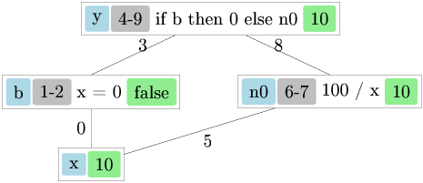

Curious OCaml
Curious OCaml invites you to explore programming through the lens of types, logic, and algebra. OCaml is a language that rewards curiosity—its type system catches errors before your code runs, its functional style encourages clear thinking about data transformations, and its mathematical foundations reveal deep connections between programming and logic. Whether you’re new to programming, experienced with OCaml, or a seasoned developer discovering functional programming for the first time, this book aims to spark that “aha!” moment when abstract concepts click into place.
This book is intended for three audiences:
From logic rules to programming constructs
In this chapter, you will:
Conventions. OCaml code blocks are intended to be
runnable unless marked with ocaml skip (used for
illustrative or partial snippets).
Throughout this chapter we use natural deduction in the style of intuitionistic (constructive) logic. This choice is not accidental: it is exactly the fragment of logic that lines up with the “pure” core of functional programming via the Curry–Howard correspondence.
What logical connectives do you know? Before we write any code, let us take a step back and think about logic itself. The connectives listed below form the foundation of reasoning, and as we will discover, they also form the foundation of programming.
| \top | \bot | \wedge | \vee | \rightarrow |
|---|---|---|---|---|
| a \wedge b | a \vee b | a \rightarrow b | ||
| truth | falsehood | conjunction | disjunction | implication |
| “trivial” | “impossible” | a and b | a or b | a gives b |
| shouldn’t get | got both | got at least one | given a, we get b |
How can we define these connectives precisely? The key insight is to think in terms of derivation trees. A derivation tree shows how we arrive at conclusions from premises, building up knowledge step by step:
\frac{ \frac{\frac{\,}{\text{a premise}} \; \frac{\,}{\text{another premise}}}{\text{some fact}} \; \frac{\frac{\,}{\text{this we have by default}}}{\text{another fact}}} {\text{final conclusion}}
We define connectives by providing rules for using them. For example, a rule \frac{a \; b}{c} matches parts of the tree that have two premises, represented by variables a and b, and have any conclusion, represented by variable c. These variables act as placeholders that can match any proposition.
Design principle: When defining a connective, we try to use only that connective in its definition. This keeps definitions self-contained and avoids circular dependencies between connectives.
Each logical connective comes with two kinds of rules:
Introduction rules tell us how to produce or construct a connective. If you want to prove “A and B”, the introduction rule tells you what you need: proofs of both A and B.
Elimination rules tell us how to use or consume a connective. If you already have “A and B”, the elimination rules tell you what you can get from it: either A or B (your choice).
In the table below, text in parentheses provides informal commentary. Letters like a, b, and c are variables that can stand for any proposition.
| Connective | Introduction Rules | Elimination Rules |
|---|---|---|
| \top | \frac{}{\top} | doesn’t have |
| \bot | doesn’t have | \frac{\bot}{a} (i.e., anything) |
| \wedge | \frac{a \quad b}{a \wedge b} | \frac{a \wedge b}{a} (take first) \frac{a \wedge b}{b} (take second) |
| \vee | \frac{a}{a \vee b} (put first) \frac{b}{a \vee b} (put second) | \frac{a \vee b \quad \genfrac{}{}{0pt}{}{[a]^x}{\vdots \; c} \quad \genfrac{}{}{0pt}{}{[b]^y}{\vdots \; c}}{c} using x, y |
| \rightarrow | \frac{\genfrac{}{}{0pt}{}{[a]^x}{\vdots \; b}}{a \rightarrow b} using x | \frac{a \rightarrow b \quad a}{b} |
The notation \genfrac{}{}{0pt}{}{[a]^x}{\vdots \; b} (sometimes written as a tree) matches any subtree that derives b and can use a as an assumption (marked with label x), even though a might not otherwise be warranted. The square brackets around a indicate that this is a hypothetical assumption, not something we have actually established. The superscript x is a label that helps us track which assumption gets “discharged” when we complete the derivation.
This is the key to proving implications: to prove “if A then B”, we temporarily assume A and show we can derive B. For example, we can derive “sunny \rightarrow happy” by showing that assuming it is sunny, we can derive happiness:
\frac{\frac{\frac{\frac{\frac{\,}{\text{sunny}}^x}{\text{go outdoor}}}{\text{playing}}}{\text{happy}}}{\text{sunny} \rightarrow \text{happy}} \text{ using } x
Notice how the assumption “sunny” (marked with x) appears at the top of the derivation tree. We use this assumption to derive “go outdoor”, then “playing”, and finally “happy”. Once we complete the derivation, the assumption is discharged: we no longer need to assume it is sunny because we have established the conditional “sunny \rightarrow happy”.
A crucial point: such assumptions can only be used within the matched subtree! However, they can be used multiple times within that subtree. For example, if someone’s mood is more difficult to influence and requires multiple sunny conditions:
\frac{\frac{ \frac{\frac{\frac{\,}{\text{sunny}}^x}{\text{go outdoor}}}{\text{playing}} \quad \frac{\frac{\,}{\text{sunny}}^x \quad \frac{\frac{\,}{\text{sunny}}^x}{\text{go outdoor}}}{\text{nice view}} }{\text{happy}}}{\text{sunny} \rightarrow \text{happy}} \text{ using } x
In this more complex derivation, the assumption “sunny” (labeled x) is used three times: once to derive “go outdoor”, and twice more in deriving “nice view”. All three uses are valid because they occur within the same hypothetical subtree.
The elimination rule for disjunction deserves special attention because it represents reasoning by cases, one of the most fundamental proof techniques.
Suppose we know “A or B” is true, but we do not know which one. How can we still derive a conclusion C? We must show that C follows regardless of which alternative holds. In other words, we need to prove: (1) assuming A, we can derive C, and (2) assuming B, we can derive C. Since one of A or B must be true, and both lead to C, we can conclude C.
Here is a concrete example: How can we use the fact that it is sunny \vee cloudy (but not rainy)?
\frac{ \frac{\,}{\text{sunny} \vee \text{cloudy}}^{\text{forecast}} \quad \frac{\frac{\,}{\text{sunny}}^x}{\text{no-umbrella}} \quad \frac{\frac{\,}{\text{cloudy}}^y}{\text{no-umbrella}} }{\text{no-umbrella}} \text{ using } x, y
We know that it will be sunny or cloudy (by watching the weather forecast). Now we reason by cases: If it will be sunny, we will not need an umbrella. If it will be cloudy, we will not need an umbrella. Since one of these must be the case, and both lead to the same conclusion, we can confidently say: we will not need an umbrella.
We need one more kind of rule to do serious math: reasoning by induction. This rule is somewhat similar to reasoning by cases, but instead of considering a finite number of alternatives, it allows us to prove properties that hold for infinitely many cases, such as all natural numbers.
Here is the example rule for induction on natural numbers:
\frac{p(0) \quad \genfrac{}{}{0pt}{}{[p(x)]^x}{\vdots \; p(x+1)}}{p(n)} \text{ by induction, using } x
This rule says: we get property p for any natural number n, provided we can do two things:
Here x is a unique variable representing an arbitrary natural number. We cannot substitute a particular number for it because we write “using x” on the side, indicating that the derivation works for any choice of x.
The power of induction lies in this: once we have the base case and the inductive step, we have implicitly covered all natural numbers. Starting from p(0), we can derive p(1), then p(2), then p(3), and so on, reaching any natural number n we wish.
We now arrive at one of the most remarkable discoveries in the foundations of computer science: the Curry–Howard correspondence, also known as “propositions as types” or the “proofs-as-programs” interpretation. In a pure, intuitionistic setting, this correspondence is not just a metaphor: proof rules and typing rules are the same kind of object.
Under this correspondence:
When you write a well-typed program, you are (implicitly) constructing a derivation tree that proves a typing judgement.
The following table shows how each logical connective corresponds to a programming construct in OCaml:
| Logic | OCaml type (example) | Example program | Intuition |
|---|---|---|---|
| \top | unit |
() |
The trivially true proposition; the type with exactly one value |
| \bot | void (an empty type) |
match v with _ -> . |
Falsehood; a type with no values |
| \wedge | * |
(,) |
Conjunction corresponds to pairs: having both A and B |
| \vee | a variant type | Left x / Right y |
Disjunction corresponds to sums: having either A or B |
| \rightarrow | -> |
fun |
Implication corresponds to functions: given A, produce B |
| induction | - | let rec |
Inductive proofs correspond to recursive definitions |
For example, the identity function corresponds to the tautology a \rightarrow a:
# fun x -> x;;
- : 'a -> 'a = <fun>Let us now see the precise typing rules for each OCaml construct, presented in the same style as our logical rules:
Typing rules for OCaml constructs:
Unit (truth): \frac{}{\texttt{()} : \texttt{unit}}
The unit value () always has type unit.
This is like \top in logic: we can
always produce it without any premises.
Empty type (falsehood): in OCaml we can define an empty type (a type with no constructors):
type void = |There is no way to construct a value of type void using
ordinary, terminating code. But if we somehow have a
v : void, then we can derive anything from it (falsity
elimination):
let absurd (v : void) : 'a =
match v with _ -> .This corresponds closely to the logical rule \frac{\bot}{a}.
OCaml also has effects (notably exceptions). Because
raise e never returns normally, the type checker allows it
to have any result type:
\frac{e : \texttt{exn}}{\texttt{raise } e : a}
This is useful in practice, but it is also a good reminder that
effects complicate the neat “proofs-as-programs” story.
Pair (conjunction):
p : a * b we can extract either
component (e.g. by pattern matching, or via
fst/snd)To construct a pair, you need both components. To use a pair, you can extract either component. This mirrors conjunction perfectly: to prove “A and B”, you need proofs of both; given “A and B”, you can conclude either A or B.
Variant (disjunction): first, we define a sum type (a two-way choice):
type ('a, 'b) either = Left of 'a | Right of 'bx : a we get
Left x : (a, b) either, and from y : b we get
Right y : (a, b) eithert : (a, b) either and a branch for
each case, produce a result c (pattern matching)The shape of the elimination rule is exactly “reasoning by cases”: to
use an either, you must handle both Left and
Right.
let either f g = function
| Left x -> f x
| Right y -> g yA built-in example is bool, which you can think of as a
two-constructor variant; the if ... then ... else ...
expression is just a specialized form of case analysis on a boolean.
let choose b x y =
if b then x else y
let choose' b x y =
match b with
| true -> x
| false -> yTo construct a variant, you only need one of the alternatives. To use a variant, you must handle all possible cases (pattern matching). This mirrors disjunction: to prove “A or B”, you only need one; to use “A or B”, you must consider both possibilities.
Function (implication):
To construct a function, you assume you have an input of type a (the parameter x) and show how to produce a result of type b. To use a function, you apply it to an argument. This mirrors implication: to prove “A implies B”, assume A and derive B; given “A implies B” and A, conclude B.
Recursion (induction): recursion is not a connective, but it matches the shape of induction: in a recursive definition you are allowed to assume the function being defined (the “induction hypothesis”) when defining its body.
In OCaml, recursion is introduced with let rec (there is
no standalone rec expression).
Writing out expressions and types repetitively quickly becomes tedious. More importantly, without definitions we cannot give names to our concepts, making code harder to understand and maintain. This is why we need definitions.
Type definitions are written: type ty =
some type.
In OCaml, disjunction-like types are not written as something
like a | b directly; instead, you define a variant
type and then use its constructors. For example:
type int_string_choice = A of int | B of stringThis allows us to write A x : int_string_choice for any
x : int, and B y : int_string_choice for any
y : string.
Why do we need to define variant types? The reasons are:
exhaustiveness checks, performance of generated code, and ease of type
inference. When OCaml sees A 5, it needs to figure out (or
“infer”) the type. Without a type definition, how would OCaml know
whether this is A of int | B of string or
A of int | B of float | C of bool? The definition tells
OCaml exactly what variants exist. When you match
| A i -> ..., the compiler will warn you if you forgot
to also cover C b in your match patterns.
OCaml does provide an alternative: polymorphic variants,
written with a backtick. We can write
`A x : [ `A of a | `B of b ]. With ` variants,
OCaml does infer what other variants might exist based on usage. These
types are powerful and flexible; we will discuss them in chapter
11.
Tuple elements do not need labels because we always know at which position a tuple element stands: the first element is first, the second is second, and so on. However, having labels makes code much clearer, especially when tuples have many components or components of the same type. For this reason, we can define a record type:
type int_string_record = { a : int; b : string }and create its values: {a = 7; b = "Mary"}. OCaml 5.4
and newer also support labeled tuples, we will not discuss
these.
We access the fields of records using the dot notation:
{a = 7; b = "Mary"}.b = "Mary". Unlike tuples where you
must remember “the second element is the name”, with records you can
write .b to get the field named b.
In many presentations of the Curry–Howard correspondence (and in
programming language theory), recursion is introduced via a standalone
operator often called fix. OCaml does not have a standalone
fix expression: recursion is introduced only as part of a
let rec definition.
This brings us to expression definitions, which let us give names to values. The typing rules for definitions are a bit more complex than what we have seen so far:
\frac{e_1 : a \quad \genfrac{}{}{0pt}{}{[x : a]}{\vdots \; e_2 : b}}{\texttt{let } x = e_1 \texttt{ in } e_2 : b}
This rule says: if e_1 has type
a, and assuming x has type a
we can show that e_2 has type b, then the whole let expression
has type b. Interestingly, this rule is
equivalent to introducing a function and immediately applying it:
let x = e1 in e2 behaves the same as
(fun x -> e2) e1. This equivalence reflects a deep
connection in the Curry–Howard correspondence.
For recursive definitions, we need an additional rule:
\frac{\genfrac{}{}{0pt}{}{[x : a]}{\vdots \; e_1 : a} \quad \genfrac{}{}{0pt}{}{[x : a]}{\vdots \; e_2 : b}}{\texttt{let rec } x = e_1 \texttt{ in } e_2 : b}
Notice the crucial difference: in the recursive case, x can appear in e_1 itself! This is what allows functions to call themselves. The name x is visible both in its own definition (e_1) and in the body that uses the definition (e_2).
These rules are slightly simplified. The full rules involve a concept called polymorphism, which we will cover in a later chapter. Polymorphism explains how the same function can work with different types.
Understanding scope—where names are visible—is essential for reading and writing OCaml programs.
Type definitions we have seen above are global: they need to be at the top-level (not nested in expressions), and they extend from the point they occur till the end of the source file or interactive session. You cannot define a type inside a function.
let-in definitions for
expressions: let x = e1 in e2 are local—the name
x is only visible within e_2. Once you exit the in part,
x no longer exists. This is useful for
temporary values that should not pollute the global namespace.
let definitions without
in are global: placing let x = e1 at the
top-level makes x visible from after
e_1 till the end of the source file or
interactive session. This is how you define functions and values that
the rest of your program can use.
In the interactive session (toplevel/REPL), we mark the end of a
top-level “sentence” with ;;. This tells OCaml “I am done
typing, please evaluate this.” In source files compiled by the build
system, ;; is unnecessary because the end of each
definition is clear from context.
Operators like +, *, <,
= are simply names of functions. In OCaml, there is nothing
magical about operators; they are ordinary functions that happen to have
special characters in their names and can be used in infix position
(between their arguments).
Just like other names, you can define your own operators:
# let (+:) a b = String.concat "" [a; b];;
val ( +: ) : string -> string -> string = <fun>
# "Alpha" +: "Beta";;
- : string = "AlphaBeta"Notice the asymmetry here: when defining an operator, we
wrap it in parentheses to tell OCaml “this is the name I am defining”.
When using the operator, we write it in the normal infix
position between its arguments. This asymmetry exists because the
definition syntax needs to distinguish between “the name
+:” and “the expression a +: b”.
An important feature of OCaml is that operators are not
overloaded. This means that a single operator cannot work for
multiple types. Each type needs its own set of operators: -
+, *, / work for integers -
+., *., /. work for floating
point numbers
This design choice makes type inference simpler and more predictable.
When you see x + y, OCaml knows immediately that
x and y must be integers.
Exception: The comparison operators
<, =, <=,
>=, <> do work for all values other
than functions. These are called polymorphic comparisons.
The following exercises are adapted from Think OCaml: How to Think Like a Computer Scientist by Nicholas Monje and Allen Downey. They will help you get comfortable with OCaml’s syntax and type system.
Assume that we execute the following assignment statements:
let width = 17
let height = 12.0
let delimiter = '.'For each of the following expressions, write the value of the expression and the type (of the value of the expression), or the resulting type error.
width/2width/.2.0height/31 + 2 * 5delimiter * 5Practice using the OCaml interpreter as a calculator:
You’ve probably heard of the Fibonacci numbers before, but in case you haven’t, they’re defined by the following recursive relationship: \begin{cases} f(0) = 0 \\ f(1) = 1 \\ f(n+1) = f(n) + f(n-1) & \text{for } n = 2, 3, \ldots \end{cases} Write a recursive function to calculate these numbers.
A palindrome is a word that is spelled the same backward and forward, like “noon” and “redivider”. Recursively, a word is a palindrome if the first and last letters are the same and the middle is a palindrome.
The following are functions that take a string argument and return the first, last, and middle letters:
let first_char word = word.[0]
let last_char word =
let len = String.length word - 1 in
word.[len]
let middle word =
let len = String.length word - 2 in
String.sub word 1 lenmiddle with a string with two letters?
One letter? What about the empty string ""?is_palindrome that takes a
string argument and returns true if it is a palindrome and
false otherwise.The greatest common divisor (GCD) of a and b is the largest number that divides both of them with no remainder.
One way to find the GCD of two numbers is Euclid’s algorithm, which is based on the observation that if r is the remainder when a is divided by b, then \gcd(a, b) = \gcd(b, r). As a base case, we can consider \gcd(a, 0) = a.
Write a function called gcd that takes parameters
a and b and returns their greatest common
divisor.
If you need help, see http://en.wikipedia.org/wiki/Euclidean_algorithm.
Algebraic data types and some curious analogies
In this chapter, we will deepen our understanding of OCaml’s type system by working through type inference examples by hand. Then we will explore algebraic data types—a cornerstone of functional programming that allows us to define rich, structured data. Along the way, we will discover a surprising and beautiful connection between these types and ordinary polynomials from high-school algebra.
In this chapter, you will:
For a refresher, let us apply the type inference rules introduced in
Chapter 1 to some simple examples. We will start with the identity
function fun x -> x—perhaps the simplest possible
function, yet one that reveals important aspects of polymorphism. In the
derivations below, [?] means “unknown
(to be inferred)”.
We begin with an incomplete derivation:
\frac{[?]}{\texttt{fun x -> x} : [?]}
Using the \rightarrow introduction
rule, we need to derive the body x assuming x
has some type a:
\frac{\genfrac{}{}{0pt}{}{[x : a]^x}{\vdots \; \texttt{x} : a}}{\texttt{fun x -> x} : [?] \rightarrow [?]}
The premise is a hypothetical derivation: inside the body we are
allowed to use the assumption x : a. Since the body is just
x, the result type is also a, and we conclude:
\frac{\genfrac{}{}{0pt}{}{[x : a]^x}{\vdots \; \texttt{x} : a}}{\texttt{fun x -> x} : a \rightarrow a}
Because a is arbitrary (we made no
assumptions constraining it), OCaml introduces a type variable
'a to represent it. This is how polymorphism emerges
naturally from the inference process—the identity function can work with
values of any type:
# fun x -> x;;
- : 'a -> 'a = <fun>Now let us try something that will constrain the types more:
fun x -> x+1. This is the same as
fun x -> ((+) x) 1 (try it in OCaml to verify!). The
addition operator forces specific types upon us.
We will use the notation [?\alpha] to mean “type unknown yet, but the same as in other places marked [?\alpha].” This notation helps us track how constraints propagate through the derivation.
Starting the derivation and applying \rightarrow introduction:
\frac{\frac{[?]}{\texttt{((+) x) 1} : [?\alpha]}}{\texttt{fun x -> ((+) x) 1} : [?] \rightarrow [?\alpha]}
Applying \rightarrow elimination
(function application) to ((+) x) 1:
\frac{\frac{\frac{[?]}{\texttt{(+) x} : [?\beta] \rightarrow [?\alpha]} \quad \frac{[?]}{\texttt{1} : [?\beta]}}{\texttt{((+) x) 1} : [?\alpha]}}{\texttt{fun x -> ((+) x) 1} : [?] \rightarrow [?\alpha]}
We know that 1 : int, so [?\beta] = \texttt{int}:
\frac{\frac{\frac{[?]}{\texttt{(+) x} : \texttt{int} \rightarrow [?\alpha]} \quad \frac{\,}{\texttt{1} : \texttt{int}}^{\text{(constant)}}}{\texttt{((+) x) 1} : [?\alpha]}}{\texttt{fun x -> ((+) x) 1} : [?] \rightarrow [?\alpha]}
Applying function application again to (+) x:
\frac{\frac{\frac{\frac{[?]}{\texttt{(+)} : [?\gamma] \rightarrow \texttt{int} \rightarrow [?\alpha]} \quad \frac{[?]}{\texttt{x} : [?\gamma]}}{\texttt{(+) x} : \texttt{int} \rightarrow [?\alpha]} \quad \frac{\,}{\texttt{1} : \texttt{int}}^{\text{(constant)}}}{\texttt{((+) x) 1} : [?\alpha]}}{\texttt{fun x -> ((+) x) 1} : [?\gamma] \rightarrow [?\alpha]}
Since (+) : int -> int -> int, we have [?\gamma] = \texttt{int} and [?\alpha] = \texttt{int}:
\frac{\frac{\frac{\frac{\,}{\texttt{(+)} : \texttt{int} \rightarrow \texttt{int} \rightarrow \texttt{int}}^{\text{(constant)}} \quad \frac{\,}{\texttt{x} : \texttt{int}}^x}{\texttt{(+) x} : \texttt{int} \rightarrow \texttt{int}} \quad \frac{\,}{\texttt{1} : \texttt{int}}^{\text{(constant)}}}{\texttt{((+) x) 1} : \texttt{int}}}{\texttt{fun x -> ((+) x) 1} : \texttt{int} \rightarrow \texttt{int}}
When there are several arrows “on the same depth” in a function type,
it means that the function returns a function. For example,
(+) : int -> int -> int is just a shorthand for
(+) : int -> (int -> int). The arrow associates to
the right, so we can omit the parentheses.
This is very different from:
\texttt{fun f -> (f 1) + 1} : (\texttt{int} \rightarrow \texttt{int}) \rightarrow \texttt{int}
In the first case, (+) is a function that takes an
integer and returns a function from integers to integers. In the second
case, we have a function that takes a function as an argument—a
higher-order function. The parentheses around
int -> int are essential here; without them, the meaning
would be completely different.
This style of defining multi-argument functions, where each function takes one argument and returns another function expecting the remaining arguments, is called curried form (named after logician Haskell Curry). It enables a powerful technique called partial application.
For example, instead of writing (fun x -> x+1), we
can simply write ((+) 1). Here we apply (+) to
just one argument, getting back a function that adds 1 to its input.
What expanded form does ((+) 1) correspond to exactly
(computationally)?
Think about it before reading on…
It corresponds to fun y -> 1 + y. We have “baked in”
the first argument, and the resulting function waits for the second.
We will become more familiar with functions returning functions when we study the lambda calculus in a later chapter.
In Chapter 1, we learned about the unit type and variant
types like:
type int_string_choice = A of int | B of stringWe also covered tuple types, record types, and type definitions. Now let us explore these concepts more deeply, building up to the powerful notion of algebraic data types.
Variants do not have to carry arguments. Instead of writing
A of unit, we can simply use A. This is more
convenient and idiomatic:
type color = Red | Green | BlueThis defines a type with exactly three possible values—no more, no less. The compiler knows this, which enables exhaustive pattern matching checks.
A subtle point about OCaml: In OCaml, variants take
multiple arguments rather than taking tuples as arguments. This means
A of int * string is different from
A of (int * string). The first takes two separate
arguments, while the second takes a single tuple argument. This
distinction is usually not important—until you get bitten by it in some
corner case! For most purposes, you can ignore it.
Here is where things get really interesting: type definitions can be recursive! This allows us to define data structures of arbitrary size using a finite definition:
type int_list = Empty | Cons of int * int_listLet us see what values inhabit int_list. The definition
tells us there are two ways to build an int_list: -
Empty represents the empty list—a list with no elements -
Cons (5, Empty) is a list containing just 5 -
Cons (5, Cons (7, Cons (13, Empty))) is a list containing
5, 7, and 13
Notice how Cons takes an integer and another
int_list, allowing us to chain together as many elements as
we like. This recursive structure is the essence of how functional
languages represent unbounded data.
The built-in type bool really does behave like a
two-constructor variant with values true and
false—but note a small OCaml wrinkle: user-defined
constructors must start with a capital letter, while a few built-in
constructors like true, false,
[], and (::) are special-cased.
Similarly, int can be thought of as a very
large finite variant (“one constructor per integer”), even though the
compiler implements it as an efficient machine integer rather than as a
gigantic sum type.
Our int_list type only works with integers. But what if
we want a list of strings? Or a list of booleans? We would have to
define separate types for each, duplicating the same structure.
Type definitions can be parametric with respect to the types of their components. This allows us to define generic data structures that work with any element type. OCaml already has a built-in parametric list type, so to avoid shadowing it we will define our own simplified list type:
type 'a my_list = Empty | Cons of 'a * 'a my_listThe 'a is a type parameter—a placeholder that
gets filled in when we use the type. We can have a
string my_list, an int my_list, or even an
(int my_list) my_list (a list of lists of integers).
Several conventions and syntax rules apply to parametric types:
Type variables must start with '. When printing
inferred types, OCaml may rename these variables, so it is customary to
stick to the standard names 'a, 'b,
'c, 'd, etc.
The OCaml syntax places the type parameter before the type name, mimicking English word order. A silly example that reads almost like English:
type 'white_color dog = Dog of 'white_colorThis defines a “white-color dog” type—the syntax reads naturally!
With multiple parameters, OCaml uses parentheses:
type ('a, 'b) choice = Left of 'a | Right of 'bCompare this to F# syntax:
type choice<'a,'b> = Left of 'a | Right of 'b
And Haskell syntax:
data Choice a b = Left a | Right b
Different languages have different conventions, but the underlying concept is the same.
OCaml provides various syntactic conveniences—sometimes called syntactic sugar—that make code more pleasant to write and read. Let us survey the most important ones.
Names of variants, called constructors, must start with a capital letter. If we wanted to define our own booleans, we would write:
type my_bool = True | FalseOnly constructors and module names can start with capital letters in OCaml. Everything else (values, functions, type names) must start with a lowercase letter. This convention makes it easy to distinguish constructors at a glance.
(As noted above, a few built-in constructors like true,
false, [], and (::) are special
exceptions to the capitalization rule.)
Modules are organizational units (like “shelves”) containing
related values. For example, the List module provides
operations on lists, including List.map and
List.filter. We will learn more about modules in later
chapters.
Did we mention that we can use dot notation to access record fields?
The syntax record.field extracts a field value. For
example, if we have let person = {name="Alice"; age=30}, we
can write person.name to get "Alice".
Several syntactic shortcuts make function definitions more concise. These are worth memorizing, as you will see them constantly in OCaml code:
fun x y -> e stands for
fun x -> fun y -> e. Note that
fun x -> fun y -> e parses as
fun x -> (fun y -> e). This shorthand aligns with
curried form—we can write multi-argument functions without nesting
fun expressions.
function A x -> e1 | B y -> e2 stands for
fun p -> match p with A x -> e1 | B y -> e2. The
general form is: function PATTERN-MATCHING stands for
fun v -> match v with PATTERN-MATCHING. This is handy
when you want to immediately pattern-match on a function’s
argument.
let f ARGS = e is a shorthand for
let f = fun ARGS -> e. This is probably the most common
way to define functions in practice.
Pattern matching is one of the most powerful features of OCaml and similar languages. It lets us examine the structure of data and extract components in a single, elegant construct.
Recall that we introduced fst and snd as
means to access elements of a pair. But what about larger tuples? There
is no built-in thd for the third element. The fundamental
way to access any tuple—or any algebraic data type—uses the
match construct. In fact, fst and
snd can easily be defined using pattern matching:
let fst p = match p with (a, b) -> a
let snd p = match p with (a, b) -> bThe pattern (a, b) destructures the pair,
binding its first component to a and its second to
b. We then return whichever component we want.
Pattern matching also works with records, letting us extract multiple fields at once:
type person = { name : string; surname : string; age : int }
let greet_person () =
match { name = "Walker"; surname = "Johnnie"; age = 207 } with
| { name = _; surname = sn; age = _ } -> "Hi " ^ sn ^ "!"Here we match against a record pattern, binding each field to a
variable. Note that we bind name to n,
surname to sn, and age to
a—then use sn in the greeting.
The left-hand sides of -> in match
expressions are called patterns. Patterns describe the
structure of values we want to match against. They can include: -
Constants (like 1, "hello", or
true) - Variables (which bind to the matched value) -
Constructors (like None, Some x, or
Cons (h, t)) - Tuples and records - Nested combinations of
all the above
Patterns can be nested to arbitrary depth, allowing us to match complex structures in one go:
match Some (5, 7) with
| None -> "sum: nothing"
| Some (x, y) -> "sum: " ^ string_of_int (x + y)Here Some (x, y) is a nested pattern: we match
Some of something, and that something must be a
pair, whose components we bind to x and y.
A pattern can simply bind the entire value without destructuring.
Writing match f x with v -> ... is the same as
let v = f x in .... This is occasionally useful when you
want the syntax of match but do not need to take the value
apart.
When we do not need a value in a pattern, it is good practice to use
the underscore _, which is a wildcard. The
wildcard matches anything but does not bind it to a name. This signals
to the reader (and the compiler) that we are intentionally ignoring that
part:
let fst (a, _) = a
let snd (_, b) = bUsing _ instead of an unused variable name avoids
compiler warnings about unused bindings.
A variable can only appear once in a pattern. This property is called
linearity. You might think this is a limitation—what if we want
to check that two parts of a structure are equal? We cannot write
(x, x) to match pairs with equal components.
However, we can add conditions to patterns using when,
so linearity is not really a limitation in practice:
let describe_point p =
match p with
| (x, y) when x = y -> "diag"
| _ -> "off-diag"The when clause acts as a guard: the pattern matches
only if both the structure matches and the condition is
true.
Here is a more elaborate example showing how to implement a
comparison function (without shadowing the standard
compare):
let compare_int a b =
match a, b with
| (x, y) when x < y -> -1
| (x, y) when x = y -> 0
| _ -> 1Notice how we match against the tuple (a, b) in
different ways, using guards to distinguish the cases.
We can skip unused fields of a record in a pattern. Only the fields we care about need to be mentioned. This keeps patterns concise and means we do not have to update every pattern when we add a new field to a record type.
We can compress patterns by using | inside a single
pattern to match multiple alternatives. This is different from having
multiple pattern clauses—it lets us share a single right-hand side for
several patterns:
type month =
| Jan | Feb | Mar | Apr | May | Jun
| Jul | Aug | Sep | Oct | Nov | Dec
type weekday = Mon | Tue | Wed | Thu | Fri | Sat | Sun
type calendar_date =
{ year : int; month : month; day : int; weekday : weekday }
let day =
{ year = 2012; month = Feb; day = 14; weekday = Wed }
let day_kind =
match day with
| { weekday = Sat | Sun; _ } -> "Weekend!"
| _ -> "Work day"The pattern Sat | Sun matches either Sat or
Sun. This is much cleaner than writing two separate clauses
with the same right-hand side.
asSometimes we want to both destructure a value and keep a
reference to the whole thing (or some intermediate part). We use
(pattern as v) to name a nested pattern, binding the
matched value to v:
match day with
| {weekday = (Mon | Tue | Wed | Thu | Fri as wday); _}
when not (day.month = Dec && day.day = 24) ->
Some (work (get_plan wday))
| _ -> NoneThis example demonstrates several features working together:
as wday clause binds the matched weekday to the
variable wdaywhen guard checks that it is not Christmas Evewday is then used in the expression
get_plan wdayThis combination of features makes OCaml’s pattern matching remarkably expressive.
Now we come to one of the most delightful aspects of algebraic data types: they really are algebraic in a precise mathematical sense. Let us explore a curious analogy between types and polynomials that turns out to be surprisingly deep.
The translation from types to mathematical expressions works as follows:
| (variant choice) with + (addition)* (tuple product) with \times (multiplication); as \times)We also need translations for some special types:
The void type (a type with no constructors, hence no values):
type void = |Since no values can be constructed, it represents emptiness—translate it as 0.
The unit type has exactly one value, so
translate it as 1. Since variants
without arguments behave like variants of unit, translate
them as 1 as well.
The bool type has exactly two values
(true and false), so translate it as 2.
Types like int, string,
float, and type parameters are treated as variables. We do
not care about their exact number of values; we just give them symbolic
names like x, y, etc.
Defined types translate according to their definitions (substituting variables as necessary).
Give a name to the type being defined (representing a function of the introduced variables). Now interpret the result as an ordinary numeric polynomial! (Or a “rational function” if recursively defined.)
This might seem like a mere curiosity, but it leads to real insights. Let us have some fun with it!
type ymd = { year : int; month : int; day : int }A simple “year-month-day” record is a product of three
int fields. Translating to a polynomial (using x for int):
D = x \times x \times x = x^3
The cube makes sense: this record is essentially a triple of integers.
The built-in option type is defined as:
type 'a option = None | Some of 'aTranslating (using x for the type
parameter 'a):
O = 1 + x
This reads as: an option is either nothing (1) or something of type x. The polynomial 1 + x is beautifully simple!
type 'a my_list = Empty | Cons of 'a * 'a my_listTranslating (where L represents the list type itself, and x represents the element type):
L = 1 + x \cdot L
This is a recursive equation! A list is either empty (1) or an element times another list (x \cdot L). If you solve this equation algebraically, you get L = \frac{1}{1-x} = 1 + x + x^2 + x^3 + \ldots, which corresponds to: a list is either empty, or has one element, or has two elements, etc.
type btree = Tip | Node of int * btree * btreeTranslating:
T = 1 + x \cdot T \cdot T = 1 + x \cdot T^2
A binary tree is either a tip (1) or a node containing a value and two subtrees (x \cdot T^2).
Here is the remarkable payoff: when translations of two types are equal according to the laws of high-school algebra, the types are isomorphic. This means there exist bijective (one-to-one and onto) functions between them—you can convert from one type to the other and back without losing any information.
Let us play with the binary tree polynomial and see where algebra takes us:
\begin{aligned} T &= 1 + x \cdot T^2 \\ &= 1 + x \cdot T + x^2 \cdot T^3 \\ &= 1 + x + x^2 \cdot T^2 + x^2 \cdot T^3 \\ &= 1 + x + x^2 \cdot T^2 \cdot (1 + T) \\ &= 1 + x \cdot (1 + x \cdot T^2 \cdot (1 + T)) \end{aligned}
Each step uses standard algebraic manipulations: substituting T = 1 + xT^2, expanding, factoring, and rearranging. The result is a different but algebraically equivalent expression.
Now let us translate this resulting expression back to a type:
type repr =
(int * (int * btree * btree * btree option) option) optionReading the polynomial 1 + x \cdot (1 + x
\cdot T^2 \cdot (1 + T)) from outside in: we have an option (the
outermost 1 + \ldots), whose
Some case contains an int times another
option, and so on.
The challenge is to find isomorphism functions with signatures:
val iso1 : btree -> repr
val iso2 : repr -> btreeThese functions should satisfy: for all trees t,
iso2 (iso1 t) = t, and for all representations
r, iso1 (iso2 r) = r. Can you write them?
Here is my first attempt, trying to guess the pattern directly:
# let iso1 (t : btree) : repr =
match t with
| Tip -> None
| Node (x, Tip, Tip) -> Some (x, None)
| Node (x, Node (y, t1, t2), Tip) ->
Some (x, Some (y, t1, t2, None))
| Node (x, Node (y, t1, t2), t3) ->
Some (x, Some (y, t1, t2, Some t3));;
Warning 8: this pattern-matching is not exhaustive.
Here is an example of a value that is not matched:
Node (_, Tip, Node (_, _, _))I forgot about one case! The case
Node (_, Tip, Node (_, _, _))—a node with an empty left
subtree and non-empty right subtree—was not covered. It seems difficult
to guess the solution directly when trying to map the complex final form
all at once.
Have you found it on your first try? If so, congratulations! Most people do not. This illustrates an important principle: complex transformations are easier to get right when broken into smaller steps.
Let us divide the task into smaller steps corresponding to intermediate points in the polynomial transformation. Instead of jumping from T = 1 + xT^2 directly to the final form, we will introduce intermediate types for each algebraic step:
type ('a, 'b) choice = Left of 'a | Right of 'b
type interm1 =
((int * btree, int * int * btree * btree * btree) choice)
option
type interm2 =
((int, int * int * btree * btree * btree option) choice)
optionNow we can define each step:
let step1r (t : btree) : interm1 =
match t with
| Tip -> None
| Node (x, t1, Tip) -> Some (Left (x, t1))
| Node (x, t1, Node (y, t2, t3)) ->
Some (Right (x, y, t1, t2, t3))
let step2r (r : interm1) : interm2 =
match r with
| None -> None
| Some (Left (x, Tip)) -> Some (Left x)
| Some (Left (x, Node (y, t1, t2))) ->
Some (Right (x, y, t1, t2, None))
| Some (Right (x, y, t1, t2, t3)) ->
Some (Right (x, y, t1, t2, Some t3))
let step3r (r : interm2) : repr =
match r with
| None -> None
| Some (Left x) -> Some (x, None)
| Some (Right (x, y, t1, t2, t3opt)) ->
Some (x, Some (y, t1, t2, t3opt))
let iso1 (t : btree) : repr =
step3r (step2r (step1r t))Each step function handles one small transformation, and the compiler verifies that our pattern matching is exhaustive. No more missed cases!
Exercise: Define step1l,
step2l, step3l, and iso2.
Hint: Now it is straightforward—each step is simply the inverse of its corresponding forward step. The left-going functions undo what the right-going functions do.
This exploration of type isomorphisms teaches us two valuable principles:
Design for validity: Try to define data structures so that only meaningful information can be represented—as long as it does not overcomplicate the data structures. Avoid catch-all clauses when defining functions. The compiler will then tell you if you have forgotten about a case. The exhaustiveness checker is your friend.
Divide and conquer: Break solutions into small
steps so that each step can be easily understood and verified. When I
tried to write iso1 directly, I made a mistake. When I
broke it into three simple steps, each step was obviously correct, and
composing them gave the right answer.
Of course, you might object that the pompous title is wrong—we will differentiate the translated polynomials, not the types themselves. Fair enough! But what sense does differentiating a type’s polynomial make?
It turns out that taking the partial derivative of a polynomial (translated from a data type), when translated back, gives a type representing a “one-hole context”—a data structure with one piece missing. This missing piece corresponds to the variable with respect to which we differentiated. The derivative tells us: “Here are all the ways to point at one element of this type.”
Let us start with a simple record type:
type ymd = { year : int; month : int; day : int }The translation and its derivative:
\begin{aligned} D &= x \cdot x \cdot x = x^3 \\ \frac{\partial D}{\partial x} &= 3x^2 = x \cdot x + x \cdot x + x \cdot x \end{aligned}
We could have left it as 3 \cdot x \cdot
x, but expanding it as a sum shows the structure more clearly.
The derivative 3x^2 says: there are
three ways to “point at” an int in a ymd, and
each way leaves two other ints behind.
Translating the expanded form back to a type:
type ymd_ctx =
Year of int * int | Month of int * int | Day of int * intEach variant represents a “hole” at a different position: -
Year (m, d) means the year field is the hole (and we have
the month m and day d) -
Month (y, d) means the month field is the hole (and we have
year y and day d) - Day (y, m)
means the day field is the hole
Now we can define functions to introduce and eliminate this derivative type:
let ymd_deriv ({ year = y; month = m; day = d } : ymd) =
[ Year (m, d); Month (y, d); Day (y, m) ]
let ymd_integr n = function
| Year (m, d) -> { year = n; month = m; day = d }
| Month (y, d) -> { year = y; month = n; day = d }
| Day (y, m) -> { year = y; month = m; day = n }
let example =
List.map (ymd_integr 7) (ymd_deriv { year = 2012; month = 2; day = 14 })The ymd_deriv function produces all contexts (one for
each field)—it “differentiates” a record into a list of one-hole
contexts. The ymd_integr function fills in a hole with a
new value—it “integrates” by putting a value back into the context.
Notice how the naming follows the calculus analogy!
The example above takes the date February 14, 2012, produces three contexts (one for each field), and then fills each hole with the number 7, producing three modified dates.
Now let us tackle the more challenging case of binary trees (using
the same btree type as above):
type btree = Tip | Node of int * btree * btreeThe translation and differentiation:
\begin{aligned} T &= 1 + x \cdot T^2 \\ \frac{\partial T}{\partial x} &= 0 + T^2 + 2 \cdot x \cdot T \cdot \frac{\partial T}{\partial x} = T \cdot T + 2 \cdot x \cdot T \cdot \frac{\partial T}{\partial x} \end{aligned}
Something interesting happened: the derivative is recursive! It refers to itself via \frac{\partial T}{\partial x}. This makes perfect sense when you think about it:
Instead of translating 2 as
bool, we introduce a more descriptive type to make the code
clearer:
type btree_dir = LeftBranch | RightBranch
type btree_deriv =
| Here of btree * btree
| Below of btree_dir * int * btree * btree_derivThe Here constructor means the hole is at the current
position, and we have the left and right subtrees. The
Below constructor means we go down one level, remembering
which direction we went, the value at the node we passed, and the
subtree we did not enter.
(You might someday hear about zippers—they are “inverted” relative to our type. In a zipper, the hole comes first, and the context trails behind. Both representations are useful in different situations.)
Exercise: Write a function that takes a number and a
btree_deriv, and builds a btree by putting the
number into the “hole” in btree_deriv.
The integration function fills the hole with a value. It must be
recursive because the derivative type is recursive—we may need to
descend through multiple Below constructors before reaching
the Here where the hole actually is:
let rec btree_integr n = function
| Here (ltree, rtree) -> Node (n, ltree, rtree)
| Below (LeftBranch, m, rtree, deriv) ->
Node (m, btree_integr n deriv, rtree)
| Below (RightBranch, m, ltree, deriv) ->
Node (m, ltree, btree_integr n deriv)When we reach Here, we create a node with the new value
n and the two subtrees. When we see Below, we
reconstruct the node we passed through and recursively integrate into
the appropriate subtree.
Due to Yaron Minsky.
This exercise practices the principle of “making invalid states
unrepresentable.” Consider a datatype to store internet connection
information. The time when_initiated marks the start of
connecting and is not needed after the connection is established (it is
only used to decide whether to give up trying to connect). The ping
information is available for established connections but not straight
away.
type connectionstate = Connecting | Connected | Disconnected
type connectioninfo = {
state : connectionstate;
server : Inetaddr.t;
lastpingtime : Time.t option;
lastpingid : int option;
sessionid : string option;
wheninitiated : Time.t option;
whendisconnected : Time.t option;
}(The types Time.t and Inetaddr.t come from
the Core library. You can replace them with float
and Unix.inet_addr. Load the Unix library in the
interactive toplevel with #load "unix.cma";;.)
The problem with this design is that it allows many nonsensical
combinations: a Connecting state with ping information, a
Disconnected state with a session ID, etc. The optional
fields (all those option types) make it unclear which
fields are valid in which states.
Rewrite the type definitions so that the datatype will contain only reasonable combinations of information. Use separate record types for each connection state, with only the fields that make sense for that state.
In OCaml, functions can have labeled arguments and optional arguments (parameters with default values that can be omitted). This exercise explores these features.
Labels can differ from the names of argument values:
let f ~meaningfulname:n = n + 1
let _ = f ~meaningfulname:5 (* We do not need the result so we ignore it. *)When the label and value names are the same, the syntax is shorter:
let g ~pos ~len =
StringLabels.sub "0123456789abcdefghijklmnopqrstuvwxyz" ~pos ~len
let () = (* A nicer way to mark computations that return unit. *)
let pos = Random.int 26 in
let len = Random.int 10 in
print_string (g ~pos ~len)When some function arguments are optional, the function must take non-optional arguments after the last optional argument. Optional parameters with default values:
let h ?(len=1) pos = g ~pos ~len
let () = print_string (h 10)Optional arguments are implemented as parameters of an option type. This allows checking whether the argument was provided:
let foo ?bar n =
match bar with
| None -> "Argument = " ^ string_of_int n
| Some m -> "Sum = " ^ string_of_int (m + n)We can use it in various ways:
let _ = foo 5
let _ = foo ~bar:5 7We can also provide the option value directly:
let test_foo () =
let bar = if Random.int 10 < 5 then None else Some 7 in
foo ?bar 7Observe the types that functions with labeled and optional arguments have. Come up with coding style guidelines for when to use labeled arguments. When might they improve readability? When might they be overkill?
Write a rectangle-drawing procedure that takes three optional arguments: left-upper corner, right-lower corner, and a width-height pair. It should draw a correct rectangle whenever two of the three arguments are given (since any two determine the third), and raise an exception otherwise. Use the Bogue library.
Write a function that takes an optional argument of arbitrary type and a function argument, and passes the optional argument to the function without inspecting it. This tests your understanding of how optional arguments work at the type level.
From a past exam.
These exercises help you internalize how type inference works. Try to work them out by hand before checking with the OCaml toplevel.
let double f y = f (f y) in fun g x -> double (g x)let rec tails l = match l with [] -> [] | x::xs -> xs::tails xs in fun l -> List.combine l (tails l)(int -> int) -> bool'a option -> 'a listWe have seen that algebraic data types can be related to analytic functions (the subset definable from polynomials via recursion)—by literally interpreting sum types (variant types) as sums and product types (tuple and record types) as products. We can extend this interpretation to function types by interpreting a \rightarrow b as b^a (i.e., b to the power of a). Note that the b^a notation is actually used to denote functions in set theory.
This interpretation makes sense: a function from a set with a elements to a set with b elements is choosing, for each of the a inputs, one of b outputs—giving b^a possible functions.
Translate a^{b + cd} and a^b \cdot (a^c)^d into OCaml types, using any
distinct types for a, b, c, d, and
using type ('a,'b) choice = Left of 'a | Right of 'b for
+. Write the bijection functions in
both directions. Verify algebraically that a^{b + cd} = a^b \cdot (a^c)^d using the laws
of exponents.
Come up with a type 't exp that shares with the
exponential function the following property: \frac{\partial \exp(t)}{\partial t} =
\exp(t), where we translate a derivative of a type as a context
(i.e., the type with a “hole”), as in this chapter. In other words, the
derivative of the type should be isomorphic to the type itself! Explain
why your answer is correct. Hint: in computer science, our
logarithms are mostly base 2.
Further reading: Algebraic Type Systems - Combinatorial Species
Write a function btree_deriv_at that takes a predicate
over integers (i.e., a function f: int -> bool) and a
btree, and builds a btree_deriv whose “hole”
is in the first position for which the predicate returns true. It should
return a btree_deriv option, with None if the
predicate does not hold for any node.
This function lets you “search” a tree and get back a context pointing to the found element. Think about what order you want to search in (pre-order, in-order, or post-order) and what “first” means in that context.
Reduction semantics and operational reasoning
In this chapter, you will:
References:
In this chapter, we explore how functional programs actually execute. We will learn how to reason about computation step by step using reduction semantics, and discover important optimization techniques like tail call optimization that make functional programming practical. Along the way, we will encounter our first taste of continuation passing style, a powerful programming technique that will reappear throughout this book.
Function composition is one of the most fundamental operations in functional programming. It allows us to build complex transformations by combining simpler functions. The usual way function composition is defined in mathematics is “backward”—the notation follows the convention of mathematical function application:
(f \circ g)(x) = f(g(x))
This means that when we write f \circ g, we first apply g and then apply f to the result. The function written on the left is applied last—hence the term “backward” composition. Here is how this is expressed in different functional programming languages:
| Language | Definition |
|---|---|
| Math | (f \circ g)(x) = f(g(x)) |
| OCaml | let (-|) f g x = f (g x) |
| F# | let (<<) f g x = f (g x) |
| Haskell | (.) f g = \x -> f (g x) |
This backward composition looks like function application but needs
fewer parentheses. Do you recall the functions iso1 and
iso2 from the previous chapter on type isomorphisms? Using
backward composition, we could write:
let iso2 = step1l -| step2l -| step3lWhile backward composition matches traditional mathematical notation, many programmers find a “forward” composition more intuitive. Forward composition follows the order in which computation actually proceeds—data flows from left to right, matching how we typically read code in most programming languages:
| Language | Definition |
|---|---|
| OCaml | let (\|-) f g x = g (f x) |
| F# | let (>>) f g x = g (f x) |
With forward composition, you can read a pipeline of transformations in the natural order:
let iso1 = step1r |- step2r |- step3rHere, the data first passes through step1r, then the
result goes to step2r, and finally to step3r.
This “pipeline” style of programming is particularly popular in
languages like F# and has influenced the design of many modern
programming languages.
In the table above, the operator is written as \|-
because Markdown tables use | to separate columns. In
actual OCaml code, the operator name is (|-).
let (|-) f g x = g (f x)Two related (but distinct) tools are also worth knowing:
Fun.compose, where
Fun.compose f g x = f (g x).(|>) (a pipeline): x |> f |> g means
g (f x). Unlike (|-), this is not composition
of functions but immediate application to a value.Both composition examples above rely on partial
application, a technique we introduced in the previous chapter.
Recall that ((+) 1) is a function that adds 1 to its
argument—we have provided only one of the two arguments that
(+) requires. Partial application occurs whenever we supply
fewer arguments than a function expects; the result is a new function
that waits for the remaining arguments.
Consider the composition step1r |- step2r |- step3r. How
exactly does partial application come into play here? The composition
operator (|-) is defined as
let (|-) f g x = g (f x), which means it takes
three arguments: two functions f and
g, and a value x. When we write
step1r |- step2r, we are partially applying
(|-) with just two arguments. The result is a function that
still needs the final argument x.
Exercise: Think about the types involved. If
step1r has type 'a -> 'b and
step2r has type 'b -> 'c, what is the type
of step1r |- step2r?
Check: step1r |- step2r has type
'a -> 'c. (Composition “cancels” the middle type
'b.)
Now we define iterated function composition—applying a function to itself repeatedly. This is written mathematically as:
f^n(x) := \underbrace{(f \circ \cdots \circ f)}_{n \text{ times}}(x)
In other words, f^0 is the identity
function, f^1 = f, f^2 = f \circ f, and so on. In OCaml, we
first define the backward composition operator, then use it to implement
power:
let (-|) f g x = f (g x)
let rec power f n =
if n <= 0 then (fun x -> x) else f -| power f (n-1)When n <= 0, we return the identity function
fun x -> x. Otherwise, we compose f with
power f (n-1), which gives us one more application of
f. Notice how elegantly this definition expresses the
mathematical concept—we are literally composing f with
itself n times.
This power function is surprisingly versatile. For
example, we can use it to define addition in terms of the successor
function:
let add n = power ((+) 1) nHere add 5 7 would compute 7 +
1 + 1 + 1 + 1 + 1 = 12. We could even define multiplication:
let mult k n = power ((+) k) n 0This computes 0 + k + k + \ldots + k
(adding k a total of n times), giving us k \times n. While not the most efficient
implementation, these examples show how higher-order functions like
power can express fundamental mathematical operations.
A beautiful application of power is computing
higher-order derivatives. First, let us define a numerical approximation
of the derivative using the standard finite difference formula:
let derivative dx f = fun x -> (f (x +. dx) -. f x) /. dxThis definition computes \frac{f(x + dx) -
f(x)}{dx}, which approximates f'(x) when dx is small.
Notice the explicit fun x -> ... syntax, which
emphasizes that derivative dx f is itself a function—we are
transforming a function f into its derivative function.
We can write the same definition more concisely using OCaml’s curried function syntax:
let derivative dx f x = (f (x +. dx) -. f x) /. dxBoth definitions are equivalent, but the first makes the “function returning a function” structure more explicit, while the second is more compact.
A note on OCaml’s numeric operators: OCaml uses
different operators for floating-point arithmetic than for integers. The
type of (+) is int -> int -> int, so we
cannot use + with float values. Instead,
operators followed by a dot work on float numbers:
+., -., *., and /..
This might seem inconvenient at first, but it catches type errors at
compile time and avoids the implicit conversions that cause subtle bugs
in other languages.
Now comes the payoff. With power and
derivative, we can elegantly compute higher-order
derivatives:
let pi = 4.0 *. atan 1.0
let sin''' = (power (derivative 1e-5) 3) sin
let _approx = sin''' piHere sin''' is the third derivative of sine. The
expression (power (derivative 1e-5) 3) creates a function
that applies the derivative operation three times—exactly what we need
for the third derivative.
Mathematically, the third derivative of \sin(x) is -\cos(x), so sin''' pi should
give us -\cos(\pi) = 1. The actual
result will be close to 1, with some numerical error due to the finite
difference approximation (the error compounds with each derivative we
take).
This example demonstrates the power of treating functions as
first-class values. We have built a general-purpose derivative operator
and combined it with our power function to create an nth-derivative calculator—all in just a few
lines of code.
So far, we have written OCaml programs and observed their results, but we have not precisely described how those results are computed. To understand how OCaml programs execute, we need to formalize the evaluation process. This section presents reduction semantics (also called operational semantics), which describes computation as a series of rewriting steps that transform expressions until we reach a final value.
Understanding reduction semantics is valuable for several reasons. It helps us predict what our programs will do, reason about their efficiency, and understand subtle behaviors like infinite loops and non-termination. The ideas here also form the foundation for understanding more advanced topics like type systems and program verification.
Programs consist of expressions. Here is the grammar of expressions for a simplified version of OCaml (we omit some features for clarity):
\begin{aligned} a \; &{:=} \; x && \text{variables} \\ &\mid \; \texttt{fun } x \texttt{ -> } a && \text{(defined) functions} \\ &\mid \; a \; a && \text{applications} \\ &\mid \; C^0 && \text{value constructors of arity } 0 \\ &\mid \; C^n(a, \ldots, a) && \text{value constructors of arity } n \\ &\mid \; f^n && \text{built-in values (primitives) of arity } n \\ &\mid \; \texttt{let } x = a \texttt{ in } a && \text{name bindings (local definitions)} \\ &\mid \; \texttt{match } a \texttt{ with} && \\ & \quad p \texttt{ -> } a \texttt{ | } \cdots \texttt{ | } p \texttt{ -> } a && \text{pattern matching} \\[1em] p \; &{:=} \; x && \text{pattern variables} \\ &\mid \; (p, \ldots, p) && \text{tuple patterns} \\ &\mid \; C^0 && \text{variant patterns of arity } 0 \\ &\mid \; C^n(p, \ldots, p) && \text{variant patterns of arity } n \end{aligned}
Arity means how many arguments something requires. For constructors, arity tells us how many components the constructor holds; for functions (primitives), it tells us how many arguments they need before they can compute a result. For tuple patterns, arity is simply the length of the tuple.
Meta-syntax note. In the grammar and rules below, we
write constructors as if they were truly n-ary, e.g. C^3(a_1,a_2,a_3). In actual OCaml syntax,
constructors take exactly one argument; “multiple arguments” are
represented by a tuple, e.g. Node (v1, v2, v3). The n-ary presentation is a convenient
mathematical shorthand.
Evaluation-order note. The small-step rules below are intentionally simplified. In particular, the “context” rules allow reducing subexpressions in more than one place. Real OCaml is strict (call-by-value) and evaluates subexpressions in a deterministic order (in current OCaml implementations this is often right-to-left); the details matter when you have effects (exceptions, printing, mutation), but are usually irrelevant for purely functional code.
fix PrimitiveOur grammar above includes functions defined with fun,
but what about recursive functions defined with let rec? To
keep our semantics simple, we introduce a primitive fix
that captures the essence of recursion:
\texttt{let rec } f \; x = e_1 \texttt{ in } e_2 \equiv \texttt{let } f = \texttt{fix (fun } f \; x \texttt{ -> } e_1 \texttt{) in } e_2
The fix primitive is a fixpoint combinator. It
takes a function that expects to receive “itself” as its first argument
and produces a function that, when called, behaves as if it has access
to itself for recursive calls. This might seem mysterious now, but we
will see exactly how it works when we examine its reduction rule
below.
Expressions evaluate (i.e., compute) to values. Values are expressions that cannot be reduced further—they are the “final answers” of computation:
\begin{array}{lcll} v & := & \texttt{fun } x \texttt{ -> } a & \text{(defined) functions} \\ & | & C^n(v_1, \ldots, v_n) & \text{constructed values} \\ & | & f^n \; v_1 \; \cdots \; v_k & k < n \text{ (partially applied primitives)} \end{array}
Note that functions are values: fun x -> x + 1 is
already fully evaluated—there is nothing more to compute until the
function is applied to an argument. Similarly, constructed values like
Some 42 or (1, 2, 3) are values when all their
components are values.
Partially applied primitives like (+) 3 are also values.
The expression (+) 3 has received one argument but needs
another before it can compute a sum. Until that second argument arrives,
there is nothing more to do, so (+) 3 is a value.
The heart of evaluation is substitution. To substitute a value v for a variable x in expression a, we write a[x := v]. This notation means that every occurrence of x in a is replaced by v.
For example, if a is the expression
x + x * y and we substitute 3 for x, we get
3 + 3 * y. In our notation:
(x + x * y)[x := 3] = 3 + 3 * y.
In the presence of binders like fun x -> ... (and
pattern-bound variables), substitution must be
capture-avoiding: we are allowed to rename bound
variables so we do not accidentally change which occurrence refers to
which binder.
Implementation note: Although we describe substitution as “replacing” variables with values, the actual implementation in OCaml does not duplicate the value v in memory each time it appears. Instead, OCaml uses closures and sharing to ensure that values are stored once and referenced wherever needed. This is both more efficient and essential for handling recursive data structures.
Now we can describe how computation actually proceeds. Reduction works by finding reducible expressions called redexes (short for “reducible expressions”) and applying reduction rules that rewrite them into simpler forms. We write e_1 \rightsquigarrow e_2 to mean “expression e_1 reduces to expression e_2 in one step.”
Here are the fundamental reduction rules:
Function application (beta reduction): (\texttt{fun } x \texttt{ -> } a) \; v \rightsquigarrow a[x := v]
This is the most important rule. When we apply a function
fun x -> a to a value v, we substitute v for the parameter x throughout the function body a. This rule is traditionally called “beta
reduction” in the lambda calculus literature.
For example: (fun x -> x + 1) 5 \rightsquigarrow 5 + 1 \rightsquigarrow 6.
Let binding: \texttt{let } x = v \texttt{ in } a \rightsquigarrow a[x := v]
A let binding works similarly: once the bound expression has been
evaluated to a value v, we substitute
it into the body. Notice that let x = e in a is essentially
equivalent to (fun x -> a) e—both bind x to the result of evaluating e within the expression a.
Primitive application: f^n \; v_1 \; \cdots \; v_n \rightsquigarrow f(v_1, \ldots, v_n)
When a primitive (like + or *) receives all
the arguments it needs (determined by its arity n), it computes the result. Here f(v_1, \ldots, v_n) denotes the actual result
of the primitive operation—for example, (+) 2 3 \rightsquigarrow 5.
Pattern matching with a variable pattern: \texttt{match } v \texttt{ with } x \texttt{ -> } a \texttt{ | } \cdots \rightsquigarrow a[x := v]
A variable pattern always matches, binding the entire value to the variable.
Pattern matching with a non-matching constructor: \frac{C_1 \neq C_2}{\texttt{match } C_1^n(v_1, \ldots, v_n) \texttt{ with } C_2^k(p_1, \ldots, p_k) \texttt{ -> } a \texttt{ | } pm \rightsquigarrow \texttt{match } C_1^n(v_1, \ldots, v_n) \texttt{ with } pm}
If the constructor in the value (C_1) does not match the constructor in the pattern (C_2), we skip this branch and try the remaining patterns (pm). This is how OCaml searches through pattern match cases from top to bottom.
Pattern matching with a matching constructor: \texttt{match } C_1^n(v_1, \ldots, v_n) \texttt{ with } C_1^n(x_1, \ldots, x_n) \texttt{ -> } a \texttt{ | } \cdots \rightsquigarrow a[x_1 := v_1; \ldots; x_n := v_n]
If the constructor matches, we substitute all the values from inside
the constructor for the corresponding pattern variables. For example,
match Some 42 with Some x -> x + 1 | None -> 0
reduces to 42 + 1 because Some matches
Some and we substitute 42 for x.
If n = 0, then C_1^n(v_1, \ldots, v_n) stands for simply
C_1^0, a constructor with no arguments
(like None or []). We omit the more complex
cases of nested pattern matching for brevity.
In these rules, we use metavariables—placeholders that can be replaced with actual expressions. Understanding them is key to applying the rules:
foo, n, or result)To apply a rule, find substitutions for these metavariables that make the left-hand side of the rule match your expression. Then the right-hand side (with the same substitutions applied) gives you the reduced expression.
For example, to apply the beta reduction rule to
(fun n -> n * 2) 5: 1. Match fun x -> a
with fun n -> n * 2, giving us x = \texttt{n} and a = \texttt{n * 2} 2. Match v with 5 3. The right-hand side
a[x := v] becomes
(n * 2)[n := 5] which equals 5 * 2
The reduction rules above only apply when the arguments are already
values. But what if we have (fun x -> x + 1) (2 + 3)?
The argument 2 + 3 is not a value, so we cannot directly
apply beta reduction. We need rules that tell us evaluation can proceed
inside subexpressions.
If a_i \rightsquigarrow a_i' (meaning a_i can take a reduction step), then:
\begin{array}{lcl} a_1 \; a_2 & \rightsquigarrow & a_1' \; a_2 \\ a_1 \; a_2 & \rightsquigarrow & a_1 \; a_2' \\ C^n(a_1, \ldots, a_i, \ldots, a_n) & \rightsquigarrow & C^n(a_1, \ldots, a_i', \ldots, a_n) \\ \texttt{let } x = a_1 \texttt{ in } a_2 & \rightsquigarrow & \texttt{let } x = a_1' \texttt{ in } a_2 \\ \texttt{match } a_1 \texttt{ with } pm & \rightsquigarrow & \texttt{match } a_1' \texttt{ with } pm \end{array}
These rules describe where reduction can happen: - In a
function application a_1 \; a_2, the
rules allow reducing either the function (a_1) or the argument (a_2). This is a common simplification in
textbook semantics; OCaml itself uses a fixed evaluation order. - In a
constructor application, any argument can be evaluated. - In a let
binding let x = a1 in a2, the bound expression a_1 must be evaluated to a value before we
can proceed. Notice there is no rule for evaluating a_2 directly—the body is only evaluated after
the substitution happens. - In a match expression, the scrutinee (the
expression being matched) must be evaluated before pattern matching can
proceed.
fix RuleFinally, the rule for the fix primitive, which enables
recursion:
\texttt{fix}^2 \; v_1 \; v_2 \rightsquigarrow v_1 \; (\texttt{fix}^2 \; v_1) \; v_2
This rule is subtle but powerful. Let us unpack it:
fix is a binary primitive (arity 2), meaning it needs
two arguments before it computes.fix to two values v_1 and v_2,
it “unrolls” one level of recursion by calling v_1 with two arguments: (fix v1)
(which represents “the recursive function itself”) and v_2 (the actual argument to the recursive
call).fix has arity 2, the expression
(fix v1) is a partially applied primitive—and
partially applied primitives are values! This is crucial: it means
(fix v1) will not be evaluated further until it is applied
to another argument inside v_1.This delayed evaluation is what prevents infinite loops. If
(fix v1) were evaluated immediately, we would get an
infinite chain of expansions. Instead, evaluation only continues when
the recursive function actually makes a recursive call.
fix is not an OCaml primitive; it is a pedagogical
device. If you did want to define it directly in OCaml, you
could (ironically) do so using let rec:
let fix f =
let rec self x = f self x in
selfThe best way to understand reduction semantics is to work through examples by hand. Trace the evaluation of these expressions step by step:
Exercise 1: Evaluate
let double x = x + x in double 3
Exercise 2: Evaluate
(fun f -> fun x -> f (f x)) (fun y -> y + 1) 0
Exercise 3: Define the factorial function using
fix and trace the evaluation of
factorial 3
Let us see the reduction rules in action with a more substantial example. We will build a small computer algebra system that can represent mathematical expressions symbolically, evaluate them, and even compute their derivatives symbolically.
Consider the symbolic expression type from Lec3.ml:
type expression =
| Const of float
| Var of string
| Sum of expression * expression (* e1 + e2 *)
| Diff of expression * expression (* e1 - e2 *)
| Prod of expression * expression (* e1 * e2 *)
| Quot of expression * expression (* e1 / e2 *)
exception Unbound_variable of string
let rec eval env exp =
match exp with
| Const c -> c
| Var v ->
(try List.assoc v env with Not_found -> raise (Unbound_variable v))
| Sum(f, g) -> eval env f +. eval env g
| Diff(f, g) -> eval env f -. eval env g
| Prod(f, g) -> eval env f *. eval env g
| Quot(f, g) -> eval env f /. eval env gThe expression type represents mathematical expressions
as a tree structure. Each constructor corresponds to a different kind of
expression: constants, variables, and the four basic arithmetic
operations. The eval function takes an environment
env (a list of variable-value pairs) and recursively
evaluates an expression to a floating-point number.
We can also define symbolic differentiation—computing the derivative of an expression without evaluating it numerically:
let rec deriv exp dv =
match exp with
| Const _ -> Const 0.0
| Var v -> if v = dv then Const 1.0 else Const 0.0
| Sum(f, g) -> Sum(deriv f dv, deriv g dv)
| Diff(f, g) -> Diff(deriv f dv, deriv g dv)
| Prod(f, g) -> Sum(Prod(f, deriv g dv), Prod(deriv f dv, g))
| Quot(f, g) -> Quot(Diff(Prod(deriv f dv, g), Prod(f, deriv g dv)),
Prod(g, g))The deriv function implements the standard rules of
calculus: - The derivative of a constant is 0. - The derivative of the
variable we are differentiating with respect to is 1; any other variable
is treated as a constant (derivative 0). - The sum and difference rules:
(f + g)' = f' + g' and
(f - g)' = f' - g'. - The
product rule: (f \cdot g)' = f \cdot
g' + f' \cdot g. - The quotient rule: (f / g)' = (f' \cdot g - f \cdot g') /
g^2.
For convenience, let us define some operators and variables so we can write expressions more naturally:
let x = Var "x"
let y = Var "y"
let z = Var "z"
let (+:) f g = Sum (f, g)
let (-:) f g = Diff (f, g)
let ( *: ) f g = Prod (f, g)
let (/:) f g = Quot (f, g)
let (!:) i = Const iThese custom operators (ending in :) let us write
symbolic expressions that look almost like regular mathematical
notation.
Now let us evaluate the expression 3x + 2y + x^2 y at x = 1, y = 2:
let example = !:3.0 *: x +: !:2.0 *: y +: x *: x *: y
let env = ["x", 1.0; "y", 2.0]For nicer output, it is helpful to define a pretty-printer that
displays expressions in infix notation (this is adapted from
Lec3.ml):
let print_expr ppf exp =
let open_paren prec op_prec =
if prec > op_prec then Format.fprintf ppf "(@["
else Format.fprintf ppf "@[" in
let close_paren prec op_prec =
if prec > op_prec then Format.fprintf ppf "@])"
else Format.fprintf ppf "@]" in
let rec print prec exp =
match exp with
| Const c -> Format.fprintf ppf "%.2f" c
| Var v -> Format.fprintf ppf "%s" v
| Sum(f, g) ->
open_paren prec 0;
print 0 f; Format.fprintf ppf "@ +@ "; print 0 g;
close_paren prec 0
| Diff(f, g) ->
open_paren prec 0;
print 0 f; Format.fprintf ppf "@ -@ "; print 1 g;
close_paren prec 0
| Prod(f, g) ->
open_paren prec 2;
print 2 f; Format.fprintf ppf "@ *@ "; print 2 g;
close_paren prec 2
| Quot(f, g) ->
open_paren prec 2;
print 2 f; Format.fprintf ppf "@ /@ "; print 3 g;
close_paren prec 2
in
print 0 expAnd for tracing, we define a specialized evaluator
eval_1_2 with the environment baked in (so the trace
focuses on the expression structure):
let rec eval_1_2 exp =
match exp with
| Const c -> c
| Var v ->
(try List.assoc v env with Not_found -> raise (Unbound_variable v))
| Sum(f, g) -> eval_1_2 f +. eval_1_2 g
| Diff(f, g) -> eval_1_2 f -. eval_1_2 g
| Prod(f, g) -> eval_1_2 f *. eval_1_2 g
| Quot(f, g) -> eval_1_2 f /. eval_1_2 gIn the toplevel, you can now install the printer and trace the evaluation:
# #install_printer print_expr;;
# #trace eval_1_2;;
# eval_1_2 example;;The trace output makes the recursive structure of the computation very concrete:
eval_1_2 <-- 3.00 * x + 2.00 * y + x * x * y
eval_1_2 <-- x * x * y
eval_1_2 <-- y
eval_1_2 --> 2.
eval_1_2 <-- x * x
eval_1_2 <-- x
eval_1_2 --> 1.
eval_1_2 <-- x
eval_1_2 --> 1.
eval_1_2 --> 1.
eval_1_2 --> 2.
eval_1_2 <-- 3.00 * x + 2.00 * y
eval_1_2 <-- 2.00 * y
eval_1_2 <-- y
eval_1_2 --> 2.
eval_1_2 <-- 2.00
eval_1_2 --> 2.
eval_1_2 --> 4.
eval_1_2 <-- 3.00 * x
eval_1_2 <-- x
eval_1_2 --> 1.
eval_1_2 <-- 3.00
eval_1_2 --> 3.
eval_1_2 --> 3.
eval_1_2 --> 7.
eval_1_2 --> 9.
- : float = 9.The arrows <-- and --> show function
calls and returns, respectively. Each level of indentation represents a
nested function call. These indentation levels correspond to
stack frames—the runtime structures that store the
state of each function call. Each time eval_1_2 is called
recursively, a new stack frame is created to remember where to return
and what computation remains.
The final result is 3 \cdot 1 + 2 \cdot 2 + 1 \cdot 1 \cdot 2 = 3 + 4 + 2 = 9, as expected.
This trace visualization brings us to an important question: what happens when we have very deep recursion? This leads us to our next topic.
The call stack is finite, and each recursive call typically adds a new frame to it. This means that deeply recursive functions can exhaust the stack and crash—a notorious problem known as “stack overflow.” Fortunately, functional language implementations have a trick to avoid this problem in many cases.
Excuse me for not formally defining what a function call is… Computers normally evaluate programs by creating stack frames on the call stack for each function call. A stack frame stores the local variables, the return address (where to continue after the function returns), and other bookkeeping information. The trace in the previous section illustrates this: each level of indentation represents a new stack frame.
The key insight is that not all function calls require a new stack frame. A tail call is a function call that is performed as the very last action when computing a function—there is nothing more to do after the call returns except to return that value. For example:
let f x = g (x + 1)The call to g is a tail call. Once g
returns some value, f simply returns that same value—no
further computation is needed.
In contrast:
let f x = 1 + g xThe call to g is not a tail call. After
g returns, we still need to add 1 to the result before
f can return. This means we need to remember to do the
addition, which requires keeping the stack frame around.
Functional language compilers (including OCaml’s) recognize tail calls and optimize them by performing tail call optimization (TCO). Instead of creating a new stack frame, the compiler generates code that reuses the current frame by performing a “jump” to the called function. This means tail calls use constant stack space, no matter how deep the call chain goes.
This optimization is not just a nice-to-have; it is essential for functional programming. Without TCO, many natural recursive algorithms would be impractical because they would overflow the stack on moderately large inputs.
A function is tail recursive if all of its recursive calls (including calls to mutually recursive functions it depends on) are tail calls.
Writing tail recursive functions requires a shift in thinking. Instead of building up the result as recursive calls return, we build it up as we make the calls. This typically requires an extra accumulator argument that carries the partial result through the recursion.
The key insight is that with an accumulator, results are computed in “reverse order”—we do the work while climbing into the recursion (making calls) rather than while climbing out (returning from calls).
Let us see this in action with a simple counting function. Compare these two versions:
let rec count n =
if n <= 0 then 0 else 1 + (count (n-1))This version is not tail recursive. Look at the recursive
case: after count (n-1) returns, we still need to add 1 to
the result. Each recursive call must remember to do this addition,
consuming a stack frame.
Now compare with the tail recursive version:
let rec count_tcall acc n =
if n <= 0 then acc else count_tcall (acc+1) (n-1)Here, the recursive call count_tcall (acc+1) (n-1) is
the very last thing the function does—its result becomes our result
directly. The accumulator acc carries the running count: we
add 1 to it before the recursive call rather than
after it returns. To count to 1000000, we call
count_tcall 0 1000000.
The counting example does not really show the practical impact because the numbers are so small. Let us see a more dramatic example with lists:
let rec unfold n = if n <= 0 then [] else n :: unfold (n-1)This function builds a list counting down from n to 1.
It is not tail recursive because after the recursive call
unfold (n-1) returns, we must cons n onto the
front of the result.
# unfold 100000;;
- : int list = [100000; 99999; 99998; 99997; ...]
# unfold 1000000;;
Stack overflow during evaluation (looping recursion?).With 100,000 elements, it works. But with a million elements, we run out of stack space and the program crashes! This is a serious problem for practical programming.
Now consider the tail-recursive version:
let rec unfold_tcall acc n =
if n <= 0 then acc else unfold_tcall (n::acc) (n-1)The accumulator acc collects the list as we go. We cons
each element onto the accumulator before the recursive call.
However, there is a catch: because we are building the list as we
descend into the recursion (rather than as we return), the list comes
out in reverse order:
# unfold_tcall [] 100000;;
- : int list = [1; 2; 3; 4; 5; 6; 7; 8; 9; 10; 11; 12; ...]
# unfold_tcall [] 1000000;;
- : int list = [1; 2; 3; 4; 5; 6; 7; 8; 9; 10; 11; 12; ...]The tail-recursive version handles a million elements effortlessly.
The trade-off is that we get [1; 2; 3; ...] instead of
[1000000; 999999; ...]. If we need the original order, we
could reverse the result at the end (which is an O(n) operation but uses
only constant stack space).
Not all recursive functions can be easily converted to tail recursive form. Consider this problem: can we find the depth of a binary tree using a tail-recursive function?
type btree = Tip | Node of int * btree * btreeHere is the natural recursive approach:
let rec depth tree = match tree with
| Tip -> 0
| Node(_, left, right) -> 1 + max (depth left) (depth right)This is not tail recursive: after both recursive calls return, we
still need to compute 1 + max .... The fundamental
challenge is that we have two recursive calls that we need to
make. A simple accumulator will not work—we cannot proceed with one
subtree until we know the result of the other.
This seems like an impossible situation. How can we make a function tail recursive when it inherently needs to explore two branches? The answer involves a technique called continuation passing style, which we explore in the next section.
The issue of tail recursion is more nuanced for lazy
programming languages like Haskell. In a lazy language, expressions are
only evaluated when their values are actually needed. The cons operation
(:) does not immediately evaluate its arguments—it just
builds a “promise” to compute them later.
This means that building a list with n : unfold (n-1)
does not consume stack space in the same way as in OCaml. The
unfold (n-1) is not evaluated immediately; it is just
stored as an unevaluated expression (called a “thunk”). Stack space is
only consumed later, when you actually traverse the list. This gives
lazy languages different performance characteristics and trade-offs.
We can solve the tree depth problem using Continuation Passing Style (CPS). This is a powerful technique that transforms programs in a surprising way: instead of returning values, functions receive an extra argument—a continuation—that tells them what to do with their result.
The key idea is to postpone doing actual work until the very last moment by passing around a continuation—a function that represents “what to do next with this result.”
let rec depth_cps tree k = match tree with
| Tip -> k 0
| Node(_, left, right) ->
depth_cps left (fun dleft ->
depth_cps right (fun dright ->
k (1 + (max dleft dright))))
let depth tree = depth_cps tree (fun d -> d)Let us understand how this works step by step:
The continuation parameter: The function takes
an extra parameter k, called the
continuation. Instead of returning a value directly,
depth_cps will call k with its result. You can
think of k as meaning “and then do this with the
answer.”
The base case (Tip): When we reach
a leaf, the depth is 0. Instead of returning 0, we call
k 0—“give 0 to whoever is waiting for our answer.”
The recursive case (Node): This is
where CPS shines. We need to compute depths of both subtrees and combine
them. Here is how we do it:
fun dleft -> ...dleft), then…”fun dright -> ...dright), then…”k with the
combined result 1 + max dleft drightThe wrapper function: To use
depth_cps, we need to provide an initial continuation. We
pass the identity function fun d -> d, which just
returns whatever it receives. This is the “final consumer” of the
result.
The magic is that every recursive call is now a tail call!
Look carefully: depth_cps left (...) is the last thing the
function does in that branch—everything else is inside the continuation,
which will be called later.
Where does the “pending work” go? Instead of being stored on the call stack, it is captured in the continuation closures. These closures are allocated on the heap. We have traded stack space for heap space.
Important caveat: This does not completely solve the stack overflow problem—we are just moving the problem from the stack to the heap. For very deep trees, the continuation closures can grow very large, potentially exhausting memory. True solutions for extreme cases involve techniques like trampolining (returning control to a loop) or using explicit data structures to represent the pending work. Nevertheless, CPS is often more space-efficient than direct recursion, and it is a fundamental technique that appears throughout functional programming.
We will encounter CPS again when studying monads and advanced control flow, where it provides the foundation for powerful abstractions.
These exercises will help you practice the concepts from this chapter: function composition, reduction semantics, tail recursion, and continuation passing style.
Exercise 1: Tree Traversals
By “traverse a tree” below we mean: write a function that takes a
tree and returns a list of values in the nodes of the tree. Use the
btree type defined earlier.
Write a function (of type btree -> int list) that
traverses a binary tree in prefix order (also called
preorder)—first the value stored in a node, then values in all
nodes to the left, then values in all nodes to the right.
Write a traversal in infix order (also called inorder)—first values in all nodes to the left, then the value stored in the node, then values in all nodes to the right. For a binary search tree, this would give you the elements in sorted order.
Write a traversal in breadth-first order (also called level order)—visit all nodes at depth 0, then all nodes at depth 1, and so on. Hint: you will need an auxiliary data structure (a queue) to keep track of nodes to visit.
Exercise 2: CPS Transformation
Turn the function from Exercise 1 (prefix or infix traversal) into continuation passing style. Compare the structure of your CPS version to the original. What are the trade-offs?
Exercise 3: Tree Derivatives Revisited
Do the homework from the end of Chapter 2: write
btree_deriv_at that takes a predicate over integers and a
btree, and builds a btree_deriv whose “hole”
is in the first position (using your chosen traversal order) for which
the predicate returns true.
Exercise 4: Expression Simplification
Write a function simplify: expression -> expression
that simplifies symbolic expressions, so that for example the result of
simplify (deriv exp dv) looks more like what a human would
get computing the derivative of exp with respect to
dv.
Some simplifications to consider: - 0 + x = x and x + 0 = x - 0 \cdot x = 0 and x \cdot 0 = 0 - 1 \cdot x = x and x \cdot 1 = x - x - 0 = x - x / 1 = x
Approach this in two steps: 1. Write a simplify_once
function that performs a single “pass” of simplification over the
expression tree. 2. Wrap it using a general fixpoint
function that performs an operation until a fixed point
is reached: given f and x, it computes f^n(x) such that f^n(x) = f^{n+1}(x) (i.e., applying f one more time does not change the
result).
Why do we need iteration to a fixed point rather than a single pass?
Exercise 5: Sorting Algorithms
Write two sorting algorithms working on lists: merge sort and quicksort.
Merge sort splits the list roughly in half, sorts the parts recursively, and merges the sorted parts into the sorted result. You will need a helper function to merge two sorted lists.
Quicksort splits the list into elements smaller than and greater-than-or-equal-to the first element (the “pivot”), sorts the parts recursively, and concatenates them.
Which of these algorithms can be implemented in a tail-recursive manner? What about the helper functions (merge, partition)?
Programming in untyped lambda-calculus
In this chapter, you will:
This chapter explores the theoretical foundations of functional programming through the untyped lambda-calculus. We embark on a fascinating journey that reveals a surprising truth: every computation can be expressed using nothing but functions. No numbers, no booleans, no data structures—just functions all the way down.
We begin with a review of computation by hand using our reduction semantics, then introduce the lambda-calculus notation and show how to encode fundamental data types—booleans, pairs, and natural numbers—using only functions. The chapter concludes with an examination of recursion through fixpoint combinators and practical considerations for avoiding infinite loops in eager evaluation.
References:
Before diving into the lambda-calculus, let us work through a complete example of evaluation using the reduction rules from Chapter 3. Computing a larger, recursive program by hand will solidify our understanding of how computation proceeds step by step and prepare us for the more abstract setting of lambda-calculus.
Recall that we use fix instead of let rec
to simplify our rules for recursion. Also remember our syntactic
conventions: fun x y -> e stands for
fun x -> (fun y -> e), and so forth.
Consider the following recursive length function applied
to a two-element list:
let rec fix f x = f (fix f) x
type int_list = Nil | Cons of int * int_list
let length =
fix (fun f l ->
match l with
| Nil -> 0
| Cons (_x, xs) -> 1 + f xs)
in
length (Cons (1, (Cons (2, Nil))))Let us trace through this computation step by step. First, we
eliminate the let ... in ... binding for
length:
\texttt{let } x = v \texttt{ in } a \rightsquigarrow a[x := v]
This gives us:
fix (fun f l ->
match l with
| Nil -> 0
| Cons (x, xs) -> 1 + f xs) (Cons (1, (Cons (2, Nil))))Next, we apply the fix rule:
\texttt{fix}^2 \; v_1 \; v_2 \rightsquigarrow v_1 \; (\texttt{fix}^2 \; v_1) \; v_2
This unfolds to:
(fun f l ->
match l with
| Nil -> 0
| Cons (x, xs) -> 1 + f xs)
(fix (fun f l ->
match l with
| Nil -> 0
| Cons (x, xs) -> 1 + f xs))
(Cons (1, (Cons (2, Nil))))Function application reduces according to:
(\texttt{fun } x \texttt{ -> } a) \; v \rightsquigarrow a[x := v]
After substituting both f and l, we
get:
(match Cons (1, (Cons (2, Nil))) with
| Nil -> 0
| Cons (x, xs) -> 1 + (fix (fun f l ->
match l with
| Nil -> 0
| Cons (x, xs) -> 1 + f xs)) xs)Pattern matching against a non-matching constructor moves to the next branch:
\begin{aligned} & \texttt{match } C_1^n(v_1, \ldots, v_n) \texttt{ with} \\ & C_2^n(p_1, \ldots, p_k) \texttt{ -> } a \texttt{ | } pm \rightsquigarrow \texttt{match } C_1^n(v_1, \ldots, v_n) \texttt{ with } pm \end{aligned}
Pattern matching against a matching constructor performs substitution:
\begin{aligned} & \texttt{match } C_1^n(v_1, \ldots, v_n) \texttt{ with} \\ & C_1^n(x_1, \ldots, x_n) \texttt{ -> } a \texttt{ | } \ldots \rightsquigarrow a[x_1 := v_1; \ldots; x_n := v_n] \end{aligned}
After matching and substitution:
1 + (fix (fun f l ->
match l with
| Nil -> 0
| Cons (x, xs) -> 1 + f xs)) (Cons (2, Nil))Continuing the evaluation, we apply fix again and work
through the pattern match for Cons (2, Nil), eventually
reaching:
1 + (1 + (fix (fun f l ->
match l with
| Nil -> 0
| Cons (x, xs) -> 1 + f xs)) Nil)One more unfolding and pattern match against Nil
gives:
1 + (1 + 0)Finally, applying the built-in addition:
f^n \; v_1 \; \ldots \; v_n \rightsquigarrow f(v_1, \ldots, v_n)
We obtain the result: 2.
The lambda-calculus, introduced by Alonzo Church in the 1930s, is a minimal formal system for expressing computation. It may seem surprising that such a stripped-down language can be computationally complete, but that is precisely what we will demonstrate in this chapter. To work with lambda-calculus, we first simplify our language in several ways:
Forget about types. In pure lambda-calculus, there is no type system constraining which terms can be combined. Any function can be applied to any argument—including itself!
Introduce notation. We write \lambda x.a for fun x -> a,
and \lambda xy.a for
fun x y -> a, and so forth. This notation is more
compact and traditional in the literature.
Reduce to essentials. We keep only functions (lambda abstractions) and variables—no constructors, no built-in primitives. Everything else will be encoded using functions.
The core reduction rule of lambda-calculus is called \beta-reduction:
(\texttt{fun } x \texttt{ -> } a_1) \; a_2 \rightsquigarrow a_1[x := a_2]
Note that this rule is more general than the one we use for OCaml evaluation. In our OCaml semantics, we require the argument to be a value: (\texttt{fun } x \texttt{ -> } a) \; v \rightsquigarrow a[x := v]. The general \beta-reduction rule allows substituting any expression, not just values.
Lambda-calculus also uses \alpha-conversion (bound variable renaming), or equivalent techniques, to avoid variable capture—the unintended binding of free variables during substitution. We will explore the implications of \beta-reduction more deeply in the chapter on laziness.
Why is \beta-reduction more general
than our evaluation rule? Consider the expression (\lambda x. x) \; ((\lambda y. y) \; z). With
\beta-reduction, we could reduce the
outer application first, obtaining ((\lambda
y. y) \; z). Our evaluation rule would require first reducing the
argument to a value—but here z is a free variable, not a
value, so we would be stuck!
This example is intentionally an open term (it has a free
variable z): in lambda-calculus we often reason about open
terms up to \beta-equivalence, while
programming-language evaluation is usually defined for closed
programs.
Alonzo Church originally introduced lambda-calculus as a foundation for logic, seeking to encode logical reasoning in a purely computational form. There are multiple ways to encode various sorts of data in lambda-calculus, though not all of them work well in a typed setting—the straightforward encode/decode functions may not type-check for some encodings.
The key insight behind the Church encoding of booleans is to represent truth values as selector functions. Think about what a boolean fundamentally does: it chooses between two alternatives. So we define:
c_true = \lambda xy.xc_false = \lambda
xy.yIn OCaml syntax:
let c_true = fun x y -> x (* "True" is projection on the first argument *)
let c_false = fun x y -> y (* And "false" on the second argument *)Once we have booleans as selectors, logical operations become elegant. Logical conjunction can be defined as:
\texttt{c\_and} = \lambda xy. x \; y \; \texttt{c\_false}
The logic behind this definition is beautifully simple: we apply
x (which is a selector) to two arguments. If x
is true, it selects its first argument, which is y—so the
result is true only if both x and y are true.
If x is false, it selects its second argument,
c_false, and returns false immediately without even looking
at y.
let c_and = fun x y -> x y c_false (* If one is false, then return false *)Let us verify this works. For c_and c_true c_true:
(\lambda xy. x \; y \; \texttt{c\_false}) \; (\lambda xy.x) \; (\lambda xy.x)
reduces to:
(\lambda xy.x) \; (\lambda xy.x) \; \texttt{c\_false}
which gives us \lambda xy.x =
c_true. You can verify that for any other combination
involving c_false, the result is c_false.
To verify our encodings in OCaml, we need encode and decode
functions. The decoder works by applying our Church boolean to the
actual OCaml values true and false:
let encode_bool b = if b then c_true else c_false
let decode_bool c = (Obj.magic c) true false (* Don't enforce type on c *)Exercise: Define c_or and
c_not yourself! Hint: think about what c_or
should return when the first argument is true, and when it is false. For
c_not, consider that a boolean is a function that selects
between two arguments.
From now on, we will use OCaml syntax for our lambda-calculus programs. This makes it easier to experiment with our encodings in the toplevel.
An important observation is that our encoded booleans already implement conditional selection:
let if_then_else b t e = b t e (* Booleans select the branch! *)Wait—is if_then_else “just” the identity function? Up to
\eta-equivalence, yes:
fun b -> b and fun b t e -> b t e are
the same function. Since c_true returns its first argument
and c_false returns its second,
if_then_else b t e simply applies b to the two
branches. The boolean is the conditional.
Remember to play with these functions in the toplevel to build
intuition. Try expressions like
if_then_else c_true "yes" "no" and see what happens.
Pairs (ordered tuples of two elements) can be encoded using a similar idea. The key insight is that a pair needs to “remember” two values and provide them when asked. We can achieve this by creating a function that holds onto both values and waits for a selector to choose between them:
let c_pair m n = fun x -> x m n (* We couple things *)
let c_first = fun p -> p c_true (* by passing them together *)
let c_second = fun p -> p c_false (* Check that it works! *)A pair is a function that, when given a selector, applies that
selector to both components. To extract the first component, we pass
c_true (which selects the first argument); to extract the
second, we pass c_false. Verify for yourself that
c_first (c_pair a b) reduces to a!
For verification:
let encode_pair enc_fst enc_snd (a, b) =
c_pair (enc_fst a) (enc_snd b)
let decode_pair de_fst de_snd c = c (fun x y -> de_fst x, de_snd y)
let decode_bool_pair c = decode_pair decode_bool decode_bool cWe can define larger tuples in the same manner:
let c_triple l m n = fun x -> x l m n
Now we come to encoding numbers—a crucial test of whether functions
alone can represent all data. Our first encoding of natural numbers uses
nested pairs. The representation is based on the depth of nested pairs
whose rightmost leaf is the identity function \lambda x.x and whose left elements are
c_false.
let pn0 = fun x -> x (* Start with the identity function *)
let pn_succ n = c_pair c_false n (* Stack another pair *)
let pn_pred = fun x -> x c_false (* Extract the nested number *)
let pn_is_zero = fun x -> x c_true (* Check if it's the base case *)The number 0 is represented as the identity function. The number 1 is
c_pair c_false pn0, the number 2 is
c_pair c_false (c_pair c_false pn0), and so on. Think of it
as a stack of pairs, where the height of the stack represents the
number.
How do pn_pred and pn_is_zero work? Let us
think through this carefully: - The identity function pn0,
when applied to any argument, returns that argument. - A successor
c_pair c_false n is a function waiting for a selector;
applying it to c_false selects the second component (the
predecessor), while applying it to c_true selects the first
component (c_false).
So pn_is_zero applies the number to c_true:
- For pn0, we get c_true back (since
pn0 is the identity)—the number is zero! - For any
successor, we get c_false back (the first component of the
pair)—the number is not zero!
We program in untyped lambda-calculus as an exercise, and we need
encoding/decoding to verify our work. Since these encodings do not
type-check cleanly in OCaml, using Obj.magic to bypass the
type system for encoding/decoding is “fair game”:
let rec encode_pnat n = (* We use Obj.magic to forget types *)
if n <= 0 then Obj.magic pn0
else pn_succ (Obj.magic (encode_pnat (n-1))) (* Disregarding types, *)
let rec decode_pnat pn = (* these functions are straightforward! *)
if decode_bool (pn_is_zero pn) then 0
else 1 + decode_pnat (pn_pred (Obj.magic pn))Needless to say, Obj.magic is unsafe and should not be
used in real code; here it is only a convenient bridge from untyped
lambda-terms to OCaml so we can test our encodings.
Do you remember our function power f n from Chapter 3
that composed a function with itself n times? We will use a
similar idea for a different, and historically important, representation
of numbers.
Church numerals represent a natural number n as a function that applies its first argument n times to its second argument:
let cn0 = fun f x -> x (* The same as c_false *)
let cn1 = fun f x -> f x (* Behaves like identity when f = id *)
let cn2 = fun f x -> f (f x)
let cn3 = fun f x -> f (f (f x))This is the original Alonzo Church encoding, and it is remarkably elegant. The number n is represented as \lambda fx. f^n(x), where f^n denotes n-fold composition. A number literally is the act of doing something n times!
Notice that cn0 is the same as c_false—zero
applications of f just returns x.
The successor function adds one more application of
f:
let cn_succ = fun n f x -> f (n f x)Exercise: Define addition, multiplication, and comparing to zero for Church numerals. Also try to define the predecessor function “-1”.
It turns out even Alonzo Church could not define predecessor right away! The story goes that his student Stephen Kleene figured it out while at the dentist. Try to make some progress on addition and multiplication first (they are not too hard), and then attempt predecessor before looking at the solution below.
let (-|) f g x = f (g x) (* Backward composition operator *)
let rec encode_cnat n f =
if n <= 0 then (fun x -> x) else f -| encode_cnat (n-1) f
let decode_cnat n = n ((+) 1) 0
let cn7 f x = encode_cnat 7 f x (* We need to eta-expand these definitions *)
let cn13 f x = encode_cnat 13 f x (* for type-system reasons *)
(* (because OCaml allows side-effects) *)
let cn_add = fun n m f x -> n f (m f x) (* Put n of f in front *)
let cn_mult = fun n m f -> n (m f) (* Repeat n times *)
(* putting m of f in front *)
let cn_prev n =
fun f x ->
(* A Church numeral is an n-step iterator. Predecessor is tricky because
we cannot “subtract an iteration”; instead we build a small state
transformer that delays the use of [f] and then skips the first step. *)
n
(fun g h -> h (g f))
(fun _z -> x)
(fun z -> z)Addition is intuitive: to add n and
m, we first apply f m times (giving us m f x), then
apply f n more times.
Multiplication is even more clever: we apply the operation “apply
f m times” n times, which computes m \times n applications of
f.
The predecessor function is ingenious and worth studying carefully.
The challenge is that Church numerals only know how to apply
f more times, not fewer. Kleene’s insight was to build up a
chain of functions that, when “started” with the identity, yields n-1 applications of f. The key
is to delay the actual application of f and skip the first
one.
cn_is_zero is left as an exercise. Hint: what happens
when you apply zero to a function that always returns
c_false and start with c_true?
cn_prev cn3The predecessor function is tricky enough that it is worth tracing
through a complete example. Let us trace through
decode_cnat (cn_prev cn3) to see how it computes 2 from
3:
\rightsquigarrow^*
(cn_prev cn3) ((+) 1) 0\rightsquigarrow^*
(fun f x ->
cn3
(fun g h -> h (g f))
(fun _z -> x)
(fun z -> z)) ((+) 1) 0\rightsquigarrow^*
((fun f x -> f (f (f x)))
(fun g h -> h (g ((+) 1)))
(fun z -> 0)
(fun z -> z))\rightsquigarrow^*
((fun g h -> h (g ((+) 1)))
((fun g h -> h (g ((+) 1)))
((fun g h -> h (g ((+) 1)))
(fun z -> 0))))
(fun z -> z))\rightsquigarrow^*
((fun z -> z)
(((fun g h -> h (g ((+) 1)))
((fun g h -> h (g ((+) 1)))
(fun z -> 0)))) ((+) 1)))\rightsquigarrow^*
(fun g h -> h (g ((+) 1)))
((fun g h -> h (g ((+) 1)))
(fun z -> 0)) ((+) 1)\rightsquigarrow^*
((+) 1) ((fun g h -> h (g ((+) 1)))
(fun z -> 0) ((+) 1))\rightsquigarrow^*
((+) 1) (((+) 1) ((fun z -> 0) ((+) 1)))\rightsquigarrow^*
((+) 1) (((+) 1) (0))\rightsquigarrow^*
((+) 1) 1\rightsquigarrow^*
2
We have seen how to encode data in lambda-calculus, but how do we
encode computation, especially recursive computation? In
lambda-calculus, there is no let rec or any built-in notion
of a function referring to itself. Instead, recursion is achieved
through fixpoint combinators—remarkable lambda terms
that compute fixed points of functions.
\Theta = (\lambda xy. y \; (x \; x \; y)) \; (\lambda xy. y \; (x \; x \; y))
Let us verify it computes fixed points. Define N = \Theta F:
\begin{aligned} N &= \Theta F \\ &= (\lambda xy. y \; (x \; x \; y)) \; (\lambda xy. y \; (x \; x \; y)) \; F \\ &=_{\rightarrow\rightarrow} F \; ((\lambda xy. y \; (x \; x \; y)) \; (\lambda xy. y \; (x \; x \; y)) \; F) \\ &= F \; (\Theta F) = F \; N \end{aligned}
So N = F \; N, meaning N is a fixed point of F.
\mathbf{Y} = \lambda f. (\lambda x. f \; (x \; x)) \; (\lambda x. f \; (x \; x))
\begin{aligned} N &= \mathbf{Y} F \\ &= (\lambda f. (\lambda x. f \; (x \; x)) \; (\lambda x. f \; (x \; x))) \; F \\ &=_{\rightarrow} (\lambda x. F \; (x \; x)) \; (\lambda x. F \; (x \; x)) \\ &=_{\rightarrow} F \; ((\lambda x. F \; (x \; x)) \; (\lambda x. F \; (x \; x))) \\ &=_{\leftarrow} F \; ((\lambda f. (\lambda x. f \; (x \; x)) \; (\lambda x. f \; (x \; x))) \; F) \\ &= F \; (\mathbf{Y} F) = F \; N \end{aligned}
\texttt{fix} = \lambda f'. (\lambda fx. f' \; (f \; f) \; x) \; (\lambda fx. f' \; (f \; f) \; x)
\begin{aligned} N &= \texttt{fix} \; F \\ &= (\lambda f'. (\lambda fx. f' \; (f \; f) \; x) \; (\lambda fx. f' \; (f \; f) \; x)) \; F \\ &=_{\rightarrow} (\lambda fx. F \; (f \; f) \; x) \; (\lambda fx. F \; (f \; f) \; x) \\ &=_{\rightarrow} \lambda x. F \; ((\lambda fx. F \; (f \; f) \; x) \; (\lambda fx. F \; (f \; f) \; x)) \; x \\ &=_{\leftarrow} \lambda x. F \; ((\lambda f'. (\lambda fx. f' \; (f \; f) \; x) \; (\lambda fx. f' \; (f \; f) \; x)) \; F) \; x \\ &= \lambda x. F \; (\texttt{fix} \; F) \; x = \lambda x. F \; N \; x \\ &=_{\eta} F \; N \end{aligned}
The lambda-terms we have seen above are fixpoint combinators—the means within lambda-calculus to perform recursion without any special recursive binding constructs.
What is the problem with Turing’s and Curry’s combinators in a practical programming language? Consider what happens when we try to evaluate \Theta F:
\begin{aligned} \Theta F &\rightsquigarrow\rightsquigarrow F \; ((\lambda xy. y \; (x \; x \; y)) \; (\lambda xy. y \; (x \; x \; y)) \; F) \\ &\rightsquigarrow\rightsquigarrow F \; (F \; ((\lambda xy. y \; (x \; x \; y)) \; (\lambda xy. y \; (x \; x \; y)) \; F)) \\ &\rightsquigarrow\rightsquigarrow F \; (F \; (F \; ((\lambda xy. y \; (x \; x \; y)) \; (\lambda xy. y \; (x \; x \; y)) \; F))) \\ &\rightsquigarrow\rightsquigarrow \ldots \end{aligned}
Recall the distinction between expressions and values from Chapter 3 on Computation. The reduction rule for lambda-calculus is meant to determine which expressions are considered “equal”—it is highly non-deterministic, while on a computer, computation needs to go one way or another.
Using the general reduction rule of lambda-calculus, for a recursive definition, it is always possible to find an infinite reduction sequence. Why? Because we can always choose to reduce the recursive call first, which generates another recursive call, and so on forever. This means a naive lambda-calculus compiler could legitimately generate infinite loops for all recursive definitions—which would not be very useful!
Therefore, we need more specific rules. Most languages use call-by-value (also called eager evaluation):
(\texttt{fun } x \texttt{ -> } a) \; v \rightsquigarrow a[x := v]
The program eagerly computes arguments before starting to compute the function body. This is exactly the rule we introduced in the Computation chapter.
What happens with the call-by-value fixpoint combinator?
\begin{aligned} \texttt{fix} \; F &\rightsquigarrow (\lambda fx. F \; (f \; f) \; x) \; (\lambda fx. F \; (f \; f) \; x) \\ &\rightsquigarrow \lambda x. F \; ((\lambda fx. F \; (f \; f) \; x) \; (\lambda fx. F \; (f \; f) \; x)) \; x \end{aligned}
The computation stops because we use the rule (\texttt{fun } x \texttt{ -> } a) \; v \rightsquigarrow a[x := v] rather than (\texttt{fun } x \texttt{ -> } a_1) \; a_2 \rightsquigarrow a_1[x := a_2]. The expression inside the lambda is not evaluated until the function is applied.
Let us compute the function on some input:
\begin{aligned} \texttt{fix} \; F \; v &\rightsquigarrow (\lambda fx. F \; (f \; f) \; x) \; (\lambda fx. F \; (f \; f) \; x) \; v \\ &\rightsquigarrow (\lambda x. F \; ((\lambda fx. F \; (f \; f) \; x) \; (\lambda fx. F \; (f \; f) \; x)) \; x) \; v \\ &\rightsquigarrow F \; ((\lambda fx. F \; (f \; f) \; x) \; (\lambda fx. F \; (f \; f) \; x)) \; v \\ &\rightsquigarrow F \; (\lambda x. F \; ((\lambda fx. F \; (f \; f) \; x) \; (\lambda fx. F \; (f \; f) \; x)) \; x) \; v \\ &\rightsquigarrow \text{depends on } F \end{aligned}
If you examine our derivations, you will see they establish x = f(x). Such values x are called fixpoints of f. An arithmetic function can have several fixpoints—for example, f(x) = x^2 has fixpoints 0 and 1 (since 0^2 = 0 and 1^2 = 1)—or no fixpoints, such as f(x) = x + 1 (since x + 1 \neq x for all x).
When you define a function (or another object) by recursion, it has a
similar meaning: the name appears on both sides of the equality. For
example, fact n = if n = 0 then 1 else n * fact (n-1) has
fact on both sides. In lambda-calculus, functions like
\Theta and \mathbf{Y} take any function as an
argument and return its fixpoint.
We turn a specification of a recursive object into a definition by solving it with respect to the recurring name: deriving x = f(x) where x is the recurring name. We then have x = \texttt{fix}(f).
Let us walk through this process step by step for the factorial
function. This will show how to transform a recursive specification into
a proper definition using fix. We omit the prefix
cn_ (could be pn_ if using pair-encoded
numbers) and shorten if_then_else to
if_t_e:
\begin{aligned} \texttt{fact} \; n &= \texttt{if\_t\_e} \; (\texttt{is\_zero} \; n) \; \texttt{cn1} \; (\texttt{mult} \; n \; (\texttt{fact} \; (\texttt{pred} \; n))) \\ \texttt{fact} &= \lambda n. \texttt{if\_t\_e} \; (\texttt{is\_zero} \; n) \; \texttt{cn1} \; (\texttt{mult} \; n \; (\texttt{fact} \; (\texttt{pred} \; n))) \\ \texttt{fact} &= (\lambda fn. \texttt{if\_t\_e} \; (\texttt{is\_zero} \; n) \; \texttt{cn1} \; (\texttt{mult} \; n \; (f \; (\texttt{pred} \; n)))) \; \texttt{fact} \\ \texttt{fact} &= \texttt{fix} \; (\lambda fn. \texttt{if\_t\_e} \; (\texttt{is\_zero} \; n) \; \texttt{cn1} \; (\texttt{mult} \; n \; (f \; (\texttt{pred} \; n)))) \end{aligned}
The last line is a valid definition: we simply give a name to a
ground (also called closed) expression—one with no
free variables. We have already seen how fix works in the
reduction semantics.
Exercise: Compute fact cn2 by hand,
tracing through the reduction steps.
Exercise: What does
fix (fun x -> cn_succ x) mean? What happens if you try
to evaluate it? Think about whether there is any value x
such that x = cn_succ x.
Now that we have numbers and recursion, we can encode more complex data structures. The pattern we have seen with booleans and pairs extends naturally to algebraic data types like lists and trees.
A list is either empty (often called
Empty or Nil) or consists of an element
followed by another list (the “tail”), called Cons. Since
lists have two variants, we encode them with two-argument selector
functions:
nil = \lambda xy.y
(select the second argument, like c_false)cons H \; T = \lambda xy. x
\; H \; T (apply the first argument to head and tail)With these definitions, we can write a function to add all numbers stored inside a list:
\texttt{addlist} \; l = l \; (\lambda h t. \texttt{cn\_add} \; h \; (\texttt{addlist} \; t)) \; \texttt{cn0}
To make a proper definition, we apply \texttt{fix} to the solution of the above equation:
\texttt{addlist} = \texttt{fix} \; (\lambda f l. l \; (\lambda h t. \texttt{cn\_add} \; h \; (f \; t)) \; \texttt{cn0})
For trees, let us use a different form of binary trees than we have seen before: instead of keeping elements in inner nodes, we will keep elements in leaves. This is sometimes called an “external” tree structure.
Again, we have two variants, so we use two-argument selector functions:
leaf n = \lambda xy. x \;
n (apply first argument to the element)node L \; R = \lambda xy. y
\; L \; R (apply second argument to left and right subtrees)To add numbers stored inside a tree:
\texttt{addtree} \; t = t \; (\lambda n.n) \; (\lambda l r. \texttt{cn\_add} \; (\texttt{addtree} \; l) \; (\texttt{addtree} \; r))
And in solved form:
\texttt{addtree} = \texttt{fix} \; (\lambda f t. t \; (\lambda n.n) \; (\lambda l r. \texttt{cn\_add} \; (f \; l) \; (f \; r)))
let rec fix f x = f (fix f) x
let nil = fun x y -> y
let cons h t = fun x y -> x h t
let addlist l =
fix (fun f l -> l (fun h t -> cn_add h (f t)) cn0) l
;;
decode_cnat
(addlist (cons cn1 (cons cn2 (cons cn7 nil))));;
let leaf n = fun x y -> x n
let node l r = fun x y -> y l r
let addtree t =
fix (fun f t ->
t (fun n -> n) (fun l r -> cn_add (f l) (f r))
) t
;;
decode_cnat
(addtree (node (node (leaf cn3) (leaf cn7))
(leaf cn1)));;If you look back at our encodings, you will observe a consistent pattern: when we encode a variant type with n variants, for each variant we define a function that takes n arguments.
If the kth variant C_k has m_k parameters, then the function c_k that encodes it has the form:
C_k(v_1, \ldots, v_{m_k}) \sim c_k \; v_1 \; \ldots \; v_{m_k} = \lambda x_1 \ldots x_n. x_k \; v_1 \; \ldots \; v_{m_k}
The encoded variants serve as shallow pattern matching with
guaranteed exhaustiveness: the kth
argument corresponds to the kth branch
of pattern matching. This is exactly how match works in
OCaml, but encoded purely with functions!
We have been coding in untyped lambda-calculus and verifying our code works in OCaml. But there is a subtle trap we must be aware of when combining lambda-calculus encodings with OCaml’s eager evaluation.
Let us return to pair-encoded numbers and define addition:
let pn_add m n =
fix (fun f m n ->
if_then_else (pn_is_zero m)
n (pn_succ (f (pn_pred m) n))
) m n;;
decode_pnat (pn_add pn3 pn3);;Oops… OCaml says:
Stack overflow during evaluation (looping recursion?).
What went wrong? Nothing as far as lambda-calculus is concerned—the
definition is mathematically correct. But OCaml (and F#) always compute
arguments before calling a function. This is the eager
evaluation strategy we discussed earlier. By definition of
fix, f corresponds to recursively calling
pn_add. Therefore, (pn_succ (f (pn_pred m) n))
will be evaluated regardless of what (pn_is_zero m)
returns!
In other words, even when m is zero and we should return
n, OCaml first tries to compute the “else” branch, which
makes a recursive call, which computes its “else” branch, and so on
forever.
Why do addlist and addtree work? Look at
them carefully: their recursive calls are “guarded” by corresponding
fun. The expression
(fun h t -> cn_add h (f t)) does not immediately call
f—it creates a function that will call f only
when that function is applied to arguments. What is inside of
fun is not computed immediately—only when the function is
applied to argument(s).
To avoid looping recursion, you need to guard all recursive calls.
Besides putting them inside fun, in OCaml or F# you can
also put them in branches of a match clause, as long as one
of the branches does not have unguarded recursive calls.
The trick for functions like if_then_else is to guard
their arguments with fun x ->, where x is
not used, and apply the result of if_then_else to
some dummy value. This delays the evaluation of both branches until the
boolean has selected one of them:
let id x = x
let rec fix f x = f (fix f) x
let pn1 x = pn_succ pn0 x
let pn2 x = pn_succ pn1 x
let pn3 x = pn_succ pn2 x
let pn7 x = encode_pnat 7 x
let pn_add m n =
fix (fun f m n ->
(if_then_else (pn_is_zero m)
(fun x -> n) (fun x -> pn_succ (f (pn_pred m) n)))
id
) m n;;
decode_pnat (pn_add pn3 pn3);;
decode_pnat (pn_add pn3 pn7);;Now the recursive call is wrapped in fun x ->, so it
is not evaluated until if_then_else selects the second
branch and applies it to id. When m is zero,
the first branch (fun x -> n) is selected and applied to
id, giving us n without ever touching the
recursive call.
In OCaml or F# we would typically guard by fun () ->
and then apply to (), but we do not have datatypes like
unit in pure lambda-calculus, so we use id as
our dummy value.
The following exercises will help solidify your understanding of lambda-calculus encodings. For each exercise involving lambda-calculus, test your implementation by encoding some inputs, applying your function, and decoding the result.
Exercise 1: Define (implement) and test on a couple of examples functions corresponding to or computing:
c_or and c_not;cn_max – maximum of two Church numerals;Exercise 2: Construct lambda-terms m_0, m_1, \ldots such that for all n one has:
\begin{aligned} m_0 &= x \\ m_{n+1} &= m_{n+2} \; m_n \end{aligned}
(where equality is after performing \beta-reductions).
Exercise 3: Representing side-effects as an explicitly “passed around” state value, write (higher-order) functions that represent the imperative constructs:
for…to…for…downto…while…do…do…while…repeat…until…Rather than writing a lambda-term using the encodings that we have
learnt, just implement the functions in OCaml / F#, using built-in
int and bool types. You can use
let rec instead of fix.
let rec for_to f beg_i end_i s = ... where f
takes arguments i ranging from beg_i to
end_i, state s at given step, and returns
state s at next step; the for_to function
returns the state after the last step.let rec while_do p f s = ... where both p and
f take state s at given step, and if
p s returns true, then f s is computed to
obtain state at next step; the while_do function returns
the state after the last step.Do not use the imperative features of OCaml and F#! This exercise demonstrates that imperative control flow can be encoded purely functionally by threading state through function calls.
Although we will not cover imperative features in this course, it is instructive to see the implementation using them, to better understand what is actually required of a solution to Exercise 3:
(* (a) *)
let for_to f beg_i end_i s =
let s = ref s in
for i = beg_i to end_i do
s := f i !s
done;
!s
(* (b) *)
let for_downto f beg_i end_i s =
let s = ref s in
for i = beg_i downto end_i do
s := f i !s
done;
!s
(* (c) *)
let while_do p f s =
let s = ref s in
while p !s do
s := f !s
done;
!s
(* (d) *)
let do_while p f s =
let s = ref (f s) in
while p !s do
s := f !s
done;
!s
(* (e) *)
let repeat_until p f s =
let s = ref (f s) in
while not (p !s) do
s := f !s
done;
!sIn this chapter, you will:
This chapter explores how OCaml’s type system supports generic programming through parametric polymorphism, and how abstract data types provide clean interfaces for data structures. We begin by examining how type inference actually works – the process by which OCaml determines types for your code. Then we explore parametric types and show how they enable polymorphic functions to work with data of any shape. The second half of the chapter introduces algebraic specifications, the mathematical foundation for describing data structures, and applies these concepts to build progressively more sophisticated implementations of the map (dictionary) data structure, culminating in the elegant red-black tree.
Reader feedback welcome: if you spot an error or unclear passage, please report it.
We have seen the rules that govern the assignment of types to expressions, but how does OCaml actually guess what types to use? And how does it know when no correct types exist? The answer lies in a beautiful algorithm: OCaml solves equations. When you write code, the type checker generates a set of equations that must hold for the program to be well-typed, and then it solves those equations to discover the types.
Variables in type inference play two distinct roles, and understanding this distinction is crucial for mastering OCaml’s type system. A type variable can be either an unknown (standing for a specific but not-yet-determined type) or a parameter (standing for any type whatsoever).
Consider this example:
# let f = List.hd;;
val f : 'a list -> 'a = <fun>Here 'a is a parameter: it can become any type.
When you use f with a list of integers, 'a
becomes int; when you use it with a list of strings,
'a becomes string. Mathematically we write:
f : \forall \alpha . \alpha \ \text{list}
\rightarrow \alpha – the quantified type is called a type
scheme. The \forall symbol
indicates that this type works “for all” choices of \alpha.
In contrast, consider this example:
# let x = ref [];;
val x : '_weak1 list ref = {contents = []}Here '_a (displayed as '_weak1 in recent
OCaml versions) is an unknown. Unlike a parameter, it stands
for a particular type – perhaps float or
int -> int – but OCaml simply doesn’t know which type
yet. The underscore prefix signals this distinction. OCaml reports
unknowns like '_a in inferred types for reasons related to
mutable state (the “value restriction”), which are not relevant to
purely functional programming.
More precisely: the value restriction prevents unsoundness
that would otherwise arise from generalizing type variables in effectful
(mutable) expressions. When you see '_weak..., treat it as
“this will become one specific type later”.
When unknowns appear in inferred types against our expectations,
\eta-expansion may help. This
technique involves writing let f x = expr x instead of
let f = expr, essentially adding an extra parameter that
gets immediately applied. For example:
# let f = List.append [];;
val f : '_weak2 list -> '_weak2 list = <fun>
# let f l = List.append [] l;;
val f : 'a list -> 'a list = <fun>In the second definition, the eta-expanded form
let f l = List.append [] l allows full generalization,
giving us a truly polymorphic function that can work with lists of any
type.
Before diving into the equation-solving process, we need to understand how the type checker keeps track of what names are available. A type environment specifies what names (corresponding to parameters and definitions) are available for an expression because they were introduced above it, and it specifies their types. Think of it as a dictionary that maps variable names to their types at any given point in your program.
Type inference works by solving equations over unknowns. The central question the algorithm asks is: “What has to hold so that e : \tau in type environment \Gamma?” The answer takes the form of equations that constrain the possible types.
Let us walk through how the algorithm handles different expression forms:
If, for example, f : \forall \alpha . \alpha \ \text{list} \rightarrow \alpha \in \Gamma, then for f : \tau we introduce \gamma \ \text{list} \rightarrow \gamma = \tau for some fresh unknown \gamma.
For function application e_1 \ e_2 : \tau, we introduce \beta = \tau and ask for e_1 : \gamma \rightarrow \beta and e_2 : \gamma, for some fresh unknowns \beta, \gamma.
For a function \text{fun} \ x \rightarrow e : \tau, we introduce \beta \rightarrow \gamma = \tau and ask for e : \gamma in environment \{x : \beta\} \cup \Gamma, for some fresh unknowns \beta, \gamma.
The case \text{let} \ x = e_1 \ \text{in} \ e_2 : \tau is different. One approach is to first solve the equations that we get by asking for e_1 : \beta, for some fresh unknown \beta. Let us say a solution \beta = \tau_\beta has been found, \alpha_1 \ldots \alpha_n \beta_1 \ldots \beta_m are the remaining unknowns in \tau_\beta, and \alpha_1 \ldots \alpha_n are all that do not appear in \Gamma. Then we ask for e_2 : \tau in environment \{x : \forall \alpha_1 \ldots \alpha_n . \tau_\beta\} \cup \Gamma.
Remember that whenever we establish a solution \beta = \tau_\beta to an unknown \beta, it takes effect everywhere! The substitution propagates through all the equations, potentially triggering further unifications.
To find a type for e (in environment \Gamma), we pick a fresh unknown \beta and ask for e : \beta (in \Gamma). The algorithm then generates and solves equations until either a solution is found or a contradiction reveals a type error.
The “top-level” definitions for which the system infers types with
variables are called polymorphic, which informally means
“working with different shapes of data.” A polymorphic function like
List.hd can operate on lists containing any type of element
– the function itself doesn’t care what the elements are, only that it’s
working with a list.
This kind of polymorphism is called parametric polymorphism, since the types have parameters. The term “parametric” emphasizes that the same code works uniformly for all type instantiations. A different kind of polymorphism is provided by object-oriented programming languages (sometimes called subtype polymorphism or ad-hoc polymorphism), where different code may execute depending on the runtime type of objects.
Polymorphic functions truly shine when used with polymorphic data types. The combination of the two is what makes ML-family languages so expressive. Consider this definition of our own list type:
type 'a my_list = Empty | Cons of 'a * 'a my_listWe define lists that can store elements of any type 'a.
The type parameter 'a acts as a placeholder that gets
filled in when we create actual lists. Now we can write functions that
work on these lists:
# let tail l =
match l with
| Empty -> invalid_arg "tail"
| Cons (_, tl) -> tl;;
val tail : 'a my_list -> 'a my_list = <fun>This is a polymorphic function: it works for lists with elements of
any type. Whether we have a list of integers, strings, or even lists of
lists, the same tail function handles them all.
A crucial point to understand: a parametric type like
'a my_list is not itself a data type but rather a
family of data types. The types bool my_list,
int my_list, etc. are different types – you cannot
mix elements of different types in a single list. We say that the type
int my_list instantiates the parametric type
'a my_list.
Types can have multiple type parameters. In OCaml, the syntax might seem a bit unusual at first: type parameters precede the type name, enclosed in parentheses. For example:
type ('a, 'b) choice = Left of 'a | Right of 'bThis type has two parameters and represents a value that is either
something of type 'a (wrapped in Left) or
something of type 'b (wrapped in Right).
Mathematically we would write \text{choice}(\alpha, \beta).
Not all functions that use parametric types need to be polymorphic. A function may constrain the type parameters to specific types:
# let get_int c =
match c with
| Left i -> i
| Right b -> if b then 1 else 0;;
val get_int : (int, bool) choice -> int = <fun>Here, the pattern matching on Left i and
Right b with arithmetic operations constrains the type to
(int, bool) choice.
Different functional languages have different syntactic conventions for type parameters. In F#, we provide parameters (when more than one) after the type name, using angle brackets:
type choice<'a,'b> = Left of 'a | Right of 'bIn Haskell, the syntax is arguably the cleanest – we provide type parameters similarly to function arguments, separated by spaces:
data Choice a b = Left a | Right bDespite the syntactic differences, the underlying concept of parametric polymorphism is the same across all these languages.
Now we present a more formal treatment of type inference. A statement that an expression has a type in an environment is called a type judgement. For environment \Gamma = \{x : \forall \alpha_1 \ldots \alpha_n . \tau_x ; \ldots\}, expression e and type \tau we write:
\Gamma \vdash e : \tau
This notation reads: “In environment \Gamma, expression e has type \tau.” The turnstile symbol \vdash can be thought of as “entails” or “proves.”
We will derive all the constraint equations in one go using the notation [\![ \cdot ]\!], to be solved later by unification. Besides equations we will need to manage introduced variables, using existential quantification to express that “there exists some type variable satisfying these constraints.”
For local definitions we require remembering what constraints should hold when the definition is used. Therefore we extend type schemes in the environment to: \Gamma = \{x : \forall \beta_1 \ldots \beta_m [\exists \alpha_1 \ldots \alpha_n . D] . \tau_x ; \ldots\} where D are equations – keeping the variables \alpha_1 \ldots \alpha_n introduced while deriving D in front. A simpler form would be sufficient: \Gamma = \{x : \forall \beta [\exists \alpha_1 \ldots \alpha_n . D] . \beta ; \ldots\}
The formal constraint generation rules are:
[\![ \Gamma \vdash x : \tau ]\!] = \exists \overline{\beta'} \overline{\alpha'} . (D[\overline{\beta} \overline{\alpha} := \overline{\beta'} \overline{\alpha'}] \wedge \tau_x[\overline{\beta} \overline{\alpha} := \overline{\beta'} \overline{\alpha'}] \doteq \tau)
where \Gamma(x) = \forall \overline{\beta} [\exists \overline{\alpha} . D] . \tau_x, \overline{\beta'} \overline{\alpha'} \# \text{FV}(\Gamma, \tau)
[\![ \Gamma \vdash \mathbf{fun} \ x \texttt{->} e : \tau ]\!] = \exists \alpha_1 \alpha_2 . ([\![ \Gamma \{x : \alpha_1\} \vdash e : \alpha_2 ]\!] \wedge \alpha_1 \rightarrow \alpha_2 \doteq \tau)
where \alpha_1 \alpha_2 \# \text{FV}(\Gamma, \tau)
[\![ \Gamma \vdash e_1 \ e_2 : \tau ]\!] = \exists \alpha . ([\![ \Gamma \vdash e_1 : \alpha \rightarrow \tau ]\!] \wedge [\![ \Gamma \vdash e_2 : \alpha ]\!]), \alpha \# \text{FV}(\Gamma, \tau)
[\![ \Gamma \vdash K \ e_1 \ldots e_n : \tau ]\!] = \exists \overline{\alpha'} . (\bigwedge_i [\![ \Gamma \vdash e_i : \tau_i[\overline{\alpha} := \overline{\alpha'}] ]\!] \wedge \varepsilon(\overline{\alpha'}) \doteq \tau)
where K : \forall \overline{\alpha} . \tau_1 \times \ldots \times \tau_n \rightarrow \varepsilon(\overline{\alpha}), \overline{\alpha'} \# \text{FV}(\Gamma, \tau)
For let-expressions:
[\![ \Gamma \vdash \mathbf{let} \ x = e_1 \ \mathbf{in} \ e_2 : \tau ]\!] = (\exists \beta . C) \wedge [\![ \Gamma \{x : \forall \beta [C] . \beta\} \vdash e_2 : \tau ]\!]
where C = [\![ \Gamma \vdash e_1 : \beta ]\!]
For recursive let-expressions:
[\![ \Gamma \vdash \mathbf{letrec} \ x = e_1 \ \mathbf{in} \ e_2 : \tau ]\!] = (\exists \beta . C) \wedge [\![ \Gamma \{x : \forall \beta [C] . \beta\} \vdash e_2 : \tau ]\!]
where C = [\![ \Gamma \{x : \beta\} \vdash e_1 : \beta ]\!]
For match expressions:
[\![ \Gamma \vdash \mathbf{match} \ e_v \ \mathbf{with} \ \overline{c} : \tau ]\!] = \exists \alpha_v . [\![ \Gamma \vdash e_v : \alpha_v ]\!] \bigwedge_i [\![ \Gamma \vdash p_i . e_i : \alpha_v \rightarrow \tau ]\!]
where \overline{c} = p_1 . e_1 | \ldots | p_n . e_n, \alpha_v \# \text{FV}(\Gamma, \tau)
For pattern clauses:
[\![ \Gamma, \Sigma \vdash p.e : \tau_1 \rightarrow \tau_2 ]\!] = [\![ \Sigma \vdash p \downarrow \tau_1 ]\!] \wedge \forall \overline{\beta} . [\![ \Gamma \Gamma' \vdash e : \tau_2 ]\!]
where \exists \overline{\beta} \Gamma' is [\![ \Sigma \vdash p \uparrow \tau_1 ]\!], \overline{\beta} \# \text{FV}(\Gamma, \tau_2)
The notation [\![ \Sigma \vdash p \downarrow \tau_1 ]\!] derives constraints on the type of the matched value, while [\![ \Sigma \vdash p \uparrow \tau_1 ]\!] derives the environment for pattern variables.
By \overline{\alpha} or \overline{\alpha_i} we denote a sequence of some length: \alpha_1 \ldots \alpha_n. By \bigwedge_i \varphi_i we denote a conjunction of \overline{\varphi_i}: \varphi_1 \wedge \ldots \wedge \varphi_n.
There is an interesting limitation in standard type inference for
recursive functions. Note the limited polymorphism of
let rec f = ... – we cannot use f
polymorphically within its own definition. Why? Because when
type-checking the body of a recursive definition, we don’t yet know the
final type of f, so we must treat it as having a single,
unknown type.
In modern OCaml we can bypass this limitation if we provide the type
of f upfront:
let rec f : 'a. 'a -> 'a list = ...where 'a. 'a -> 'a list stands for \forall \alpha . \alpha \rightarrow \alpha \
\text{list}.
Using the recursively defined function with different types in its definition is called polymorphic recursion. It is most useful together with irregular recursive datatypes – data structures where the recursive use has different type arguments than the actual parameters. These “nested” or “non-uniform” datatypes enable some remarkably elegant data structures.
Here is a fascinating example: a list that alternates between two different types of elements. Notice how the recursive occurrence swaps the type parameters:
type ('x, 'o) alternating =
| Stop
| One of 'x * ('o, 'x) alternating
let rec to_list :
'x 'o 'a. ('x -> 'a) -> ('o -> 'a) ->
('x, 'o) alternating -> 'a list =
fun x2a o2a ->
function
| Stop -> []
| One (x, rest) -> x2a x :: to_list o2a x2a rest
let to_choice_list alt =
to_list (fun x -> Left x) (fun o -> Right o) alt
let it = to_choice_list
(One (1, One ("o", One (2, One ("oo", Stop)))))Notice how the recursive call to to_list swaps
o2a and x2a – this is necessary because the
alternating structure swaps the type parameters at each level. The
polymorphic recursion annotation 'x 'o 'a. tells OCaml that
we need to use to_list at different type instantiations
within its own definition.
Here is another powerful example of polymorphic recursion: a sequence data structure that stores elements in exponentially increasing chunks. This technique, known as data-structural bootstrapping, achieves logarithmic-time random access – much faster than standard lists which require linear time.
type 'a seq =
| Nil
| Zero of ('a * 'a) seq
| One of 'a * ('a * 'a) seqThe key insight is that this type is non-uniform: the
recursive occurrences use ('a * 'a) seq rather than
'a seq. This means that as we go deeper into the structure,
elements get paired together, effectively doubling the “width” at each
level. We store a list of elements in exponentially increasing
chunks:
let example =
One (0, One ((1,2), Zero (One ((((3,4),(5,6)), ((7,8),(9,10))), Nil))))The cons operation adds an element to the front.
Remarkably, appending an element to this data structure works exactly
like adding one to a binary number:
let rec cons : 'a. 'a -> 'a seq -> 'a seq =
fun x -> function
| Nil -> One (x, Nil) (* 1+0=1 *)
| Zero ps -> One (x, ps) (* 1+...0=...1 *)
| One (y, ps) -> Zero (cons (x,y) ps) (* 1+...1=[...+1]0 *)
let rec lookup : 'a. int -> 'a seq -> 'a =
fun i s -> match i, s with
| _, Nil -> raise Not_found (* Rather than returning None : 'a option *)
| 0, One (x, _) -> x (* we raise exception, for convenience. *)
| i, One (_, ps) -> lookup (i-1) (Zero ps)
| i, Zero ps -> (* Random-access lookup works *)
let x, y = lookup (i / 2) ps in (* in logarithmic time -- much faster *)
if i mod 2 = 0 then x else y (* than in standard lists. *)The Zero and One constructors correspond to
binary digits. A Zero means “no singleton element at this
level,” while One carries a singleton (or pair, or quad,
etc.) before recursing. The lookup function exploits this
structure: when looking up index i in a
Zero ps, it divides by 2 and looks in the paired structure,
then extracts the appropriate half of the pair.
Now we turn to a fundamental question in computer science: how do we formally describe what a data structure is and what it should do? The mathematical answer is algebraic specification.
The way we introduce a data structure, like complex numbers or strings, in mathematics is by specifying an algebraic structure. This approach gives us a precise language for describing data structures independent of any particular implementation.
Algebraic structures consist of a set (or several sets, for so-called multisorted algebras) and a bunch of functions (also known as operations) over this set (or sets). Think of integers with addition and multiplication, or strings with concatenation and character access.
A signature is a rough description of an algebraic structure: it provides sorts – names for the sets (in the multisorted case) – and names of the functions-operations together with their arity (and what sorts of arguments they take). A signature tells us what operations exist, but not how they behave.
We select a class of algebraic structures by providing axioms that have to hold. We will call such classes algebraic specifications. In mathematics, a rusty name for some algebraic specifications is a variety; a more modern name is algebraic category.
Here is the key connection to programming: algebraic structures correspond to “implementations” and signatures to “interfaces” in programming languages. We will say that an algebraic structure implements an algebraic specification when all axioms of the specification hold in the structure. An important point: all algebraic specifications are implemented by multiple structures! This is precisely what we want – it gives us the freedom to choose different implementations with different performance characteristics while maintaining the same interface.
We say that an algebraic structure does not have junk when all its elements (i.e., elements in the sets corresponding to sorts) can be built using operations in its signature. Junk-free structures are “minimal” in some sense – they contain only the values that can be constructed using the provided operations.
We allow parametric types as sorts. In that case, strictly speaking, we define a family of algebraic specifications (a different specification for each instantiation of the parametric type).
Let us look at some concrete examples to make these abstract ideas
tangible. An algebraic specification can also use an earlier
specification, building up complexity layer by layer. In “impure”
languages like OCaml and F# we allow that the result of any operation be
an \text{error}. In Haskell we would
use Maybe to explicitly model potential failure.
Specification \text{nat}_p (bounded natural numbers):
This specification describes natural numbers that wrap around at some bound p (like machine integers):
| \text{nat}_p |
|---|
| 0 : \text{nat}_p |
| \text{succ} : \text{nat}_p \rightarrow \text{nat}_p |
| + : \text{nat}_p \rightarrow \text{nat}_p \rightarrow \text{nat}_p |
| * : \text{nat}_p \rightarrow \text{nat}_p \rightarrow \text{nat}_p |
| Variables: n, m : \text{nat}_p |
| Axioms: |
| 0 + n = n, n + 0 = n |
| m + \text{succ}(n) = \text{succ}(m + n) |
| 0 * n = 0, n * 0 = 0 |
| m * \text{succ}(n) = m + (m * n) |
| \underbrace{\text{succ}(\ldots\text{succ}(0))}_{\text{less than } p \text{ times}} \neq 0 |
| \underbrace{\text{succ}(\ldots\text{succ}(0))}_{p \text{ times}} = 0 |
The axioms define how addition and multiplication work recursively, and the last two axioms capture the bounded nature: applying \text{succ} less than p times never gives zero, but exactly p times wraps around to zero.
Specification \text{string}_p (bounded strings):
This specification describes strings with a maximum length p:
| \text{string}_p |
|---|
| uses \text{char}, \text{nat}_p |
"" :
\text{string}_p |
"c" : \text{char} \rightarrow
\text{string}_p |
| \hat{\ } : \text{string}_p \rightarrow \text{string}_p \rightarrow \text{string}_p |
| \cdot[\cdot] : \text{string}_p \rightarrow \text{nat}_p \rightarrow \text{char} |
| Variables: s : \text{string}_p, c, c_1, \ldots, c_p : \text{char}, n : \text{nat}_p |
| Axioms: |
"" \hat{\ } s = s,
s \hat{\ } "" = s |
| \underbrace{\text{``}c_1\text{''} \hat{\ } (\ldots \hat{\ } \text{``}c_p\text{''})}_{p \text{ times}} = \text{error} |
| r \hat{\ } (s \hat{\ } t) = (r \hat{\ } s) \hat{\ } t |
| (\text{``}c\text{''} \hat{\ } s)[0] = c |
| (\text{``}c\text{''} \hat{\ } s)[\text{succ}(n)] = s[n] |
""[n] =
\text{error} |
The axioms specify that concatenation is associative, that the empty string is an identity for concatenation, that exceeding the length limit produces an error, and that indexing works by stripping characters from the front.
When do two implementations of the same specification “behave the same”? The mathematical answer involves homomorphisms – structure-preserving mappings between algebraic structures.
Homomorphisms are mappings between algebraic structures with the same signature that preserve operations. Intuitively, if you apply an operation and then map, you get the same result as mapping first and then applying the corresponding operation.
A homomorphism from algebraic structure (A, \{f^A, g^A, \ldots\}) to (B, \{f^B, g^B, \ldots\}) is a function h : A \rightarrow B such that: - h(f^A(a_1, \ldots, a_{n_f})) = f^B(h(a_1), \ldots, h(a_{n_f})) for all (a_1, \ldots, a_{n_f}) - h(g^A(a_1, \ldots, a_{n_g})) = g^B(h(a_1), \ldots, h(a_{n_g})) for all (a_1, \ldots, a_{n_g}) - and so on for all operations.
Two algebraic structures are isomorphic if there are homomorphisms h_1 : A \rightarrow B, h_2 : B \rightarrow A from one to the other and back, that when composed in any order form identity: \forall (b \in B) \ h_1(h_2(b)) = b and \forall (a \in A) \ h_2(h_1(a)) = a.
An algebraic specification whose all implementations without junk are isomorphic is called “monomorphic”. This means the specification pins down the structure so precisely that there’s essentially only one way to implement it (up to isomorphism).
We usually only add axioms that really matter to us to the specification, so that the implementations have room for optimization. For this reason, the resulting specifications will often not be monomorphic in the above sense – and that’s intentional! A non-monomorphic specification allows for multiple genuinely different implementations, which may have different performance characteristics.
Now let us look at a practical example that will guide the rest of
this chapter. A map (also called dictionary or associative
array) associates keys with values. This is one of the most fundamental
data structures in programming – think of Python’s dictionaries, Java’s
HashMap, or OCaml’s Map module.
Here is an algebraic specification that captures the essential behavior of maps:
| (\alpha, \beta) \ \text{map} |
|---|
| uses \text{bool}, type parameters \alpha, \beta |
| \text{empty} : (\alpha, \beta) \ \text{map} |
| \text{member} : \alpha \rightarrow (\alpha, \beta) \ \text{map} \rightarrow \text{bool} |
| \text{add} : \alpha \rightarrow \beta \rightarrow (\alpha, \beta) \ \text{map} \rightarrow (\alpha, \beta) \ \text{map} |
| \text{remove} : \alpha \rightarrow (\alpha, \beta) \ \text{map} \rightarrow (\alpha, \beta) \ \text{map} |
| \text{find} : \alpha \rightarrow (\alpha, \beta) \ \text{map} \rightarrow \beta |
| Variables: k, k_2 : \alpha, v, v_2 : \beta, m : (\alpha, \beta) \ \text{map} |
| Axioms: |
| \text{member}(k, \text{add}(k, v, m)) = \text{true} |
| \text{member}(k, \text{remove}(k, m)) = \text{false} |
| \text{member}(k, \text{add}(k_2, v, m)) = \text{true} \wedge k \neq k_2 \Leftrightarrow \text{member}(k, m) = \text{true} \wedge k \neq k_2 |
| \text{member}(k, \text{remove}(k_2, m)) = \text{true} \wedge k \neq k_2 \Leftrightarrow \text{member}(k, m) = \text{true} \wedge k \neq k_2 |
| \text{find}(k, \text{add}(k, v, m)) = v |
| \text{find}(k, \text{remove}(k, m)) = \text{error}, \text{find}(k, \text{empty}) = \text{error} |
| \text{find}(k, \text{add}(k_2, v_2, m)) = v \wedge k \neq k_2 \Leftrightarrow \text{find}(k, m) = v \wedge k \neq k_2 |
| \text{find}(k, \text{remove}(k_2, m)) = v \wedge k \neq k_2 \Leftrightarrow \text{find}(k, m) = v \wedge k \neq k_2 |
| \text{remove}(k, \text{empty}) = \text{empty} |
The axioms capture the intuitive behavior: adding a key-value pair makes that key findable, removing a key makes it unfindable, and operations on different keys don’t interfere with each other. Notice how the specification says nothing about how the map is implemented – only about what behavior it must exhibit.
How do we express algebraic specifications in OCaml? The answer is
the module system. In the ML family of languages, structures
are given names by module bindings, and signatures are
types of modules. From outside of a structure or signature, we refer to
the values or types it provides with a dot notation:
Module.value.
Module (and module type) names have to start with a capital letter
(in ML languages). Since modules and module types have names, there is a
convention to name the central type of a signature (the one that is
“specified” by the signature), for brevity, t. Module types
are often named with “all-caps” (all letters upper case).
Here is how we translate our map specification into an OCaml module signature:
module type MAP = sig
type ('a, 'b) t
val empty : ('a, 'b) t
val member : 'a -> ('a, 'b) t -> bool
val add : 'a -> 'b -> ('a, 'b) t -> ('a, 'b) t
val remove : 'a -> ('a, 'b) t -> ('a, 'b) t
val find : 'a -> ('a, 'b) t -> 'b
end
module ListMap : MAP = struct
type ('a, 'b) t = ('a * 'b) list
let empty = []
let member = List.mem_assoc
let add k v m = (k, v)::m
let remove = List.remove_assoc
let find = List.assoc
endThe ListMap module implements MAP using
OCaml’s built-in list functions for association lists. The type
annotation : MAP after the module name tells OCaml to check
that the implementation provides everything the signature requires, and
hides any additional details.
Let us now build an implementation of maps from the ground up, exploring different approaches and their trade-offs. The most straightforward implementation… might not be what you expected:
module TrivialMap : MAP = struct
type ('a, 'b) t =
| Empty
| Add of 'a * 'b * ('a, 'b) t
| Remove of 'a * ('a, 'b) t
let empty = Empty
let rec member k m =
match m with
| Empty -> false
| Add (k2, _, _) when k = k2 -> true
| Remove (k2, _) when k = k2 -> false
| Add (_, _, m2) -> member k m2
| Remove (_, m2) -> member k m2
let add k v m = Add (k, v, m)
let remove k m = Remove (k, m)
let rec find k m =
match m with
| Empty -> raise Not_found
| Add (k2, v, _) when k = k2 -> v
| Remove (k2, _) when k = k2 -> raise Not_found
| Add (_, _, m2) -> find k m2
| Remove (_, m2) -> find k m2
endThis “trivial” implementation is quite clever in its own way: it
simply records all operations as a log! The data structure itself is a
history of everything that has been done to it. The add and
remove operations are O(1)
– they just prepend a new node. However, member and
find must traverse the entire history to determine the
current state, giving them O(n)
complexity where n is the number of
operations performed.
This implementation illustrates an important point: there are many ways to satisfy the same specification, with very different performance characteristics.
Here is a more conventional implementation based on association
lists, i.e., on lists of key-value pairs without the Remove
constructor:
module MyListMap : MAP = struct
type ('a, 'b) t = Empty | Add of 'a * 'b * ('a, 'b) t
let empty = Empty
let rec member k m =
match m with
| Empty -> false
| Add (k2, _, _) when k = k2 -> true
| Add (_, _, m2) -> member k m2
let rec add k v m =
match m with
| Empty -> Add (k, v, Empty)
| Add (k2, _, m) when k = k2 -> Add (k, v, m)
| Add (k2, v2, m) -> Add (k2, v2, add k v m)
let rec remove k m =
match m with
| Empty -> Empty
| Add (k2, _, m) when k = k2 -> m
| Add (k2, v, m) -> Add (k2, v, remove k m)
let rec find k m =
match m with
| Empty -> raise Not_found
| Add (k2, v, _) when k = k2 -> v
| Add (_, _, m2) -> find k m2
endThis implementation maintains the invariant that each key appears at
most once in the structure. The add function replaces an
existing key’s value rather than creating a duplicate, and
remove actually removes the key-value pair. All operations
are still O(n) in the worst case, but
the structure stays cleaner.
Can we do better than linear time? Yes, by using a smarter data structure. Binary search trees are binary trees with elements stored at the interior nodes, such that elements to the left of a node are smaller than, and elements to the right bigger than, elements within a node. This ordering property is what makes them efficient.
For maps, we store key-value pairs as elements in binary search trees, and compare the elements by keys alone. The tree structure allows us to use “divide-and-conquer” to search for the value associated with a key.
On average, binary search trees are fast – O(\log n) complexity for all operations. At each node, we can eliminate half the remaining elements from consideration. However, in the worst case (when keys are inserted in sorted order), the tree degenerates into a linked list and operations become O(n).
A note on our design: the simple polymorphic signature for maps is only possible because OCaml provides polymorphic comparison (and equality) operators that work on elements of most types (but not on functions). These operators may not behave as you expect for all types! Our signature for polymorphic maps is not the standard approach because of this limitation; it is just to keep things simple for pedagogical purposes.
module BTreeMap : MAP = struct
type ('a, 'b) t = Empty | T of ('a, 'b) t * 'a * 'b * ('a, 'b) t
let empty = Empty
let rec member k m = (* "Divide and conquer" search through the tree. *)
match m with
| Empty -> false
| T (_, k2, _, _) when k = k2 -> true
| T (m1, k2, _, _) when k < k2 -> member k m1
| T (_, _, _, m2) -> member k m2
let rec add k v m = (* Searches the tree in the same way as member *)
match m with (* but copies every node along the way. *)
| Empty -> T (Empty, k, v, Empty)
| T (m1, k2, _, m2) when k = k2 -> T (m1, k, v, m2)
| T (m1, k2, v2, m2) when k < k2 -> T (add k v m1, k2, v2, m2)
| T (m1, k2, v2, m2) -> T (m1, k2, v2, add k v m2)
let rec split_rightmost m = (* A helper function, it does not belong *)
match m with (* to the "exported" signature. *)
| Empty -> raise Not_found
| T (Empty, k, v, Empty) -> k, v, Empty (* We remove one element, *)
| T (m1, k, v, m2) -> (* the one that is on the bottom right. *)
let rk, rv, rm = split_rightmost m2 in
rk, rv, T (m1, k, v, rm)
let rec remove k m =
match m with
| Empty -> Empty
| T (m1, k2, _, Empty) when k = k2 -> m1
| T (Empty, k2, _, m2) when k = k2 -> m2
| T (m1, k2, _, m2) when k = k2 ->
let rk, rv, rm = split_rightmost m1 in
T (rm, rk, rv, m2)
| T (m1, k2, v, m2) when k < k2 -> T (remove k m1, k2, v, m2)
| T (m1, k2, v, m2) -> T (m1, k2, v, remove k m2)
let rec find k m =
match m with
| Empty -> raise Not_found
| T (_, k2, v, _) when k = k2 -> v
| T (m1, k2, _, _) when k < k2 -> find k m1
| T (_, _, _, m2) -> find k m2
endThe member and find functions use the
“divide-and-conquer” strategy: compare the target key with the key at
the current node, and recursively search in the appropriate subtree. The
add function searches the tree in the same way but copies
every node along the path to create the new tree (since we’re using
immutable data structures).
The remove function is trickier. When removing a node
with two children, we need to replace it with another value that
maintains the ordering property. The split_rightmost helper
function finds and removes the rightmost (largest) element from a
subtree – this element is guaranteed to be smaller than everything in
the right subtree and larger than everything remaining in the left
subtree, making it the perfect replacement.
The fatal weakness of ordinary binary search trees is that they can become unbalanced. If keys arrive in sorted order, each insertion adds a node at the bottom of a long chain, and we lose the logarithmic performance guarantee. How can we maintain balance automatically?
This section is based on Wikipedia’s Red-black tree article, Chris Okasaki’s “Purely Functional Data Structures” and Matt Might’s excellent blog post on red-black tree deletion.
Binary search trees are good when we encounter keys in random order, because the cost of operations is limited by the depth of the tree which is small relative to the number of nodes… unless the tree grows unbalanced achieving large depth (which means there are sibling subtrees of vastly different sizes on some path).
To remedy this, we rebalance the tree while building it – i.e., while adding elements. The key insight is to detect when the tree is becoming unbalanced and perform local rotations to restore balance.
In red-black trees we achieve balance by: 1. Remembering one of two colors (red or black) with each node 2. Keeping the same number of black nodes on every path from the root to a leaf 3. Not allowing a red node to have a red child
These invariants together guarantee that the tree cannot become too unbalanced: the depth is at most twice the depth of a perfectly balanced tree with the same number of nodes. Why? The “black height” (number of black nodes on any root-to-leaf path) is the same everywhere, and red nodes can only appear between black nodes, so the longest path can have at most twice as many nodes as the shortest.
To understand where red-black trees come from, it helps to first understand 2-3-4 trees (also known as B-trees of order 4).
How can we have perfectly balanced trees without worrying about having exactly 2^k - 1 elements? The answer is to allow variable-width nodes. 2-3-4 trees can store from 1 to 3 elements in each node and have 2 to 4 subtrees correspondingly. This flexibility lets us maintain perfect balance!
To insert into a 2-3-4 tree, we descend toward the appropriate leaf position. But if we encounter a full node (4-node) along the way, we “split” it: move the middle element up to the parent and split the remaining two elements into separate 2-nodes. This maintains perfect balance at all times – all leaves are at the same depth.
The remarkable fact is that red-black trees are just a clever way to represent 2-3-4 trees as binary trees! To represent a 2-3-4 tree as a binary tree with one element per node, we color the “primary” element of each node black (the middle element of a 4-node, or the first element of a 2-/3-node) and make it the parent of its neighbor elements colored red. The red elements then become parents of the original subtrees. This correspondence provides the deep intuition behind red-black trees: the colors encode the structure of the underlying 2-3-4 tree.
Now let us implement red-black trees in OCaml. Red-black trees maintain two invariants:
Invariant 1. No red node has a red child. (No two consecutive red nodes on any path.)
Invariant 2. Every path from the root to an empty node contains the same number of black nodes. (The “black height” is uniform.)
For simplicity, we first implement red-black tree based sets (not maps) without deletion. The implementation proceeds almost exactly like for unbalanced binary search trees; we only need to add code to restore the invariants after each insertion.
The beautiful insight of Okasaki’s approach is that by keeping balance at each step of constructing a node, it is enough to check locally (around the root of the subtree) whether a violation has occurred. We never need to examine the entire tree. For an understandable implementation of deletion, we need to introduce more colors – see Matt Might’s post for details.
type color = R | B
type 'a t = E | T of color * 'a t * 'a * 'a t
let empty = E
let rec member x m = (* Like in unbalanced binary search tree. *)
match m with
| E -> false
| T (_, _, y, _) when x = y -> true
| T (_, a, y, _) when x < y -> member x a
| T (_, _, _, b) -> member x b
let balance = function (* Restoring the invariants. *)
| B, T (R, T (R,a,x,b), y, c), z, d (* On next figure: left, *)
| B, T (R, a, x, T (R,b,y,c)), z, d (* top, *)
| B, a, x, T (R, T (R,b,y,c), z, d) (* bottom, *)
| B, a, x, T (R, b, y, T (R,c,z,d)) (* right, *)
-> T (R, T (B,a,x,b), y, T (B,c,z,d)) (* center tree. *)
| color, a, x, b -> T (color, a, x, b) (* We allow red-red violation for now. *)
let insert x s =
let rec ins = function (* Like in unbalanced binary search tree, *)
| E -> T (R, E, x, E) (* but fix violation above created node. *)
| T (color, a, y, b) as s ->
if x < y then balance (color, ins a, y, b)
else if x > y then balance (color, a, y, ins b)
else s
in
match ins s with (* We could still have red-red violation *)
| T (_, a, y, b) -> T (B, a, y, b) (* at root, fixed by coloring it black. *)
| E -> failwith "insert: impossible"The balance function is the heart of the algorithm. It
handles four cases where a red-red violation occurs (a red node with a
red child). The four cases correspond to different positions of the
violation:
In each case, we perform a “rotation” that restructures the tree to
eliminate the violation while maintaining the binary search tree
property. Remarkably, all four cases produce the same balanced result: a
red root with two black children, with the subtrees a,
b, c, d properly distributed.
The insert function works like insertion into an
ordinary binary search tree, but calls balance after each
recursive step to fix any violations that may have been introduced. New
nodes are always created red (which might create a red-red violation
that balance will fix). At the very end, we color the root
black – this can never create a violation and ensures the root is always
black.
Exercise 1. Derive the equations and solve them to find the type for:
let cadr l = List.hd (List.tl l) in cadr (1::2::[]), cadr (true::false::[])in environment \Gamma = \{ \text{List.hd} : \forall \alpha . \alpha \ \text{list} \rightarrow \alpha ; \text{List.tl} : \forall \alpha . \alpha \ \text{list} \rightarrow \alpha \ \text{list} \}. You can take “shortcuts” if it is too many equations to write down.
Exercise 2. Terms t_1, t_2, \ldots \in T(\Sigma, X) are built out of variables x, y, \ldots \in X and function symbols f, g, \ldots \in \Sigma the way you build values out of functions:
In OCaml, we can define terms as:
type term = V of string | T of string * term list, where
for example V("x") is a variable x and T("f", [V("x"); V("y")])
is the term f(x, y).
By substitutions \sigma, \rho, \ldots we mean finite sets of variable-term pairs which we can write as \{x_1 \mapsto t_1, \ldots, x_k \mapsto t_k\} or [x_1 := t_1; \ldots; x_k := t_k], but also functions from terms to terms \sigma : T(\Sigma, X) \rightarrow T(\Sigma, X) related to the pairs as follows: if \sigma = \{x_1 \mapsto t_1, \ldots, x_k \mapsto t_k\}, then
In OCaml, we can define substitutions \sigma as:
type subst = (string * term) list, together with a function
apply : subst -> term -> term which computes \sigma(\cdot).
We say that a substitution \sigma is more general than all substitutions \rho \circ \sigma, where (\rho \circ \sigma)(x) = \rho(\sigma(x)). In type inference, we are interested in most general solutions.
A unification problem is a finite set of equations S = \{s_1 =^? t_1, \ldots, s_n =^? t_n\}. A solution, or unifier of S, is a substitution \sigma such that \sigma(s_i) = \sigma(t_i) for i = 1, \ldots, n. A most general unifier, or MGU, is a most general such substitution.
Implement an algorithm that, given a set of equations represented as a list of pairs of terms, computes an idempotent most general unifier of the equations.
(Ex. 4.22 in Franz Baader and Tobias Nipkow “Term Rewriting and All That”, p. 82.) Modify the implementation of unification to achieve linear space complexity by working with what could be called iterated substitutions.
Exercise 3.
Exercise 4.
Does the example ListMap meet the requirements of
the algebraic specification for maps? Hint: here is the definition of
List.remove_assoc; compare a x equals
0 if and only if a = x.
let rec remove_assoc x = function
| [] -> []
| (a, b as pair) :: l ->
if compare a x = 0 then l else pair :: remove_assoc x lTrick question: what is the computational complexity of
ListMap or TrivialMap?
(*) The implementation MyListMap is inefficient: it
performs a lot of copying and is not tail-recursive. Optimize it
(without changing the type definition).
Add (and specify) \text{isEmpty} : (\alpha, \beta) \ \text{map} \rightarrow \text{bool} to the example algebraic specification of maps without increasing the burden on its implementations. Hint: equational reasoning might be not enough; consider an equivalence relation \approx meaning “have the same keys”.
Exercise 5. Design an algebraic specification and write a signature for first-in-first-out queues. Provide two implementations: one straightforward using a list, and another one using two lists: one for freshly added elements providing efficient queueing of new elements, and “reversed” one for efficient popping of old elements.
Exercise 6. Design an algebraic specification and write a signature for sets. Provide two implementations: one straightforward using a list, and another one using a map into the unit type.
Exercise 7.
(Ex. 2.2 in Chris Okasaki “Purely Functional Data Structures”) In
the worst case, member performs approximately 2d comparisons, where d is the depth of the tree. Rewrite
member to take no more than d +
1 comparisons by keeping track of a candidate element that
might be equal to the query element (say, the last element for
which < returned false) and checking
for equality only when you hit the bottom of the tree.
(Ex. 3.10 in Chris Okasaki “Purely Functional Data Structures”)
The balance function currently performs several unnecessary
tests: when e.g. ins recurses on the left child, there are
no violations on the right child.
balance into lbalance and
rbalance that test for violations of left resp. right child
only. Replace calls to balance appropriately.ins so that it never tests the color of nodes not
on the search path.Exercise 8. (*) Implement maps (i.e. write a module
for the map signature) based on AVL trees. See
http://en.wikipedia.org/wiki/AVL_tree.
In this chapter, you will:
map/fold abstractionsmap/fold beyond lists to trees
and expression grammarsThis chapter explores two fundamental programming paradigms in
functional programming: folding (also known as
reduction) and backtracking. We begin with the classic
map and fold higher-order functions, examine
how they generalize to trees and other data structures, then move on to
solving puzzles using backtracking with lists.
The material in this chapter draws from Martin Odersky’s “Functional Programming Fundamentals,” Ralf Laemmel’s “Going Bananas,” Graham Hutton’s “Programming in Haskell” (Chapter 11 on the Countdown Problem), and Tomasz Wierzbicki’s Honey Islands Puzzle Solver.
Functional programming emphasizes identifying common patterns and abstracting them into reusable higher-order functions. Rather than writing similar code repeatedly, we extract the common structure into a single generic function. Let us see how this principle works in practice through two motivating examples.
map FunctionHow do we print a comma-separated list of integers? The
String module provides a function that joins strings with a
separator:
val concat : string -> string list -> stringBut String.concat works on strings, not integers. So
first, we need to convert numbers into strings:
let rec strings_of_ints = function
| [] -> []
| hd::tl -> string_of_int hd :: strings_of_ints tl
let comma_sep_ints = String.concat ", " -| strings_of_intsHere is another common task: how do we sort strings from shortest to longest? We can pair each string with its length and then sort by the first component. First, let us compute the lengths:
let rec strings_lengths = function
| [] -> []
| hd::tl -> (String.length hd, hd) :: strings_lengths tl
let by_size = List.sort compare -| strings_lengthsNow, look carefully at strings_of_ints and
strings_lengths. Do you notice the common structure? Both
functions traverse a list and transform each element independently – one
applies string_of_int, the other applies a function that
pairs a string with its length. The recursive structure is identical;
only the transformation differs.
This is our cue to extract the common pattern into a generic
higher-order function. We call it map:
let rec list_map f = function
| [] -> []
| hd::tl -> f hd :: list_map f tlNow we can rewrite our functions more concisely:
let comma_sep_ints =
String.concat ", " -| list_map string_of_int
let by_size =
List.sort compare -| list_map (fun s -> String.length s, s)fold FunctionNow let us consider a different kind of pattern. How do we sum all the elements of a list?
let rec balance = function
| [] -> 0
| hd::tl -> hd + balance tlAnd how do we multiply all the elements together (perhaps to compute a cumulative ratio)?
let rec total_ratio = function
| [] -> 1.
| hd::tl -> hd *. total_ratio tlAgain, the recursive structure is the same. In both cases, we combine each element with the result of processing the rest of the list. The differences are: (1) what we return for the empty list (the “base case” or “identity element”), and (2) how we combine the head with the recursive result. This pattern is called folding:
let rec list_fold f base = function
| [] -> base
| hd::tl -> f hd (list_fold f base tl)Important: Note that list_fold f base l
equals List.fold_right f l base. The OCaml standard library
uses a different argument order, so be careful when using
List.fold_right.
The key insight is understanding the fundamental difference between
map and fold:
map alters the contents of a
data structure without changing its shape. The output list has the same
length as the input; we merely transform each element.fold collapses a data
structure down to a single value, using the structure itself as
scaffolding for the computation.Visually, consider what happens to the list
[a; b; c; d]:
map f transforms: [a; b; c; d] becomes
[f a; f b; f c; f d] – same structure, different
contentsfold f accu collapses: [a; b; c; d]
becomes f a (f b (f c (f d accu))) – structure disappears,
single value remainsOur list_fold function above is not tail-recursive: it
builds up a chain of deferred f applications on the call
stack. For very long lists, this can cause stack overflow. Can we make
folding tail-recursive?
Let us investigate some tail-recursive list functions to find a pattern. Consider reversing a list:
let rec list_rev acc = function
| [] -> acc
| hd::tl -> list_rev (hd::acc) tlThe key technique here is the accumulator parameter
acc. Instead of building up work to do after the recursive
call returns, we do the work before the recursive call and pass
the intermediate result along.
Here is another example – computing an average by tracking both the running sum and the count:
let rec average (sum, tot) = function
| [] when tot = 0. -> 0.
| [] -> sum /. tot
| hd::tl -> average (hd +. sum, 1. +. tot) tlNotice how these functions process elements from left to right,
threading an accumulator through the computation. This is the pattern of
fold_left:
let rec fold_left f accu = function
| [] -> accu
| a::l -> fold_left f (f accu a) lWith fold_left, expressing our earlier functions becomes
straightforward – we hide the accumulator inside the initial value:
let list_rev l =
fold_left (fun t h -> h::t) [] l
let average =
fold_left (fun (sum, tot) e -> sum +. e, 1. +. tot) (0., 0.)Note that the average example is slightly trickier than
list_rev because we need to track two values (sum and
count) rather than one.
Why the names fold_right and
fold_left? The names reflect the associativity of
the combining operation:
fold_right f makes f right
associative, like the list constructor :::
List.fold_right f [a1; ...; an] b is
f a1 (f a2 (... (f an b) ...))
fold_left f makes f left
associative, like function application:
List.fold_left f a [b1; ...; bn] is
f (... (f (f a b1) b2) ...) bn
This “backward” structure of fold_left can be visualized
by comparing the shape of the input list with the shape of the
computation tree. The input list has a right-leaning spine (because
:: associates to the right), while fold_left
produces a computation tree with a left-leaning spine:
Input list Result computation
:: f
/ \ / \
a :: f d
/ \ / \
b :: f c
/ \ / \
c :: f b
/ \ / \
d [] accu aFigure: List spine vs. fold_left computation tree
This reversal of structure is why fold_left naturally
reverses lists when the combining operation is cons.
Many common list operations can be expressed elegantly using folds.
List filtering selects elements satisfying a predicate – naturally
expressed using fold_right to preserve order:
let list_filter p l =
List.fold_right (fun h t -> if p h then h::t else t) l []When we need a tail-recursive map and can tolerate reversed output,
fold_left gives us rev_map:
let list_rev_map f l =
List.fold_left (fun t h -> f h :: t) [] lThe map and fold patterns are not limited
to lists. They apply to any recursive data structure. The key insight is
that map preserves structure while transforming contents,
and fold collapses structure into a single value.
Mapping binary trees is straightforward:
type 'a btree = Empty | Node of 'a * 'a btree * 'a btree
let rec bt_map f = function
| Empty -> Empty
| Node (e, l, r) -> Node (f e, bt_map f l, bt_map f r)
let test = Node
(3, Node (5, Empty, Empty), Node (7, Empty, Empty))
let _ = bt_map ((+) 1) testA note on terminology: The map and
fold functions we define here preserve and respect the
structure of data. They are different from the map and
fold operations you might find in abstract data type
container libraries, which often behave more like
List.rev_map and List.fold_left over container
elements in arbitrary order. Here we are generalizing
List.map and List.fold_right to other
structures.
For binary trees, the most general form of fold
processes each element together with the partial results already
computed for its subtrees:
let rec bt_fold f base = function
| Empty -> base
| Node (e, l, r) ->
f e (bt_fold f base l) (bt_fold f base r)Here are two examples showing how bt_fold can compute
different properties of a tree:
let sum_els = bt_fold (fun i l r -> i + l + r) 0
let depth t = bt_fold (fun _ l r -> 1 + max l r) 1 tThe first computes the sum of all elements (the combining function adds the current element to the sums of both subtrees). The second computes the depth – we ignore the element value and take the maximum depth of the subtrees, adding 1 for the current level.
Real-world data types often have more than two cases. To demonstrate map and fold for more complex structures, let us recall the expression type from Chapter 3:
type expression =
Const of float
| Var of string
| Sum of expression * expression (* e1 + e2 *)
| Diff of expression * expression (* e1 - e2 *)
| Prod of expression * expression (* e1 * e2 *)
| Quot of expression * expression (* e1 / e2 *)The multitude of cases makes this datatype harder to work with than binary trees. Fortunately, OCaml’s or-patterns help us handle multiple similar cases together:
let rec vars = function
| Const _ -> []
| Var x -> [x]
| Sum (a,b) | Diff (a,b) | Prod (a,b) | Quot (a,b) ->
vars a @ vars bFor a generic map and fold over
expressions, we need to specify behavior for each case. Since there are
many cases, we pack all the behaviors into records. This way, we can
define default behaviors and then override just the cases we care
about:
type expression_map = {
map_const : float -> expression;
map_var : string -> expression;
map_sum : expression -> expression -> expression;
map_diff : expression -> expression -> expression;
map_prod : expression -> expression -> expression;
map_quot : expression -> expression -> expression;
}
(*
Note: In expression_fold, we use 'a instead of expression because
fold produces values of arbitrary type, not necessarily expressions.
*)
type 'a expression_fold = {
fold_const : float -> 'a;
fold_var : string -> 'a;
fold_sum : 'a -> 'a -> 'a;
fold_diff : 'a -> 'a -> 'a;
fold_prod : 'a -> 'a -> 'a;
fold_quot : 'a -> 'a -> 'a;
}Now we define standard “default” behaviors. The
identity_map reconstructs the same expression (useful as a
starting point when we only want to change one case), and
make_fold creates a fold where all binary operators behave
the same:
let identity_map = {
map_const = (fun c -> Const c);
map_var = (fun x -> Var x);
map_sum = (fun a b -> Sum (a, b));
map_diff = (fun a b -> Diff (a, b));
map_prod = (fun a b -> Prod (a, b));
map_quot = (fun a b -> Quot (a, b));
}
let make_fold op base = {
fold_const = (fun _ -> base);
fold_var = (fun _ -> base);
fold_sum = op; fold_diff = op;
fold_prod = op; fold_quot = op;
}The actual map and fold functions:
let rec expr_map emap = function
| Const c -> emap.map_const c
| Var x -> emap.map_var x
| Sum (a,b) -> emap.map_sum (expr_map emap a) (expr_map emap b)
| Diff (a,b) -> emap.map_diff (expr_map emap a) (expr_map emap b)
| Prod (a,b) -> emap.map_prod (expr_map emap a) (expr_map emap b)
| Quot (a,b) -> emap.map_quot (expr_map emap a) (expr_map emap b)
let rec expr_fold efold = function
| Const c -> efold.fold_const c
| Var x -> efold.fold_var x
| Sum (a,b) -> efold.fold_sum (expr_fold efold a) (expr_fold efold b)
| Diff (a,b) -> efold.fold_diff (expr_fold efold a) (expr_fold efold b)
| Prod (a,b) -> efold.fold_prod (expr_fold efold a) (expr_fold efold b)
| Quot (a,b) -> efold.fold_quot (expr_fold efold a) (expr_fold efold b)Now here is the payoff. Using OCaml’s
{record with field = value} syntax, we can easily customize
behaviors for specific uses by starting from the defaults and overriding
just what we need:
let prime_vars = expr_map
{identity_map with map_var = fun x -> Var (x ^ "'")}
let subst s =
let apply x = try List.assoc x s with Not_found -> Var x in
expr_map {identity_map with map_var = apply}
let vars =
expr_fold {(make_fold (@) []) with fold_var = fun x -> [x]}
let size = expr_fold (make_fold (fun a b -> 1 + a + b) 1)
let eval env = expr_fold {
fold_const = id;
fold_var = (fun x -> List.assoc x env);
fold_sum = (+.); fold_diff = (-.);
fold_prod = ( *.); fold_quot = (/.);
}In 1977/78, John Backus – the designer of FORTRAN and BNF notation – introduced FP, the first function-level programming language. This was a radical departure from the prevailing style: rather than manipulating variables and values, programs were built entirely by combining functions. Over the next decade, FP evolved into the FL language.
The philosophy behind function-level programming is captured in this quote:
“Clarity is achieved when programs are written at the function level – that is, by putting together existing programs to form new ones, rather than by manipulating objects and then abstracting from those objects to produce programs.” – The FL Project: The Design of a Functional Language
This style is sometimes called point-free or tacit programming, because we never mention the “points” (values) that functions operate on – we only talk about the functions themselves and how they combine.
To write in this style, we need a toolkit of combinators – higher-order functions that combine other functions. Here are some common ones, similar to what you will find in the OCaml Batteries library:
let const x _ = x
let ( |- ) f g x = g (f x) (* forward composition *)
let ( -| ) f g x = f (g x) (* backward composition *)
let flip f x y = f y x
let ( *** ) f g = fun (x,y) -> (f x, g y)
let ( &&& ) f g = fun x -> (f x, g x)
let first f x = fst (f x)
let second f x = snd (f x)
let curry f x y = f (x,y)
let uncurry f (x,y) = f x yOne way to understand point-free programming is to visualize the flow of computation as a circuit. Values flow through the circuit, being transformed by functions at each node. Cross-sections of the circuit can be represented as tuples of intermediate values.
Consider this simple function that converts a character and an integer to a string:
let print2 c i =
let a = Char.escaped c in
let b = string_of_int i in
a ^ bWe can visualize this as a circuit: (c, i) enters,
c flows through Char.escaped, i
flows through string_of_int, and the results meet at
(^). In point-free style, we express this directly:
let print2 = curry
((Char.escaped *** string_of_int) |- uncurry (^))Here *** applies two functions in parallel to the
components of a pair, |- is forward composition,
uncurry converts a curried function to take a pair, and
curry converts back.
Why the name “currying”? Converting a C/Pascal-style
function (that takes all arguments as a tuple) into one that takes
arguments one at a time is called currying, after the logician
Haskell Brooks Curry. Since OCaml functions naturally take arguments one
at a time, we often need uncurry to interface with
tuple-based operations, and curry to convert back.
Another approach to point-free style avoids tuples entirely, using
function composition, flip, and the S
combinator:
let s x y z = x z (y z)The S combinator allows us to pass one argument to two different functions and combine their results. This can bring a particular argument of a function to the “front” and pass it to another function.
Here is an extended example showing step-by-step transformation of a filter-map function into point-free style:
let func2 f g l = List.filter f (List.map g l)
(* Step 1: Recognize that filter-after-map is composition *)
let func2 f g = (-|) (List.filter f) (List.map g)
(* Step 2: Eliminate l by composing with List.map *)
let func2 f = (-|) (List.filter f) -| List.map
(* Step 3: Rewrite without infix notation to see the structure *)
let func2 f = (-|) ((-|) (List.filter f)) List.map
(* Step 4: Use flip to rearrange arguments *)
let func2 f = flip (-|) List.map ((-|) (List.filter f))
(* Step 5: Factor out f using composition *)
let func2 f = (((|-) List.map) -| ((-|) -| List.filter)) f
(* Step 6: Finally, f disappears (eta-reduction) *)
let func2 = (|-) List.map -| ((-|) -| List.filter)While point-free style can be elegant for simple cases, it can quickly become obscure. Use it judiciously!
Mathematics has a convenient notation for sums over intervals: \sum_{n=a}^{b} f(n).
Can we express this in OCaml? The challenge is that OCaml does not
have a universal addition operator – + works only on
integers, +. only on floats. So we end up writing two
versions:
let rec i_sum_fromto f a b =
if a > b then 0
else f a + i_sum_fromto f (a+1) b
let rec f_sum_fromto f a b =
if a > b then 0.
else f a +. f_sum_fromto f (a+1) b
let pi2_over6 =
f_sum_fromto (fun i -> 1. /. float_of_int (i*i)) 1 5000(The last example computes an approximation to \pi^2/6 using the Basel series.)
The natural generalization is to make the combining operation a parameter:
let rec op_fromto op base f a b =
if a > b then base
else op (f a) (op_fromto op base f (a+1) b)Sometimes a function produces not a single result but a collection of results. In mathematics, such a function is called a multifunction or set-valued function. If we have a multifunction f and want to apply it to every element of a set A, we take the union of all results:
f(A) = \bigcup_{p \in A} f(p)
When we represent sets as lists, “union” becomes “append”. This gives
us the extremely useful concat_map operation:
let rec concat_map f = function
| [] -> []
| a::l -> f a @ concat_map f lFor better efficiency on long lists, here is a tail-recursive version:
let concat_map f l =
let rec cmap_f accu = function
| [] -> accu
| a::l -> cmap_f (List.rev_append (f a) accu) l in
List.rev (cmap_f [] l)The concat_map function is fundamental for backtracking
algorithms. We will use it extensively in the puzzle-solving sections
below.
A classic example of a function that produces multiple results: given a list, generate all its subsequences (subsets that preserve order). The idea is simple: for each element, we either include it or exclude it.
let rec subseqs l =
match l with
| [] -> [[]]
| x::xs ->
let pxs = subseqs xs in
List.map (fun px -> x::px) pxs @ pxsTail-recursively:
let rec rmap_append f accu = function
| [] -> accu
| a::l -> rmap_append f (f a :: accu) l
let rec subseqs l =
match l with
| [] -> [[]]
| x::xs ->
let pxs = subseqs xs in
rmap_append (fun px -> x::px) pxs pxsGenerating all permutations of a list is another classic
combinatorial problem. The key insight is the interleave
function: given an element x and a list, it produces all
ways of inserting x into the list:
let rec interleave x = function
| [] -> [[x]] (* x can only go in one place: by itself *)
| y::ys ->
(x::y::ys) (* x goes at the front, OR *)
:: List.map (fun zs -> y::zs) (interleave x ys) (* x goes somewhere after y *)
let rec perms = function
| [] -> [[]] (* one way to permute empty list: empty list *)
| x::xs -> concat_map (interleave x) (perms xs)For example, interleave 1 [2;3] produces
[[1;2;3]; [2;1;3]; [2;3;1]] – all positions where 1 can be
inserted.
For the Countdown problem below, we will need all non-empty subsequences with all their permutations – that is, all ways of choosing and ordering elements from a list:
let choices l = concat_map perms (List.filter ((<>) []) (subseqs l))When processing large datasets, it is often useful to organize values by some property – grouping all items with the same key together, then processing each group. This pattern is so common it has a name: map-reduce (popularized by Google for distributed computing).
The first step is to collect elements from an association list, grouping all values that share the same key:
let collect l =
match List.sort (fun x y -> compare (fst x) (fst y)) l with
| [] -> [] (* Start with associations sorted by key *)
| (k0, v0)::tl ->
let k0, vs, l = List.fold_left
(fun (k0, vs, l) (kn, vn) -> (* Collect values for current key *)
if k0 = kn then k0, vn::vs, l (* Same key: add value to current group *)
else kn, [vn], (k0, List.rev vs)::l) (* New: save current group, start new *)
(k0, [v0], []) tl in (* Why reverse? To preserve original order *)
List.rev ((k0, List.rev vs)::l)Now we can group elements by an arbitrary property – we just need to extract the property as the key:
let group_by p l = collect (List.map (fun e -> p e, e) l)Grouping alone is often not enough – we want to aggregate
each group into a summary value, like SQL’s SUM,
COUNT, or AVG. This aggregation step is called
reduction:
let aggregate_by p red base l =
let ags = group_by p l in
List.map (fun (k, vs) -> k, List.fold_right red vs base) agsUsing the feed-forward (pipe) operator
let ( |> ) x f = f x:
let aggregate_by p redf base l =
group_by p l
|> List.map (fun (k, vs) -> k, List.fold_right redf vs base)Often it is cleaner to extract both the key and the value we care
about upfront, before grouping. Since we first map
elements into key-value pairs, then group and reduce,
we call this pattern map_reduce:
let map_reduce mapf redf base l =
List.map mapf l
|> collect
|> List.map (fun (k, vs) -> k, List.fold_right redf vs base)Sometimes our mapping function produces multiple key-value pairs per
input (for example, when processing documents word by word). For this we
use concat_reduce, which uses concat_map
instead of map:
let concat_reduce mapf redf base l =
concat_map mapf l
|> collect
|> List.map (fun (k, vs) -> k, List.fold_right redf vs base)Example 1: Word histogram. Count how many times each word appears across a collection of documents:
let histogram documents =
let mapf doc =
Str.split (Str.regexp "[ \t.,;]+") doc
|> List.map (fun word -> word, 1) in
concat_reduce mapf (+) 0 documentsExample 2: Inverted index. Build an index mapping each word to the list of documents (identified by address) containing it:
let cons hd tl = hd::tl
let inverted_index documents =
let mapf (addr, doc) =
Str.split (Str.regexp "[ \t.,;]+") doc
|> List.map (fun word -> word, addr) in
concat_reduce mapf cons [] documentsExample 3: Simple search engine. Once we have an inverted index, we can search for documents containing all of a given set of words. We need set intersection – here implemented for sets represented as sorted lists:
let intersect xs ys = (* Sets as sorted lists *)
let rec aux acc = function
| [], _ | _, [] -> acc
| (x::xs' as xs), (y::ys' as ys) ->
let c = compare x y in
if c = 0 then aux (x::acc) (xs', ys')
else if c < 0 then aux acc (xs', ys)
else aux acc (xs, ys') in
List.rev (aux [] (xs, ys))Now we can build a simple search function that finds all documents containing every word in a query:
let search index words =
match List.map (flip List.assoc index) words with
| [] -> []
| idx::idcs -> List.fold_left intersect idx idcsThe option type is OCaml’s way of representing values
that might be absent. Rather than using null pointers (a common source
of bugs), we explicitly mark possibly-missing values with
Some x or None. Here are some useful
higher-order functions for working with options.
First, applying a function to an optional value:
let map_option f = function
| None -> None
| Some e -> f eSecond, mapping a partial function over a list and keeping only the successful results:
let rec map_some f = function
| [] -> []
| e::l -> match f e with
| None -> map_some f l
| Some r -> r :: map_some f lTail-recursively:
let map_some f l =
let rec maps_f accu = function
| [] -> accu
| a::l -> maps_f (match f a with None -> accu
| Some r -> r::accu) l in
List.rev (maps_f [] l)Now we turn to solving puzzles, which will showcase the power of backtracking with lists. The Countdown Problem is a classic puzzle from a British TV game show:
Example: - Source numbers: 1, 3, 7, 10, 25, 50 - Target: 765 - One possible solution: (25-10) * (50+1) = 15 * 51 = 765
This example has 780 different solutions! Changing the target to 831 gives an example with no solutions at all.
Let us develop a solver step by step, starting with the data types.
type op = Add | Sub | Mul | Div
let apply op x y =
match op with
| Add -> x + y
| Sub -> x - y
| Mul -> x * y
| Div -> x / y
let valid op x y =
match op with
| Add -> true
| Sub -> x > y
| Mul -> true
| Div -> x mod y = 0
type expr = Val of int | App of op * expr * expr
let rec eval = function
| Val n -> if n > 0 then Some n else None
| App (o, l, r) ->
eval l |> map_option (fun x ->
eval r |> map_option (fun y ->
if valid o x y then Some (apply o x y)
else None))
let rec values = function
| Val n -> [n]
| App (_, l, r) -> values l @ values r
let solution e ns n =
list_diff (values e) ns = [] && is_unique (values e) &&
eval e = Some nOur strategy is to generate all possible expressions from the source numbers, then filter for those that evaluate to the target. To build expressions, we need to split the numbers into two groups (for the left and right operands of an operator).
First, a helper to split a list into two non-empty parts in all possible ways:
let split l =
let rec aux lhs acc = function
| [] | [_] -> []
| [y; z] -> (List.rev (y::lhs), [z])::acc
| hd::rhs ->
let lhs = hd::lhs in
aux lhs ((List.rev lhs, rhs)::acc) rhs in
aux [] [] lWe introduce a convenient operator for working with multiple data
sources. The “bind” operator |-> takes a list of values
and a function that produces a list from each value, then concatenates
all results:
let ( |-> ) x f = concat_map f xNow we can generate all expressions from a list of numbers. The structure elegantly expresses the backtracking search:
let combine l r = (* Combine two expressions using each operator *)
List.map (fun o -> App (o, l, r)) [Add; Sub; Mul; Div]
let rec exprs = function
| [] -> [] (* No expressions from empty list *)
| [n] -> [Val n] (* Single number: just Val n *)
| ns ->
split ns |-> (fun (ls, rs) -> (* For each way to split numbers... *)
exprs ls |-> (fun l -> (* ...for each expression l from left half... *)
exprs rs |-> (fun r -> (* ...for each expression r from right half... *)
combine l r))) (* ...produce all l op r combinations *)Read the nested |-> as “for each … for each … for
each …”. This is the essence of backtracking: we explore all
combinations systematically.
Finally, to find solutions, we try all choices of source numbers (all non-empty subsets with all orderings) and filter for expressions that evaluate to the target:
let guard n =
List.filter (fun e -> eval e = Some n)
let solutions ns n =
choices ns |-> (fun ns' ->
exprs ns' |> guard n)The brute force approach generates many invalid expressions (like
5 - 7 which gives a negative result, or 5 / 3
which is not an integer). We can do better by fusing generation
with evaluation: instead of generating an expression and then checking
if it is valid, we track the value alongside the expression and only
generate valid subexpressions.
The key insight is to work with pairs (e, eval e) so
that only valid subexpressions are ever generated:
let combine' (l, x) (r, y) =
[Add; Sub; Mul; Div]
|> List.filter (fun o -> valid o x y)
|> List.map (fun o -> App (o, l, r), apply o x y)
let rec results = function
| [] -> []
| [n] -> if n > 0 then [Val n, n] else []
| ns ->
split ns |-> (fun (ls, rs) ->
results ls |-> (fun lx ->
results rs |-> (fun ry ->
combine' lx ry)))
let solutions' ns n =
choices ns |-> (fun ns' ->
results ns'
|> List.filter (fun (e, m) -> m = n)
|> List.map fst) (* Discard memorized values *)We can further improve performance by observing that addition and
multiplication are commutative: 3 + 5 and
5 + 3 give the same result. Similarly, multiplying by 1 or
adding/subtracting 0 are useless. We can eliminate these redundancies by
strengthening the validity predicate:
let valid op x y =
match op with
| Add -> x <= y
| Sub -> x > y
| Mul -> x <= y && x <> 1 && y <> 1
| Div -> x mod y = 0 && y <> 1This eliminates symmetrical solutions on the semantic level (based on values) rather than the syntactic level (based on expression structure). This approach is both easier to implement and more effective at pruning the search space.
Now let us tackle a different kind of puzzle that requires more sophisticated backtracking.
Be a bee! Imagine a honeycomb where you need to eat honey from certain cells to prevent the remaining honey from going sour. Sourness spreads through contact, so you want to divide the honey into isolated “islands” – each small enough that it will be consumed before spoiling.
More precisely: given a honeycomb with some cells initially marked
black (empty), mark additional cells as empty so that the remaining
(unmarked) cells form exactly num_islands disconnected
components, each with exactly island_size cells.
| Task: 3 islands × 3 cells | Solution |
|---|---|
|
|
In the solution, yellow cells contain honey, black cells were initially empty, and purple cells are the newly “eaten” cells that separate the honey into 3 islands of 3 cells each.
We represent cells using Cartesian coordinates. The honeycomb structure means that valid cells satisfy certain parity and boundary constraints.
type cell = int * int (* Cartesian coordinates *)
module CellSet = (* Store cells in sets for efficient membership tests *)
Set.Make (struct type t = cell let compare = compare end)
type task = { (* For board size N, coordinates *)
board_size : int; (* range from (-2N, -N) to (2N, N) *)
num_islands : int; (* Required number of islands *)
island_size : int; (* Required cells per island *)
empty_cells : CellSet.t; (* Initially empty cells *)
}
let cellset_of_list l = (* Convert list to set (inverse of CellSet.elements) *)
List.fold_right CellSet.add l CellSet.emptyNeighborhood: In a honeycomb, each cell has up to 6 neighbors. We filter out neighbors that are outside the board or already eaten:
let even x = x mod 2 = 0
let inside_board n eaten (x, y) =
even x = even y && abs y <= n &&
abs x + abs y <= 2*n &&
not (CellSet.mem (x, y) eaten)
let neighbors n eaten (x, y) =
List.filter
(inside_board n eaten)
[x-1,y-1; x+1,y-1; x+2,y;
x+1,y+1; x-1,y+1; x-2,y]Building the honeycomb: We generate all valid honey cells by iterating over the coordinate range and filtering:
let honey_cells n eaten =
fromto (-2*n) (2*n) |-> (fun x ->
fromto (-n) n |-> (fun y ->
pred_guard (inside_board n eaten)
(x, y)))To visualize the honeycomb, we generate colored polygons. Each cell is drawn as a hexagon by placing 6 points evenly spaced on a circumcircle:
let draw_honeycomb ~w ~h task eaten =
let i2f = float_of_int in
let nx = i2f (4 * task.board_size + 2) in
let ny = i2f (2 * task.board_size + 2) in
let radius = min (i2f w /. nx) (i2f h /. ny) in
let x0 = w / 2 in
let y0 = h / 2 in
let dx = (sqrt 3. /. 2.) *. radius +. 1. in (* Distance between *)
let dy = (3. /. 2.) *. radius +. 2. in (* (x,y) and (x+1,y+1) *)
let draw_cell (x, y) =
Array.init 7 (* Draw a closed polygon *)
(fun i -> (* with 6 points evenly spaced *)
let phi = float_of_int i *. Float.pi /. 3. in (* on circumcircle *)
x0 + int_of_float (radius *. sin phi +. float_of_int x *. dx),
y0 + int_of_float (radius *. cos phi +. float_of_int y *. dy)) in
let honey =
honey_cells task.board_size (CellSet.union task.empty_cells
(cellset_of_list eaten))
|> List.map (fun p -> draw_cell p, (255, 255, 0)) in (* Yellow cells *)
let eaten = List.map
(fun p -> draw_cell p, (50, 0, 50)) eaten in (* Purple: eaten *)
let old_empty = List.map
(fun p -> draw_cell p, (0, 0, 0)) (* Black: empty *)
(CellSet.elements task.empty_cells) in
honey @ eaten @ old_emptyDrawing to SVG: We can render the polygons to an SVG image file:
let draw_to_svg file ~w ~h ?title ?desc curves =
let f = open_out file in
Printf.fprintf f "<?xml version=\"1.0\" standalone=\"no\"?>
<!DOCTYPE svg PUBLIC \"-//W3C//DTD SVG 1.1//EN\"
\"http://www.w3.org/Graphics/SVG/1.1/DTD/svg11.dtd\">
<svg width=\"%d\" height=\"%d\" viewBox=\"0 0 %d %d\"
xmlns=\"http://www.w3.org/2000/svg\" version=\"1.1\">
" w h w h;
(match title with None -> ()
| Some title -> Printf.fprintf f " <title>%s</title>\n" title);
(match desc with None -> ()
| Some desc -> Printf.fprintf f " <desc>%s</desc>\n" desc);
let draw_shape (points, (r, g, b)) =
uncurry (Printf.fprintf f " <path d=\"M %d %d") points.(0);
Array.iteri (fun i (x, y) ->
if i > 0 then Printf.fprintf f " L %d %d" x y) points;
Printf.fprintf f "\"\n fill=\"rgb(%d, %d, %d)\" stroke-width=\"3\" />\n"
r g b in
List.iter draw_shape curves;
Printf.fprintf f "</svg>%!"Drawing to screen: We can also draw interactively using the Bogue library. Note that Bogue does not directly support filled polygons, so we draw hexagons as line segments.
let draw_to_screen ~w ~h curves =
let open Bogue in
let area_widget = Widget.sdl_area ~w ~h () in
let area = Widget.get_sdl_area area_widget in
(* Queue drawing commands for when the area is rendered *)
Sdl_area.add area (fun _renderer ->
(* Draw brown background *)
Sdl_area.fill_rectangle area ~color:(Draw.opaque (Draw.find_color "saddlebrown"))
~w ~h (0, 0);
(* Draw each hexagon as connected line segments *)
List.iter (fun (points, (r, g, b)) ->
let color = Draw.opaque (r, g, b) in
let n = Array.length points in
for i = 0 to n - 2 do
let (x0, y0) = points.(i) in
let (x1, y1) = points.(i + 1) in
(* Flip y-coordinate: Bogue uses top-left origin *)
Sdl_area.draw_line area ~color ~thick:3 (x0, h - y0) (x1, h - y1)
done) curves);
let layout = Layout.resident area_widget in
let board = Main.of_layout layout in
Main.run boardBefore generating solutions, let us write code to test whether a proposed solution is correct. We walk through each island counting its cells using depth-first search: having visited everything reachable in one direction, we check whether any unvisited cells remain.
let check_correct n island_size num_islands empty_cells =
let honey = honey_cells n empty_cells in
let rec check_board been_islands unvisited visited =
match unvisited with
| [] -> been_islands = num_islands
| cell::remaining when CellSet.mem cell visited ->
check_board been_islands remaining visited (* Keep looking *)
| cell::remaining (* when not visited *) ->
let (been_size, unvisited, visited) =
check_island cell (* Visit another island *)
(1, remaining, CellSet.add cell visited) in
been_size = island_size
&& check_board (been_islands+1) unvisited visited
and check_island current state =
neighbors n empty_cells current
|> List.fold_left (* Walk into each direction *)
(fun (been_size, unvisited, visited as state)
neighbor ->
if CellSet.mem neighbor visited then state
else
let unvisited = remove neighbor unvisited in
let visited = CellSet.add neighbor visited in
let been_size = been_size + 1 in
check_island neighbor
(been_size, unvisited, visited))
state in (* Initial been_size is 1 *)
check_board 0 honey empty_cellsWhen processing lists, sometimes each step can produce multiple
results (not just one as in fold_left, or many independent
ones as in concat_map). We need a hybrid: process elements
sequentially like fold_left, but allow multiple results at
each step, collecting all the final states.
This is concat_fold:
let rec concat_fold f a = function
| [] -> [a]
| x::xs ->
f x a |-> (fun a' -> concat_fold f a' xs)The key insight is that we can transform the testing code into generation code by:
eaten
list)eaten) or keeping it as honey (continuing to
walk the island)let find_to_eat n island_size num_islands empty_cells =
let honey = honey_cells n empty_cells in
let rec find_board been_islands unvisited visited eaten =
match unvisited with
| [] ->
if been_islands = num_islands then [eaten] else []
| cell::remaining when CellSet.mem cell visited ->
find_board been_islands remaining visited eaten
| cell::remaining (* when not visited *) ->
find_island cell
(1, remaining, CellSet.add cell visited, eaten)
|-> (* Concatenate solutions *)
(fun (been_size, unvisited, visited, eaten) ->
if been_size = island_size
then find_board (been_islands+1)
unvisited visited eaten
else [])
and find_island current state =
neighbors n empty_cells current
|> concat_fold (* Multiple results *)
(fun neighbor
(been_size, unvisited, visited, eaten as state) ->
if CellSet.mem neighbor visited then [state]
else
let unvisited = remove neighbor unvisited in
let visited = CellSet.add neighbor visited in
(been_size, unvisited, visited,
neighbor::eaten)::
(* solutions where neighbor is honey *)
find_island neighbor
(been_size+1, unvisited, visited, eaten))
state in
find_board 0 honey empty_cells []The brute-force generation explores far too many possibilities. The key optimization principle is: fail (drop solution candidates) as early as possible.
Instead of blindly exploring all choices, we add guards to prune branches that cannot lead to solutions:
type state = {
been_size: int; (* Honey cells in current island *)
been_islands: int; (* Islands visited so far *)
unvisited: cell list; (* Cells to visit *)
visited: CellSet.t; (* Already visited *)
eaten: cell list; (* Current solution candidate *)
more_to_eat: int; (* Remaining cells to eat *)
}
let rec visit_cell s =
match s.unvisited with
| [] -> None
| c::remaining when CellSet.mem c s.visited ->
visit_cell {s with unvisited=remaining}
| c::remaining (* when c not visited *) ->
Some (c, {s with
unvisited=remaining;
visited = CellSet.add c s.visited})
let eat_cell c s =
{s with eaten = c::s.eaten;
visited = CellSet.add c s.visited;
more_to_eat = s.more_to_eat - 1}
let keep_cell c s = (* c is actually unused *)
{s with been_size = s.been_size + 1;
visited = CellSet.add c s.visited}
let fresh_island s = (* Increment been_size at start of find_island *)
{s with been_size = 0;
been_islands = s.been_islands + 1}
let init_state unvisited more_to_eat = {
been_size = 0; been_islands = 0;
unvisited; visited = CellSet.empty;
eaten = []; more_to_eat;
}The optimized island loop only tries actions that make sense:
and find_island current s =
let s = keep_cell current s in
neighbors n empty_cells current
|> concat_fold
(fun neighbor s ->
if CellSet.mem neighbor s.visited then [s]
else
let choose_eat = (* Guard against failed actions *)
if s.more_to_eat = 0 then []
else [eat_cell neighbor s]
and choose_keep =
if s.been_size >= island_size then []
else find_island neighbor s in
choose_eat @ choose_keep)
s in
(* Finally, compute the required eaten cells and start searching *)
let cells_to_eat =
List.length honey - island_size * num_islands in
find_board (init_state honey cells_to_eat)Many puzzles can be understood in terms of constraint satisfaction:
For example, in Sudoku, the variables are the 81 cells, each with domain {1,…,9}, and the constraints require each row, column, and 3x3 box to contain all digits exactly once.
In the Honey Islands puzzle, we could view each cell as a variable with domain {Honey, Empty}. The constraints specify which cells must be empty initially, and the requirement of forming a specific number and size of connected components.
Constraint propagation is a powerful technique for solving such puzzles efficiently. The key idea is to track sets of possible values for each variable and systematically eliminate impossibilities:
Initialize: For each variable, start with the full set of possible values (its domain). The current “partial solution” is this collection of sets.
Propagate and split: Repeat until all variables have exactly one value:
Extract solutions: When all variables have single values, we have found a solution.
The efficiency comes from early pruning: constraint propagation often eliminates many possibilities without explicitly trying them, dramatically reducing the search space compared to brute-force enumeration.
Recall how we generated all subsequences of a list. Find (generate) all:
Using folding for the expression data type, compute
the degree of the corresponding polynomial.
Implement simplification of expressions using mapping for the
expression data type.
Express in terms of fold_left or
fold_right:
indexed : 'a list -> (int * 'a) list, which pairs
elements with their indicesconcat_fold as used in Honey Islandsencode ['a;'a;'a;'a;'b;'c;'c;'a;'a;'d] = [4,'a; 1,'b; 2,'c; 2,'a; 1,'d]Write more efficient variants:
list_diff computing difference of sets represented as
sorted listsis_unique in constant stack spaceWrite functions compose and perform
that take a list of functions and return their composition:
compose [f1; ...; fn] = x -> f1 (... (fn x)...)perform [f1; ...; fn] = x -> fn (... (f1 x)...)Write a solver for the Tents Puzzle.
Robot Squad (harder): Given a map with walls and lidar readings (8 directions: E, NE, N, NW, W, SW, S, SE) for multiple robots, determine possible robot positions.
Write a solver for the Plinx Puzzle (does not need to solve all levels, but should handle initial ones).
“Today’s lecture is about lazy evaluation. Thank you for coming, goodbye!”
Well, perhaps you have some questions? This chapter explores one of the most elegant ideas in functional programming: lazy evaluation. By deferring computation until results are actually needed, we unlock powerful techniques for working with infinite data structures, solving differential equations symbolically, and building sophisticated stream-processing pipelines.
We will examine different evaluation strategies, implement streams and lazy lists, apply them to power series computation and differential equations, build circular data structures, and develop a sophisticated pipe-based pretty-printer. Along the way, we will see how laziness transforms the way we think about computation itself.
In this chapter, you will:
Evaluation strategy is the order in which
expressions are computed – primarily, when arguments are computed.
Recall our problems with using flow control expressions like
if_then_else in examples from the lambda-calculus lecture.
There are many technical terms describing various evaluation
strategies:
Strict evaluation: Arguments are always evaluated completely before the function is applied.
Non-strict evaluation: Arguments are not evaluated unless they are actually used in the evaluation of the function body.
Eager evaluation: An expression is evaluated as soon as it gets bound to a variable.
Lazy evaluation: Non-strict evaluation which avoids repeating computation.
Call-by-value: The argument expression is evaluated, and the resulting value is bound to the corresponding variable in the function (frequently by copying the value into a new memory region).
Call-by-reference: A function receives an implicit reference to a variable used as argument, rather than a copy of its value. In purely functional languages there is no difference between the two strategies, so they are typically described as call-by-value even though implementations use call-by-reference internally for efficiency. Call-by-value languages like C and OCaml support explicit references (objects that refer to other objects), and these can be used to simulate call-by-reference.
Normal order: Start computing function bodies before evaluating their arguments. Do not even wait for arguments if they are not needed.
Call-by-name: Arguments are substituted directly into the function body and then left to be evaluated whenever they appear in the function. This means an argument might be evaluated multiple times if it appears multiple times in the function body.
Call-by-need: If the function argument is evaluated, that value is stored for subsequent uses. This avoids the redundant recomputation that can occur with call-by-name.
Almost all languages do not compute inside the body of an un-applied
function, but with curried functions you can pre-compute data before all
arguments are provided (recall the search_bible example
from earlier lectures, where preprocessing happened when the first
argument was supplied).
In eager / call-by-value languages we can simulate call-by-name by
taking a function to compute the value as an argument instead of the
value directly. “Our” languages have a unit type with a
single value () specifically for use as throw-away
arguments – we pass fun () -> expensive_computation
instead of expensive_computation directly. Scala has
built-in support for call-by-name (i.e. direct, without the need to
build argument functions).
OCaml (like most ML-family languages) is strict by default
but provides explicit laziness (lazy,
Lazy.force, and Lazy.t) when you want it.
Haskell is lazy by default but provides explicit strictness
(e.g. seq, strict fields, bang patterns) when you need it.
This reflects the different design philosophies: OCaml defaults to
strict evaluation with opt-in laziness, while Haskell defaults to lazy
evaluation with opt-in strictness.
Call-by-name is useful not only for implementing flow control.
Remember how we struggled to define if_then_else as a
regular function in the lambda calculus lecture? The problem was that
both branches would be evaluated before the function could choose
between them. With call-by-name simulation, we can finally make it
work:
let if_then_else cond e1 e2 =
match cond with
| true -> e1 ()
| false -> e2 ()Here e1 and e2 are functions that compute
their respective branches only when called. But call-by-name is useful
for more than just flow control – it also enables lazy data
structures.
Streams are lists with call-by-name tails:
type 'a stream = SNil | SCons of 'a * (unit -> 'a stream)The key insight is that the tail is not a stream directly, but a function that produces a stream when called. This means the tail is not computed until we actually need it. Reading from a stream into a regular list forces evaluation of the requested elements:
let rec stake n = function
| SCons (a, s) when n > 0 -> a :: (stake (n-1) (s ()))
| _ -> []Notice how we call s () to get the next portion of the
stream. This is where the “lazy” computation happens. Because of this
delayed evaluation, streams can easily be infinite:
let rec s_ones = SCons (1, fun () -> s_ones)
let rec s_from n =
SCons (n, fun () -> s_from (n+1))The stream s_ones is an infinite sequence of 1s – it
refers to itself as its own tail! The stream s_from n
produces all integers starting from n. These definitions
would cause infinite loops in a strict language, but with streams, we
only compute as much as we request.
Just as we can define higher-order functions on lists, streams admit similar operations. The key difference is that we must wrap recursive calls in functions to maintain laziness:
let rec smap f = function
| SNil -> SNil
| SCons (a, s) -> SCons (f a, fun () -> smap f (s ()))
let rec szip = function
| SNil, SNil -> SNil
| SCons (a1, s1), SCons (a2, s2) ->
SCons ((a1, a2), fun () -> szip (s1 (), s2 ()))
| _ -> raise (Invalid_argument "szip")Streams can provide scaffolding for recursive algorithms, enabling elegant definitions that would be impossible with strict data structures. Consider the Fibonacci sequence:
let rec sfib =
SCons (1, fun () -> smap (fun (a,b) -> a+b)
(szip (sfib, SCons (1, fun () -> sfib))))This remarkably concise definition creates a stream where each element is computed by adding pairs from the current stream and itself shifted by one position. The stream effectively “builds itself” by referring to its own earlier elements:
| sfib | 1 | 2 | 3 | 5 | 8 | 13 | … |
|---|---|---|---|---|---|---|---|
| sfib | 1 | 2 | 3 | 5 | 8 | 13 | … |
| shifted | 1 | 1 | 2 | 3 | 5 | 8 | … |
The + operation between corresponding elements produces
the next values.
Streams can be used to read from files lazily, but there is a catch – they are less functional than one might expect in the context of input-output effects:
let file_stream name =
let ch = open_in name in
let rec ch_read_line () =
try SCons (input_line ch, ch_read_line)
with End_of_file -> SNil in
ch_read_line ()The problem is that reading from a file is a side effect. If you
traverse the stream twice, you will not get the same results – the file
handle advances with each read. This is why OCaml Batteries
uses a stream type enum for interfacing between various
sequence-like data types, with careful documentation about when streams
can be safely reused.
The safest way to use streams is in a linear or ephemeral manner: every value used only once. Streams minimize space consumption at the expense of time for recomputation – if you need to traverse the data multiple times, you will recompute it each time. For data that should be computed once and accessed multiple times, we need lazy lists.
Lazy evaluation is more general than call-by-need as any value can be lazy, not only a function parameter. While streams give us call-by-name semantics (recomputing on each access), lazy values give us call-by-need semantics (computing once and caching the result).
A lazy value is a value that “holds” an expression until its result is needed, and from then on it “holds” the result. It is also called a suspension. If it holds the expression (not yet evaluated), it is called a thunk – a placeholder waiting to become a real value.
In OCaml, we build lazy values explicitly using the lazy
keyword. In Haskell, all values are lazy by default, but functions can
have call-by-value parameters which “need” (force evaluation of) the
argument.
To create a lazy value: lazy expr – where
expr is the suspended computation. The expression
expr is not evaluated when the lazy value is created; it is
stored for later.
There are two ways to use a lazy value. Be careful to understand when
the result is computed! - In expressions: Lazy.force l_expr
– explicitly forces evaluation - In patterns:
match l_expr with lazy v -> ... – forces evaluation
during pattern matching - Syntactically lazy behaves like a
data constructor, which is why it can appear in patterns.
Lazy lists are the “memoizing” version of streams. Instead of a function that recomputes the tail each time, we use a lazy value that computes it once:
type 'a llist = LNil | LCons of 'a * 'a llist Lazy.tThe tail is of type 'a llist Lazy.t – a lazy value that
will produce the rest of the list when forced. Reading from a lazy list
into a regular list forces evaluation of just the elements we need:
let rec ltake n = function
| LCons (a, lazy l) when n > 0 -> a :: (ltake (n-1) l)
| _ -> []Notice the lazy l pattern – this forces evaluation of
the lazy tail and binds the result to l. Lazy lists can
easily be infinite, just like streams:
let rec l_ones = LCons (1, lazy l_ones)
let rec l_from n = LCons (n, lazy (l_from (n+1)))The crucial difference from streams is that lazy lists support “read once, access multiple times” semantics. Once a portion of the list has been computed, subsequent accesses return the cached result:
let file_llist name =
let ch = open_in name in
let rec ch_read_line () =
try LCons (input_line ch, lazy (ch_read_line ()))
with End_of_file -> LNil in
ch_read_line ()With file_llist, you can traverse the resulting list
multiple times and get the same data each time (as long as you keep a
reference to the head of the list). The file is read lazily, but each
line is cached after being read.
We can define the familiar higher-order functions on lazy lists.
Notice the subtle but important difference from streams – we must use
Lazy.force to access the lazy tail before passing it to
recursive calls:
let rec lzip = function
| LNil, LNil -> LNil
| LCons (a1, ll1), LCons (a2, ll2) ->
LCons ((a1, a2), lazy (
lzip (Lazy.force ll1, Lazy.force ll2)))
| _ -> raise (Invalid_argument "lzip")
let rec lmap f = function
| LNil -> LNil
| LCons (a, ll) ->
LCons (f a, lazy (lmap f (Lazy.force ll)))Using these operations, we can define the factorial sequence in a beautifully self-referential way:
let posnums = l_from 1
let rec lfact =
LCons (1, lazy (lmap (fun (a,b) -> a*b)
(lzip (lfact, posnums))))This produces: 1, 1, 2, 6, 24, 120, … The definition is elegant: each
factorial is the product of the previous factorial and the corresponding
positive integer. The lazy list lfact refers to itself to
get the previous factorials!
| lfact | 1 | 1 | 2 | 6 | 24 | 120 | … |
|---|---|---|---|---|---|---|---|
| lfact | 1 | 1 | 2 | 6 | 24 | 120 | … |
| posnums | 1 | 2 | 3 | 4 | 5 | 6 | … |
The * operation between corresponding elements produces
the next values.
This section presents a fascinating application of lazy lists: computing power series and solving differential equations symbolically. The differential equations idea is due to Henning Thielemann, and demonstrates the expressive power of lazy evaluation.
The expression P(x) = \sum_{i=0}^{n} a_i x^i defines a polynomial when n < \infty and a power series when n = \infty. We can represent both as lazy lists of coefficients [a_0; a_1; a_2; \ldots].
If we define:
let rec lfold_right f l base =
match l with
| LNil -> base
| LCons (a, lazy l) -> f a (lfold_right f l base)then we can compute polynomials using Horner’s method. Horner’s method evaluates polynomials efficiently by factoring out powers of x: instead of computing a_0 + a_1 x + a_2 x^2 + \ldots, we compute a_0 + x(a_1 + x(a_2 + \ldots)):
let horner x l =
lfold_right (fun c sum -> c +. x *. sum) l 0.But this will not work for infinite power series! Two natural questions arise: - Does it make sense to compute the value at x of a power series? - Does it make sense to fold an infinite list?
The answer to both is “yes, sometimes.” If the power series converges for x > 1, then when the elements a_n get small, the remaining sum \sum_{i=n}^{\infty} a_i x^i is also small. We can truncate the computation when the contribution becomes negligible.
The problem is that lfold_right falls into an infinite
loop on infinite lists – it tries to reach the end before computing
anything. We need call-by-name / call-by-need semantics for the argument
function f, so it can decide to stop early:
let rec lazy_foldr f l base =
match l with
| LNil -> base
| LCons (a, ll) ->
f a (lazy (lazy_foldr f (Lazy.force ll) base))Now we need a stopping condition in the Horner algorithm step. We stop when the coefficient becomes small enough that further terms are negligible:
let lhorner x l = (* This is a bit of a hack: *)
let upd c sum = (* we hope to "hit" the interval (0, epsilon]. *)
if c = 0. || abs_float c > epsilon_float
then c +. x *. Lazy.force sum
else 0. in (* Stop when c is tiny but nonzero. *)
lazy_foldr upd l 0.
let inv_fact = lmap (fun n -> 1. /. float_of_int n) lfact
let e = lhorner 1. inv_factThe inv_fact list contains [1/0!; 1/1!; 1/2!; \ldots], which is the
power series for e^x. Evaluating
lhorner 1. inv_fact computes e^1
= e.
To work with power series, we need to define arithmetic operations on lazy lists of coefficients. For floating-point coefficients, we first need a float-based version of positive numbers:
let rec l_from_f n = LCons (n, lazy (l_from_f (n +. 1.)))
let posnums_f = l_from_f 1.
(* Unary negation for series *)
let (~-:) = lmap (fun x -> -.x)Now we can define the basic arithmetic operations on power series. Addition and subtraction work coefficient-wise:
let rec add xs ys =
match xs, ys with
| LNil, _ -> ys
| _, LNil -> xs
| LCons (x,xs), LCons (y,ys) ->
LCons (x +. y, lazy (add (Lazy.force xs) (Lazy.force ys)))
let rec sub xs ys =
match xs, ys with
| LNil, _ -> lmap (fun x -> -.x) ys
| _, LNil -> xs
| LCons (x,xs), LCons (y,ys) ->
LCons (x -. y, lazy (add (Lazy.force xs) (Lazy.force ys)))
let scale s = lmap (fun x -> s *. x)
let rec shift n xs =
if n = 0 then xs
else if n > 0 then LCons (0., lazy (shift (n-1) xs)) (* Multiply by x^n *)
else match xs with (* Divide by x^|n| *)
| LNil -> LNil
| LCons (0., lazy xs) -> shift (n+1) xs
| _ -> failwith "shift: fractional division"
(* Multiplication uses the convolution formula *)
let rec mul xs = function
| LNil -> LNil
| LCons (y, ys) ->
add (scale y xs) (LCons (0., lazy (mul xs (Lazy.force ys))))
(* Division is like long division of polynomials *)
let rec div xs ys =
match xs, ys with
| LNil, _ -> LNil
| LCons (0., xs'), LCons (0., ys') -> (* Both start with zero: cancel x *)
div (Lazy.force xs') (Lazy.force ys')
| LCons (x, xs'), LCons (y, ys') ->
let q = x /. y in (* Leading coefficient of quotient *)
LCons (q, lazy (div (sub (Lazy.force xs')
(scale q (Lazy.force ys'))) ys))
| LCons _, LNil -> failwith "div: division by zero"
(* Integration: integral of a_0 + a_1*x + a_2*x^2 + ...
is c + a_0*x + a_1*x^2/2 + a_2*x^3/3 + ... *)
let integrate c xs =
LCons (c, lazy (lmap (uncurry (/.)) (lzip (xs, posnums_f))))
let ltail = function
| LNil -> invalid_arg "ltail"
| LCons (_, lazy tl) -> tl
(* Differentiation: derivative of a_0 + a_1*x + a_2*x^2 + ...
is a_1 + 2*a_2*x + 3*a_3*x^2 + ... *)
let differentiate xs =
lmap (uncurry ( *.)) (lzip (ltail xs, posnums_f))Now for the remarkable part: we can solve differential equations by representing the solutions as power series! Consider the differential equations for sine and cosine:
\frac{d \sin x}{dx} = \cos x, \quad \frac{d \cos x}{dx} = -\sin x, \quad \sin 0 = 0, \quad \cos 0 = 1
We will solve the corresponding integral equations. Why integral equations rather than differential equations? Because integration gives us a way to build up the solution coefficient by coefficient, starting from the initial conditions.
Our first attempt might be to define them by direct recursion:
let (~-:) = lmap (fun x -> -.x) (* Unary negation for series *)
let rec sin = integrate (of_int 0) cos
and cos = integrate (of_int 1) (~-:sin)Unfortunately this fails with:
Error: This kind of expression is not allowed as right-hand side of 'let rec'
The problem is that OCaml’s let rec requires the
right-hand side to be a “static” value – something like a function or a
data constructor applied to arguments. Even changing the second argument
of integrate to call-by-need does not help, because OCaml
cannot represent the values that sin and cos
refer to at the point of their definition.
The solution is to inline a bit of integrate so that
OCaml knows how to start building the recursive structure. We provide
the first coefficient explicitly:
let integ xs = lmap (uncurry (/.)) (lzip (xs, posnums_f))
let rec sin = LCons (of_int 0, lazy (integ cos))
and cos = LCons (of_int 1, lazy (integ (~-:sin)))Now the let rec works because each right-hand side is
just LCons applied to a value and a lazy expression. The
lazy expressions are not evaluated during the definition, so there is no
problem with the mutual recursion. When we force the lazy tails, the
computation proceeds coefficient by coefficient.
The complete example would look much more elegant in Haskell, where
all values are lazy by default – we would not need the explicit
LCons and lazy wrappers.
Although this approach is not limited to linear equations, equations like Lotka-Volterra or Lorentz are not “solvable” this way – the computed coefficients quickly grow instead of quickly falling, so the series does not converge well.
Drawing functions work like in the previous lecture, but with open curves:
let plot_1D f ~w ~scale ~t_beg ~t_end =
let dt = (t_end -. t_beg) /. of_int w in
Array.init w (fun i ->
let y = lhorner (dt *. of_int i) f in
i, to_int (scale *. y))Putting together the power series computation with floating-point
numbers reveals drastic numerical errors for large x. There are two problems: 1. Floating-point
numbers have limited precision, so intermediate calculations accumulate
errors. 2. We break out of Horner method computations too quickly – the
stopping condition based on epsilon_float may stop before
we have enough precision.

For infinite precision on rational numbers we can use the
nums library, but it does not help by itself – the stopping
condition still causes us to truncate the computation prematurely.
The key insight is that instead of computing a single approximate value, we should generate a sequence of approximations to the power series limit at x. Then we can watch the sequence until it converges:
let infhorner x l =
let upd c sum =
LCons (c, lazy (lmap (fun apx -> c +. x *. apx)
(Lazy.force sum))) in
lazy_foldr upd l (LCons (of_int 0, lazy LNil))The function infhorner returns a lazy list of partial
sums. Each element is a better approximation than the previous one. Now
we need to find where the series has converged to the precision we
need:
let rec exact f = function (* We arbitrarily decide that convergence is *)
| LNil -> assert false (* when three consecutive results are the same. *)
| LCons (x0, lazy (LCons (x1, lazy (LCons (x2, _)))))
when f x0 = f x1 && f x0 = f x2 -> f x0
| LCons (_, lazy tl) -> exact f tlThe function exact applies a test function
f to the approximations and stops when three consecutive
results give the same answer. Why three? Because some power series (like
those for sine and cosine) have alternating terms, and we want to be
sure the result has stabilized.
Draw the pixels of the graph at exact coordinates:
let plot_1D f ~w ~h0 ~scale ~t_beg ~t_end =
let dt = (t_end -. t_beg) /. of_int w in
let eval = exact (fun y -> to_int (scale *. y)) in
Array.init w (fun i ->
let y = infhorner (t_beg +. dt *. of_int i) f in
i, h0 + eval y)If a power series had every third term contributing (zeros in a
regular pattern), we would have to check more terms in the function
exact. We could also use a different stopping criterion
like f x0 = f x1 && not (x0 =. x1) (stop when the
transformed values match but the raw values are still changing), similar
to what we did in lhorner.
Consider a nuclear chain reaction where substance A decays into B, which then decays into C. This is a classic problem in nuclear physics. The differential equations are:
\frac{dN_A}{dt} = -\lambda_A N_A, \quad \frac{dN_B}{dt} = \lambda_A N_A - \lambda_B N_B
Here \lambda_A and \lambda_B are the decay constants, and N_A, N_B are the amounts of each substance. Substance A decays at a rate proportional to its amount. Substance B is produced by A’s decay and itself decays into C.
We can solve these equations using the same technique as for sine and cosine:
let n_chain ~nA0 ~nB0 ~lA ~lB =
let rec nA =
LCons (nA0, lazy (integ (~-.lA *:. nA)))
and nB =
LCons (nB0, lazy (integ (~-.lB *:. nB +: lA *:. nA))) in
nA, nB
(See Radioactive decay chain processes for more information.)
Without delayed computation, the ability to define data structures with referential cycles is very limited. In a strict language, you cannot create a structure that refers to itself – the reference would have to exist before the structure is created.
Double-linked lists are a classic example of structures with inherent cycles. Even if the list itself is not circular (it has a beginning and an end), each pair of adjacent nodes forms a cycle: node A points forward to node B, and node B points backward to node A:
+--------+ +--------+ +--------+ +--------+ +--------+
| DLNil | <-> | a1 | <-> | a2 | <-> | a3 | <-> | DLNil |
+--------+ +--------+ +--------+ +--------+ +--------+To represent such structures in OCaml, we need to “break” the cycles by making some links lazy. The backward links will be lazy, allowing us to construct the structure one node at a time:
type 'a dllist =
DLNil | DLCons of 'a dllist Lazy.t * 'a * 'a dllistThe type has three components: a lazy backward link, the element, and a (strict) forward link. The backward link is lazy because when we create a node, its predecessor may not exist yet.
We can navigate forward through the list, dropping elements from the front:
let rec dldrop n l =
match l with
| DLCons (_, x, xs) when n > 0 ->
dldrop (n-1) xs
| _ -> lThe tricky part is constructing a double-linked list from a regular list. Each cell must know its predecessor, but the predecessor is created first. We use a recursive lazy value to tie the knot:
let dllist_of_list l =
let rec dllist prev l =
match l with
| [] -> DLNil
| x::xs ->
let rec cell =
lazy (DLCons (prev, x, dllist cell xs)) in
Lazy.force cell in
dllist (lazy DLNil) lThe key trick is
let rec cell = lazy (DLCons (prev, x, dllist cell xs)). The
lazy value cell refers to itself! When we force
cell, it creates a DLCons node whose forward
link (dllist cell xs) receives cell as the
predecessor for the next node. This is only possible because the
backward link is lazy – when we create the next node, we do not need to
evaluate cell, just store a reference to it.
Taking elements going forward is straightforward:
let rec dltake n l =
match l with
| DLCons (_, x, xs) when n > 0 ->
x :: dltake (n-1) xs
| _ -> []Taking elements going backward shows the power of the double-linked structure – we can traverse in either direction:
let rec dlbackwards n l =
match l with
| DLCons (lazy xs, x, _) when n > 0 ->
x :: dlbackwards (n-1) xs
| _ -> []Let us return to streams and generalize them. The stream type we defined earlier used a throwaway argument to make a suspension:
type 'a stream = SNil | SCons of 'a * (unit -> 'a stream)The unit argument serves only to delay computation. But
what if we take a real argument – one that provides input to
the stream? This leads to a more powerful abstraction:
type ('a, 'b) iostream =
EOS | More of 'b * ('a -> ('a, 'b) iostream)This is an interactive stream: it produces an output value
of type 'b, and when given an input value of type
'a, produces the rest of the stream. The stream alternates
between producing output and consuming input.
type 'a istream = (unit, 'a) iostream (* Input stream produces output when "asked". *)
type 'a ostream = ('a, unit) iostream (* Output stream consumes provided input. *)The terminology can be confusing. An “input stream”
(istream) is one that produces output when asked (like
reading from a file). An “output stream” (ostream) is one
that consumes input (like writing to a file). The confusion arises from
adapting the input file / output file terminology.
The power of this abstraction is that we can compose streams, directing the output of one to the input of another:
let rec compose sf sg =
match sg with
| EOS -> EOS (* No more output from sg. *)
| More (z, g) ->
match sf with
| EOS -> More (z, fun _ -> EOS) (* No more input from sf. *)
| More (y, f) ->
let update x = compose (f x) (g y) in (* Feed sf's output y to sg. *)
More (z, update)Think of it as connecting boxes with wires: every box has one
incoming wire and one outgoing wire. When composing sf and
sg, the output of sf becomes the input of
sg. Notice that the output stream is “ahead” of the input
stream – sg can produce its first output z
before sf has produced anything.
The iostream type has a limitation: it must alternate
strictly between producing output and consuming input. In many
real-world scenarios, we need more flexibility: - A transformation might
consume several inputs before producing a single output (like computing
an average). - A transformation might produce several outputs from a
single input (like splitting a string). - A transformation might produce
output without needing any input (like a constant source).
Following the Haskell tradition, we call this more flexible data
structure a pipe:
type ('a, 'b) pipe =
EOP (* End of pipe -- done processing *)
| Yield of 'b * ('a, 'b) pipe (* Produce output b, then continue *)
| Await of ('a -> ('a, 'b) pipe) (* Wait for input a, then continue *)A pipe can be in one of three states: finished (EOP),
ready to produce output (Yield), or waiting for input
(Await). The key insight is that Yield
includes the continuation pipe directly (not wrapped in a function), so
multiple outputs can be produced in sequence without requiring input.
For incremental processing where outputs should be lazy, you would
change Yield to hold a lazy pipe instead.
Again, we can specialize to input-only and output-only pipes:
type 'a ipipe = (unit, 'a) pipe
type void
type 'a opipe = ('a, void) pipeWhy void rather than unit, and why only for
opipe? Because an output pipe never yields values – if it
used unit as the output type, it could still yield
() values. But void is an abstract type with
no values, making it impossible for an opipe to yield
anything. This is a type-level guarantee that output pipes only
consume.
Composition of pipes is like “concatenating them in space” or
connecting boxes. We plug the output of pipe pf into the
input of pipe pg:
let rec compose pf pg =
match pg with
| EOP -> EOP (* pg is done -- composition is done. *)
| Yield (z, pg') -> Yield (z, compose pf pg') (* pg has output -- pass it through. *)
| Await g -> (* pg needs input -- try to get it from pf. *)
match pf with
| EOP -> EOP (* pf is done -- no more input for pg. *)
| Yield (y, pf') -> compose pf' (g y) (* pf has output -- feed it to pg. *)
| Await f -> (* Both waiting -- wait for external input. *)
let update x = compose (f x) pg in
Await update
let (>->) pf pg = compose pf pgThe >-> operator lets us chain pipes together like
Unix pipes: source >-> transform >-> sink.
Appending pipes means “concatenating them in time” rather than in space. When the first pipe finishes, we continue with the second:
let rec append pf pg =
match pf with
| EOP -> pg (* pf is exhausted -- continue with pg. *)
| Yield (z, pf') -> Yield (z, append pf' pg) (* pf has output -- pass it through. *)
| Await f -> (* pf awaits input -- pass it through. *)
let update x = append (f x) pg in
Await updateWe can also append a list of ready results in front of a pipe. This is useful for producing multiple outputs at once:
let rec yield_all l tail =
match l with
| [] -> tail
| x::xs -> Yield (x, yield_all xs tail)Finally, the iterate function creates a pipe that
repeatedly applies a side-effecting function to its inputs. This is
not functional (it performs side effects), but it is
useful for output:
let rec iterate f : 'a opipe =
Await (fun x -> let () = f x in iterate f)Now let us apply pipes to a substantial example: pretty-printing. The goal is to print a hierarchically organized document with a limited line width. When a group of text fits on the current line, we keep it together; when it does not fit, we break it across multiple lines.
type doc =
Text of string | Line | Cat of doc * doc | Group of docThe document type has four constructors: - Text s –
literal text - Line – a potential line break (rendered as a
space if the group fits, or a newline if it does not) -
Cat (d1, d2) – concatenation - Group d – a
group that should be kept together if possible
Some convenient operators for building documents:
let (++) d1 d2 = Cat (d1, Cat (Line, d2))
let (!) s = Text s
let test_doc =
Group (!"Document" ++
Group (!"First part" ++ !"Second part"))The pretty-printer should produce different outputs depending on the available width:
# let () = print_endline (pretty 30 test_doc);;
Document
First part Second part
# let () = print_endline (pretty 20 test_doc);;
Document
First part
Second part
# let () = print_endline (pretty 60 test_doc);;
Document First part Second partBefore diving into pipes, let us implement a straightforward recursive solution:
let pretty w d = (* Allowed width of line w. *)
let rec width = function (* Compute total length of subdocument. *)
| Text z -> String.length z
| Line -> 1 (* A line break takes 1 character (space or newline). *)
| Cat (d1, d2) -> width d1 + width d2
| Group d -> width d in
let rec format f r = function (* f: flatten (no breaks)? r: remaining space. *)
| Text z -> z, r - String.length z
| Line when f -> " ", r-1 (* Flatten mode: render as space. *)
| Line -> "\n", w (* Break mode: newline, reset remaining to full width. *)
| Cat (d1, d2) ->
let s1, r = format f r d1 in
let s2, r = format f r d2 in
s1 ^ s2, r
| Group d -> format (f || width d <= r) r d (* Flatten if group fits. *)
in
fst (format false w d) (* Start outside any group (not flattening). *)The format function takes a boolean f (are
we in “flatten” mode?) and the remaining space r. When we
enter a Group, we check if the whole group fits in the
remaining space. If so, we format it in flatten mode (all
Lines become spaces).
The straightforward solution works, but it has a problem: for each
group, we compute width by traversing the entire subtree,
potentially doing redundant work. The stream-based solution processes
the document incrementally, computing positions as we go.
First, we define a type for document elements that can carry annotations:
type ('a, 'b) doc_e = (* Annotated nodes, special for group beginning. *)
TE of 'a * string | LE of 'a | GBeg of 'b | GEnd of 'aThe type parameters 'a and 'b allow
different annotations for different elements. GBeg (group
beginning) has a different type because it will eventually carry the end
position of the group.
Normalize a subdocument to remove empty groups:
let rec norm = function
| Group d -> norm d
| Text "" -> None
| Cat (Text "", d) -> norm d
| d -> Some dGenerate the stream of document elements by infix traversal:
let rec gen = function
| Text z -> Yield (TE ((),z), EOP)
| Line -> Yield (LE (), EOP)
| Cat (d1, d2) -> append (gen d1) (gen d2)
| Group d ->
match norm d with
| None -> EOP
| Some d ->
Yield (GBeg (),
append (gen d) (Yield (GEnd (), EOP)))The next pipe computes the position (character count from the beginning) of each element:
let rec docpos curpos =
Await (function (* Input from a doc_e pipe, *)
| TE (_, z) ->
Yield (TE (curpos, z), (* output doc_e annotated with position. *)
docpos (curpos + String.length z))
| LE _ -> (* Spaces and line breaks: 1 character. *)
Yield (LE curpos, docpos (curpos + 1))
| GBeg _ -> (* Groups themselves have no width. *)
Yield (GBeg curpos, docpos curpos)
| GEnd _ ->
Yield (GEnd curpos, docpos curpos))
let docpos = docpos 0 (* The whole document starts at position 0. *)Now comes the tricky part. We want to annotate each GBeg
with the position where the group ends, so we can decide
whether the group fits on the line. But we see GBeg before
we see GEnd! We need to buffer elements until we see the
end of each group:
let rec grends grstack =
Await (function
| TE _ | LE _ as e ->
(match grstack with
| [] -> Yield (e, grends []) (* No groups waiting -- yield immediately. *)
| gr::grs -> grends ((e::gr)::grs)) (* Inside a group -- buffer the element. *)
| GBeg _ -> grends ([]::grstack) (* Start a new group: push empty buffer. *)
| GEnd endp ->
match grstack with (* End the group on top of stack. *)
| [] -> failwith "grends: unmatched group end marker"
| [gr] -> (* Outermost group -- yield everything now. *)
yield_all
(GBeg endp::List.rev (GEnd endp::gr)) (* Annotate GBeg with end position. *)
(grends [])
| gr::par::grs -> (* Nested group -- add to parent's buffer. *)
let par = GEnd endp::gr @ [GBeg endp] @ par in
grends (par::grs)) (* Could use catenable lists for efficiency. *)This works, but it has a problem: we wait until the entire group is processed before yielding anything. For large groups (or groups that exceed the line width), this is wasteful. We can optimize by flushing the buffer when a group clearly exceeds the line width – if we know a group will not fit, there is no need to remember where it ends:
type grp_pos = Pos of int | Too_far
let rev_concat_map ~prep f l =
let rec cmap_f accu = function
| [] -> accu
| a::l -> cmap_f (prep::List.rev_append (f a) accu) l in
cmap_f [] l
let rec grends w grstack =
let flush tail = (* When a group exceeds width w, *)
yield_all (* flush the stack -- yield everything buffered. *)
(rev_concat_map ~prep:(GBeg Too_far) snd grstack)
tail in (* Mark flushed groups as Too_far. *)
Await (function
| TE (curp, _) | LE curp as e ->
(match grstack with (* Track beginning position of each group. *)
| [] -> Yield (e, grends w []) (* No groups -- yield immediately. *)
| (begp, _)::_ when curp-begp > w ->
flush (Yield (e, grends w [])) (* Group too wide -- flush and yield. *)
| (begp, gr)::grs -> grends w ((begp, e::gr)::grs)) (* Buffer element. *)
| GBeg begp -> grends w ((begp, [])::grstack) (* New group: remember start pos. *)
| GEnd endp as e ->
match grstack with (* No longer fail when stack is empty -- *)
| [] -> Yield (e, grends w []) (* could have been flushed earlier. *)
| (begp, _)::_ when endp-begp > w ->
flush (Yield (e, grends w [])) (* Group exceeded width -- flush. *)
| [_, gr] -> (* Group fits -- annotate with end position. *)
yield_all
(GBeg (Pos endp)::List.rev (GEnd endp::gr))
(grends w [])
| (_, gr)::(par_begp, par)::grs -> (* Nested group fits -- add to parent. *)
let par =
GEnd endp::gr @ [GBeg (Pos endp)] @ par in
grends w ((par_begp, par)::grs))
let grends w = grends w [] (* Initial stack is empty. *)Finally, the format pipe produces the resulting stream
of strings. It maintains a stack of booleans indicating which groups are
being “flattened” (rendered inline), and the position where the current
line would end:
let rec format w (inline, endlpos as st) = (* inline: stack of "flatten this group?" *)
Await (function (* endlpos: position where line ends *)
| TE (_, z) -> Yield (z, format w st) (* Text: output directly. *)
| LE p when List.hd inline ->
Yield (" ", format w st) (* In flatten mode: line break -> space. *)
| LE p -> Yield ("\n", format w (inline, p+w)) (* Break mode: update endlpos. *)
| GBeg Too_far -> (* Group too wide -- don't flatten. *)
format w (false::inline, endlpos)
| GBeg (Pos p) -> (* Group fits if it ends before endlpos. *)
format w ((p<=endlpos)::inline, endlpos)
| GEnd _ -> format w (List.tl inline, endlpos)) (* Pop the inline stack. *)
let format w = format w ([false], w) (* Start with no flattening, full line width. *)Put the pipes together into a complete pipeline:
+--------+ +-------+ +---------+ +--------+ +----------------+
| gen doc| --> |docpos | --> |grends w | --> |format w| --> |iterate print_s |
+--------+ +-------+ +---------+ +--------+ +----------------+The data flows from left to right: gen produces document
elements, docpos annotates them with positions,
grends annotates group beginnings with their end positions,
format decides where to break lines and produces strings,
and iterate print_string prints the strings.
For maximum flexibility, we can factorize format into
two parts: one that decides where to break lines (producing annotated
document elements), and one that converts those to strings. This allows
different line breaking strategies to be plugged in:
(* breaks: decides where to break, outputs annotated doc_e elements *)
let rec breaks w (inline, endlpos as st) =
Await (function
| TE _ as e -> Yield (e, breaks w st) (* Pass through text. *)
| LE p when List.hd inline ->
Yield (TE (p, " "), breaks w st) (* Flatten: convert to space. *)
| LE p as e -> Yield (e, breaks w (inline, p+w)) (* Break: keep as LE. *)
| GBeg Too_far as e ->
Yield (e, breaks w (false::inline, endlpos))
| GBeg (Pos p) as e ->
Yield (e, breaks w ((p<=endlpos)::inline, endlpos))
| GEnd _ as e ->
Yield (e, breaks w (List.tl inline, endlpos)))
let breaks w = breaks w ([false], w)
(* emit: converts doc_e elements to strings *)
let rec emit =
Await (function
| TE (_, z) -> Yield (z, emit) (* Text: output directly. *)
| LE _ -> Yield ("\n", emit) (* Line break: output newline. *)
| GBeg _ | GEnd _ -> emit) (* Group markers: skip. *)
let pretty_print w doc =
gen doc >-> docpos >-> grends w >-> breaks w >->
emit >-> iterate print_stringNow breaks can be replaced with a different strategy
(for example, one that adds indentation), and emit stays
the same. The full pipeline reads like a description of what happens:
generate elements, compute positions, annotate groups with their ends,
decide where to break, convert to strings, and print.
Exercise 1: My first impulse was to define lazy list functions as follows:
let rec wrong_lzip = function
| LNil, LNil -> LNil
| LCons (a1, lazy l1), LCons (a2, lazy l2) ->
LCons ((a1, a2), lazy (wrong_lzip (l1, l2)))
| _ -> raise (Invalid_argument "lzip")
let rec wrong_lmap f = function
| LNil -> LNil
| LCons (a, lazy l) -> LCons (f a, lazy (wrong_lmap f l))What is wrong with these definitions – for which edge cases do they not work as intended?
Exercise 2: Cyclic lazy lists.
Implement a function cycle : 'a list -> 'a llist
that creates a lazy list with elements from a standard list, and the
whole list as the tail after the last element from the input list:
[a1; a2; ...; aN] maps to a cyclic structure where
aN points back to a1. Your function
cycle can either return LNil or fail for an
empty list as argument.
Note that inv_fact from the lecture defines the
power series for the \exp(\cdot)
function (\exp(x) = e^x). Using
cycle and inv_fact, define the power series
for \sin(\cdot) and \cos(\cdot), and draw their graphs using
helper functions from the lecture script Lec7.ml.
Exercise 3: Modify one of the puzzle solving programs (either from the previous lecture or from your previous homework) to work with lazy lists. Implement the necessary higher-order lazy list functions. Check that indeed displaying only the first solution when there are multiple solutions in the result takes shorter than computing solutions by the original program.
Exercise 4: Hamming’s problem. Generate in increasing order the numbers of the form 2^{a_1} 3^{a_2} 5^{a_3} \ldots p_k^{a_k}, that is numbers not divisible by prime numbers greater than the kth prime number.
In the original Hamming’s problem posed by Dijkstra, k = 3, which is related to regular numbers.
Starter code is available in the lecture script
Lec7.ml:
let rec lfilter f = function
| LNil -> LNil
| LCons (n, ll) ->
if f n then LCons (n, lazy (lfilter f (Lazy.force ll)))
else lfilter f (Lazy.force ll)
let primes =
let rec sieve = function
| LCons(p, nf) ->
LCons(p, lazy (sieve (sift p (Lazy.force nf))))
| LNil -> failwith "Impossible! Internal error."
and sift p = lfilter (fun n -> n mod p <> 0)
in sieve (l_from 2)
let times ll n = lmap (fun i -> i * n) ll
let rec merge xs ys =
match xs, ys with
| LCons (x, lazy xr), LCons (y, lazy yr) ->
if x < y then LCons (x, lazy (merge xr ys))
else if x > y then LCons (y, lazy (merge xs yr))
else LCons (x, lazy (merge xr yr))
| r, LNil | LNil, r -> r
let hamming k =
let _pr = ltake k primes in (* TODO: use primes to generate smooth numbers *)
let rec h = LCons (1, lazy (
(* TODO: replace this placeholder with the real generator; `h` keeps the snippet compiling. *) h
)) in hExercise 5: Modify format and/or
breaks to use just a single number instead of a stack of
booleans to keep track of what groups should be inlined.
Exercise 6: Add indentation to the
pretty-printer for groups: if a group does not fit in a single line, its
consecutive lines are indented by a given amount tab of
spaces deeper than its parent group lines would be. For comparison,
let’s do several implementations.
pretty.pretty by
modifying the format function.pretty
by modifying the breaks function. Recover the positions of
elements – the number of characters from the beginning of the document –
by keeping track of the growing offset.Exercise 7: Write a pipe that takes document elements annotated with linear position, and produces document elements annotated with (line, column) coordinates.
Write another pipe that takes so annotated elements and adds a line
number indicator in front of each line. Do not update the column
coordinate. Test the pipes by plugging them before the emit
pipe.
1: first line
2: second line, etc.Exercise 8: Write a pipe that consumes document
elements doc_e and yields the toplevel subdocuments
doc which would generate the corresponding elements.
You can modify the definition of documents to allow annotations, so
that the element annotations are preserved (gen should
ignore annotations to keep things simple):
type 'a doc =
Text of 'a * string | Line of 'a | Cat of 'a doc * 'a doc | Group of 'a * 'a docExercise 9: (Harder) Design and implement a way to duplicate arrows outgoing from a pipe-box, that would memoize the stream, i.e. not recompute everything “upstream” for the composition of pipes. Such duplicated arrows would behave nicely with pipes reading from files.
In this chapter, you will:
This chapter explores one of functional programming’s most powerful abstractions: monads. We begin with equivalents of list comprehensions as a motivating example, then introduce monadic concepts and examine the monad laws. We explore the monad-plus extension that adds non-determinism, then work through various monad instances including the lazy, list, state, exception, and probability monads. We conclude with monad transformers for combining monads and cooperative lightweight threads for concurrency.
The material draws on several excellent resources: Jeff Newbern’s “All About Monads,” Martin Erwig and Steve Kollmansberger’s “Probabilistic Functional Programming in Haskell,” and Jerome Vouillon’s “Lwt: a Cooperative Thread Library.”
Recall the somewhat awkward syntax we used in the Countdown Problem example from earlier chapters. The nested callback style, while functional, is hard to read and understand at a glance. The brute-force generation of expressions looked like this:
let combine l r =
List.map (fun o -> App (o, l, r)) [Add; Sub; Mul; Div]
let rec exprs = function
| [] -> []
| [n] -> [Val n]
| ns ->
split ns |-> (fun (ls, rs) ->
exprs ls |-> (fun l ->
exprs rs |-> (fun r ->
combine l r)))Notice how the nested callbacks pile up: each |->
introduces another level of indentation. The generate-and-test scheme
used similar nesting:
let guard p e = if p e then [e] else []
let solutions ns n =
choices ns |-> (fun ns' ->
exprs ns' |->
guard (fun e -> eval e = Some n))The key insight is that we introduced the operator
|-> defined as:
let ( |-> ) x f = concat_map f xThis pattern of “for each element in a list, apply a function that returns a list, then flatten the results” is so common that many languages provide special syntax for it. We can express such computations much more elegantly with list comprehensions, a syntax that originated in languages like Haskell and Python.
With list comprehensions, we can write expressions that read almost like set-builder notation in mathematics:
let test = [i * 2 | i <- from_to 2 22; i mod 3 = 0]This reads as: “the list of i * 2 for each
i drawn from from_to 2 22 where
i mod 3 = 0.” The <- arrow draws elements
from a generator, and conditions filter which elements are kept.
The translation rules that define list comprehension semantics are straightforward:
[expr | ] translates to [expr] – the base
case, a singleton list[expr | v <- generator; more] translates to
generator |-> (fun v -> [expr | more]) – draw from a
generator, then recurse[expr | condition; more] translates to
if condition then [expr | more] else [] – filter by a
conditionThe list comprehension syntax has not caught on in modern OCaml; there were a couple syntax extensions providing it, but none gained popularity. It is a nice syntax to build intuition but the examples in this section need additional setup to compile, you can treat them as pseudo-code.
Now let us revisit the Countdown Problem code with list comprehensions. The brute-force generation becomes dramatically cleaner – compare this to the deeply nested version above:
let rec exprs = function
| [] -> []
| [n] -> [Val n]
| ns ->
[App (o, l, r) | (ls, rs) <- split ns;
l <- exprs ls; r <- exprs rs;
o <- [Add; Sub; Mul; Div]]The intent is immediately clear: we split the numbers, recursively build expressions for left and right parts, and try each operator. The generate-and-test scheme becomes equally elegant:
let solutions ns n =
[e | ns' <- choices ns;
e <- exprs ns'; eval e = Some n]The guard condition eval e = Some n filters out
expressions that do not evaluate to the target value.
List comprehensions shine when expressing combinatorial algorithms. Here is computing all subsequences of a list (note that this generates some intermediate garbage, but the intent is clear):
let rec subseqs l =
match l with
| [] -> [[]]
| x::xs -> [ys | px <- subseqs xs; ys <- [px; x::px]]For each element x, we recursively compute subsequences
of the tail, then for each such subsequence we include both the version
without x and the version with x
prepended.
Computing permutations can be done via insertion – inserting an element at every possible position:
let rec insert x = function
| [] -> [[x]]
| y::ys' as ys ->
(x::ys) :: [y::zs | zs <- insert x ys']
let rec ins_perms = function
| [] -> [[]]
| x::xs -> [zs | ys <- ins_perms xs; zs <- insert x ys]The insert function generates all ways to insert
x into a list. Then ins_perms recursively
permutes the tail and inserts the head at every position.
Alternatively, we can compute permutations via selection – repeatedly choosing which element comes first:
let rec select = function
| [x] -> [x, []]
| x::xs -> (x, xs) :: [y, x::ys | y, ys <- select xs]
let rec sel_perms = function
| [] -> [[]]
| xs -> [x::ys | x, xs' <- select xs; ys <- sel_perms xs']The select function returns all ways to pick one element
from a list, along with the remaining elements. Then
sel_perms chooses a first element and recursively permutes
the rest.
The pattern we saw with list comprehensions is remarkably general. In
fact, the same |-> pattern (applying a function that
returns a container, then flattening) works for many types beyond lists.
This is the essence of monads.
OCaml 4.08 introduced binding operators
(let*, let+, and*, …) that
provide a clean, native syntax for such computations. Instead of
external syntax extensions like the old Camlp4-based
pa_monad, we can now define custom operators that integrate
naturally with the language.
For the list monad, we define these binding operators:
let ( let* ) x f = concat_map f x (* bind: sequence computations *)
let ( let+ ) x f = List.map f x (* map: apply pure function *)
let ( and* ) x y = concat_map (fun a -> List.map (fun b -> (a, b)) y) x
let ( and+ ) = ( and* ) (* parallel binding *)
let return x = [x] (* inject a value into the monad *)
let fail = [] (* the empty computation *)The let* operator is the key: it sequences computations
where each step can produce multiple results. The and*
operator allows binding multiple values in parallel. With these
operators, the expression generation code becomes:
let rec exprs = function
| [] -> []
| [n] -> [Val n]
| ns ->
let* (ls, rs) = split ns in
let* l = exprs ls in
let* r = exprs rs in
let* o = [Add; Sub; Mul; Div] in
[App (o, l, r)]Each let* introduces a binding: the variable on the left
is bound to each value produced by the expression on the right, and the
computation continues with in. This is much more readable
than the nested callbacks we started with.
However, the let* syntax does not directly support
guards (conditions that filter results). If we try to write:
let solutions ns n =
let* ns' = choices ns in
let* e = exprs ns' in
eval e = Some n; (* Error! *)
eWe get a type error: the expression expects a list, but
eval e = Some n is a boolean. What can we do?
One approach is to explicitly decide whether to return anything:
let solutions ns n =
let* ns' = choices ns in
let* e = exprs ns' in
if eval e = Some n then [e] else []But what if we want to check a condition earlier in the computation, or check multiple conditions? We need a general “guard check” function. The key insight is that we can use the monad itself to represent success or failure:
let guard p = if p then [()] else []When the condition p is true, guard returns
[()] – a list with one element (the unit value). When
false, it returns [] – an empty list. Now we can use it in
a binding:
let solutions ns n =
let* ns' = choices ns in
let* e = exprs ns' in
let* () = guard (eval e = Some n) in
[e]Why does this work? When the guard succeeds,
let* () = [()] binds unit and continues. When it fails,
let* () = [] produces no results – the empty list – so the
rest of the computation is never reached for that branch. This is
exactly the filtering behavior we want!
Now we are ready to define monads properly. A monad
is a polymorphic type 'a monad (or 'a Monad.t)
that supports at least two operations:
bind : 'a monad -> ('a -> 'b monad) -> 'b monad
– sequence two computations, passing the result of the first to the
secondreturn : 'a -> 'a monad – inject a pure value into
the monad>>= is commonly used for
bind: let (>>=) a b = bind a bThe bind operation is the heart of the monad: it takes a
computation that produces an 'a, and a function that takes
an 'a and produces a new computation yielding
'b. The result is a combined computation that yields
'b.
With OCaml 5’s binding operators, we define let* as an
alias for bind:
let bind a b = concat_map b a
let return x = [x]
let ( let* ) = bind
let solutions ns n =
let* ns' = choices ns in
let* e = exprs ns' in
let* () = guard (eval e = Some n) in
return eBut why does guard look the way it does? Let us examine
more carefully:
let fail = []
let guard p = if p then return () else failSteps in monadic computation are composed with let* (or
>>=, which is like |-> for lists).
The key insight is understanding what happens when we bind with an empty
list versus a singleton:
let* _ = [] in ... does not produce anything – the
continuation is never called, so the computation fails (produces no
results)let* _ = [()] in ... calls the continuation once with
(), which simply continues the computation unchangedThis is why guard works: returning [()]
means “succeed with unit” and returning [] means “fail with
no results.” The unit value itself is a dummy – we only care whether the
list is empty or not.
Throwing away the binding argument is a common pattern. With binding
operators, we use let* () = ... or
let* _ = ... to indicate we do not need the bound
value:
let (>>=) a b = bind a b
let (>>) m f = m >>= (fun _ -> f)The >> operator (called “sequence” or “then”) is
useful when you want to perform a computation for its effect but discard
its result.
For reference, OCaml 5’s binding operators translate as follows:
| Source | Translation |
|---|---|
let* x = exp in body |
bind exp (fun x -> body) |
let+ x = exp in body |
map (fun x -> body) exp |
let* () = exp in body |
bind exp (fun () -> body) |
let* x = e1 and* y = e2 in body |
bind (and* e1 e2) (fun (x, y) -> body) |
The binding operators let*, let+,
and*, and and+ must be defined in scope. These
are regular OCaml operators and require no syntax extensions – a
significant improvement over the old Camlp4 approach.
Note: For pattern matching in bindings, if the pattern is refutable
(can fail to match), the monadic operation should handle the failure
appropriately. For example, let* Some x = e in body
requires a way to handle the None case.
Not every type with bind and return
operations is a proper monad. A parametric data type is a monad only if
its bind and return operations meet three
fundamental axioms:
\begin{aligned} \text{bind}\ (\text{return}\ a)\ f &\approx f\ a & \text{(left identity)} \\ \text{bind}\ a\ (\lambda x.\text{return}\ x) &\approx a & \text{(right identity)} \\ \text{bind}\ (\text{bind}\ a\ (\lambda x.b))\ (\lambda y.c) &\approx \text{bind}\ a\ (\lambda x.\text{bind}\ b\ (\lambda y.c)) & \text{(associativity)} \end{aligned}
Let us understand what these laws mean:
return and immediately bind it to a function, you get the
same result as just applying the function. The return
operation should not add any extra “effects.”return, you get back the same computation. The
return operation is neutral.let* x = (let* y = a in b) in c is equivalent to
let* y = a in let* x = b in c (when x does not
appear free in b).You should verify that these laws hold for our list monad:
let bind a b = concat_map b a
let return x = [x]For example, to verify left identity: bind (return a) f
= bind [a] f = concat_map f [a] =
f a. The other laws can be verified similarly.
The list monad has an additional structure beyond just
bind and return: it supports combining
multiple computations and representing failure. This leads us to the
concept of a monoid.
A monoid is a type with at least two operations:
mzero : 'a monoid – an identity element (think: zero,
or the empty container)mplus : 'a monoid -> 'a monoid -> 'a monoid – a
combining operation (think: addition, or concatenation)These operations must meet the standard monoid laws:
\begin{aligned} \text{mplus}\ \text{mzero}\ a &\approx a & \text{(left identity)} \\ \text{mplus}\ a\ \text{mzero} &\approx a & \text{(right identity)} \\ \text{mplus}\ a\ (\text{mplus}\ b\ c) &\approx \text{mplus}\ (\text{mplus}\ a\ b)\ c & \text{(associativity)} \end{aligned}
We define fail as a synonym for mzero and
infix ++ for mplus. For lists,
mzero is [] and mplus is
@ (append).
Fusing monads and monoids gives the most popular general flavor of
monads, which we call monad-plus after Haskell. A
monad-plus is a monad that also has monoid structure, with additional
axioms relating the “addition” (mplus) and “multiplication”
(bind):
\begin{aligned} \text{bind}\ \text{mzero}\ f &\approx \text{mzero} \\ \text{bind}\ m\ (\lambda x.\text{mzero}) &\approx \text{mzero} \end{aligned}
These laws say that mzero acts like a “zero” for
bind: binding from zero produces zero, and binding to a
function that always returns zero also produces zero. This is analogous
to how 0 \times x = 0 and x \times 0 = 0 in arithmetic.
Using infix notation with \oplus for
mplus, \mathbf{0} for
mzero, \triangleright for
bind, and \mathbf{1} for
return, the complete monad-plus axioms are:
\begin{aligned} \mathbf{0} \oplus a &\approx a \\ a \oplus \mathbf{0} &\approx a \\ a \oplus (b \oplus c) &\approx (a \oplus b) \oplus c \\ \mathbf{1}\ x \triangleright f &\approx f\ x \\ a \triangleright \lambda x.\mathbf{1}\ x &\approx a \\ (a \triangleright \lambda x.b) \triangleright \lambda y.c &\approx a \triangleright (\lambda x.b \triangleright \lambda y.c) \\ \mathbf{0} \triangleright f &\approx \mathbf{0} \\ a \triangleright (\lambda x.\mathbf{0}) &\approx \mathbf{0} \end{aligned}
The list type has a natural monad and monoid structure:
let mzero = []
let mplus = (@)
let bind a b = concat_map b a
let return a = [a]Given any monad-plus, we can define useful derived operations:
let fail = mzero
let (++) = mplus
let (>>=) a b = bind a b
let guard p = if p then return () else failNow we can see that guard is defined in terms of the
monad-plus structure: it returns the identity element
(return ()) on success, or the zero element
(fail) on failure.
We have seen mzero (i.e., fail) in the
countdown problem – it represents a computation that produces no
results. But what about mplus? The mplus
operation combines two computations, giving us a way to express
choice: try this computation, or try that one.
Here is an example from a puzzle solver where mplus
creates a choice point:
let find_to_eat n island_size num_islands empty_cells =
let honey = honey_cells n empty_cells in
let rec find_board s =
match visit_cell s with
| None ->
let* () = guard (s.been_islands = num_islands) in
return s.eaten
| Some (cell, s) ->
let* s = find_island cell (fresh_island s) in
let* () = guard (s.been_size = island_size) in
find_board s
and find_island current s =
let s = keep_cell current s in
neighbors n empty_cells current
|> foldM
(fun neighbor s ->
if CellSet.mem neighbor s.visited then return s
else
let choose_eat =
if s.more_to_eat <= 0 then fail
else return (eat_cell neighbor s)
and choose_keep =
if s.been_size >= island_size then fail
else find_island neighbor s in
mplus choose_eat choose_keep) (* Choice point! *)
s in
let cells_to_eat =
List.length honey - island_size * num_islands in
find_board (init_state honey cells_to_eat)The line mplus choose_eat choose_keep creates a choice
point: the algorithm can either eat the cell (removing it from
consideration) or keep it as part of the current island. When we use the
list monad as our monad-plus, this explores all possible
choices, collecting all solutions. The monad-plus structure handles the
bookkeeping of backtracking automatically – we just express the choices
declaratively.
Monads “wrap around” a type, but some monads need an additional type
parameter. For example, a state monad might be parameterized by the type
of state it carries. Usually the additional type does not change while
within a monad, so we stick to 'a monad rather than
('s, 'a) monad.
As monad-plus shows, things get interesting when we add more operations to a basic monad. Different “flavors” of monads provide different capabilities. Here are the most common ones:
Monads with access:
access : 'a monad -> 'aAn access operation lets you extract the value from the
monad. Not all monads support this – some only allow you to “run” the
monad at the top level. Example: the lazy monad, where
access is Lazy.force.
Monad-plus (non-deterministic computation):
mzero : 'a monad
mplus : 'a monad -> 'a monad -> 'a monadWe have already seen this. The monad-plus flavor supports failure and choice, enabling backtracking search.
Monads with state (parameterized by type
store):
get : store monad
put : store -> unit monadThese operations let you read and write a piece of state that is
threaded through the computation. There is a “canonical” state monad we
will examine later. Related monads include: - The writer
monad: has tell (append to a log) and
listen (read the log) - The reader monad:
has ask (read an environment) and local to
modify the environment for a sub-computation:
local : (store -> store) -> 'a monad -> 'a monadException/error monads (parameterized by type
excn):
throw : excn -> 'a monad
catch : 'a monad -> (excn -> 'a monad) -> 'a monadThese provide structured error handling within the monad. The
throw operation raises an exception; catch
handles it.
Continuation monad:
callCC : (('a -> 'b monad) -> 'a monad) -> 'a monadThe continuation monad gives you access to the “rest of the computation” as a first-class value. This is powerful but complex; we will not cover continuations in detail here.
Probabilistic computation:
choose : float -> 'a monad -> 'a monad -> 'a monadThe choose p a b operation selects a with
probability p and b with probability
1-p. This enables reasoning about probability
distributions. The laws ensure that probability behaves correctly:
\begin{aligned} a \oplus_0 b &\approx b \\ a \oplus_p b &\approx b \oplus_{1-p} a \\ a \oplus_p (b \oplus_q c) &\approx (a \oplus_{\frac{p}{p+q-pq}} b) \oplus_{p+q-pq} c \\ a \oplus_p a &\approx a \end{aligned}
Parallel computation (monad with access and parallel bind):
parallel : 'a monad -> 'b monad -> ('a -> 'b -> 'c monad) -> 'c monadThe parallel operation runs two computations
concurrently and combines their results. Example: lightweight threads
like in the Lwt library.
Before we implement various monads, we need to understand OCaml’s module system, which provides the infrastructure for defining monads in a reusable, generic way. This section provides a brief overview of the key concepts.
Modules collect related type definitions and operations together.
Module values are introduced with struct ... end (called
structures), and module types with sig ... end
(called signatures). A structure is a package of definitions; a
signature is an interface that specifies what a structure must
provide.
A source file source.ml defines a module
Source. A file source.mli defines its
type.
In the module level, modules are defined with
module ModuleName = ... or
module ModuleName : MODULE_TYPE = ..., and module types
with module type MODULE_TYPE = ....
Locally in expressions, modules are defined with
let module M = ... in ....
The content of a module is made visible with
open Module. Module Pervasives (now
Stdlib) is initially visible.
Content of a module is included into another module with
include Module.
Functors are module functions – functions from modules to modules. They are the key to writing generic code that works with any monad:
module Funct = functor (Arg : sig ... end) -> struct ... end
(* Or equivalently: *)
module Funct (Arg : sig ... end) = struct ... endFunctors can return functors, and modules can be parameterized by
multiple modules. Functor application always uses parentheses:
Funct (struct ... end).
A signature MODULE_TYPE with type t_name = ... is like
MODULE_TYPE but with t_name made more
specific. This is useful when you want to expose the concrete type after
applying a functor. We can also include signatures with
include MODULE_TYPE.
Finally, we can pass around modules in normal functions using first-class modules:
module type T = sig val g : int -> int end
let f mod_v x =
let module M = (val mod_v : T) in
M.g x
(* val f : (module T) -> int -> int = <fun> *)
let test = f (module struct let g i = i*i end : T)
(* val test : int -> int = <fun> *)Monads are abstract, but two complementary metaphors can help build intuition for what they are and how they work.
The first metaphor views a monad as a quarantine container. Think of it like a sealed box:
return –
this “seals” a pure value inside the monadThe lift function applies a pure function to the
contents of a monad, keeping the result wrapped:
let lift f m =
let* x = m in
return (f x)
(* val lift : ('a -> 'b) -> 'a monad -> 'b monad *)We can also “flatten” nested containers. If we have a monad
containing another monad, join unwraps one layer – but the
result is still in a monad, so the quarantine is not broken:
let join m =
let* x = m in
x
(* val join : ('a monad) monad -> 'a monad *)The quarantine container for a monad-plus is more like a collection: it can be empty (failure), contain one element (success), or contain multiple elements (multiple solutions).
Monads with access allow us to extract the resulting element from the
container. Other monads provide a run operation that
exposes “what really happened behind the quarantine” – for example, the
state monad’s run takes an initial state and returns both
the final value and the final state.
The second metaphor views a monad as a way to structure computation.
Each let* binding is a step in a sequence, and the monad
controls how steps are connected. The physical metaphor is an
assembly line:
let assemblyLine w =
let* c = makeChopsticks w in (* Worker makes chopsticks *)
let* c' = polishChopsticks c in (* Worker polishes them *)
let* c'' = wrapChopsticks c' in (* Worker wraps them *)
return c'' (* Final product goes out *)Each worker (operation) takes material from the previous step and produces something for the next step. The monad defines what happens between steps – for lists, it means “do this for each element”; for state, it means “thread the state through”; for exceptions, it means “propagate errors.”
Any expression can be systematically translated into a monadic form. For lambda-terms:
\begin{aligned} [\![ N ]\!] &= \text{return}\ N & \text{(constant)} \\ [\![ x ]\!] &= \text{return}\ x & \text{(variable)} \\ [\![ \lambda x.a ]\!] &= \text{return}\ (\lambda x.[\![ a ]\!]) & \text{(function)} \\ [\![ \text{let}\ x = a\ \text{in}\ b ]\!] &= \text{bind}\ [\![ a ]\!]\ (\lambda x.[\![ b ]\!]) & \text{(local definition)} \\ [\![ a\ b ]\!] &= \text{bind}\ [\![ a ]\!]\ (\lambda v_a.\text{bind}\ [\![ b ]\!]\ (\lambda v_b.v_a\ v_b)) & \text{(application)} \end{aligned}
This translation inserts bind at every point where
execution flows from one subexpression to another. The beauty of this
approach is that once an expression is spread over a monad, its
computation can be monitored, logged, or affected without modifying the
expression itself. This is the key to implementing effects like state,
exceptions, or non-determinism in a purely functional way.
Now we will see how to implement monads in OCaml using the module
system. To implement a monad, we need to provide the implementation
type, return, and bind operations. Here is the
minimal signature:
module type MONAD = sig
type 'a t
val return : 'a -> 'a t
val bind : 'a t -> ('a -> 'b t) -> 'b t
endThis is the “class” that all monads must implement. Alternatively, we
could start from return, lift, and
join operations – these are mathematically equivalent
starting points.
The power of functors is that we can define a suite of general-purpose functions that work for any monad, just based on these two operations:
module type MONAD_OPS = sig
type 'a monad
include MONAD with type 'a t := 'a monad
val ( let* ) : 'a monad -> ('a -> 'b monad) -> 'b monad
val ( let+ ) : 'a monad -> ('a -> 'b) -> 'b monad
val ( >>= ) : 'a monad -> ('a -> 'b monad) -> 'b monad
val foldM : ('a -> 'b -> 'a monad) -> 'a -> 'b list -> 'a monad
val whenM : bool -> unit monad -> unit monad
val lift : ('a -> 'b) -> 'a monad -> 'b monad
val (>>|) : 'a monad -> ('a -> 'b) -> 'b monad
val join : 'a monad monad -> 'a monad
val ( >=>) : ('a -> 'b monad) -> ('b -> 'c monad) -> 'a -> 'c monad
end
module MonadOps (M : MONAD) = struct
open M
type 'a monad = 'a t
let run x = x
let ( let* ) a b = bind a b
let ( let+ ) a f = bind a (fun x -> return (f x))
let (>>=) a b = bind a b
let rec foldM f a = function
| [] -> return a
| x::xs ->
let* a' = f a x in
foldM f a' xs
let whenM p s = if p then s else return ()
let lift f m =
let* x = m in
return (f x)
let (>>|) a b = lift b a
let join m =
let* x = m in
x
let (>=>) f g = fun x ->
let* y = f x in
g y
endWe make the monad “safe” by keeping its type abstract. The
run function exposes the underlying representation – “what
really happened behind the scenes”:
module Monad (M : MONAD) : sig
include MONAD_OPS
val run : 'a monad -> 'a M.t
end = struct
include M
include MonadOps(M)
endThe pattern here is important: we take a minimal implementation
(M : MONAD) and produce a full-featured monad module with
all the derived operations.
The monad-plus class extends the basic monad with failure and choice.
Implementations need to provide mzero and
mplus in addition to return and
bind:
module type MONAD_PLUS = sig
include MONAD
val mzero : 'a t
val mplus : 'a t -> 'a t -> 'a t
end
module type MONAD_PLUS_OPS = sig
include MONAD_OPS
val mzero : 'a monad
val mplus : 'a monad -> 'a monad -> 'a monad
val fail : 'a monad
val (++) : 'a monad -> 'a monad -> 'a monad
val guard : bool -> unit monad
val msum_map : ('a -> 'b monad) -> 'a list -> 'b monad
end
module MonadPlusOps (M : MONAD_PLUS) = struct
open M
include MonadOps(M)
let fail = mzero
let (++) a b = mplus a b
let guard p = if p then return () else fail
let msum_map f l = List.fold_right
(fun a acc -> mplus (f a) acc) l mzero
end
module MonadPlus (M : MONAD_PLUS) : sig
include MONAD_PLUS_OPS
val run : 'a monad -> 'a M.t
end = struct
include M
include MonadPlusOps(M)
endWe also need a class for computations with state. This signature will be included in state monads:
module type STATE = sig
type store
type 'a t
val get : store t
val put : store -> unit t
endNow let us see concrete implementations of various monads.
If you find OCaml’s laziness notation (with lazy and
Lazy.force everywhere) too heavy, you can use a monad! The
lazy monad wraps lazy computations:
module LazyM = Monad (struct
type 'a t = 'a Lazy.t
let bind a b = lazy (Lazy.force (b (Lazy.force a)))
let return a = lazy a
end)
let laccess m = Lazy.force (LazyM.run m)The bind operation creates a new lazy value that, when
forced, forces a, passes the result to b, and
forces the result. The laccess function forces the final
lazy value to get the result.
Our familiar list monad is a monad-plus, supporting non-deterministic computation:
module ListM = MonadPlus (struct
type 'a t = 'a list
let bind a b = concat_map b a
let return a = [a]
let mzero = []
let mplus = List.append
end)Here is the power of abstraction: we can write the Countdown solver parameterized by any monad-plus. The same code works with lists (exploring all solutions), lazy lists (computing solutions on demand), or any other monad-plus implementation:
module Countdown (M : MONAD_PLUS_OPS) = struct
open M (* Open the module to make monad operations visible *)
let rec insert x = function (* All choice-introducing operations *)
| [] -> return [x] (* need to happen in the monad *)
| y::ys as xs ->
let* xys = insert x ys in
return (x::xs) ++ return (y::xys)
let rec choices = function
| [] -> return []
| x::xs ->
let* cxs = choices xs in (* Choosing which numbers in what order *)
return cxs ++ insert x cxs (* and now whether with or without x *)
type op = Add | Sub | Mul | Div
let apply op x y =
match op with
| Add -> x + y
| Sub -> x - y
| Mul -> x * y
| Div -> x / y
let valid op x y =
match op with
| Add -> x <= y
| Sub -> x > y
| Mul -> x <= y && x <> 1 && y <> 1
| Div -> x mod y = 0 && y <> 1
type expr = Val of int | App of op * expr * expr
let op2str = function
| Add -> "+" | Sub -> "-" | Mul -> "*" | Div -> "/"
let rec expr2str = function (* We will provide solutions as strings *)
| Val n -> string_of_int n
| App (op, l, r) -> "(" ^ expr2str l ^ op2str op ^ expr2str r ^ ")"
let combine (l, x) (r, y) o = (* Try out an operator *)
let* () = guard (valid o x y) in
return (App (o, l, r), apply o x y)
let split l = (* Another choice: which numbers go into which argument *)
let rec aux lhs = function
| [] | [_] -> fail (* Both arguments need numbers *)
| [y; z] -> return (List.rev (y::lhs), [z])
| hd::rhs ->
let lhs = hd::lhs in
return (List.rev lhs, rhs)
++ aux lhs rhs in
aux [] l
let rec results = function (* Build possible expressions once numbers *)
| [] -> fail (* have been picked *)
| [n] ->
let* () = guard (n > 0) in
return (Val n, n)
| ns ->
let* (ls, rs) = split ns in
let* lx = results ls in
let* ly = results rs in (* Collect solutions using each operator *)
msum_map (combine lx ly) [Add; Sub; Mul; Div]
let solutions ns n = (* Solve the problem: *)
let* ns' = choices ns in (* pick numbers and their order, *)
let* (e, m) = results ns' in (* build possible expressions, *)
let* () = guard (m = n) in (* check if the expression gives target value, *)
return (expr2str e) (* "print" the solution *)
endNow let us explore a practical question: what if we only want one solution, not all of them? With the list monad, we compute all solutions even if we only look at the first one. Can laziness help?
Let us sketch how you might measure execution times to find out (the numbers will vary wildly between machines, and the full Countdown search is expensive enough that it is better left out of mdx tests):
let time f =
let tbeg = Sys.time () in
let res = f () in
let tend = Sys.time () in
tend -. tbeg, resWith the list monad:
module ListCountdown = Countdown (ListM)
let test1 () = ListM.run (ListCountdown.solutions [1;3;7;10;25;50] 765)
let t1, sol1 = time test1
(* val t1 : float = 2.28... *)
(* val sol1 : string list = ["((25-(3+7))*(1+50))"; "(((25-3)-7)*(1+50))"; ...] *)Finding all 49 solutions takes about 2.3 seconds. What if we want only one solution? Laziness to the rescue!
Our first attempt uses an “odd lazy list” – a list where the tail is lazy but the head is strict:
type 'a llist = LNil | LCons of 'a * 'a llist Lazy.t
let rec ltake n = function
| LCons (a, lazy l) when n > 0 -> a::(ltake (n-1) l)
| _ -> []
let rec lappend l1 l2 =
match l1 with
| LNil -> l2
| LCons (hd, tl) ->
LCons (hd, lazy (lappend (Lazy.force tl) l2))
let rec lconcat_map f = function
| LNil -> LNil
| LCons (a, lazy l) ->
lappend (f a) (lconcat_map f l)
module LListM = MonadPlus (struct
type 'a t = 'a llist
let bind a b = lconcat_map b a
let return a = LCons (a, lazy LNil)
let mzero = LNil
let mplus = lappend
end)But testing shows disappointing results: the odd lazy list still takes about 2.5 seconds just to create the lazy list! The elements are almost all computed by the time we get the first one.
Why? Because whenever we pattern match on
LCons (hd, tl), we have already evaluated the head. And
when building lists with mplus, the head of the first list
is computed immediately.
What about using the option monad to find just the first solution?
module OptionM = MonadPlus (struct
type 'a t = 'a option
let bind a b =
match a with None -> None | Some x -> b x
let return a = Some a
let mzero = None
let mplus a b = match a with None -> b | Some _ -> a
end)This very quickly computes… nothing! The option monad returns
None.
Why? The OptionM monad (Haskell’s Maybe
monad) is good for computations that might fail, but it does not
search – its mplus just picks the first
non-None value. Since our search often needs to backtrack
when a choice leads to failure, option gives up too early.
Our odd lazy list type is not lazy enough. Whenever we
“make” a choice with a ++ b or msum_map, it
computes the first candidate for each choice path immediately. We need
even lazy lists – lists where even the outermost
constructor is wrapped in lazy:
type 'a lazy_list = 'a lazy_list_ Lazy.t
and 'a lazy_list_ = LazNil | LazCons of 'a * 'a lazy_list
let rec laztake n = function
| lazy (LazCons (a, l)) when n > 0 -> a::(laztake (n-1) l)
| _ -> []
let rec append_aux l1 l2 =
match l1 with
| lazy LazNil -> Lazy.force l2
| lazy (LazCons (hd, tl)) ->
LazCons (hd, lazy (append_aux tl l2))
let lazappend l1 l2 = lazy (append_aux l1 l2)
let rec concat_map_aux f = function
| lazy LazNil -> LazNil
| lazy (LazCons (a, l)) ->
append_aux (f a) (lazy (concat_map_aux f l))
let lazconcat_map f l = lazy (concat_map_aux f l)
module LazyListM = MonadPlus (struct
type 'a t = 'a lazy_list
let bind a b = lazconcat_map b a
let return a = lazy (LazCons (a, lazy LazNil))
let mzero = lazy LazNil
let mplus = lazappend
end)Now the first solution takes only about 0.37 seconds – considerably less time than the 2.3 seconds for all solutions! The next 9 solutions are almost computed once the first one is (just 0.23 seconds more). But computing all 49 solutions takes about 4 seconds – nearly twice as long as without laziness. This is the price we pay for lazy computation: overhead when we do need all results.
The lesson: even lazy lists enable true lazy search, but they come with overhead. Choose the right monad for your use case.
OCaml has built-in exceptions that are efficient and flexible. However, monadic exceptions have advantages in certain situations:
The monadic lightweight-thread library Lwt has throw
(called fail there) and catch operations in
its monad for exactly these reasons.
module ExceptionM (Excn : sig type t end) : sig
type excn = Excn.t
type 'a t = OK of 'a | Bad of excn
include MONAD_OPS
val run : 'a monad -> 'a t
val throw : excn -> 'a monad
val catch : 'a monad -> (excn -> 'a monad) -> 'a monad
end = struct
type excn = Excn.t
module M = struct
type 'a t = OK of 'a | Bad of excn
let return a = OK a
let bind m b = match m with
| OK a -> b a
| Bad e -> Bad e
end
include M
include MonadOps(M)
let throw e = Bad e
let catch m handler = match m with
| OK _ -> m
| Bad e -> handler e
endThe state monad threads a piece of mutable state through a computation without actually using mutation. The key insight is that a stateful computation can be represented as a function from the current state to a pair of (result, new state):
module StateM (Store : sig type t end) : sig
type store = Store.t
type 'a t = store -> 'a * store (* A stateful computation *)
include MONAD_OPS
include STATE with type 'a t := 'a monad
and type store := store
val run : 'a monad -> 'a t
end = struct
type store = Store.t
module M = struct
type 'a t = store -> 'a * store
let return a = fun s -> a, s (* Return value, keep state unchanged *)
let bind m b = fun s -> let a, s' = m s in b a s'
end (* Run m, then pass result and new state to b *)
include M
include MonadOps(M)
let get = fun s -> s, s (* Return the current state *)
let put s' = fun _ -> (), s' (* Replace the state, return unit *)
endThe bind operation sequences two stateful computations:
it runs the first one with the initial state, then passes both the
result and the new state to the second computation.
The state monad is useful to hide the threading of a “current” value through a computation. Here is an example that renames variables in lambda-terms to eliminate potential name clashes (alpha-conversion):
type term =
| Var of string
| Lam of string * term
| App of term * term
module TermOps = struct
let (!) x = Var x
let (|->) x t = Lam (x, t)
let (@) t1 t2 = App (t1, t2)
end
let test = TermOps.("x" |-> ("x" |-> !"y" @ !"x") @ !"x")
module S = StateM (struct type t = int * (string * string) list end)
open S
let rec alpha_conv = function
| Var x as v -> (* Function from terms to StateM monad *)
let* (_, env) = get in (* Seeing a variable does not change state *)
let v = try Var (List.assoc x env) (* but we need its new name *)
with Not_found -> v in (* Free variables don't change name *)
return v
| Lam (x, t) -> (* We rename each bound variable *)
let* (fresh, env) = get in (* We need a fresh number *)
let x' = x ^ string_of_int fresh in
let* () = put (fresh+1, (x, x')::env) in (* Remember new name, update number *)
let* t' = alpha_conv t in
let* (fresh', _) = get in (* We need to restore names, *)
let* () = put (fresh', env) in (* but keep the number fresh *)
return (Lam (x', t'))
| App (t1, t2) ->
let* t1 = alpha_conv t1 in (* Passing around of names *)
let* t2 = alpha_conv t2 in (* and the currently fresh number *)
return (App (t1, t2)) (* is done by the monad *)
(* # StateM.run (alpha_conv test) (5, []);; *)The state consists of a fresh counter and an environment mapping old
names to new names. The get and put operations
access and modify this state, while let* sequences the
operations. Without the state monad, we would have to explicitly pass
the state through every recursive call – tedious and error-prone.
Note: This alpha-conversion does not make a lambda-term safe for multiple steps of beta-reduction. Can you find a counter-example?
Sometimes we need the capabilities of multiple monads at the same
time. For example, we might want both state (to track information) and
non-determinism (to explore choices). The straightforward idea is to
nest one monad within another: either 'a AM.monad BM.monad
or 'a BM.monad AM.monad. But this does not work well – we
want a single monad that has operations of both AM
and BM.
The solution is a monad transformer. A monad
transformer AT takes a monad BM and produces a
new monad AT(BM) that has operations of both. The
transformed monad wraps around BM in a specific way to make
the operations interact correctly.
We will develop a monad transformer StateT which adds
state to any monad-plus. The resulting monad has all the operations:
return, bind, mzero,
mplus, put, get, and all their
derived functions.
Why do we need monad transformers in OCaml? Because “monads are
contagious”: although we have built-in state and exceptions, we need to
use monadic state and exceptions when we are inside a monad.
For example, using OCaml’s native ref cells inside a list
monad would give the wrong semantics for backtracking. This is also why
Lwt is both a concurrency monad and an exception monad – it needs
monadic exceptions to interact correctly with its concurrency model.
To understand how the transformer works, let us compare the regular state monad with the transformed version. The regular state monad uses ordinary OCaml binding:
type 'a state = store -> ('a * store)
let return (a : 'a) : 'a state =
fun s -> (a, s)
let bind (u : 'a state) (f : 'a -> 'b state) : 'b state =
fun s -> let (a, s') = u s in f a s'The transformed version wraps everything in the underlying monad
M:
(* Monad M transformed to add state, in pseudo-code: *)
type 'a stateT(M) = store -> ('a * store) M
(* Note: this is store -> ('a * store) M, not ('a M) state *)
let return (a : 'a) : 'a stateT(M) =
fun s -> M.return (a, s) (* Use M.return instead of just returning *)
let bind (u : 'a stateT(M)) (f : 'a -> 'b stateT(M)) : 'b stateT(M) =
fun s -> M.bind (u s) (fun (a, s') -> f a s') (* Use M.bind instead of let *)The key insight is that the result type is
('a * store) M – the result and state are wrapped
together in the underlying monad. This ensures that
backtracking (in a monad-plus) correctly restores the state.
module StateT (MP : MONAD_PLUS_OPS) (Store : sig type t end) : sig
type store = Store.t
type 'a t = store -> ('a * store) MP.monad
include MONAD_PLUS_OPS (* Exporting all monad-plus operations *)
include STATE with type 'a t := 'a monad
and type store := store (* and state operations *)
val run : 'a monad -> 'a t (* Expose "what happened" -- resulting states *)
val runT : 'a monad -> store -> 'a MP.monad
end = struct (* Run the state transformer -- get resulting values *)
type store = Store.t
module M = struct
type 'a t = store -> ('a * store) MP.monad
let return a = fun s -> MP.return (a, s)
let bind m b = fun s ->
MP.bind (m s) (fun (a, s') -> b a s')
let mzero = fun _ -> MP.mzero (* Lift the monad-plus operations *)
let mplus ma mb = fun s -> MP.mplus (ma s) (mb s)
end
include M
include MonadPlusOps(M)
let get = fun s -> MP.return (s, s) (* Instead of just returning, *)
let put s' = fun _ -> MP.return ((), s') (* MP.return *)
let runT m s = MP.lift fst (m s)
endNow we can combine backtracking with state for our puzzle solver. The state tracks which cells have been visited, eaten, and how many islands we have found. The monad-plus structure handles the backtracking when a choice leads to a dead end:
module HoneyIslands (M : MONAD_PLUS_OPS) = struct
type state = {
been_size : int;
been_islands : int;
unvisited : cell list;
visited : CellSet.t;
eaten : cell list;
more_to_eat : int;
}
let init_state unvisited more_to_eat = {
been_size = 0;
been_islands = 0;
unvisited;
visited = CellSet.empty;
eaten = [];
more_to_eat;
}
module BacktrackingM = StateT (M) (struct type t = state end)
open BacktrackingM
let rec visit_cell () = (* State update actions *)
let* s = get in
match s.unvisited with
| [] -> return None
| c::remaining when CellSet.mem c s.visited ->
let* () = put {s with unvisited=remaining} in
visit_cell () (* Throwaway argument because of recursion *)
| c::remaining ->
let* () = put {s with
unvisited=remaining;
visited = CellSet.add c s.visited} in
return (Some c) (* This action returns a value *)
let eat_cell c =
let* s = get in
let* () = put {s with eaten = c::s.eaten;
visited = CellSet.add c s.visited;
more_to_eat = s.more_to_eat - 1} in
return () (* Remaining state update actions just affect the state *)
let keep_cell c =
let* s = get in
let* () = put {s with
visited = CellSet.add c s.visited;
been_size = s.been_size + 1} in
return ()
let fresh_island =
let* s = get in
let* () = put {s with been_size = 0;
been_islands = s.been_islands + 1} in
return ()
let find_to_eat n island_size num_islands empty_cells =
let honey = honey_cells n empty_cells in
let rec find_board () =
let* cell = visit_cell () in
match cell with
| None ->
let* s = get in
let* () = guard (s.been_islands = num_islands) in
return s.eaten
| Some cell ->
let* () = fresh_island in
let* () = find_island cell in
let* s = get in
let* () = guard (s.been_size = island_size) in
find_board ()
and find_island current =
let* () = keep_cell current in
neighbors n empty_cells current
|> foldM
(fun () neighbor ->
let* s = get in
whenM (not (CellSet.mem neighbor s.visited))
(let choose_eat =
let* () = guard (s.more_to_eat > 0) in
eat_cell neighbor
and choose_keep =
let* () = guard (s.been_size < island_size) in
find_island neighbor in
choose_eat ++ choose_keep)) () in
let cells_to_eat =
List.length honey - island_size * num_islands in
init_state honey cells_to_eat
|> runT (find_board ())
end
module HoneyL = HoneyIslands (ListM)
let find_to_eat a b c d =
ListM.run (HoneyL.find_to_eat a b c d)Using a random number generator, we can define procedures that produce various outputs. This is not functional in the mathematical sense – mathematical functions have deterministic results for fixed arguments.
Just as we can “simulate” mutable variables with the state monad and non-determinism with the list monad, we can “simulate” random computation with a probability monad. But the probability monad is more than just randomized computation – it lets us reason about probabilities. We can ask questions like “what is the probability of this outcome?” or “what is the distribution of possible results?”
Different monad implementations make different tradeoffs: - Exact distribution: Track all possible outcomes and their probabilities precisely - Sampling (Monte Carlo): Approximate probabilities by running many random trials
The essential functions for the probability monad class are
choose (for making probabilistic choices) and
distrib (for extracting the probability distribution).
Other operations could be defined in terms of these but are provided by
each instance for efficiency.
Inside-monad operations (building probabilistic computations):
choose : float -> 'a monad -> 'a monad -> 'a monad:
choose p a b represents an event which is a
with probability p and b
with probability 1-p.pick : ('a * float) list -> 'a monad: Draw a result
from a given probability distribution. The argument must be a valid
distribution: positive probabilities summing to 1.uniform : 'a list -> 'a monad: Uniform distribution
– each element equally likely.flip : float -> bool monad: A biased coin:
true with probability p, false
otherwise.coin : bool monad: A fair coin:
flip 0.5.Outside-monad operations (querying probabilistic computations):
prob : ('a -> bool) -> 'a monad -> float:
Returns the probability that a predicate holds.distrib : 'a monad -> ('a * float) list: Returns the
full distribution of probabilities over outcomes.access : 'a monad -> 'a: Samples a random result
from the distribution – this is non-functional behavior
(different calls may return different results).module type PROBABILITY = sig
include MONAD_OPS
val choose : float -> 'a monad -> 'a monad -> 'a monad
val pick : ('a * float) list -> 'a monad
val uniform : 'a list -> 'a monad
val coin : bool monad
val flip : float -> bool monad
val prob : ('a -> bool) -> 'a monad -> float
val distrib : 'a monad -> ('a * float) list
val access : 'a monad -> 'a
endHelper functions:
let total dist =
List.fold_left (fun a (_,b) -> a +. b) 0. dist
let merge dist = map_reduce (fun x -> x) (+.) 0. dist (* Merge repeating elements *)
let normalize dist = (* Normalize a measure into a distribution *)
let tot = total dist in
if tot = 0. then dist
else List.map (fun (e,w) -> e, w /. tot) dist
let roulette dist = (* Roulette wheel from a distribution/measure *)
let tot = total dist in
let rec aux r = function
| [] -> assert false
| (e, w)::_ when w <= r -> e
| (_, w)::tl -> aux (r -. w) tl in
aux (Random.float tot) distmodule DistribM : PROBABILITY = struct
module M = struct (* Exact probability distribution -- naive implementation *)
type 'a t = ('a * float) list
let bind a b = merge (* x w.p. p and then y w.p. q happens = *)
(List.concat_map (fun (x, p) ->
List.map (fun (y, q) -> (y, q *. p)) (b x)) a) (* y results w.p. p*q *)
let return a = [a, 1.] (* Certainly a *)
end
include M
include MonadOps (M)
let choose p a b =
List.append
(List.map (fun (e,w) -> e, p *. w) a)
(List.map (fun (e,w) -> e, (1. -. p) *. w) b)
let pick dist = dist
let uniform elems = normalize
(List.map (fun e -> e, 1.) elems)
let coin = [true, 0.5; false, 0.5]
let flip p = [true, p; false, 1. -. p]
let prob p m = m
|> List.filter (fun (e,_) -> p e) (* All cases where p holds, *)
|> List.map snd |> List.fold_left (+.) 0. (* add up *)
let distrib m = m
let access m = roulette m
endmodule SamplingM (S : sig val samples : int end) : PROBABILITY = struct
module M = struct (* Parameterized by how many samples *)
type 'a t = unit -> 'a (* used to approximate prob or distrib *)
let bind a b () = b (a ()) () (* Randomized computation -- each call a() *)
let return a = fun () -> a (* is an independent sample. Always a. *)
end
include M
include MonadOps (M)
let choose p a b () =
if Random.float 1. <= p then a () else b ()
let pick dist = fun () -> roulette dist
let uniform elems =
let n = List.length elems in
fun () -> List.nth elems (Random.int n)
let coin = Random.bool
let flip p = choose p (return true) (return false)
let prob p m =
let count = ref 0 in
for i = 1 to S.samples do
if p (m ()) then incr count
done;
float_of_int !count /. float_of_int S.samples
let distrib m =
let dist = ref [] in
for i = 1 to S.samples do
dist := (m (), 1.) :: !dist done;
normalize (merge !dist)
let access m = m ()
endThe Monty Hall problem is a famous probability puzzle. In search of a new car, the player picks a door, say 1. The game host (who knows what is behind each door) then opens one of the other doors, say 3, to reveal a goat and offers to let the player switch to door 2 instead of door 1. Should the player switch?
Most people’s intuition says it does not matter, but let us compute the actual probabilities:
module MontyHall (P : PROBABILITY) = struct
open P
type door = A | B | C
let doors = [A; B; C]
let monty_win switch =
let* prize = uniform doors in
let* chosen = uniform doors in
let* opened = uniform (list_diff doors [prize; chosen]) in
let final =
if switch then List.hd (list_diff doors [opened; chosen])
else chosen in
return (final = prize)
end
module MontyExact = MontyHall (DistribM)
module Sampling1000 =
SamplingM (struct let samples = 1000 end)
module MontySimul = MontyHall (Sampling1000)
(* DistribM.distrib (MontyExact.monty_win false);; *)
(* DistribM.distrib (MontyExact.monty_win true);; *)The famous result: switching doubles your chances of winning! Counter-intuitively, the host’s choice of which door to open gives you information – by switching, you are betting that your initial choice was wrong (which it is 2/3 of the time).
So far we have computed unconditional probabilities. But what if we want to answer questions like “given that X happened, what is the probability of Y?” This is a conditional probability P(Y|X).
Wouldn’t it be nice to have a monad-plus rather than just a monad?
Then we could use guard for conditional probabilities!
To compute P(A|B): 1. Compute what is needed for both A and B 2. Guard B 3. Return A
For the exact distribution monad, we allow intermediate distributions
to be unnormalized (probabilities sum to less than 1) and
normalize at the end. For the sampling monad, we use rejection
sampling: generate samples and discard those that do not satisfy
the condition (though mplus has no straightforward correct
implementation in this approach).
module type COND_PROBAB = sig
include PROBABILITY
include MONAD_PLUS_OPS with type 'a monad := 'a monad
end
module DistribMP : COND_PROBAB = struct
module MP = struct
type 'a t = ('a * float) list (* Measures no longer restricted to *)
let bind a b = merge (* probability distributions *)
(List.concat_map (fun (x, p) ->
List.map (fun (y, q) -> (y, q *. p)) (b x)) a)
let return a = [a, 1.]
let mzero = [] (* Measure equal 0 everywhere is OK *)
let mplus = List.append
end
include MP
include MonadPlusOps (MP)
let choose p a b = (* It isn't a w.p. p & b w.p. (1-p) since a and b *)
List.map (fun (e,w) -> e, p *. w) a @ (* are not normalized! *)
List.map (fun (e,w) -> e, (1. -. p) *. w) b
let pick dist = dist
let uniform elems = normalize
(List.map (fun e -> e, 1.) elems)
let coin = [true, 0.5; false, 0.5]
let flip p = [true, p; false, 1. -. p]
let prob p m = normalize m (* Final normalization step *)
|> List.filter (fun (e,_) -> p e)
|> List.map snd |> List.fold_left (+.) 0.
let distrib m = normalize m
let access m = roulette m
end
module SamplingMP (S : sig val samples : int end) : COND_PROBAB = struct
exception Rejected (* For rejecting current sample *)
module MP = struct (* Monad operations are exactly as for SamplingM *)
type 'a t = unit -> 'a
let bind a b () = b (a ()) ()
let return a = fun () -> a
let mzero = fun () -> raise Rejected (* but now we can fail *)
let mplus a b = fun () ->
failwith "SamplingMP.mplus not implemented"
end
include MP
include MonadPlusOps (MP)
let choose p a b () = (* Inside-monad operations don't change *)
if Random.float 1. <= p then a () else b ()
let pick dist = fun () -> roulette dist
let uniform elems =
let n = List.length elems in
fun () -> List.nth elems (Random.int n)
let coin = Random.bool
let flip p = choose p (return true) (return false)
let prob p m = (* Getting out of monad: handle rejected samples *)
let count = ref 0 and tot = ref 0 in
while !tot < S.samples do (* Count up to the required *)
try (* number of samples *)
if p (m ()) then incr count; (* m() can fail *)
incr tot (* But if we got here it hasn't *)
with Rejected -> () (* Rejected, keep sampling *)
done;
float_of_int !count /. float_of_int S.samples
let distrib m =
let dist = ref [] and tot = ref 0 in
while !tot < S.samples do
try
dist := (m (), 1.) :: !dist;
incr tot
with Rejected -> ()
done;
normalize (merge !dist)
let rec access m =
try m () with Rejected -> access m
endConsider a problem with this dependency structure:
Probability tables:
module Burglary (P : COND_PROBAB) = struct
open P
type what_happened =
| Safe | Burgl | Earthq | Burgl_n_earthq
let check ~john_called ~mary_called ~radio =
let* earthquake = flip 0.002 in
let* () = guard (radio = None || radio = Some earthquake) in
let* burglary = flip 0.001 in
let alarm_p =
match burglary, earthquake with
| false, false -> 0.001
| false, true -> 0.29
| true, false -> 0.94
| true, true -> 0.95 in
let* alarm = flip alarm_p in
let john_p = if alarm then 0.9 else 0.05 in
let* john_calls = flip john_p in
let* () = guard (john_calls = john_called) in
let mary_p = if alarm then 0.7 else 0.01 in
let* mary_calls = flip mary_p in
let* () = guard (mary_calls = mary_called) in
match burglary, earthquake with
| false, false -> return Safe
| true, false -> return Burgl
| false, true -> return Earthq
| true, true -> return Burgl_n_earthq
end
module BurglaryExact = Burglary (DistribMP)
module Sampling2000 =
SamplingMP (struct let samples = 2000 end)
module BurglarySimul = Burglary (Sampling2000)Running multiple tasks asynchronously can hide I/O latency and utilize multi-core architectures. Traditional operating system threads are “heavyweight” – they have significant overhead for context switching and memory. Lightweight threads are managed by the application rather than the OS, allowing many concurrent tasks with lower overhead.
Lightweight threads can be: - Preemptive: The scheduler interrupts running threads to switch between them - Cooperative: Threads voluntarily give up control at specific points (like I/O operations)
Lwt is a popular OCaml library for lightweight
cooperative threads, implemented as a monad. The monadic structure
ensures that thread switching happens at well-defined points (whenever
you use let*), making the code easier to reason about.
The bind operation is inherently sequential:
bind a (fun x -> b) computes a, and only
resumes computing b once the result x is
known.
For concurrency, we need to “suppress” this sequentiality. We introduce a parallel bind:
parallel : 'a monad -> 'b monad -> ('a -> 'b -> 'c monad) -> 'c monadWith parallel a b (fun x y -> c), computations
a and b can proceed concurrently. The
continuation c runs once both results are available.
If the monad starts computing right away (as in the Lwt library),
parallel ea eb c is equivalent to:
let a = ea in
let b = eb in
let* x = a in
let* y = b in
c x yThere are two approaches to when threads switch:
Fine-grained concurrency suspends at every
bind. The scheduler runs other threads and comes back to
complete the bind before running threads created since the
suspension. This gives maximum interleaving but has higher overhead.
Coarse-grained concurrency only suspends when
explicitly requested via a suspend (often called
yield) operation. Library operations that need to wait for
I/O should call suspend internally. This is more efficient
but requires careful placement of suspension points.
The thread monad extends the basic monad with parallel composition:
module type THREADS = sig
include MONAD
val parallel :
'a t -> 'b t -> ('a -> 'b -> 'c t) -> 'c t
end
module type THREAD_OPS = sig
include MONAD_OPS
include THREADS with type 'a t := 'a monad
val parallel_map :
'a list -> ('a -> 'b monad) -> 'b list monad
val (>||=) :
'a monad -> 'b monad -> ('a -> 'b -> 'c monad) -> 'c monad
val (>||) :
'a monad -> 'b monad -> (unit -> 'c monad) -> 'c monad
end
module type THREADSYS = sig
include THREADS
val access : 'a t -> 'a
val kill_threads : unit -> unit
end
module ThreadOps (M : THREADS) = struct
open M
include MonadOps (M)
let parallel_map l f =
List.fold_right (fun a bs ->
parallel (f a) bs
(fun a bs -> return (a::bs))) l (return [])
let (>||=) = parallel
let (>||) a b c = parallel a b (fun _ _ -> c ())
end
module Threads (M : THREADSYS) : sig
include THREAD_OPS
val access : 'a monad -> 'a
val kill_threads : unit -> unit
end = struct
include M
include ThreadOps(M)
endThe implementation uses a mutable state to track thread progress.
Each thread is in one of three states: completed (Return),
waiting (Sleep with a list of callbacks to invoke when
done), or forwarded to another thread (Link):
module Cooperative = Threads(struct
type 'a state =
| Return of 'a (* The thread has returned *)
| Sleep of ('a -> unit) list (* When thread returns, wake up waiters *)
| Link of 'a t (* A link to the actual thread *)
and 'a t = {mutable state : 'a state} (* State of the thread can change *)
(* -- it can return, or more waiters added *)
let rec find t = (* Union-find style link chasing *)
match t.state with
| Link t -> find t
| _ -> t
let jobs = Queue.create () (* Work queue -- will store unit -> unit procedures *)
let wakeup m a = (* Thread m has actually finished -- *)
let m = find m in (* updating its state *)
match m.state with
| Return _ -> assert false
| Sleep waiters ->
m.state <- Return a; (* Set the state, and only then *)
List.iter ((|>) a) waiters (* wake up the waiters *)
| Link _ -> assert false
let return a = {state = Return a}
let connect t t' = (* t was a placeholder for t' *)
let t' = find t' in
match t'.state with
| Sleep waiters' ->
let t = find t in
(match t.state with
| Sleep waiters -> (* If both sleep, collect their waiters *)
t.state <- Sleep (waiters' @ waiters);
t'.state <- Link t (* and link one to the other *)
| _ -> assert false)
| Return x -> wakeup t x (* If t' returned, wake up the placeholder *)
| Link _ -> assert false
let rec bind a b =
let a = find a in
let m = {state = Sleep []} in (* The resulting monad *)
(match a.state with
| Return x -> (* If a returned, we suspend further work *)
let job () = connect m (b x) in (* (In exercise 11, this should *)
Queue.push job jobs (* only happen after suspend) *)
| Sleep waiters -> (* If a sleeps, we wait for it to return *)
let job x = connect m (b x) in
a.state <- Sleep (job::waiters)
| Link _ -> assert false);
m
let parallel a b c = (* Since in our implementation *)
bind a (fun x -> (* the threads run as soon as they are created, *)
bind b (fun y -> (* parallel is redundant *)
c x y))
let rec access m = (* Accessing not only gets the result of m, *)
let m = find m in (* but spins the thread loop till m terminates *)
match m.state with
| Return x -> x (* No further work *)
| Sleep _ ->
(try Queue.pop jobs () (* Perform suspended work *)
with Queue.Empty ->
failwith "access: result not available");
access m
| Link _ -> assert false
let kill_threads () = Queue.clear jobs (* Remove pending work *)
end)Let us test the implementation with two threads that each print a sequence of numbers:
module TTest (T : THREAD_OPS) = struct
open T
let rec loop s n =
let* () = return (Printf.printf "-- %s(%d)\n%!" s n) in
if n > 0 then loop s (n-1) (* We cannot use whenM because the thread *)
else return () (* would be created regardless of condition *)
end
module TT = TTest (Cooperative)
let test =
Cooperative.kill_threads (); (* Clean-up after previous tests *)
let thread1 = TT.loop "A" 5 in
let thread2 = TT.loop "B" 4 in
Cooperative.access thread1; (* We ensure threads finish computing *)
Cooperative.access thread2 (* before we proceed *)The output shows that the threads interleave their execution
beautifully: A(5), B(4), A(4), B(3), and so on. Each bind
(the let*) causes a context switch to the other thread.
This is fine-grained concurrency in action.
The key insight is that monadic structure gives us precise control
over concurrency. Every let* is a potential suspension
point, making the code’s behavior predictable and debuggable – a
significant advantage over preemptive threading where context switches
can happen anywhere.
Exercise 1. (Puzzle via Oleg Kiselyov)
“U2” has a concert that starts in 17 minutes and they must all cross a bridge to get there. All four men begin on the same side of the bridge. It is night. There is one flashlight. A maximum of two people can cross at one time. Any party who crosses, either 1 or 2 people, must have the flashlight with them. The flashlight must be walked back and forth, it cannot be thrown, etc. Each band member walks at a different speed. A pair must walk together at the rate of the slower man’s pace:
For example: if Bono and Larry walk across first, 10 minutes have elapsed when they get to the other side of the bridge. If Larry then returns with the flashlight, a total of 20 minutes have passed and you have failed the mission.
Find all answers to the puzzle using let* notation. The
expression will be a bit long but recursion is not needed.
Exercise 2. Assume concat_map as
defined in lecture 6 and the binding operators defined above. What will
the following expressions return? Why?
let* _ = return 5 in return 7let guard p = if p then [()] else [] in let* () = guard false in return 7let* _ = return 5 in let* () = guard false in return 7Exercise 3. Define bind in terms of
lift and join.
Exercise 4. Define a monad-plus implementation based
on binary trees, with constant-time mzero and
mplus. Starter code:
type 'a tree = Empty | Leaf of 'a | T of 'a tree * 'a tree
module TreeM = MonadPlus (struct
type 'a t = 'a tree
let bind a b = (* TODO *)
let return a = (* TODO *)
let mzero = (* TODO *)
let mplus a b = (* TODO *)
end)Exercise 5. Show the monad-plus laws for one of: 1.
TreeM from your solution of exercise 4 2.
ListM from lecture
Exercise 6. Why is the following monad-plus not lazy enough?
let rec badappend l1 l2 =
match l1 with lazy LazNil -> l2
| lazy (LazCons (hd, tl)) ->
lazy (LazCons (hd, badappend tl l2))
let rec badconcatmap f = function
| lazy LazNil -> lazy LazNil
| lazy (LazCons (a, l)) ->
badappend (f a) (badconcatmap f l)
module BadyListM = MonadPlus (struct
type 'a t = 'a lazylist
let bind a b = badconcatmap b a
let return a = lazy (LazCons (a, lazy LazNil))
let mzero = lazy LazNil
let mplus = badappend
end)Exercise 7. Convert a “rectangular” list of lists of strings, representing a matrix with inner lists being rows, into a string, where elements are column-aligned. (Exercise not related to monads.)
Exercise 8. Recall the enriched monad signature with
('s, 'a) t type. Design the signatures for the exception
monad operations to provide more flexibility than our exception monad.
Does the implementation need to change?
Exercise 9. Implement the following constructs for all monads:
for...to...for...downto...while...do...do...while...repeat...until...Explain how, when your implementation is instantiated with the StateM monad, we get the solution to exercise 2 from lecture 4.
Exercise 10. A canonical example of a probabilistic model is that of a lawn whose grass may be wet because it rained, because the sprinkler was on, or for some other reason. The probability tables are:
\begin{aligned} P(\text{cloudy}) &= 0.5 \\ P(\text{rain}|\text{cloudy}) &= 0.8 \\ P(\text{rain}|\neg\text{cloudy}) &= 0.2 \\ P(\text{sprinkler}|\text{cloudy}) &= 0.1 \\ P(\text{sprinkler}|\neg\text{cloudy}) &= 0.5 \\ P(\text{wet\_roof}|\neg\text{rain}) &= 0 \\ P(\text{wet\_roof}|\text{rain}) &= 0.7 \\ P(\text{wet\_grass}|\text{rain} \land \neg\text{sprinkler}) &= 0.9 \\ P(\text{wet\_grass}|\text{sprinkler} \land \neg\text{rain}) &= 0.9 \end{aligned}
We observe whether the grass is wet and whether the roof is wet. What is the probability that it rained?
Exercise 11. Implement the coarse-grained concurrency model:
bind to compute the resulting monad straight
away if the input monad has returned.suspend to do what in the fine-grained model
was the effect of bind (return a) b, i.e., suspend the work
although it could already be started.suspend of type
unit monad, introduce a “dummy” monadic value
Suspend (besides Return and
Sleep), and define bind suspend b to do what
bind (return ()) b would formerly do.In this chapter, you will:
OCaml 5 introduced a game-changing feature: algebraic effects with effect handlers. While monads provide a disciplined way to structure effectful computations, they require threading computations explicitly through bind operations. Algebraic effects offer a different approach: effects can be performed directly, and handlers define how those effects are interpreted.
This chapter explores algebraic effects through two substantial examples. First, we will reimplement the cooperative lightweight threads from the previous chapter, showing how effects simplify the code. Then we will tackle probabilistic programming, building interpreters that can answer questions about probability distributions.
Before diving into effects, we need to understand GADTs – they are the foundation on which OCaml’s effect system is built.
Generalized Algebraic Data Types (GADTs) extend ordinary algebraic data types by allowing each constructor to specify a more precise return type. Where regular data types have constructors that all produce the same type, GADT constructors can refine the type parameter.
Consider a simple expression type. With ordinary data types, we cannot distinguish integer expressions from boolean expressions at the type level:
type expr =
| Int of int
| Bool of bool
| Add of expr * expr
| If of expr * expr * exprThe Add constructor should only work with integer
expressions, but the type system cannot enforce this – we can construct
Add (Bool true, Bool false) which is nonsensical.
GADTs solve this problem. The syntax uses explicit return type annotations:
type _ expr =
| Int : int -> int expr
| Bool : bool -> bool expr
| Add : int expr * int expr -> int expr
| If : bool expr * 'a expr * 'a expr -> 'a exprEach constructor now specifies its return type after the colon.
Int constructs an int expr, Bool
constructs a bool expr, and Add requires two
int expr arguments and produces an int expr.
The If constructor is polymorphic: it requires a boolean
condition and two branches of the same type 'a, producing
an 'a expr.
Now Add (Bool true, Bool false) is a type error – the
type checker rejects it because Bool true has type
bool expr, not int expr.
The real power of GADTs emerges in pattern matching. When we match on a GADT constructor, the type checker learns information about the type parameter:
let rec eval : type a. a expr -> a = function
| Int n -> n (* Here a = int, so we return int *)
| Bool b -> b (* Here a = bool, so we return bool *)
| Add (e1, e2) -> eval e1 + eval e2 (* Here a = int *)
| If (cond, then_, else_) ->
if eval cond then eval then_ else eval else_The annotation type a. a expr -> a declares a
locally abstract type a. This tells OCaml that
a is a type variable that may be refined differently in
each branch. In the Int n branch, the type checker knows
that a = int because we matched the Int
constructor which returns int expr. This allows us to
return n (an int) where the return type is
a – which in this branch is int.
Without the locally abstract type annotation, the code would fail to
type-check. The annotation is necessary because different branches may
assign different concrete types to a.
GADT constructors can introduce existential type variables – types that exist within the constructor but are not exposed in the result type:
type printable =
| Printable : { value : 'a; print : 'a -> string } -> printableThe type variable 'a appears in the arguments but not in
the result type printable. This means we can pack any value
together with a function that knows how to print it:
let examples = [
Printable { value = 42; print = string_of_int };
Printable { value = "hello"; print = Fun.id };
Printable { value = [1;2;3]; print = fun l ->
"[" ^ String.concat "; " (List.map string_of_int l) ^ "]" }
]
let print_all items =
List.iter (fun (Printable { value; print }) ->
print_endline (print value)) items
let () = print_all examplesWithin the pattern match, we can use print value because
both refer to the same existential type 'a. But we cannot
extract value and use it outside the pattern – its type is
unknown.
In Section 5.3, we presented the formal rules for type constraint generation. The key rule for pattern clauses was:
[\![ \Gamma, \Sigma \vdash p.e : \tau_1 \rightarrow \tau_2 ]\!] = [\![ \Sigma \vdash p \downarrow \tau_1 ]\!] \wedge \forall \overline{\beta} . [\![ \Gamma \Gamma' \vdash e : \tau_2 ]\!]
where \exists \overline{\beta} \Gamma' is [\![ \Sigma \vdash p \uparrow \tau_1 ]\!], \overline{\beta} \# \text{FV}(\Gamma, \tau_2)
For ordinary data types, the constraints derived from patterns are equations. For GADTs, the pattern derivation also produces type equalities D, so we have \exists \overline{\beta} [D] \Gamma' from [\![ \Sigma \vdash p \uparrow \tau_1 ]\!], and the constraint becomes an implication:
[\![ \Gamma, \Sigma \vdash p.e : \tau_1 \rightarrow \tau_2 ]\!] = [\![ \Sigma \vdash p \downarrow \tau_1 ]\!] \wedge \forall \overline{\beta} . D \Rightarrow [\![ \Gamma \Gamma' \vdash e : \tau_2 ]\!]
The premise D is the conjunction of type equalities that the GADT constructor establishes. The universal quantification over \overline{\beta} reflects that these equalities hold for all values matching the pattern.
For example, when type-checking eval and matching the
Int n case:
a = int, returning
n : int satisfies the requirement
result : aThis is why GADT pattern matching can have different types in different branches – each branch operates under different type assumptions given by the implication premise. The type checker uses these local type refinements to verify that each branch is well-typed.
GADTs also enable the type checker to recognize impossible
cases. If a function takes int expr as input, the
Bool constructor can never match because Bool
produces bool expr, not int expr. The compiler
can use this information for exhaustiveness checking.
OCaml’s effect system uses GADTs in a fundamental way. The type
Effect.t is defined roughly as:
type _ Effect.t = ..This is an extensible GADT – new constructors can be added anywhere in the program. The type parameter indicates what type of value the effect produces when handled:
type _ Effect.t +=
| Get : int Effect.t (* Returns an int *)
| Put : int -> unit Effect.t (* Takes an int, returns unit *)When handling effects, the continuation’s type is refined based on which effect was performed:
match f () with
| result -> result
| effect Get, k -> Effect.Deep.continue k 42
(* k : (int, 'a) continuation because Get : int Effect.t *)
| effect (Put n), k -> Effect.Deep.continue k ()
(* k : (unit, 'a) continuation because Put : unit Effect.t *)The GADT structure ensures type safety: you cannot
continue k "hello" when handling Get because
the continuation expects an int. This type safety is
crucial for building reliable effect handlers.
With this foundation, we can now explore how effects provide an elegant alternative to monads.
In the previous chapter, we saw how monads structure effectful
computations. Every monadic operation had to be sequenced with
let*:
let rec loop s n =
let* () = return (Printf.printf "-- %s(%d)\n%!" s n) in
let* () = yield in (* yielding could be implicit in the monad's bind *)
if n > 0 then loop s (n-1)
else return ()This works, but it is infectious: once you are inside a monad,
everything must be monadic. You cannot simply call a regular function
that might perform effects – you must lift it into the monad. Even a
simple Printf.printf must be wrapped in
return.
Algebraic effects take a different approach. Effects are performed as regular function calls, and handled at a distance:
let rec loop s n =
Printf.printf "-- %s(%d)\n%!" s n;
yield (); (* explicit effect, but looks like a normal call *)
if n > 0 then loop s (n-1)The key difference is not that effects happen implicitly – you still
call yield () explicitly at suspension points. The
difference is that:
Printf.printf) remains unchangedBefore diving into the full API, let us see the simplest possible effect: one that asks for an integer value.
type _ Effect.t += Ask : int Effect.t
let ask () = Effect.perform Ask
let program () =
let x = ask () in
x + 1
let answer_42 () =
try program () with
| effect Ask, k -> Effect.Deep.continue k 42
let () = assert (answer_42 () = 43)The try ... with | effect Ask, k -> ... syntax
handles effects similarly to how try ... with handles
exceptions. When the Ask effect is performed, the pattern
effect Ask, k matches. The variable k is the
continuation: it represents “the rest of the computation” from
the point where the effect was performed. By calling
Effect.Deep.continue k 42, we resume the computation with
42 as the result of ask ().
Effects are declared by extending the built-in extensible GADT
Effect.t. The type parameter indicates what the effect
returns:
type _ Effect.t += Yield : unit Effect.tThis declares a Yield effect that returns
unit. The type _ Effect.t += syntax is similar
to how exceptions extend the exn type.
Effects can carry data and return values:
type _ Effect.t += Get : int Effect.t
type _ Effect.t += Put : int -> unit Effect.tHere Get is an effect that returns an int,
and Put takes an int argument and returns
unit.
To perform an effect, we use Effect.perform:
let yield () = Effect.perform Yield
let get () = Effect.perform Get
let put n = Effect.perform (Put n)When Effect.perform is called, control transfers to the
nearest enclosing handler for that effect. If no handler exists, OCaml
raises Effect.Unhandled.
Note: The effect system API is marked as unstable in OCaml 5.x and may change in future versions. Effects can only be performed synchronously – not from signal handlers, finalisers, or C callbacks.
OCaml 5.3+ provides a convenient syntax for handling effects. The
simplest form uses try ... with when you just want to
return the result unchanged. When you need to transform the result, and
especially if you want to pattern match on it,
match ... with is more elegant.
let () =
let state = ref 0 in
let result =
try put 10; get () + get () with
| effect Get, k -> Effect.Deep.continue k !state
| effect (Put n), k -> state := n; Effect.Deep.continue k ()
in
assert (result = 20)The effect E, k pattern matches when effect
E is performed. The continuation k captures
everything that would happen after Effect.perform returns.
We can:
Effect.Deep.continue k value, where value
becomes the return value of performEffect.Deep.discontinue k exn, raising an exception at the
effect siteImportant: OCaml continuations are one-shot
– each continuation must be resumed exactly once with
continue or discontinue. Attempting to resume
a continuation twice raises
Effect.Continuation_already_resumed. Not resuming a
continuation might work in specific cases but risks leaking resources
(e.g. open files).
The three kinds of patterns in a handler correspond to three cases:
exception patterns handle raised exceptionseffect patterns handle performed effectsThis mirrors the explicit handler record form
{ retc; exnc; effc } used by
Effect.Deep.match_with.
OCaml provides two kinds of handlers in Effect.Deep and
Effect.Shallow:
Deep handlers (which we use throughout this chapter) automatically re-install themselves when you continue a computation. Effects performed after resumption are handled by the same handler.
Shallow handlers handle only the first effect encountered. After continuing, subsequent effects are not automatically handled. This gives more control but requires more explicit management.
For most use cases, deep handlers are simpler and sufficient. We will
use Effect.Deep exclusively in this chapter.
This ability to capture and manipulate continuations is what makes algebraic effects so powerful. Let us see this in action.
In the previous chapter, we implemented cooperative threads using a monad. The implementation involved mutable state to track thread status, a work queue, and careful management of continuations encoded as closures. With effects, we can write a much simpler implementation.
Our goal is to support concurrent computations that can yield control to other threads and eventually produce results. Here is a simple interface:
module type THREADS = sig
type 'a promise
val async : (unit -> 'a) -> 'a promise (* Start a new thread *)
val await : 'a promise -> 'a (* Wait for a thread to complete *)
val yield : unit -> unit (* Yield control to other threads *)
val run : (unit -> 'a) -> 'a (* Run the scheduler *)
endA promise represents a computation that will eventually
produce a value. We can start new threads with async, wait
for their results with await, and voluntarily give up
control with yield.
We need three effects:
type 'a promise_state =
| Pending of ('a, unit) Effect.Deep.continuation list (* Waiting continuations *)
| Done of 'a (* Completed with value *)
type 'a promise = 'a promise_state ref
type _ Effect.t +=
| Async : (unit -> 'a) -> 'a promise Effect.t (* Fork a new thread *)
| Await : 'a promise -> 'a Effect.t (* Wait for completion *)
| TYield : unit Effect.t (* Give up control *)The Async effect carries a thunk and returns a promise.
The Await effect takes a promise and returns its value
(potentially blocking). The TYield effect temporarily
suspends the current thread.
A promise is a mutable reference that starts as Pending
(with a list of continuations waiting for the result) and becomes
Done once the computation completes.
The scheduler maintains a queue of ready threads (continuations waiting to run):
module Threads : THREADS = struct
type 'a promise_state =
| Pending of ('a, unit) Effect.Deep.continuation list
| Done of 'a
type 'a promise = 'a promise_state ref
type _ Effect.t +=
| Async : (unit -> 'a) -> 'a promise Effect.t
| Await : 'a promise -> 'a Effect.t
| TYield : unit Effect.t
let async f = Effect.perform (Async f)
let await p = Effect.perform (Await p)
let yield () = Effect.perform TYield
let run_queue : (unit -> unit) Queue.t = Queue.create ()
let enqueue f = Queue.push f run_queue
let dequeue () = if Queue.is_empty run_queue then () else Queue.pop run_queue ()
let fulfill p v =
match !p with
| Done _ -> failwith "Promise already fulfilled"
| Pending waiters ->
p := Done v;
List.iter (fun k -> enqueue (fun () -> Effect.Deep.continue k v)) waiters
let rec run_thread : 'a. (unit -> 'a) -> 'a promise = fun f ->
let p = ref (Pending []) in
let () = match f () with
| v -> fulfill p v; dequeue ()
| effect (Async g), k ->
let p' = run_thread g in
Effect.Deep.continue k p'
| effect (Await p'), k ->
(match !p' with
| Done v -> Effect.Deep.continue k v
| Pending ks -> p' := Pending (k :: ks); dequeue ())
| effect TYield, k ->
enqueue (fun () -> Effect.Deep.continue k ());
dequeue ()
in p
let run f =
Queue.clear run_queue;
let p = run_thread f in
while not (Queue.is_empty run_queue) do dequeue () done;
match !p with
| Done v -> v
| Pending _ -> failwith "Main thread did not complete"
endLet us understand how each effect is handled:
Async: When a thread calls async g, we
start a new thread running g by calling
run_thread g. This returns a promise immediately, which we
pass back to the parent thread by continuing its continuation.
Await: When a thread calls await p, we
check the promise. If it is already Done, we continue
immediately with the value. If it is Pending, we add the
current continuation to the list of waiters and run another thread from
the queue.
TYield: When a thread calls yield (),
we add the current continuation to the back of the queue and run the
next thread. This implements round-robin scheduling.
Let us test with a simple example:
let test_threads () =
let open Threads in
run (fun () ->
let rec loop s n =
Printf.printf "-- %s(%d)\n%!" s n;
yield ();
if n > 0 then loop s (n-1) in
let p1 = async (fun () -> loop "A" 3) in
let p2 = async (fun () -> loop "B" 2) in
await p1;
await p2;
Printf.printf "Done!\n%!")
let () = test_threads ()This creates two threads that print messages and yield control. The output shows interleaving:
-- A(3)
-- B(2)
-- A(2)
-- B(1)
-- A(1)
-- B(0)
-- A(0)
Done!Compare this to the monadic version from the previous chapter. The
code is more direct: we write yield () instead of
let* () = suspend in, and Printf.printf is
just a regular function call. The complexity of managing thread state
has moved from the user code into the handler.
Before diving into probabilistic programming, let us see how to implement mutable state using effects. This demonstrates another common pattern.
module State = struct
type _ Effect.t +=
| SGet : int Effect.t
| SPut : int -> unit Effect.t
let get () = Effect.perform SGet
let put n = Effect.perform (SPut n)
let run : type a. int -> (unit -> a) -> a = fun init f ->
let state = ref init in
try f () with
| effect SGet, k -> Effect.Deep.continue k !state
| effect (SPut n), k -> state := n; Effect.Deep.continue k ()
endNow we can write stateful computations:
let counter () =
let open State in
for _ = 1 to 5 do
put (get () + 1)
done;
get ()
let result = State.run 0 counter (* result = 5 *)
let () = Printf.printf "Counter result: %d\n" resultThe key insight is that effects let us separate the description
of what effects occur from how those effects are
implemented. The counter function describes a
computation that gets and puts state. The State.run handler
interprets those effects using a mutable reference.
Now we are ready to tackle something more ambitious: probabilistic programming. In the previous chapter, we implemented probability monads that could compute exact distributions or approximate them via sampling. Effect handlers give us a different, more flexible approach.
A probabilistic program is a program with random choices. Instead of thinking about distributions as data, we think about sampling and conditioning:
Effect handlers let us reify these operations. When a
program performs a Sample effect, the handler can decide:
“run this with value X and probability P”. When a program performs an
Observe effect, the handler can adjust weights or reject
samples that do not match the observation.
type _ Effect.t +=
| Sample : (string * float array) -> int Effect.t (* name, weights -> index *)
| Observe : float -> unit Effect.t (* observe with likelihood *)
| Fail : 'a Effect.t (* reject this execution *)Sample takes a name (for debugging) and an array of
weights, returning the index of the chosen alternative.
Observe records a likelihood weight. Fail
indicates this execution path should be abandoned.
let sample name weights = Effect.perform (Sample (name, weights))
let observe likelihood = Effect.perform (Observe likelihood)
let fail () = Effect.perform FailWe can build familiar probabilistic primitives:
let flip p =
let i = sample "flip" [| p; 1.0 -. p |] in
i = 0
let uniform choices =
let n = Array.length choices in
let weights = Array.make n (1.0 /. float_of_int n) in
let i = sample "uniform" weights in
choices.(i)
let bernoulli p = flip p
let categorical weights =
let total = Array.fold_left (+.) 0.0 weights in
let normalized = Array.map (fun w -> w /. total) weights in
sample "categorical" normalizedLet us encode the Monty Hall problem:
type door = A | B | C
let monty_hall ~switch =
let doors = [| A; B; C |] in
let prize = uniform doors in
let chosen = uniform doors in
(* Host opens a door that is neither prize nor chosen *)
let can_open =
doors
|> Array.to_list
|> List.filter (fun d -> d <> prize && d <> chosen)
|> Array.of_list
in
let opened = uniform can_open in
(* Player's final choice *)
let final =
if switch then
(* Switch to the remaining door *)
List.hd (List.filter (fun d -> d <> opened && d <> chosen) [A; B; C])
else chosen in
final = prizeThis is cleaner than the monadic version: we just write the
generative model directly. The uniform calls represent
random choices, and we return whether the player wins.
Here is the Bayesian network example from the previous chapter:
type outcome = Safe | Burglary | Earthquake | Both
let burglary ~john_called ~mary_called =
let earthquake = flip 0.002 in
let burglary = flip 0.001 in
let alarm_prob = match burglary, earthquake with
| false, false -> 0.001
| false, true -> 0.29
| true, false -> 0.94
| true, true -> 0.95 in
let alarm = flip alarm_prob in
let john_prob = if alarm then 0.9 else 0.05 in
let mary_prob = if alarm then 0.7 else 0.01 in
(* Condition on observations *)
if flip john_prob <> john_called then fail ();
if flip mary_prob <> mary_called then fail ();
(* Return the outcome *)
match burglary, earthquake with
| false, false -> Safe
| true, false -> Burglary
| false, true -> Earthquake
| true, true -> BothThe key difference from the monad version: we use
fail () to reject executions that do not match our
observations. This is rejection sampling: we run the program
many times and keep only the runs where the observations match.
Our first interpreter uses rejection sampling: run the probabilistic program many times, rejecting executions that fail, and collect statistics on the successful runs.
module Rejection = struct
exception Rejected
let sample_index weights =
let total = Array.fold_left (+.) 0.0 weights in
let r = Random.float total in
let rec find i acc =
if i >= Array.length weights then Array.length weights - 1
else
let acc' = acc +. weights.(i) in
if r < acc' then i else find (i + 1) acc'
in
find 0 0.0
let run_once : type a. (unit -> a) -> a option = fun f ->
match f () with
| result -> Some result
| effect (Sample (_, weights)), k ->
Effect.Deep.continue k (sample_index weights)
| effect (Observe w), k ->
if Random.float 1.0 < w
then Effect.Deep.continue k ()
else Effect.Deep.discontinue k Rejected
| effect Fail, k -> Effect.Deep.discontinue k Rejected
| exception Rejected -> None
let infer ?(samples=10000) f =
let results = Hashtbl.create 16 in
let successes = ref 0 in
for _ = 1 to samples do
match run_once f with
| None -> ()
| Some v ->
incr successes;
let count = try Hashtbl.find results v with Not_found -> 0 in
Hashtbl.replace results v (count + 1)
done;
let n = float_of_int !successes in
if n > 0.0 then
Hashtbl.fold (fun v c acc ->
(v, float_of_int c /. n) :: acc) results []
|> List.sort (fun (_, p1) (_, p2) -> compare p2 p1)
else []
endLet us test it:
let () =
Printf.printf "\n=== Rejection Sampling Tests ===\n";
Printf.printf "Monty Hall (no switch): ";
let dist = Rejection.infer (fun () -> monty_hall ~switch:false) in
List.iter (fun (win, p) ->
Printf.printf "%s: %.3f " (if win then "win" else "lose") p) dist;
print_newline ()
let () =
Printf.printf "Monty Hall (switch): ";
let dist = Rejection.infer (fun () -> monty_hall ~switch:true) in
List.iter (fun (win, p) ->
Printf.printf "%s: %.3f " (if win then "win" else "lose") p) dist;
print_newline ()The famous result: switching doubles your chances of winning!
Rejection sampling is simple but has a major limitation: if the observations are unlikely, most samples are rejected, making inference very slow. For example, if we observe both John and Mary called (a rare event), rejection sampling needs many attempts to find a valid sample:
let () =
Printf.printf "Burglary (john=true, mary=true):\n";
let dist = Rejection.infer ~samples:100000 (fun () ->
burglary ~john_called:true ~mary_called:true) in
List.iter (fun (outcome, p) ->
let s = match outcome with
| Safe -> "Safe" | Burglary -> "Burglary"
| Earthquake -> "Earthquake" | Both -> "Both" in
Printf.printf " %s: %.4f\n" s p) distWith rare observations, we need many more samples to get accurate estimates. This is where more sophisticated inference methods help.
Rejection sampling throws away information: every rejected sample is wasted computation. Importance sampling does better by keeping track of weights. Instead of rejecting unlikely executions, we weight them by their likelihood.
The idea is simple: run particles and track a weight for each. When an observation occurs, multiply the particle’s weight by the likelihood instead of rejecting.
module Importance = struct
exception HardFail
let sample_index weights =
let total = Array.fold_left (+.) 0.0 weights in
let r = Random.float total in
let rec find i acc =
if i >= Array.length weights then Array.length weights - 1
else if r < acc +. weights.(i) then i
else find (i + 1) (acc +. weights.(i)) in
find 0 0.0
let run_once : type a. (unit -> a) -> (a * float) option = fun f ->
let weight = ref 1.0 in
match f () with
| result -> Some (result, !weight)
| effect (Sample (_, weights)), k ->
Effect.Deep.continue k (sample_index weights)
| effect (Observe likelihood), k ->
weight := !weight *. likelihood;
Effect.Deep.continue k ()
| effect Fail, k -> Effect.Deep.discontinue k HardFail
| exception HardFail -> None
let infer ?(samples=10000) f =
let results = Hashtbl.create 16 in
let total_weight = ref 0.0 in
for _ = 1 to samples do
match run_once f with
| None -> ()
| Some (v, w) ->
total_weight := !total_weight +. w;
let prev = try Hashtbl.find results v with Not_found -> 0.0 in
Hashtbl.replace results v (prev +. w)
done;
if !total_weight > 0.0 then
Hashtbl.fold (fun v w acc -> (v, w /. !total_weight) :: acc) results []
|> List.sort (fun (_, p1) (_, p2) -> compare p2 p1)
else []
endSo far our burglary example uses hard conditioning with
fail (). Let us rewrite it to use soft conditioning with
observe:
let burglary_soft ~john_called ~mary_called =
let earthquake = flip 0.002 in
let burglary = flip 0.001 in
let alarm_prob = match burglary, earthquake with
| false, false -> 0.001
| false, true -> 0.29
| true, false -> 0.94
| true, true -> 0.95 in
let alarm = flip alarm_prob in
(* Soft conditioning: observe the likelihood of the evidence *)
let john_prob = if alarm then 0.9 else 0.05 in
let mary_prob = if alarm then 0.7 else 0.01 in
let john_like = if john_called then john_prob else 1.0 -. john_prob in
let mary_like = if mary_called then mary_prob else 1.0 -. mary_prob in
observe john_like;
observe mary_like;
(* Return the outcome *)
match burglary, earthquake with
| false, false -> Safe
| true, false -> Burglary
| false, true -> Earthquake
| true, true -> Both
let () =
Printf.printf "\n=== Importance Sampling Tests ===\n";
Printf.printf "Burglary soft (john=true, mary=true):\n";
let dist = Importance.infer ~samples:50000 (fun () ->
burglary_soft ~john_called:true ~mary_called:true) in
List.iter (fun (outcome, p) ->
let s = match outcome with
| Safe -> "Safe" | Burglary -> "Burglary"
| Earthquake -> "Earthquake" | Both -> "Both" in
Printf.printf " %s: %.4f\n" s p) distThe soft conditioning version is more efficient because every particle contributes to the estimate, weighted by how well it matches the observations.
For models where observations occur at multiple points during execution, we can do even better with particle filtering. The key idea is to run multiple particles in parallel, periodically resampling to focus computation on high-weight particles.
The challenge is that OCaml’s continuations are one-shot, so we
cannot simply “clone” a particle. Instead, we use replay-based
inference: store the sequence of sampling choices (a
trace), and when we need to continue a particle, re-run the
program from the beginning but fast-forward through already-recorded
choices. Each Sample effect serves as a natural
synchronization point.
module ParticleFilter = struct
type trace = int list
exception HardFail
(* Result of running one step *)
type 'a step =
| Done of 'a * trace * float (* completed with result, trace, weight *)
| Paused of trace * float (* paused at Sample with trace, weight *)
| Failed (* hard failure *)
let sample_index weights =
let total = Array.fold_left (+.) 0.0 weights in
let r = Random.float total in
let rec find i acc =
if i >= Array.length weights then Array.length weights - 1
else if r < acc +. weights.(i) then i
else find (i + 1) (acc +. weights.(i)) in
find 0 0.0
(* Run until the next fresh Sample, replaying recorded choices *)
let run_one_step : type a. (unit -> a) -> trace -> a step = fun f trace ->
let remaining = ref trace in
let recorded = ref [] in
let weight = ref 1.0 in
match f () with
| result -> Done (result, List.rev !recorded, !weight)
| effect (Sample (_, weights)), k ->
(match !remaining with
| choice :: rest ->
(* Replay: use recorded choice *)
remaining := rest;
recorded := choice :: !recorded;
Effect.Deep.continue k choice
| [] ->
(* Fresh sample: make choice and pause *)
let choice = sample_index weights in
recorded := choice :: !recorded;
Paused (List.rev !recorded, !weight))
| effect (Observe likelihood), k ->
weight := !weight *. likelihood;
Effect.Deep.continue k ()
| effect Fail, k -> Effect.Deep.discontinue k HardFail
| exception HardFail -> Failed
(* Resample: select n indices according to weights *)
let resample_indices n weights =
let total = Array.fold_left (+.) 0.0 weights in
if total <= 0.0 then Array.init n (fun i -> i mod n)
else begin
let cumulative = Array.make n 0.0 in
let acc = ref 0.0 in
Array.iteri (fun i w ->
acc := !acc +. w /. total;
cumulative.(i) <- !acc) weights;
Array.init n (fun _ ->
let r = Random.float 1.0 in
let rec find i =
if i >= n - 1 || cumulative.(i) >= r then i
else find (i + 1) in
find 0)
end
(* Effective sample size relative to n (returns value in [0, 1]) *)
let effective_sample_size weights =
let n = float_of_int (Array.length weights) in
let total = Array.fold_left (+.) 0.0 weights in
if total <= 0.0 then 0.0
else begin
let sum_sq = Array.fold_left (fun acc w ->
let nw = w /. total in acc +. nw *. nw) 0.0 weights in
1.0 /. sum_sq /. n
end
let infer ?(n=1000) ?(resample_threshold=0.5) f =
(* Each particle: trace, weight *)
let traces = Array.make n [] in
let weights = Array.make n 1.0 in
let active = Array.make n true in
let final_results = ref [] in
let n_active = ref n in
while !n_active > 0 do
(* Advance each active particle by one Sample *)
for i = 0 to n - 1 do
if active.(i) then
match run_one_step f traces.(i) with
| Done (result, trace, w) ->
final_results := (result, weights.(i) *. w) :: !final_results;
active.(i) <- false;
decr n_active
| Paused (trace, w) ->
traces.(i) <- trace;
weights.(i) <- weights.(i) *. w
| Failed ->
active.(i) <- false;
decr n_active
done;
(* Resample if ESS is low and there are still active particles *)
if !n_active > 0 then begin
let active_weights = Array.of_list (
Array.to_list weights |> List.filteri (fun i _ -> active.(i))) in
if effective_sample_size active_weights < resample_threshold then begin
let active_indices = Array.of_list (
List.init n (fun i -> i) |> List.filter (fun i -> active.(i))) in
let active_n = Array.length active_indices in
let indices = resample_indices active_n active_weights in
let new_traces = Array.map (fun j ->
traces.(active_indices.(j))) indices in
let new_weight = 1.0 /. float_of_int active_n in
Array.iteri (fun j _ ->
traces.(active_indices.(j)) <- new_traces.(j);
weights.(active_indices.(j)) <- new_weight) indices
end
end
done;
(* Aggregate results *)
let combined = Hashtbl.create 16 in
let total = ref 0.0 in
List.iter (fun (v, w) ->
total := !total +. w;
let prev = try Hashtbl.find combined v with Not_found -> 0.0 in
Hashtbl.replace combined v (prev +. w)) !final_results;
if !total > 0.0 then
Hashtbl.fold (fun v w acc -> (v, w /. !total) :: acc) combined []
|> List.sort (fun (_, p1) (_, p2) -> compare p2 p1)
else []
endThe particle filter works by:
Sample. During replay, recorded choices are reused; at a
fresh Sample, we make a new choice and pauseObserve effects
multiply the particle’s weightLet us test the particle filter:
let () =
Printf.printf "\n=== Particle Filter Tests ===\n";
Printf.printf "Monty Hall (no switch): ";
let dist = ParticleFilter.infer ~n:5000 (fun () -> monty_hall ~switch:false) in
List.iter (fun (win, p) ->
Printf.printf "%s: %.3f " (if win then "win" else "lose") p) dist;
print_newline ()
let () =
Printf.printf "Monty Hall (switch): ";
let dist = ParticleFilter.infer ~n:5000 (fun () -> monty_hall ~switch:true) in
List.iter (fun (win, p) ->
Printf.printf "%s: %.3f " (if win then "win" else "lose") p) dist;
print_newline ()
let () =
Printf.printf "Burglary soft (particle filter):\n";
let dist = ParticleFilter.infer ~n:10000 (fun () ->
burglary_soft ~john_called:true ~mary_called:true) in
List.iter (fun (outcome, p) ->
let s = match outcome with
| Safe -> "Safe" | Burglary -> "Burglary"
| Earthquake -> "Earthquake" | Both -> "Both" in
Printf.printf " %s: %.4f\n" s p) distWe have seen three approaches to probabilistic inference:
| Method | Pros | Cons |
|---|---|---|
| Rejection Sampling | Simple, exact for accepted samples | Wasteful when observations are rare |
| Importance Sampling | Uses all samples | Can suffer from weight degeneracy |
| Particle Filtering | Adaptive resampling | More complex, replay overhead |
The effect-based approach has a key advantage: the same
probabilistic program can be interpreted by different handlers. We
write monty_hall once and run it with any inference
engine.
let () =
Printf.printf "\n=== Comparison ===\n";
let test name infer =
let dist = infer (fun () -> monty_hall ~switch:true) in
let win_prob = try List.assoc true dist with Not_found -> 0.0 in
Printf.printf "%s: P(win|switch) = %.4f\n" name win_prob
in
test "Rejection" (Rejection.infer ~samples:10000);
test "Importance" (Importance.infer ~samples:10000);
test "Particle Filter" (ParticleFilter.infer ~n:5000)Algebraic effects provide a powerful alternative to monads for structuring effectful computations:
Separation of concerns: Effect declarations specify what effects can occur. Handlers specify how effects are interpreted.
Direct style: Code performing effects looks like
ordinary code. No let* or bind operators needed.
Flexibility: The same effectful code can be interpreted different ways by different handlers.
Continuations: Handlers receive continuations, enabling sophisticated control flow patterns like coroutines and particle filtering.
We saw two substantial applications:
Lightweight threads: Effects make cooperative
concurrency straightforward. The Yield, Async,
and Await effects are handled by a scheduler that manages
continuations.
Probabilistic programming: Sample,
Observe, and Fail effects describe
probabilistic models. Different handlers implement different inference
strategies.
The key insight is that effects are a programming interface that can have multiple implementations. This makes code more modular and reusable.
In Section 9.5, we defined probabilistic effects using indices into arrays:
type _ Effect.t +=
| Sample : (string * float array) -> int Effect.t (* returns index *)This works but is somewhat awkward: flip returns an
integer 0 or 1 that we then compare to 0, and uniform
selects from an array by index. Can we define a more direct
Choose : 'a list -> 'a Effect.t effect that returns
elements directly?
The worry is easy to overstate:
Choose : 'a list -> 'a Effect.t is
not a type-system problem: Effect.t is already an
extensible GADT, so each effect constructor can refine the return type,
and the handler case effect (Choose xs), k -> ... is
type-checked using the same GADT mechanism as any other GADT match.For replay-based inference, we can avoid that entirely: we store a
trace of type-agnostic random choices (indices for
Choose, floats for Gaussian). The program
remains fully typed, and replay is straightforward: we use the stored
index to select from the list passed to Choose.
module GProb = struct
type _ Effect.t +=
| Choose : 'a list -> 'a Effect.t
| Gaussian : float * float -> float Effect.t
| GObserve : float -> unit Effect.t
| GFail : 'a Effect.t
let choose xs =
match xs with
| [] -> invalid_arg "choose: empty list"
| _ -> Effect.perform (Choose xs)
let gaussian ~mu ~sigma =
if sigma <= 0.0 then invalid_arg "gaussian: sigma must be positive";
Effect.perform (Gaussian (mu, sigma))
let observe w =
if w < 0.0 then invalid_arg "observe: weight must be nonnegative";
Effect.perform (GObserve w)
let fail () = Effect.perform GFail
let pi = 4.0 *. atan 1.0
let normal_pdf x ~mu ~sigma =
let z = (x -. mu) /. sigma in
(1.0 /. (sigma *. sqrt (2.0 *. pi))) *. exp (-0.5 *. z *. z)
let sample_gaussian ~mu ~sigma =
(* Box-Muller transform *)
let u1 = max 1e-12 (Random.float 1.0) in
let u2 = Random.float 1.0 in
let r = sqrt (-2.0 *. log u1) in
let theta = 2.0 *. pi *. u2 in
mu +. sigma *. (r *. cos theta)
endThe Choose effect is polymorphic:
Choose : 'a list -> 'a Effect.t. When we perform
Choose ["heads"; "tails"], the result type is
string. When we perform
Choose [1; 2; 3; 4; 5; 6], the result type is
int. The GADT ensures type safety at each use site.
The Gaussian effect samples from a normal distribution
using the Box-Muller transform.
module GImportance = struct
exception HardFail
let run_once : type a. (unit -> a) -> (a * float) option = fun f ->
let weight = ref 1.0 in
match f () with
| result -> Some (result, !weight)
| effect (GProb.Choose xs), k ->
let i = Random.int (List.length xs) in
Effect.Deep.continue k (List.nth xs i)
| effect (GProb.Gaussian (mu, sigma)), k ->
Effect.Deep.continue k (GProb.sample_gaussian ~mu ~sigma)
| effect (GProb.GObserve w), k ->
weight := !weight *. w;
Effect.Deep.continue k ()
| effect GProb.GFail, k -> Effect.Deep.discontinue k HardFail
| exception HardFail -> None
let infer ?(samples=10000) f =
let results = Hashtbl.create 16 in
let total_weight = ref 0.0 in
for _ = 1 to samples do
match run_once f with
| None -> ()
| Some (v, w) ->
total_weight := !total_weight +. w;
let prev = try Hashtbl.find results v with Not_found -> 0.0 in
Hashtbl.replace results v (prev +. w)
done;
if !total_weight > 0.0 then
Hashtbl.fold (fun v w acc -> (v, w /. !total_weight) :: acc) results []
|> List.sort (fun (_, p1) (_, p2) -> compare p2 p1)
else []
endThe handler matches Choose xs and samples uniformly,
returning the actual value. The GADT ensures that
List.nth xs i has type 'a and that
continue k (List.nth xs i) is well-typed because
k expects type 'a.
The key insight for replay is simple: we store only
type-agnostic random draws – an index for discrete
choices, a float for Gaussian samples. During replay, we use the stored
index to select from the list that’s passed to Choose:
module GParticleFilter = struct
exception HardFail
type draw =
| DChoose of int (* index into the list *)
| DGaussian of float (* sampled value *)
type trace = draw list
type 'a step =
| Done of 'a * trace * float
| Paused of trace * float
| Failed
let run_one_step : type a. (unit -> a) -> trace -> a step = fun f trace ->
let remaining = ref trace in
let recorded = ref [] in
let weight = ref 1.0 in
match f () with
| result -> Done (result, List.rev !recorded, !weight)
| effect (GProb.Choose xs), k ->
(match !remaining with
| DChoose i :: rest ->
(* Replay: use recorded index to select from list *)
remaining := rest;
recorded := DChoose i :: !recorded;
Effect.Deep.continue k (List.nth xs i)
| [] ->
(* Fresh sample: choose index and pause *)
let i = Random.int (List.length xs) in
recorded := DChoose i :: !recorded;
Paused (List.rev !recorded, !weight)
| _ :: _ ->
(* Trace mismatch *)
Effect.Deep.discontinue k HardFail)
| effect (GProb.Gaussian (mu, sigma)), k ->
(match !remaining with
| DGaussian x :: rest ->
(* Replay: use recorded Gaussian sample *)
remaining := rest;
recorded := DGaussian x :: !recorded;
Effect.Deep.continue k x
| [] ->
(* Fresh Gaussian sample *)
let x = GProb.sample_gaussian ~mu ~sigma in
recorded := DGaussian x :: !recorded;
Paused (List.rev !recorded, !weight)
| _ :: _ ->
Effect.Deep.discontinue k HardFail)
| effect (GProb.GObserve w), k ->
weight := !weight *. w;
Effect.Deep.continue k ()
| effect GProb.GFail, k -> Effect.Deep.discontinue k HardFail
| exception HardFail -> Failed
let resample_indices n weights =
let total = Array.fold_left (+.) 0.0 weights in
if total <= 0.0 then Array.init n (fun i -> i mod n)
else begin
let cumulative = Array.make n 0.0 in
let acc = ref 0.0 in
Array.iteri (fun i w ->
acc := !acc +. w /. total;
cumulative.(i) <- !acc) weights;
Array.init n (fun _ ->
let r = Random.float 1.0 in
let rec find i =
if i >= n - 1 || cumulative.(i) >= r then i
else find (i + 1)
in find 0)
end
let effective_sample_size weights =
let n = float_of_int (Array.length weights) in
let total = Array.fold_left (+.) 0.0 weights in
if total <= 0.0 then 0.0
else begin
let sum_sq = Array.fold_left (fun acc w ->
let nw = w /. total in acc +. nw *. nw) 0.0 weights in
1.0 /. sum_sq /. n
end
let infer ?(n=1000) ?(resample_threshold=0.5) f =
let traces = Array.make n [] in
let weights = Array.make n 1.0 in
let active = Array.make n true in
let final_results = ref [] in
let n_active = ref n in
while !n_active > 0 do
for i = 0 to n - 1 do
if active.(i) then
match run_one_step f traces.(i) with
| Done (result, trace, w) ->
final_results := (result, weights.(i) *. w) :: !final_results;
active.(i) <- false;
decr n_active
| Paused (trace, w) ->
traces.(i) <- trace;
weights.(i) <- weights.(i) *. w
| Failed ->
active.(i) <- false;
decr n_active
done;
if !n_active > 0 then begin
let active_indices =
Array.to_list (Array.init n (fun i -> i))
|> List.filter (fun i -> active.(i))
|> Array.of_list in
let active_n = Array.length active_indices in
let active_weights =
Array.init active_n (fun j -> weights.(active_indices.(j))) in
if active_n > 0 &&
effective_sample_size active_weights < resample_threshold then begin
let indices = resample_indices active_n active_weights in
let new_traces =
Array.map (fun j -> traces.(active_indices.(j))) indices in
let new_weight = 1.0 /. float_of_int active_n in
Array.iteri (fun j _ ->
traces.(active_indices.(j)) <- new_traces.(j);
weights.(active_indices.(j)) <- new_weight) indices
end
end
done;
let combined = Hashtbl.create 16 in
let total = ref 0.0 in
List.iter (fun (v, w) ->
total := !total +. w;
let prev = try Hashtbl.find combined v with Not_found -> 0.0 in
Hashtbl.replace combined v (prev +. w)) !final_results;
if !total > 0.0 then
Hashtbl.fold (fun v w acc -> (v, w /. !total) :: acc) combined []
|> List.sort (fun (_, p1) (_, p2) -> compare p2 p1)
else []
endThe trace type draw list is simple and type-safe:
DChoose of int stores only the index,
DGaussian of float stores the sampled value. During replay,
we use the stored index to select from the list passed to
Choose. No existential types, no
Obj.magic.
Here is an example using both discrete and continuous distributions. A robot can be in one of several rooms, and we receive noisy sensor readings of its position:
type room = Kitchen | Living | Bedroom | Bathroom
let room_center = function
| Kitchen -> (0.0, 0.0)
| Living -> (5.0, 0.0)
| Bedroom -> (0.0, 5.0)
| Bathroom -> (5.0, 5.0)
let sensor_fusion ~observed_x ~observed_y =
let open GProb in
(* Prior: uniform over rooms *)
let room = choose [Kitchen; Living; Bedroom; Bathroom] in
let (cx, cy) = room_center room in
(* Sensor model: noisy reading centered on true position *)
let sensor_noise = 1.0 in
let x = gaussian ~mu:cx ~sigma:sensor_noise in
let y = gaussian ~mu:cy ~sigma:sensor_noise in
(* Observe the sensor readings *)
observe (normal_pdf observed_x ~mu:x ~sigma:0.5);
observe (normal_pdf observed_y ~mu:y ~sigma:0.5);
room
let () =
Printf.printf "\n=== Typed Probabilistic Effects ===\n";
Printf.printf "Sensor fusion (observed near Living room at 4.8, 0.2):\n";
let dist1 = GImportance.infer ~samples:50000 (fun () ->
sensor_fusion ~observed_x:4.8 ~observed_y:0.2) in
let dist2 = GParticleFilter.infer ~n:5000 (fun () ->
sensor_fusion ~observed_x:4.8 ~observed_y:0.2) in
let show_room r = match r with
| Kitchen -> "Kitchen" | Living -> "Living"
| Bedroom -> "Bedroom" | Bathroom -> "Bathroom" in
Printf.printf " GImportance: ";
List.iter (fun (r, p) -> Printf.printf "%s: %.3f " (show_room r) p) dist1;
print_newline ();
Printf.printf " GParticleFilter: ";
List.iter (fun (r, p) -> Printf.printf "%s: %.3f " (show_room r) p) dist2;
print_newline ()Let us verify that the typed interface produces correct results:
let typed_monty_hall ~switch =
let open GProb in
let doors = [`A; `B; `C] in
let prize = choose doors in
let chosen = choose doors in
let can_open = List.filter (fun d -> d <> prize && d <> chosen) doors in
let opened = choose can_open in
let final =
if switch then
List.hd (List.filter (fun d -> d <> opened && d <> chosen) doors)
else chosen in
final = prize
let () =
Printf.printf "\nTyped Monty Hall (no switch): ";
let dist = GImportance.infer (fun () -> typed_monty_hall ~switch:false) in
List.iter (fun (win, p) ->
Printf.printf "%s: %.3f " (if win then "win" else "lose") p) dist;
print_newline ()
let () =
Printf.printf "Typed Monty Hall (switch): ";
let dist = GImportance.infer (fun () -> typed_monty_hall ~switch:true) in
List.iter (fun (win, p) ->
Printf.printf "%s: %.3f " (if win then "win" else "lose") p) dist;
print_newline ()
let () =
Printf.printf "Typed Monty Hall with Particle Filter (switch): ";
let dist = GParticleFilter.infer ~n:5000 (fun () ->
typed_monty_hall ~switch:true) in
List.iter (fun (win, p) ->
Printf.printf "%s: %.3f " (if win then "win" else "lose") p) dist;
print_newline ()The typed interface makes probabilistic programs cleaner and more
expressive while maintaining full type safety. The GADT structure of
OCaml’s effect system ensures that choose returns the right
type at each call site, and the simple index-based trace representation
keeps replay straightforward.
Exercise 1. Extend the Threads module
to support timeouts. Add an effect
Timeout : float -> 'a promise -> 'a option Effect.t
that waits for a promise with a timeout, returning None if
the timeout expires. You will need to track elapsed “time” (perhaps
measured in yields).
Exercise 2. Implement a simple generator/iterator
pattern using effects. Define a
YieldGen : 'a -> unit Effect.t and write: - A function
generate : (unit -> unit) -> 'a Seq.t that converts a
procedure using YieldGen into a sequence. - Use it to
implement a generator for Fibonacci numbers.
Exercise 3. The State module above only
handles integer state. Generalize it to handle state of any type using a
functor or first-class modules.
Exercise 4. Write a probabilistic program for the
following scenario: You have two coins, a fair one (50% heads) and a
biased one (70% heads). You pick a coin uniformly at random, flip it
three times, and observe that all three flips came up heads. What is the
probability that you picked the biased coin? Run inference with both
Rejection and Importance and compare the
results and efficiency.
Exercise 5. Implement a likelihood
weighting version of inference that is between rejection sampling
and full importance sampling. In likelihood weighting, we sample from
the prior for Sample effects but weight by the likelihood
for Observe effects. Compare with rejection sampling on the
burglary example.
Exercise 6. The particle filter currently pauses at
every Sample, which may cause excessive resampling
overhead. Modify it to pause more selectively: only pause at a
Sample that occurs after at least one Observe
since the last pause. This focuses resampling on points where weights
have actually changed. (Hint: track whether any Observe has
occurred since the last pause.)
Exercise 7. Optimize the particle filter by storing
the suspended continuation alongside the trace in Paused.
When advancing a particle, first try to resume the stored continuation
directly. If resampling duplicated the particle (i.e., another particle
already consumed the continuation), the resume will raise
Effect.Continuation_already_resumed – catch this and fall
back to replay. This avoids replay overhead for particles that weren’t
duplicated during resampling.
How do we deal with change and interaction in functional programming? This is one of the most challenging questions in the field, and over the years programmers have developed increasingly sophisticated answers. This chapter explores a progression of techniques: we begin with zippers, a clever data structure for navigating and modifying positions within larger structures. We then advance to adaptive programming (also known as incremental computing), which automatically propagates changes through computations. Finally, we arrive at Functional Reactive Programming (FRP), a declarative approach to handling time-varying values and event streams. We conclude with practical examples including graphical user interfaces.
Recommended Reading:
froc
works – a slide-friendly walk through dependency graphs (this
chapter includes the figures)lwd
documentation – lightweight reactive documents for OCamlincremental
documentation – Jane Street’s industrial incremental engineScala.React” by Ingo Maier and Martin OderskyImagine you are editing a document, a tree structure, or navigating through a file system. You need to keep track of where you are, easily access and modify the data at that location, and move around efficiently. This is exactly the problem that zippers solve.
Recall from earlier chapters how we defined context types for datatypes – types that represent a data structure with one of its elements missing. We discovered that taking the derivative of an algebraic datatype gives us exactly this context type. Now we will put this theory to practical use.
Consider binary trees:
type btree = Tip | Node of int * btree * btreeUsing our algebraic datatype calculus, where T represents the tree type:
\begin{matrix} T & = & 1 + xT^2 \\ \frac{\partial T}{\partial x} & = & 0 + T^2 + 2xT\frac{\partial T}{\partial x} = TT + 2xT\frac{\partial T}{\partial x} \end{matrix}
This derivative gives us the context type:
type btree_dir = LeftBranch | RightBranch
type btree_deriv =
| Here of btree * btree
| Below of btree_dir * int * btree * btree_derivThe key insight is that Location = context + subtree! A location in a data structure consists of two parts: the context (everything around the focused element) and the subtree (what we are currently looking at).
However, there is a problem with the representation above: we cannot
easily move the location if Here is at the bottom of our
context representation. Think about it: if we want to move up from our
current position, we need to access the innermost layer of the context
first. The part closest to the location should be on top, not buried at
the bottom.
Let us revisit the equations for trees and lists:
\begin{matrix} T & = & 1 + xT^2 \\ \frac{\partial T}{\partial x} & = & 0 + T^2 + 2xT\frac{\partial T}{\partial x} \\ \frac{\partial T}{\partial x} & = & \frac{T^2}{1 - 2xT} \\ L(y) & = & 1 + yL(y) \\ L(y) & = & \frac{1}{1 - y} \\ \frac{\partial T}{\partial x} & = & T^2 L(2xT) \end{matrix}
This algebraic manipulation reveals something beautiful: the context can be stored as a list with the root as the last node. The L(2xT) factor tells us that we have a list where each element consists of 2xT – that is, a direction indicator (left or right, hence the factor of 2), the element at that node (x), and the sibling subtree (T).
It does not matter whether we use built-in OCaml lists or define a
custom type with Above and Root variants – the
structure is the same.
In practice, contexts of subtrees are more useful than contexts of single elements. Rather than tracking where a single value lives, we track the position of an entire subtree within the larger structure:
type 'a tree = Tip | Node of 'a tree * 'a * 'a tree
type tree_dir = Left_br | Right_br
type 'a context = (tree_dir * 'a * 'a tree) list
type 'a location = {sub: 'a tree; ctx: 'a context}
let access {sub; _} = sub (* Get the current subtree *)
let change {ctx; _} sub = {sub; ctx} (* Replace the subtree, keep context *)
let modify f {sub; ctx} = {sub = f sub; ctx} (* Transform the subtree *)There is a wonderful visual intuition for zippers: imagine taking a tree and pinning it at one of its nodes, then letting it hang down under gravity. The pinned node becomes “the current focus,” and all the other parts of the tree dangle from it. This mental picture helps understand how movement works: moving to a child means letting a new node become the pin point, with the old parent now hanging above. For excellent visualizations, see Zippers (Haskell Wikibook).
Navigation functions allow us to traverse the structure. Each movement operation restructures the zipper: what was context becomes part of the subtree, and vice versa. Watch how ascending rebuilds a parent node from the context, while descending breaks apart a node to create new context:
let ascend loc =
match loc.ctx with
| [] -> loc (* At root already, or raise exception *)
| (Left_br, n, l) :: up_ctx ->
(* We were in the right subtree; rebuild the parent node *)
{sub = Node (l, n, loc.sub); ctx = up_ctx}
| (Right_br, n, r) :: up_ctx ->
(* We were in the left subtree; rebuild the parent node *)
{sub = Node (loc.sub, n, r); ctx = up_ctx}
let desc_left loc =
match loc.sub with
| Tip -> loc (* Cannot descend into a tip, or raise exception *)
| Node (l, n, r) ->
(* Focus on left child; right sibling goes into context *)
{sub = l; ctx = (Right_br, n, r) :: loc.ctx}
let desc_right loc =
match loc.sub with
| Tip -> loc (* Cannot descend into a tip, or raise exception *)
| Node (l, n, r) ->
(* Focus on right child; left sibling goes into context *)
{sub = r; ctx = (Left_br, n, l) :: loc.ctx}Following The Zipper by Gerard Huet, let us look at a tree with an arbitrary number of branches. This is particularly useful for representing document structures where a group can contain any number of children:
type doc = Text of string | Line | Group of doc list
type context = (doc list * doc list) list (* left siblings, right siblings *)
type location = {sub: doc; ctx: context}In this design, the context at each level stores two lists: the siblings to the left of our current position (in reverse order for efficient access) and the siblings to the right. This allows us to move not just up and down, but also left and right among siblings.
The navigation functions for this more complex structure show how we reconstruct the parent when going up, and how we split the sibling list when going down:
let go_up loc =
match loc.ctx with
| [] -> invalid_arg "go_up: at top"
| (left, right) :: up_ctx ->
(* Reconstruct the Group: reverse left siblings, add current, then right *)
{sub = Group (List.rev left @ loc.sub :: right); ctx = up_ctx}
let go_left loc =
match loc.ctx with
| [] -> invalid_arg "go_left: at top"
| (l :: left, right) :: up_ctx ->
(* Move to left sibling; current element moves to right siblings *)
{sub = l; ctx = (left, loc.sub :: right) :: up_ctx}
| ([], _) :: _ -> invalid_arg "go_left: at first"
let go_right loc =
match loc.ctx with
| [] -> invalid_arg "go_right: at top"
| (left, r :: right) :: up_ctx ->
(* Move to right sibling; current element moves to left siblings *)
{sub = r; ctx = (loc.sub :: left, right) :: up_ctx}
| (_, []) :: _ -> invalid_arg "go_right: at last"
let go_down loc =
(* Go to the first (i.e. leftmost) subdocument *)
match loc.sub with
| Text _ -> invalid_arg "go_down: at text"
| Line -> invalid_arg "go_down: at line"
| Group [] -> invalid_arg "go_down: at empty"
| Group (doc :: docs) ->
(* First child becomes focus; rest become right siblings *)
{sub = doc; ctx = ([], docs) :: loc.ctx}Let us put zippers to work on a real problem. Imagine a friend working on string theory asks us for help simplifying equations. The task is to pull out particular subexpressions as far to the left as possible, while changing the whole expression as little as possible. This kind of algebraic manipulation is common in symbolic computation.
We can illustrate our algorithm using mathematical notation. Let: - x be the thing we pull out - C[e] and D[e] be big expressions with subexpression e - operator \circ stand for one of: *, +
The rewriting rules are:
\begin{matrix} D[(C[x] \circ e_1) \circ e_2] & \Rightarrow & D[C[x] \circ (e_1 \circ e_2)] \\ D[e_2 \circ (C[x] \circ e_1)] & \Rightarrow & D[C[x] \circ (e_1 \circ e_2)] \\ D[(C[x] + e_1) e_2] & \Rightarrow & D[C[x] e_2 + e_1 e_2] \\ D[e_2 (C[x] + e_1)] & \Rightarrow & D[C[x] e_2 + e_1 e_2] \\ D[e \circ C[x]] & \Rightarrow & D[C[x] \circ e] \end{matrix}
These rules encode the algebraic properties we need: associativity (first two rules), distributivity of multiplication over addition (third and fourth rules), and commutativity (last rule, which lets us swap operands). The key insight is that we can implement these transformations efficiently using a zipper, since each rule only needs to look at a small neighborhood of the current position.
First, the groundwork. We define expression types and a zipper for navigating them:
type op = Add | Mul
type expr = Val of int | Var of string | App of expr * op * expr
type expr_dir = Left_arg | Right_arg
type context = (expr_dir * op * expr) list
type location = {sub: expr; ctx: context}To locate the subexpression described by predicate p, we
search the expression tree and build up the context as we go. Notice
that we build the context in reverse order during the search, then
reverse it at the end so the innermost context comes first (as required
for efficient navigation):
let rec find_aux p e =
if p e then Some (e, [])
else match e with
| Val _ | Var _ -> None
| App (l, op, r) ->
match find_aux p l with
| Some (sub, up_ctx) ->
Some (sub, (Right_arg, op, r) :: up_ctx)
| None ->
match find_aux p r with
| Some (sub, up_ctx) ->
Some (sub, (Left_arg, op, l) :: up_ctx)
| None -> None
let find p e =
match find_aux p e with
| None -> None
| Some (sub, ctx) -> Some {sub; ctx = List.rev ctx}Now we can implement the pull-out transformation. This is where the zipper shines: we pattern match on the context to decide which rewriting rule to apply, then modify the context directly. The function recursively moves the target subexpression outward until it reaches the root:
let rec pull_out loc =
match loc.ctx with
| [] -> loc (* Done: reached the root *)
| (Left_arg, op, l) :: up_ctx ->
(* D[e . C[x]] => D[C[x] . e] -- use commutativity to swap sides *)
pull_out {loc with ctx = (Right_arg, op, l) :: up_ctx}
| (Right_arg, op1, e1) :: (_, op2, e2) :: up_ctx
when op1 = op2 ->
(* D[(C[x] . e1) . e2] => D[C[x] . (e1 . e2)] -- associativity *)
pull_out {loc with ctx = (Right_arg, op1, App(e1, op1, e2)) :: up_ctx}
| (Right_arg, Add, e1) :: (_, Mul, e2) :: up_ctx ->
(* D[(C[x] + e1) * e2] => D[C[x] * e2 + e1 * e2] -- distributivity *)
pull_out {loc with ctx =
(Right_arg, Mul, e2) ::
(Right_arg, Add, App(e1, Mul, e2)) :: up_ctx}
| (Right_arg, op, r) :: up_ctx ->
(* No rule applies: move up by incorporating current context *)
pull_out {sub = App(loc.sub, op, r); ctx = up_ctx}Since we assume operators are commutative, we can ignore the
direction for the second piece of context above – both
(C[x] . e1) . e2 and e2 . (C[x] . e1) are
handled by the same associativity rule.
Let us test the implementation with a concrete example:
let rec expr_to_string = function
| Val n -> string_of_int n
| Var v -> v
| App (l, Add, r) -> "(" ^ expr_to_string l ^ "+" ^ expr_to_string r ^ ")"
| App (l, Mul, r) -> "(" ^ expr_to_string l ^ "*" ^ expr_to_string r ^ ")"
module ExprOps = struct
let (+) a b = App (a, Add, b)
let ( * ) a b = App (a, Mul, b)
let (!) a = Val a
end
let x = Var "x"
let y = Var "y"
(* Original: 5 + y * (7 + x) * (3 + y) -- we want to pull x to the front *)
let ex = ExprOps.(!5 + y * (!7 + x) * (!3 + y))
let loc = find (fun e -> e = x) ex
let sol =
match loc with
| None -> raise Not_found
| Some loc -> pull_out loc
let result = expr_to_string sol.sub
let () = assert (result = "(((x*y)*(3+y))+(((7*y)*(3+y))+5))")The transformation successfully pulled x from deep
inside the expression to the outermost left position. For best results
on complex expressions, we can iterate the pull_out
function until a fixpoint is reached, ensuring all instances of the
target are pulled out as far as possible.
Zippers gave us a way to make local edits to a large structure while keeping enough context to put the structure back together. But they do not, by themselves, solve a more global problem:
if we change an input, how do we update all the derived results efficiently, without rewriting the whole program to “thread the context around”?
Incremental computing (also called self-adjusting computation or adaptive programming) answers this by letting us write code in a direct style while the runtime system records dependencies between intermediate results. When an input changes, only the part of the computation graph that depends on that input is recomputed; everything else is reused.
Think of an incremental program as building a directed acyclic graph (DAG):
When a leaf changes, the system does two logically separate things:
Different libraries make different choices about when recomputation happens (eager stabilization vs. lazy sampling), how they avoid redundant work (timestamps vs. boolean dirty flags), and what extra guarantees they provide (cutoffs, resource lifetimes, “no glitches”).
Consider a simple expression:
u = v / w + x * y + zAs ordinary code, this just computes a number. As an incremental computation, it implicitly defines a dependency graph:
n0 = v / wn1 = x * yn2 = n0 + n1u = n2 + zWhen v changes, we should update n0, then
n2, then u. When z changes, we
should update only u. The point of incremental computing is
that you should not have to maintain this update order yourself.
Most libraries expose a “lifted arithmetic” style: you still write
expressions like v / w + x * y + z, but the operators build
graph nodes rather than eagerly computing.
froc WorksJacob Donham’s short note How froc works
explains incremental computation using pictures of a dependency graph
(the froc library is historically important, but in this
book we will use modern OCaml libraries in the same design space).
The expression u = v / w + x * y + z as a dependency
graph:

The same graph after memoizing intermediate results:

If multiple inputs change, the engine must update nodes in a safe order (a topological schedule). The picture uses grey numbers to indicate a recomputation order:

The subtle case is dynamic dependency (a
bind/join that can choose a different
subgraph). If we recompute “everything that ever depended on
x”, we may attempt to update a branch that is no longer
relevant:

One approach (as described in the note) is to track not just a single timestamp but an interval for a node’s computation, detach the old subgraph interval when a dynamic node is recomputed, and reattach only what the new branch actually needs:

Two practical lessons fall out of this:
map,
map2, map3, …) for static dependency
structure.bind/join) only when the structure truly
depends on values (conditionals, switching, dynamic collections).The most interesting case is when the dependency graph itself depends on data:
(* Pseudocode: the dependencies of [out] depend on [use_fast]. *)
let out =
if use_fast then fast_path input
else slow_path inputIf use_fast flips, we must stop depending on the old
branch and start depending on the new one. Incremental systems support
this with a dynamic dependency operator:
bind / join / switch (names
vary): pick which subgraph is active based on a value.Operationally, this means: detach edges to the old branch, attach edges to the new branch, then recompute along the newly relevant dependencies. This is also where “glitch freedom” matters: we want each observed root to be updated as if we recomputed in a topological order on a single, consistent snapshot of inputs.
Here is the classic pitfall:
(* Pseudocode: [x] is a changeable input. *)
let b = map x ~f:(fun x -> x = 0)
let n0 = map x ~f:(fun x -> 100 / x)
let y = bind b ~f:(fun b -> if b then return 0 else n0)If we naïvely “recompute everything that ever depended on
x”, then changing x to 0 would
try to compute 100 / 0 even though the branch containing
n0 is no longer relevant. Dynamic dependency operators
solve this by making reachability part of correctness: when the
branch switches, the old subgraph becomes inactive and stops being
demanded by observers.
lwd and incrementalMany ideas above can be packaged behind a small “conceptual API”:
module type INCREMENTAL = sig
type 'a t
type 'a var
type 'a obs
val var : 'a -> 'a var
val get : 'a var -> 'a t
val set : 'a var -> 'a -> unit
val map : 'a t -> f:('a -> 'b) -> 'b t
val map2 : 'a t -> 'b t -> f:('a -> 'b -> 'c) -> 'c t
val bind : 'a t -> f:('a -> 'b t) -> 'b t
val observe : 'a t -> 'a obs
val sample : 'a obs -> 'a
endOCaml has at least two widely used implementations of this idea, with different priorities.
Lwd
(Lightweight Reactive Documents)Lwd is designed around building reactive trees
(most famously, UI trees). Its model is invalidate eagerly,
recompute lazily:
Lwd.var / Lwd.set mutate leaves and
immediately invalidate dependent nodes.Lwd.sample a
root (an observer).Lwd.prim supports
acquire/release for resource lifetimes
(subscriptions, DOM nodes, etc.).(* Using Lwd as an incremental engine *)
let a = Lwd.var 10
let b = Lwd.var 32
let sum : int Lwd.t =
Lwd.map2 (Lwd.get a) (Lwd.get b) ~f:( + )
let root = Lwd.observe sum
let now () = Lwd.quick_sample root
let () =
let s0 = now () in (* 42 *)
Lwd.set a 11;
let s1 = now () in (* 43 *)
ignore (s0, s1)Incremental (Jane
Street)Incremental is a general-purpose industrial incremental
engine. Its model is batch updates into a stabilization
pass:
Incr.Var.set records changes to leaves.Incr.stabilize recomputes all stale necessary
nodes in an order based on node heights (a topological schedule).module Incr = Incremental.Make ()
let a = Incr.Var.create 10
let b = Incr.Var.create 32
let sum = Incr.map2 (Incr.Var.watch a) (Incr.Var.watch b) ~f:( + )
let obs = Incr.observe sum
let now () =
Incr.stabilize ();
Incr.Observer.value_exn obs
let () =
let s0 = now () in (* 42 *)
Incr.Var.set a 11;
let s1 = now () in (* 43 *)
ignore (s0, s1)Both libraries implement self-adjusting computation, but they optimize for different problem shapes. A quick high-level summary:
Lwd: recompute on sample (pull), after
eager invalidation (push).Incremental: recompute during stabilize
(push), sampling is just reading.Lwd: typically tree-ish with occasional sharing;
optimized to be small.Incremental: arbitrary large DAGs with heavy sharing;
optimized to schedule recomputation precisely.Lwd: simple invalidation flags; minimal
bookkeeping.Incremental: timestamps/heights, recompute heaps,
cutoffs; more bookkeeping, more guarantees and knobs.Lwd: explicit acquire/release
on primitives; roots control liveness.Incremental: observers/scopes and finalizers;
“necessary” vs “unnecessary” nodes.As a rule of thumb:
Lwd when your reactive graph is
primarily a view tree (documents/widgets/DOM-ish nodes), and
you care about explicit resource lifetimes and keeping the runtime
lightweight.Incremental when you have a
large shared DAG, you need cutoffs and richer scheduling/inspection
tools, or you want to build higher-level frameworks (e.g. component
systems) on top.The moral is not “one is better”; it is that incremental computing is a design space. Your choice should match how you expect your graph to evolve (tree vs. DAG, dynamic dependencies, scale) and how much control you need over scheduling and cutoffs.
Incremental computing has overhead: it builds and maintains a dependency graph and caches intermediate results. It tends to win when you have:
If you build something once and throw it away, plain recomputation can be faster and simpler.
Incremental computing is about efficiently updating a pure computation when some inputs change. Functional Reactive Programming (FRP) is about structuring programs that interact with a changing world—key presses, network packets, sensor readings, animations—without giving up declarative composition.
FRP revolves around a small vocabulary:
Two constraints shape every FRP design:
t may
depend on the past and present, but not on the future. Feedback loops
must include a delay (e.g. “previous value”, integration, an explicit
state step).In practice, FRP systems implement some notion of an update step (also called a tick, a frame, a stabilization pass). During an update step we incorporate all inputs that “happened simultaneously” and then recompute derived signals in a schedule that respects dependencies.
In the most mathematical presentation, we might write:
type time = float
type 'a behavior = time -> 'a
type 'a event = (time * 'a) stream (* increasing time stamps *)This says: a behavior has a value at every time; an event is a (possibly infinite) stream of timestamped occurrences.
The trouble is that real programs must react to external events (mouse moves, clicks, window resize). If we define behaviors as “functions of time”, we still need some representation of “the history of inputs so far”, and we need to compute behavior values without rescanning that history from the beginning each time.
The usual move is to turn behaviors into stream transformers that process time and inputs incrementally:
type 'a behavior = user_action event -> time -> 'a
type 'a behavior = user_action event -> time stream -> 'a stream
type 'a behavior = (user_action option * time) stream -> 'a streamThis transformation from functions-of-time to stream transformers is analogous to a classic algorithm optimization. Computing the intersection of two lists naively checks every pair, giving O(mn) time. If the lists are sorted, the smart approach walks through both lists simultaneously, giving O(m + n) time. Similarly, our stream-based behaviors process time and events together in a single pass.
Once behaviors are stream transformers, a very convenient representation for events is:
type 'a event = 'a option behaviorAn event is just a behavior that yields None most of the
time and Some v at the instants where the event occurs.
Pointwise behaviors form an applicative functor (and, in idealized
presentations, a monad). For
type 'a behavior = time -> 'a we can define:
let pure a = fun _t -> a
let map f b = fun t -> f (b t)
let ap bf ba = fun t -> (bf t) (ba t)From ap we get the familiar lifting operators:
let lift2 f a b = ap (map f a) b
let lift3 f a b c = ap (lift2 f a b) cIn practice, most FRP code is written in this applicative style: it gives a static “wiring diagram”, which is easier to implement efficiently and avoids surprising dynamic dependencies.
Four combinators show up again and again:
step : init:'a -> 'a event -> 'a behavior (hold
last event value)switch : init:'a behavior -> 'a behavior event -> 'a behavior
(switch behaviors over time)until : 'a behavior -> 'a behavior event -> 'a behavior
(switch once)snapshot : 'a event -> 'b behavior -> ('a * 'b) event
(sample a behavior when an event fires)Section 10.5 builds a small stream-based FRP core where these are concrete functions on lazy streams.
To keep the discussion concrete, we will package external inputs (user actions) together with sampling times:
type time = float
type user_action =
| Key of char * bool
| Button of int * int * bool * bool
| MouseMove of int * int
| Resize of int * intWe will present two implementations:
Conceptually, in the stream-processing interpretation we will treat:
(* Conceptual types (we refine the representation in Section 10.5). *)
type 'a behavior = (user_action option * time) stream -> 'a stream
type 'a event = 'a option behaviorNow let us implement FRP using the stream processing techniques from Chapter 7. The infrastructure should be familiar:
type 'a stream = 'a stream_ Lazy.t
and 'a stream_ = Cons of 'a * 'a stream
let rec lmap f l = lazy (
let Cons (x, xs) = Lazy.force l in
Cons (f x, lmap f xs))
(* Infinite loop: only exits via an exception, either from forcing
e.g. "end of stream", or from f e.g. "exit". *)
let rec liter (f : 'a -> unit) (l : 'a stream) : unit =
let Cons (x, xs) = Lazy.force l in
f x; liter f xs
let rec lmap2 f xs ys = lazy (
let Cons (x, xs) = Lazy.force xs in
let Cons (y, ys) = Lazy.force ys in
Cons (f x y, lmap2 f xs ys))
let rec lmap3 f xs ys zs = lazy (
let Cons (x, xs) = Lazy.force xs in
let Cons (y, ys) = Lazy.force ys in
let Cons (z, zs) = Lazy.force zs in
Cons (f x y z, lmap3 f xs ys zs))
let rec lfold acc f (l : 'a stream) = lazy (
let Cons (x, xs) = Lazy.force l in (* Fold a function over the stream *)
let acc = f acc x in (* producing a stream of partial results *)
Cons (acc, lfold acc f xs))Since a behavior is a function from the input stream to an output stream, we face a subtle sharing problem: if we apply the same behavior function twice to the “same” input, we might create two separate streams that diverge. We need to ensure that for any actual input stream, each behavior creates exactly one output stream. This requires memoization:
type ('a, 'b) memo1 =
{memo_f : 'a -> 'b; mutable memo_r : ('a * 'b) option}
let memo1 f = {memo_f = f; memo_r = None}
let memo1_app f x =
match f.memo_r with
| Some (y, res) when x == y -> res (* Physical equality check *)
| _ ->
let res = f.memo_f x in
f.memo_r <- Some (x, res); (* Cache for next call *)
res
let ($) = memo1_app (* Convenient infix for memoized application *)
type 'a behavior =
((user_action option * time) stream, 'a stream) memo1
type 'a event = 'a option behaviorWe use physical equality (==) rather than structural
equality (=) because the external input stream is a single
physical object – if we see the same pointer, we know it is the same
stream. During debugging, we can verify that memo_r is
None before the first call and Some
afterwards.
Now we can build the monadic/applicative functions for composing
behaviors. A practical tip: when working with these higher-order types,
type annotations are essential. If you do not provide type annotations
in .ml files, work together with an .mli
interface file to catch type problems early.
(* A constant behavior: returns the same value at all times *)
let returnB x : 'a behavior =
let rec xs = lazy (Cons (x, xs)) in (* Infinite stream of x *)
memo1 (fun _ -> xs)
let ( !* ) = returnB (* Convenient prefix operator for constants *)
(* Lift a unary function to work on behaviors *)
let liftB f fb = memo1 (fun uts -> lmap f (fb $ uts))
(* Lift binary and ternary functions similarly *)
let liftB2 f fb1 fb2 = memo1
(fun uts -> lmap2 f (fb1 $ uts) (fb2 $ uts))
let liftB3 f fb1 fb2 fb3 = memo1
(fun uts -> lmap3 f (fb1 $ uts) (fb2 $ uts) (fb3 $ uts))
(* Lift a function to work on events (None -> None, Some e -> Some (f e)) *)
let liftE f (fe : 'a event) : 'b event = memo1
(fun uts -> lmap
(function Some e -> Some (f e) | None -> None)
(fe $ uts))
let (=>>) fe f = liftE f fe (* Map over events, infix style *)
let (->>) e v = e =>> fun _ -> v (* Replace event value with constant *)We also need to create events from behaviors and vice versa. Creating events out of behaviors:
(* whileB: produces an event at every moment the behavior is true *)
let whileB (fb : bool behavior) : unit event =
memo1 (fun uts ->
lmap (function true -> Some () | false -> None)
(fb $ uts))
(* unique: filters out duplicate consecutive events *)
let unique fe : 'a event =
memo1 (fun uts ->
let xs = fe $ uts in
lmap2 (fun x y -> if x = y then None else y)
(lazy (Cons (None, xs))) xs) (* Compare with previous value *)
(* whenB: produces an event when the behavior becomes true (edge detection) *)
let whenB fb =
memo1 (fun uts -> unique (whileB fb) $ uts)
(* snapshot: when an event occurs, capture both the event value
and current behavior value *)
let snapshot fe fb : ('a * 'b) event =
memo1 (fun uts -> lmap2
(fun x -> function Some y -> Some (y, x) | None -> None)
(fb $ uts) (fe $ uts))Creating behaviors out of events:
(* step: holds the value of the most recent event, starting with 'acc' *)
let step acc fe =
memo1 (fun uts -> lfold acc
(fun acc -> function None -> acc | Some v -> v)
(fe $ uts))
(* step_accum: accumulates by applying functions from events to current value *)
let step_accum acc ff =
memo1 (fun uts ->
lfold acc (fun acc -> function
| None -> acc | Some f -> f acc)
(ff $ uts))For physics simulations like our upcoming paddle game, we need to integrate behaviors over time. This requires access to the sampling timestamps:
let integral fb =
let rec loop t0 acc uts bs =
let Cons ((_, t1), uts) = Lazy.force uts in
let Cons (b, bs) = Lazy.force bs in
(* Rectangle rule: b is fb(t1), acc approximates integral up to t0 *)
let acc = acc +. (t1 -. t0) *. b in
Cons (acc, lazy (loop t1 acc uts bs)) in
memo1 (fun uts -> lazy (
let Cons ((_, t), uts') = Lazy.force uts in
Cons (0., lazy (loop t 0. uts' (fb $ uts)))))In our upcoming paddle game example, we will express position and velocity in a mutually recursive manner – position is the integral of velocity, but velocity changes when position hits a wall. This seems paradoxical: how can we define position in terms of velocity if velocity depends on position?
The trick is the same as we saw in Chapter 7: integration introduces one step of delay. The integral at time t depends on velocities at times before t, while the bounce detection at time t uses the position at time t. This breaks the cyclic dependency and makes the recursion well-founded.
We define behaviors for user actions by extracting them from the input stream:
(* Left button press event *)
let lbp : unit event =
memo1 (fun uts -> lmap
(function Some (Button (_, _, true, _)), _ -> Some () | _ -> None)
uts)
(* Mouse movement event (carries coordinates) *)
let mm : (int * int) event =
memo1 (fun uts -> lmap
(function Some (MouseMove (x, y)), _ -> Some (x, y) | _ -> None)
uts)
(* Window resize event *)
let screen : (int * int) event =
memo1 (fun uts -> lmap
(function Some (Resize (x, y)), _ -> Some (x, y) | _ -> None)
uts)
(* Behaviors derived from events using step *)
let mouse_x : int behavior = step 0 (liftE fst mm) (* Current mouse X *)
let mouse_y : int behavior = step 0 (liftE snd mm) (* Current mouse Y *)
let width : int behavior = step 640 (liftE fst screen) (* Window width *)
let height : int behavior = step 512 (liftE snd screen) (* Window height *)Now let us put all these pieces together to build a classic paddle game (similar to Pong). A ball bounces around the screen, and the player controls a paddle at the bottom to prevent the ball from falling.
First, we define a scene graph, a data structure that
represents a “world” which can be drawn on screen. Since we will use
Bogue’s Sdl_area for rendering, we use simple line-based
shapes (rectangles drawn as outlines, circles approximated by line
segments):
type color = int * int * int (* RGB components *)
type scene =
| Rect of int * int * int * int (* x, y, width, height *)
| Circle of int * int * int (* x, y, radius *)
| Group of scene list
| Color of color * scene (* color of subscene objects *)
| Translate of float * float * scene (* offset *)The drawing function interprets the scene graph. We use Bogue’s
Sdl_area to draw lines:
let draw area ~h sc =
let open Bogue in
let f2i = int_of_float in
let flip_y y = h - y in (* Bogue uses top-left origin *)
let rec aux t_x t_y (r, g, b) = function
| Rect (x, y, w, ht) ->
let color = Draw.opaque (r, g, b) in
let x0, y0 = f2i t_x + x, flip_y (f2i t_y + y + ht) in
Sdl_area.draw_rectangle area ~color ~thick:2 ~w ~h:ht (x0, y0)
| Circle (x, y, rad) ->
let color = Draw.opaque (r, g, b) in
let cx, cy = f2i t_x + x, flip_y (f2i t_y + y) in
Sdl_area.draw_circle area ~color ~thick:2 ~radius:rad (cx, cy)
| Group scs ->
List.iter (aux t_x t_y (r, g, b)) scs
| Color (c, sc) ->
aux t_x t_y c sc
| Translate (dx, dy, sc) ->
aux (t_x +. dx) (t_y +. dy) (r, g, b) sc
in
aux 0. 0. (255, 255, 255) sc (* Default color: white *)An animation is simply a scene behavior – a time-varying
scene. The reactimate function runs the animation loop: it
creates the input stream (user actions paired with sampling times),
feeds it to the scene behavior to get a stream of scenes, and draws each
scene. We use double buffering to avoid flickering.
For the game logic, we define lifted operators so we can write behavior expressions naturally:
let (+*) = liftB2 (+)
let (-*) = liftB2 (-)
let ( *** ) = liftB2 ( * )
let (/*) = liftB2 (/)
let (&&*) = liftB2 (&&)
let (||*) = liftB2 (||)
let (<*) = liftB2 (<)
let (>*) = liftB2 (>)Now we can define the game elements. The walls are drawn on the left, top and right borders of the window:
let blue = (0, 0, 255)
let walls =
liftB2 (fun w h -> Color (blue, Group
[Rect (0, 0, 20, h-1); Rect (0, h-21, w-1, 20);
Rect (w-21, 0, 20, h-1)]))
width heightThe paddle is tied to the mouse at the bottom border of the window:
let black = (0, 0, 0)
let clamp_int ~lo ~hi x = max lo (min hi x)
let wall_thickness = 20
let paddle_w = 70
let paddle_h = 10
let paddle_x : int behavior =
liftB2 (fun mx w ->
let lo = wall_thickness in
let hi = max lo (w - 21 - paddle_w) in
clamp_int ~lo ~hi (mx - (paddle_w / 2)))
mouse_x width
let paddle =
liftB (fun px -> Color (black, Rect (px, 0, paddle_w, paddle_h))) paddle_xThe ball has a velocity in pixels per second and bounces from the walls.
The key ideas in the ball implementation:
xbounce ->> (~-.) – When an
xbounce event fires, emit the negation function
(~-.). This will be used to flip the velocity
sign.
step_accum vel (xbounce ->> (~-.)) – Start
with velocity vel, and whenever a bounce event occurs,
apply the negation function to flip the sign. This creates a velocity
that bounces back and forth.
liftB int_of_float (integral xvel) +* width /* !*2 –
Integrate velocity to get position (as a float), truncate to integers,
and offset to center the ball in the window.
whenB ((xpos >* width -* !*27) ||* (xpos <* !*27))
– Fire an event the first time the position exceeds the wall
boundaries (27 pixels from edges, accounting for wall thickness and ball
radius). The whenB combinator produces an event only on the
transition from false to true, ensuring we do not keep bouncing
while inside the wall.
Tying the knot with memo1 records. The mutual
recursion between xvel, xpos, and
xbounce requires care. If we naively wrote mutually
recursive functions that call each other, we would get an
infinite loop at definition time (before any stream is consumed). The
trick is to define the recursion at the memo1 record level: we
use let rec ... and ... to create mutually recursive
records where each record’s memo_f field references the
other records by name. The actual computation is deferred until
$ uts is applied.
let red = (255, 0, 0)
let ball : scene behavior =
let wall_margin = 27 in
let vel = 100.0 in
(* Horizontal motion with bouncing.
The mutual recursion is between memo1 records, not function calls. *)
let rec xvel_ uts = step_accum vel (xbounce ->> (~-.)) $ uts
and xvel = {memo_f = xvel_; memo_r = None}
and xpos_ uts = (liftB int_of_float (integral xvel) +* width /* !*2) $ uts
and xpos = {memo_f = xpos_; memo_r = None}
and xbounce_ uts =
whenB ((xpos >* width -* !*wall_margin) ||* (xpos <* !*wall_margin)) $ uts
and xbounce = {memo_f = xbounce_; memo_r = None} in
(* Vertical motion with bouncing *)
let rec yvel_ uts = step_accum vel (ybounce ->> (~-.)) $ uts
and yvel = {memo_f = yvel_; memo_r = None}
and ypos_ uts = (liftB int_of_float (integral yvel) +* height /* !*2) $ uts
and ypos = {memo_f = ypos_; memo_r = None}
and ybounce_ uts =
whenB ((ypos >* height -* !*wall_margin) ||* (ypos <* !*wall_margin)) $ uts
and ybounce = {memo_f = ybounce_; memo_r = None} in
liftB2 (fun x y -> Color (red, Circle (x, y, 7))) xpos yposFinally, we compose everything into the complete game scene:
let game : scene behavior =
liftB3 (fun w p b -> Group [w; p; b]) walls paddle ballThe animation loop drives the system. With Bogue, we integrate with its event loop by using a timer and connection callbacks:
let reactimate (scene : scene behavior) =
let open Bogue in
let w, h = 640, 512 in
let area_widget = Widget.sdl_area ~w ~h () in
let area = Widget.get_sdl_area area_widget in
(* Append-only input stream: each node's tail forces a mutable "hole". *)
let mk_node (x : user_action option * time) :
(user_action option * time) stream * (user_action option * time) stream ref =
let next_ref : (user_action option * time) stream ref =
ref (lazy (assert false))
in
let tail : (user_action option * time) stream =
lazy (Lazy.force !next_ref)
in
(lazy (Cons (x, tail)), next_ref)
in
let t0 = Unix.gettimeofday () in
let uts0, hole0 = mk_node (Some (Resize (w, h)), t0) in
let hole : (user_action option * time) stream ref ref = ref hole0 in
let pending = ref 0 in
let last_time = ref t0 in
let append_input (x : user_action option * time) =
let node, next = mk_node x in
(!hole) := node;
hole := next;
incr pending
in
(* Keep physics stable even if the GUI stalls: subdivide large dt. *)
let advance_time_to (t : time) =
if t <= !last_time then ()
else begin
let max_step = 1.0 /. 240.0 in
let max_catchup = 0.25 in
let target = min t (!last_time +. max_catchup) in
while !last_time +. 1e-9 < target do
let dt = min max_step (target -. !last_time) in
last_time := !last_time +. dt;
append_input (None, !last_time)
done
end
in
(* Consume the scene stream one step per input element. *)
let scenes = scene $ uts0 in
let Cons (sc0, tail0) = Lazy.force scenes in
let scene_cursor = ref tail0 in
let current = ref sc0 in
Sdl_area.add area (fun _renderer ->
Sdl_area.fill_rectangle area ~color:(Draw.opaque Draw.grey)
~w ~h (0, 0);
while !pending > 0 do
decr pending;
let Cons (sc, rest) = Lazy.force !scene_cursor in
current := sc;
scene_cursor := rest
done;
draw area ~h !current);
let layout = Layout.resident area_widget in
let action _w _l ev =
let mx, my = Mouse.pointer_pos ev in
let t = Unix.gettimeofday () in
advance_time_to t;
(* Mouse movement updates the paddle; time was advanced above. *)
append_input (Some (MouseMove (mx, my)), !last_time);
Sdl_area.update area
in
let connection =
Widget.connect area_widget area_widget action Trigger.pointer_motion
in
Widget.add_connection area_widget connection;
let rec tick () =
advance_time_to (Unix.gettimeofday ());
Sdl_area.update area;
Widget.update area_widget;
Timeout.add_ignore 16 tick
in
Timeout.add_ignore 16 tick;
let board = Main.of_layout layout in
Main.run boardThe stream-based implementation is elegant but has a limitation: in
strict OCaml, recursive signal definitions require care. In the ball
example we “tie the knot” at the level of memo1 records (so
recursion is in data, not immediate function calls), and we
rely on the integrator to introduce the one-step delay that makes the
dependency causal. In a lazy language like Haskell, the same kind of
recursive definition often reads more directly, but it still needs a
delay to be meaningful.
The stream-processing implementation from Section 10.5 makes time explicit and computes signals by consuming an input stream. An alternative is to let an incremental engine maintain the dependency graph for you, and to put “time” and “inputs” into mutable cells.
This is the same picture as Section 10.3:
Lwd.var).Lwd.map, Lwd.map2,
Lwd.join, …).This “one sample per step” discipline establishes an update cycle:
A useful correspondence is:
'a Lwd.t'a option Lwd.t (a pulse) or a
queue/list carried by a var'a Lwd.rootmodule LwdFrp = struct
type 'a behavior = 'a Lwd.t
type 'a event = 'a option Lwd.t
let returnB = Lwd.return
let mapB = Lwd.map
let mapB2 = Lwd.map2
let mapE e ~f = Lwd.map e ~f:(Option.map f)
let filterE e ~f =
Lwd.map e ~f:(function None -> None | Some x -> f x)
let mergeE a b =
Lwd.map2 a b ~f:(fun a b -> match a with Some _ -> a | None -> b)
endLwd does not have a built-in notion of time; you supply
one (usually as a float variable updated each frame):
let time_v : float Lwd.var = Lwd.var 0.0
let time_b : float Lwd.t = Lwd.get time_v
let mouse_v : (int * int) Lwd.var = Lwd.var (0, 0)
let mouse_b : (int * int) Lwd.t = Lwd.get mouse_v
let mouse_x : int Lwd.t = Lwd.map mouse_b ~f:fst
let mouse_y : int Lwd.t = Lwd.map mouse_b ~f:sndThe simplest event representation is a one-step pulse:
let click_v : unit option Lwd.var = Lwd.var None
let click_e : unit option Lwd.t = Lwd.get click_vIn the host program, you set click_v to
Some () for one update step and then clear it to
None after sampling. This gives you “happened this step?”
semantics.
The caveat: if many events can occur between samples, a single
option cell will lose information. In that case, represent
events as a list/queue (e.g. user_action list) accumulated
by the host program and drained once per step.
One more practical rule: keep mutations (Lwd.set) in the
host program. If a derived signal needs to “request” an output event,
model that request as data (e.g. return Some msg) and let
the host send it on the next step.
In FRP, feedback loops require delay (“previous value”). In a stream-based model, delay falls out of stream processing. With incremental engines, you can implement the same idea with a bit of internal state.
Here are two classic combinators implemented with internal references. They are intentionally “single-sample” oriented: sample once per step.
(* step: hold the last event value, starting from [init] *)
let step (init : 'a) (e : 'a option Lwd.t) : 'a Lwd.t =
let last = ref init in
Lwd.map e ~f:(function
| None -> !last
| Some v -> last := v; v)
(* rising_edge: None most of the time, Some () exactly when b flips false->true *)
let rising_edge (b : bool Lwd.t) : unit option Lwd.t =
let was_true = ref false in
Lwd.map b ~f:(fun now ->
let fire = now && not !was_true in
was_true := now;
if fire then Some () else None)These are not “pure” in the mathematical FRP sense, but they capture a key idea: signals can have local memory, and that memory is exactly what causality demands.
We can also integrate a velocity signal by accumulating over time. This is effectively a discrete-time integrator driven by your chosen update step:
let integral (v : float Lwd.t) (t : float Lwd.t) : float Lwd.t =
let acc = ref 0.0 in
let prev_t = ref 0.0 in
Lwd.map2 v t ~f:(fun v t ->
let dt = t -. !prev_t in
prev_t := t;
acc := !acc +. dt *. v;
!acc)We reuse the scene type and draw function
from Section 10.5. The idea is:
mouse_x, width, height,
time as input behaviors,Lwd.t,let time_v : float Lwd.var = Lwd.var 0.0
let time_b : float Lwd.t = Lwd.get time_v
let mouse_v : (int * int) Lwd.var = Lwd.var (0, 0)
let mouse_x : int Lwd.t = Lwd.map (Lwd.get mouse_v) ~f:fst
let width_v : int Lwd.var = Lwd.var 640
let height_v : int Lwd.var = Lwd.var 512
let width : int Lwd.t = Lwd.get width_v
let height : int Lwd.t = Lwd.get height_v
let blue = (0, 0, 255)
let black = (0, 0, 0)
let red = (255, 0, 0)
let clamp_int ~lo ~hi x = max lo (min hi x)
let wall_thickness = 20
let ball_r = 7
let paddle_w = 70
let paddle_h = 10
let walls : scene Lwd.t =
Lwd.map2 width height ~f:(fun w h ->
Color (blue, Group
[Rect (0, 0, 20, h-1); Rect (0, h-21, w-1, 20);
Rect (w-21, 0, 20, h-1)]))
let paddle_x : int Lwd.t =
Lwd.map2 mouse_x width ~f:(fun mx w ->
let lo = wall_thickness in
let hi = max lo (w - 21 - paddle_w) in
clamp_int ~lo ~hi (mx - (paddle_w / 2)))
let paddle : scene Lwd.t =
Lwd.map paddle_x ~f:(fun px ->
Color (black, Rect (px, 0, paddle_w, paddle_h)))
type ball_state =
{ mutable x : float
; mutable y : float
; mutable vx : float
; mutable vy : float
}
let ball : scene Lwd.t =
let st : ball_state = { x = 0.0; y = 0.0; vx = 120.0; vy = 160.0 } in
let prev_t : float option ref = ref None in
let prev_wh : (int * int) option ref = ref None in
let dir : float ref = ref 1.0 in
let reset ~w ~h =
st.x <- float_of_int w /. 2.0;
st.y <- float_of_int h /. 2.0;
st.vx <- !dir *. 120.0;
st.vy <- 180.0;
dir := -. !dir
in
let clamp_float ~lo ~hi x = max lo (min hi x) in
let step_physics ~w ~h ~paddle_x ~dt =
let max_step = 1.0 /. 240.0 in
let paddle_plane = float_of_int (paddle_h + ball_r) in
let xmin = float_of_int (wall_thickness + ball_r) in
let xmax = float_of_int (max (wall_thickness + ball_r) (w - 21 - ball_r)) in
let ymax = float_of_int (max (paddle_h + ball_r) (h - 21 - ball_r)) in
let max_speed = 500.0 in
let rec loop remaining =
if remaining <= 0.0 then ()
else begin
let dt1 = min max_step remaining in
let x0, y0 = st.x, st.y in
let x1 = x0 +. dt1 *. st.vx in
let y1 = y0 +. dt1 *. st.vy in
let x1, vx =
if x1 < xmin then (xmin +. (xmin -. x1), -. st.vx)
else if x1 > xmax then (xmax -. (x1 -. xmax), -. st.vx)
else (x1, st.vx)
in
let y1, vy =
if y1 > ymax then (ymax -. (y1 -. ymax), -. st.vy)
else (y1, st.vy)
in
st.x <- x1;
st.y <- y1;
st.vx <- vx;
st.vy <- vy;
if st.vy < 0.0 && y0 >= paddle_plane && st.y < paddle_plane then begin
let alpha = (y0 -. paddle_plane) /. (y0 -. st.y) in
let x_hit = x0 +. alpha *. (st.x -. x0) in
let paddle_left = float_of_int paddle_x -. float_of_int ball_r in
let paddle_right =
float_of_int (paddle_x + paddle_w) +. float_of_int ball_r
in
if x_hit >= paddle_left && x_hit <= paddle_right then begin
st.y <- paddle_plane +. (paddle_plane -. st.y);
st.vy <- abs_float st.vy;
let paddle_center =
float_of_int paddle_x +. (float_of_int paddle_w /. 2.0)
in
let offset =
(x_hit -. paddle_center) /. (float_of_int paddle_w /. 2.0)
|> clamp_float ~lo:(-1.0) ~hi:1.0
in
st.vx <- clamp_float ~lo:(-.max_speed) ~hi:max_speed (st.vx +. offset *. 120.0)
end else (
reset ~w ~h
)
end else if st.y < -50.0 then (
reset ~w ~h
);
st.vx <- clamp_float ~lo:(-.max_speed) ~hi:max_speed st.vx;
st.vy <- clamp_float ~lo:(-.max_speed) ~hi:max_speed st.vy;
loop (remaining -. dt1)
end
in
loop dt
in
let inputs : (int * int * int * float) Lwd.t =
let wh_px : ((int * int) * int) Lwd.t =
Lwd.pair (Lwd.pair width height) paddle_x
in
Lwd.map2 wh_px time_b ~f:(fun ((w, h), px) t -> (w, h, px, t))
in
Lwd.map inputs ~f:(fun (w, h, px, t) ->
(match !prev_wh with
| Some (w0, h0) when w0 = w && h0 = h -> ()
| _ -> prev_wh := Some (w, h); reset ~w ~h);
let dt =
match !prev_t with
| None -> 0.0
| Some t0 ->
let dt = t -. t0 in
if dt <= 0.0 then 0.0 else min dt 0.25
in
prev_t := Some t;
if dt > 0.0 then step_physics ~w ~h ~paddle_x:px ~dt;
Color (red, Circle (int_of_float st.x, int_of_float st.y, ball_r)))
let game : scene Lwd.t =
Lwd.map2 walls (Lwd.pair paddle ball) ~f:(fun w (p, b) -> Group [w; p; b])Because ball above uses internal mutable state, you
should sample the root scene exactly once per update
step (otherwise the physics will advance multiple times).
Keep the sampled root (and anything you need for its computation)
reachable. In Lwd, nodes not reachable from any root are
considered dead and can be released.
This is “FRP by incremental computing” in a nutshell: the engine caches and reuses computations in the scene graph; the host program decides what constitutes a step and updates the input vars accordingly.
FRP shines when the program is mostly “wiring”: combine signals, transform values, render a view. But many interactions are naturally staged:
You can encode staged workflows in pure FRP, but it often becomes awkward: you start building explicit state machines “in the large”.
Think of a recipe:
That is not a static wiring diagram: it is a program that proceeds through stages. We want a flow that can proceed through events in sequence: when the first relevant event arrives, we process it and then wait for the next event—ignoring any further occurrences of the “earlier-stage” event after we have moved on.
Standard FRP combinators like “map an event” (or “whenever behavior changes, do …”) are not designed to express this “move forward and never look back” semantics. In Chapter 9 we learned that algebraic effects let us express such workflows in direct style, while still keeping the effectful interface abstract and interpretable by different handlers.
In this section we will reuse the paddle game from Sections 10.5 and 10.6, but we will drive it in direct style using effects.
We separate the script (the staged logic) from the interpreter (Bogue / headless tests) via a small effect interface:
type input =
| Tick of float (* dt in seconds *)
| User of user_action
type _ Effect.t +=
| Await : (input -> 'a option) -> 'a Effect.t
| Render : scene -> unit Effect.t
let await p = Effect.perform (Await p)
let render sc = Effect.perform (Render sc)Await p means: “pause until you receive an
input for which p returns Some v,
then resume and return v.” This neatly expresses “ignore
everything else until the thing I’m waiting for happens”. Operationally,
this is the effect-based analog of “the next occurrence of event
e, and only that one”.
Render sc is the output side: “send this scene to
whatever display I’m running under”.
We are implementing coarse-grained threads (cooperative
scripts): a script runs in direct style until it reaches
Await, at which point it yields back to the surrounding
driver. There is no explicit Yield: Await is
the suspension point.
Sometimes we need to wait for one of several possible
events. With the predicate-based await, this is a
one-liner:
let await_either p q =
await (fun u ->
match p u with
| Some a -> Some (`A a)
| None ->
match q u with
| Some b -> Some (`B b)
| None -> None)
let race = await_eitherTo integrate a script with a GUI event loop (and to make it
testable), it is useful to step the script until it blocks on
Await, and then resume it only when an input arrives.
One convenient representation is a paused computation that either finished, or is waiting and provides a function to feed the next input action:
type 'a paused =
| Done of 'a
| Awaiting of {feed : input -> 'a paused}
let step ~(on_render : scene -> unit) (th : unit -> 'a) : 'a paused =
Effect.Deep.match_with th () {
retc = (fun v -> Done v);
exnc = raise;
effc = fun (type c) (eff : c Effect.t) ->
match eff with
| Render sc ->
Some (fun (k : (c, _) Effect.Deep.continuation) ->
on_render sc;
Effect.Deep.continue k ())
| Await p ->
Some (fun (k : (c, _) Effect.Deep.continuation) ->
let rec feed (u : input) =
match p u with
| None -> Awaiting {feed} (* ignore and keep waiting *)
| Some v -> Effect.Deep.continue k v
in
Awaiting {feed})
| _ -> None
}This is the “flow as a lightweight thread” idea, but without a monad:
the state of the thread is the (closed-over) continuation stored inside
feed.
Using the stepping driver, we can interpret Await by
consuming a pre-recorded list of inputs (useful for tests and
examples):
let run_script (type a) ~(inputs : input list) ~(on_render : scene -> unit)
(f : unit -> a) : a =
let rec drive (st : a paused) (inputs : input list) : a =
match st with
| Done a -> a
| Awaiting {feed} ->
(match inputs with
| [] -> failwith "run_script: no more inputs"
| u :: us -> drive (feed u) us)
in
drive (step ~on_render f) inputsIn a real GUI, you keep the current paused state in a
mutable cell. On each incoming event u, if the script is
Awaiting {feed}, you update the state to
feed u; if the script is Done _, you stop.
This also gives a simple form of cancellation: to
cancel a running script “from the outside”, you overwrite the stored
state (dropping the continuation) and stop feeding it inputs.
Here is the basic shape of such a driver loop:
(* This snippet uses a [script] defined below. See chapter10.ml for a runnable
version. *)
let st : unit paused ref = ref (step ~on_render:(fun _ -> ()) script)
let on_input (u : input) =
match !st with
| Done () -> ()
| Awaiting {feed} -> st := feed uWe reuse the scene type and the constants from Sections
10.5–10.6. We will keep the entire game state local to the script, and
we will request rendering after every relevant input.
let walls_scene ~w ~h : scene =
Color (blue, Group
[Rect (0, 0, 20, h - 1)
; Rect (0, h - 21, w - 1, 20)
; Rect (w - 21, 0, 20, h - 1)
])
let paddle_scene ~x : scene =
Color (black, Rect (x, 0, paddle_w, paddle_h))
let ball_scene ~x ~y : scene =
Color (red, Circle (int_of_float x, int_of_float y, ball_r))
let scene_of_state ~w ~h ~paddle_x (st : ball_state) : scene =
Group [walls_scene ~w ~h; paddle_scene ~x:paddle_x; ball_scene ~x:st.x ~y:st.y]The physics is the same as in the Lwd implementation (Section 10.6), including paddle collision and “reset on miss”:
let clamp_float ~lo ~hi x = max lo (min hi x)
let step_physics ~w ~h ~(paddle_x : int) ~(st : ball_state) ~(reset : unit -> unit) ~dt =
let max_step = 1.0 /. 240.0 in
let paddle_plane = float_of_int (paddle_h + ball_r) in
let xmin = float_of_int (wall_thickness + ball_r) in
let xmax = float_of_int (max (wall_thickness + ball_r) (w - 21 - ball_r)) in
let ymax = float_of_int (max (paddle_h + ball_r) (h - 21 - ball_r)) in
let max_speed = 500.0 in
let rec loop remaining =
if remaining <= 0.0 then ()
else begin
let dt1 = min max_step remaining in
let x0, y0 = st.x, st.y in
let x1 = x0 +. dt1 *. st.vx in
let y1 = y0 +. dt1 *. st.vy in
let x1, vx =
if x1 < xmin then (xmin +. (xmin -. x1), -. st.vx)
else if x1 > xmax then (xmax -. (x1 -. xmax), -. st.vx)
else (x1, st.vx)
in
let y1, vy =
if y1 > ymax then (ymax -. (y1 -. ymax), -. st.vy)
else (y1, st.vy)
in
st.x <- x1;
st.y <- y1;
st.vx <- vx;
st.vy <- vy;
if st.vy < 0.0 && y0 >= paddle_plane && st.y < paddle_plane then begin
let alpha = (y0 -. paddle_plane) /. (y0 -. st.y) in
let x_hit = x0 +. alpha *. (st.x -. x0) in
let paddle_left = float_of_int paddle_x -. float_of_int ball_r in
let paddle_right =
float_of_int (paddle_x + paddle_w) +. float_of_int ball_r
in
if x_hit >= paddle_left && x_hit <= paddle_right then begin
st.y <- paddle_plane +. (paddle_plane -. st.y);
st.vy <- abs_float st.vy;
let paddle_center =
float_of_int paddle_x +. (float_of_int paddle_w /. 2.0)
in
let offset =
(x_hit -. paddle_center) /. (float_of_int paddle_w /. 2.0)
|> clamp_float ~lo:(-1.0) ~hi:1.0
in
st.vx <-
clamp_float ~lo:(-.max_speed) ~hi:max_speed (st.vx +. offset *. 120.0)
end else (
reset ()
)
end else if st.y < -50.0 then (
reset ()
);
st.vx <- clamp_float ~lo:(-.max_speed) ~hi:max_speed st.vx;
st.vy <- clamp_float ~lo:(-.max_speed) ~hi:max_speed st.vy;
loop (remaining -. dt1)
end
in
loop dtNow the script is just a direct-style loop:
let paddle_game () =
let w = ref 640 in
let h = ref 512 in
let paddle_x = ref (wall_thickness + 10) in
let st : ball_state = { x = 0.0; y = 0.0; vx = 120.0; vy = 180.0 } in
let dir = ref 1.0 in
let reset () =
st.x <- float_of_int !w /. 2.0;
st.y <- float_of_int !h /. 2.0;
st.vx <- !dir *. 120.0;
st.vy <- 180.0;
dir := -. !dir
in
reset ();
let set_paddle mx =
let lo = wall_thickness in
let hi = max lo (!w - 21 - paddle_w) in
paddle_x := clamp_int ~lo ~hi (mx - (paddle_w / 2))
in
render (scene_of_state ~w:!w ~h:!h ~paddle_x:!paddle_x st);
let rec loop () =
let ev =
await (function
| Tick dt -> Some (`Tick dt)
| User (MouseMove (mx, _my)) -> Some (`Move mx)
| User (Resize (w1, h1)) -> Some (`Resize (w1, h1))
| _ -> None)
in
(match ev with
| `Move mx -> set_paddle mx
| `Resize (w1, h1) -> w := w1; h := h1; reset ()
| `Tick dt ->
let dt = if dt <= 0.0 then 0.0 else min dt 0.25 in
if dt > 0.0 then step_physics ~w:!w ~h:!h ~paddle_x:!paddle_x ~st ~reset ~dt);
render (scene_of_state ~w:!w ~h:!h ~paddle_x:!paddle_x st);
loop ()
in
loop ()In a GUI, we keep the current paused state in a mutable cell, feed it
on pointer motion and on a periodic timer tick, and interpret
Render by updating a “current scene” ref that the draw
callback reads:
let run_bogue ~(w : int) ~(h : int) (script : unit -> unit) : unit =
let open Bogue in
let area_widget = Widget.sdl_area ~w ~h () in
let area = Widget.get_sdl_area area_widget in
let current : scene ref = ref (Group []) in
let st : unit paused ref = ref (Done ()) in
let on_render sc =
current := sc;
Sdl_area.update area
in
st := step ~on_render script;
(* Let the script know the initial size, if it cares. *)
(match !st with
| Done () -> ()
| Awaiting {feed} -> st := feed (User (Resize (w, h))));
let feed_input (u : input) =
match !st with
| Done () -> ()
| Awaiting {feed} -> st := feed u
in
Sdl_area.add area (fun _renderer ->
Sdl_area.fill_rectangle area ~color:(Draw.opaque Draw.grey)
~w ~h (0, 0);
draw area ~h !current);
let action _w _l ev =
let mx, my = Mouse.pointer_pos ev in
feed_input (User (MouseMove (mx, my)));
Widget.update area_widget
in
let connection =
Widget.connect area_widget area_widget action Trigger.pointer_motion
in
Widget.add_connection area_widget connection;
let last = ref (Unix.gettimeofday ()) in
let rec tick () =
let now = Unix.gettimeofday () in
let dt = now -. !last in
last := now;
feed_input (Tick dt);
Widget.update area_widget;
Timeout.add_ignore 16 tick
in
Timeout.add_ignore 16 tick;
let layout = Layout.resident area_widget in
let board = Main.of_layout layout in
Main.run boardYou can run it (outside of mdx) like this:
let () = run_bogue ~w:640 ~h:512 paddle_gameOne practical tip (mirroring the “flows and state” warning from the
monadic version): keep the script itself as a thunk
unit -> _, and run it inside a handler/driver.
If you accidentally call it while building a larger
structure, you may trigger effects too early (or outside any
handler).
This chapter explored a progression of techniques for handling change and interaction in functional programming.
Zippers make “where am I in the structure?” explicit, by representing a location as context + focused subtree. This turns local navigation and rewriting problems (like our algebraic manipulation example) into simple, efficient code.
Incremental computing makes “what depends on what?” explicit, by building a dependency graph behind the scenes. You write normal-looking code; the system tracks dependencies and recomputes only what is necessary after an update. We compared two modern OCaml libraries:
Lwd: lightweight, pull-based sampling, explicit
resource lifetimes (prim acquire/release); a good fit for
reactive view trees.Incremental: stabilization-based recomputation with
cutoffs and rich observer tooling; a good fit for large DAGs and complex
dependency structure.Functional Reactive Programming (FRP) adds the time dimension. We modernized the standard vocabulary (behaviors, events, signals), emphasized causality and glitch freedom, and kept a stream-based implementation that makes time explicit.
Direct control with effects complements FRP: many
interactions are staged state machines. With algebraic effects (Chapter
9), we can write reactive “scripts” in direct style (await,
race, …) and interpret them with different handlers (real
GUI loop, replayed test script, simulation).
A note on practice: OCaml UI and dataflow systems today often embed
an incremental engine under the hood (Lwd, or
Incremental via frameworks like Bonsai). Even without
adopting a full FRP framework, the core ideas transfer: choose a clear
update-step boundary, keep effectful input/output at the edge, and make
dependencies explicit so the runtime can do less work.
Exercise 1. Extend the context rewriting “pull out
subexpression” example to include - and /.
Remember: they are not commutative.
Exercise 2. Implement a simple text editor zipper:
insert_char, delete_char,
move_left, move_right,
move_to_start, and move_to_end
operations.move_word_left and
move_word_right.Exercise 3. Add the following features to the paddle game example:
Exercise 4. Our numerical integration function uses the rectangle rule (left endpoint). Implement and compare:
Test the accuracy by integrating \sin(x) from 0 to \pi (exact answer: 2).
Exercise 5. Implement switch and
until for the stream-based FRP system:
switch : 'a behavior -> 'a behavior event -> 'a behavior
– behaves as the most recent behavior from eventsuntil : 'a behavior -> 'a behavior event -> 'a behavior
– switches once on the first eventExercise 6. Implement a debounce
combinator for events:
val debounce : float -> 'a event -> 'a eventThe debounced event only fires if the original event has not fired for the specified time interval. This is useful for handling rapid user input like typing. Example: throttling API requests for auto-complete in a text field.
Exercise 7. Build a tiny “spreadsheet” with either
Lwd or Incremental: cells are variables; other
cells are formulas over them. Measure how much recomputation happens
when you update a single input cell.
Exercise 8. Using Lwd.join (or
Incremental.bind), build a reactive computation with
dynamic dependencies (e.g. a toggle that chooses which subgraph
is active). Explain what should be recomputed when the toggle flips.
Exercise 9. Extend the effect-based interface in Section 10.7 with timeouts.
val await_timeout : deadline:float -> (user_action -> 'a option) -> 'a optionThe function should return Some v if the awaited action
happens before the deadline, and None otherwise. Write a
small scripted test with run_script.
Exercise 10. Implement parallel for
effect-based flows:
val parallel : (unit -> 'a) list -> 'a listThis should run multiple flows concurrently and collect their results. Think about:
Exercise 11. The FRP implementations in this chapter
handle time as wall-clock time from Unix.gettimeofday.
Implement a version with virtual time that can be controlled
programmatically:
Clock module with
advance : float -> unit and
now : unit -> float functionsExercise 12. Compare the memory characteristics of the three FRP approaches:
In this chapter, you will:
This chapter explores the expression problem, a classic challenge in software engineering that addresses how to design systems that can be extended with both new data variants and new operations without modifying existing code, while maintaining static type safety. The expression problem lies at the heart of code organization, extensibility, and reuse, so understanding the various solutions helps us write more maintainable and flexible software.
We will examine multiple approaches in OCaml, ranging from algebraic data types through object-oriented programming to polymorphic variants with recursive modules. Each approach has different trade-offs in terms of type safety, code organization, and ease of use. The chapter concludes with a practical application: parser combinators with dynamic code loading, demonstrating how these techniques apply to real-world problems.
The Expression Problem concerns the design of an implementation for expressions where:
By extensibility we mean three conditions:
The name comes from a classic example: extending a language of expressions with new constructs. Consider two sub-languages:
Var, \lambda-abstractions Abs,
function applications AppVar, constants
Num, addition Add, multiplication
MultAnd operations we want to support:
evalstring_offree_varsThe challenge is to combine these sub-languages and add new operations without breaking existing code or sacrificing type safety. This is a fundamental tension in programming language design: functional languages typically make it easy to add new operations (just write a new function with pattern matching), while object-oriented languages typically make it easy to add new data variants (just add a new subclass). Finding a solution that provides both kinds of extensibility simultaneously, with static type safety and separate compilation, is the essence of the expression problem.
Pattern matching makes functional extensibility easy in functional programming. When we want to add a new operation, we simply write a new function that pattern-matches on the existing datatype. However, ensuring datatype extensibility is complicated when using standard variant types, because adding a new variant requires modifying the type definition and all functions that pattern-match on it.
For brevity, we place examples in a single file, but the component type and function definitions are not mutually recursive, so they can be put in separate modules for separate compilation.
Non-solution penalty points:
lexpr_t) cannot be used with a value from a narrower
language (e.g., expr_t). This breaks the intuition that a
smaller language should be usable wherever a larger one is
expected.wrap and unwrap functions,
adding tags such as Lambda and Expr to
distinguish which sub-language an expression belongs to.unwrap, making the code harder to read and maintain.Verdict: Non-solution, but better than the extensible variant types-based approach and the direct OOP approach.
Here is the implementation. Note how we use type parameters and wrap/unwrap functions to achieve a form of extensibility:
type var = string (* Variables constitute a sub-language of its own *)
(* We treat this sub-language slightly differently --
no need for a dedicated variant *)
let eval_var wrap sub (s : var) =
try List.assoc s sub with Not_found -> wrap s
type 'a lambda = (* Here we define the sub-language of lambda-expressions *)
VarL of var | Abs of string * 'a | App of 'a * 'a
(* During evaluation, we need to freshen variables to avoid capture *)
(* (mistaking distinct variables with the same name) *)
let gensym = let n = ref 0 in fun () -> incr n; "_" ^ string_of_int !n
let eval_lambda eval_rec wrap unwrap subst e =
match unwrap e with (* Alternatively, unwrapping could use an exception *)
| Some (VarL v) -> eval_var (fun v -> wrap (VarL v)) subst v
| Some (App (l1, l2)) -> (* but we use the option type as it is safer *)
let l1' = eval_rec subst l1 (* and more flexible in this context *)
and l2' = eval_rec subst l2 in (* Recursive processing returns expression *)
(match unwrap l1' with (* of the completed language, we need *)
| Some (Abs (s, body)) -> (* to unwrap it into the current sub-language *)
eval_rec [s, l2'] body (* The recursive call is already wrapped *)
| _ -> wrap (App (l1', l2'))) (* Wrap into the completed language *)
| Some (Abs (s, l1)) ->
let s' = gensym () in (* Rename variable to avoid capture (alpha-equivalence) *)
wrap (Abs (s', eval_rec ((s, wrap (VarL s'))::subst) l1))
| None -> e (* Falling-through when not in the current sub-language *)
type lambda_t = Lambda_t of lambda_t lambda (* Lambdas as the completed language *)
let rec eval1 subst = (* and the corresponding eval function *)
eval_lambda eval1
(fun e -> Lambda_t e) (fun (Lambda_t e) -> Some e) substNow we define the arithmetic sub-language:
type 'a expr = (* The sub-language of arithmetic expressions *)
VarE of var | Num of int | Add of 'a * 'a | Mult of 'a * 'a
let eval_expr eval_rec wrap unwrap subst e =
match unwrap e with
| Some (Num _) -> e
| Some (VarE v) ->
eval_var (fun x -> wrap (VarE x)) subst v
| Some (Add (m, n)) ->
let m' = eval_rec subst m
and n' = eval_rec subst n in
(match unwrap m', unwrap n' with (* Unwrapping to check if the subexpressions *)
| Some (Num m'), Some (Num n') -> (* got computed to values *)
wrap (Num (m' + n'))
| _ -> wrap (Add (m', n'))) (* Here m' and n' are wrapped *)
| Some (Mult (m, n)) ->
let m' = eval_rec subst m
and n' = eval_rec subst n in
(match unwrap m', unwrap n' with
| Some (Num m'), Some (Num n') ->
wrap (Num (m' * n'))
| _ -> wrap (Mult (m', n')))
| None -> e
type expr_t = Expr_t of expr_t expr (* Defining arithmetic as the completed lang *)
let rec eval2 subst = (* aka "tying the recursive knot" *)
eval_expr eval2
(fun e -> Expr_t e) (fun (Expr_t e) -> Some e) substFinally, we merge the two sub-languages. The key insight is that we
can compose evaluators by using the “fall-through” property: when one
evaluator does not recognize an expression (returning it unchanged via
the None case), we pass it to the next evaluator:
type 'a lexpr = (* The language merging lambda-expressions and arithmetic exprs *)
Lambda of 'a lambda | Expr of 'a expr (* can also be used in further extensions *)
let eval_lexpr eval_rec wrap unwrap subst e =
eval_lambda eval_rec
(fun e -> wrap (Lambda e))
(fun e ->
match unwrap e with
| Some (Lambda e) -> Some e
| _ -> None)
subst
(eval_expr eval_rec (* We use the "fall-through" property of eval_expr *)
(fun e -> wrap (Expr e)) (* to combine the evaluators *)
(fun e ->
match unwrap e with
| Some (Expr e) -> Some e
| _ -> None)
subst e)
type lexpr_t = LExpr_t of lexpr_t lexpr (* Tying the recursive knot one last time *)
let rec eval3 subst =
eval_lexpr eval3
(fun e -> LExpr_t e)
(fun (LExpr_t e) -> Some e) substExceptions have always formed an extensible variant type in OCaml,
whose pattern matching is done using the try...with syntax.
Since OCaml 4.02, the same mechanism is available for ordinary types via
extensible variant types (type t = ..).
This augments the normal function extensibility of FP with
straightforward data extensibility, providing a seemingly elegant
solution.
The syntax is simple: type expr = .. declares an
extensible type, and type expr += Var of string adds a new
variant case to it. This mirrors how exceptions work in OCaml, but for
arbitrary types.
Non-solution penalty points:
Verdict: Pleasant-looking, but arguably the worst approach because of possible bugginess. The loss of exhaustivity checking means that bugs from unhandled cases will only be discovered at runtime. However, if bug-proneness is not a concern (e.g., for rapid prototyping), this is actually the most concise approach.
type expr = .. (* This is how extensible variant types are defined *)
type var_name = string
type expr += Var of string (* We add a variant case *)
let eval_var sub = function
| Var s as v -> (try List.assoc s sub with Not_found -> v)
| e -> e
let gensym = let n = ref 0 in fun () -> incr n; "_" ^ string_of_int !n
type expr += Abs of string * expr | App of expr * expr
(* The sub-languages are not differentiated by types,
a shortcoming of this non-solution *)
let eval_lambda eval_rec subst = function
| Var _ as v -> eval_var subst v
| App (l1, l2) ->
let l2' = eval_rec subst l2 in
(match eval_rec subst l1 with
| Abs (s, body) ->
eval_rec [s, l2'] body
| l1' -> App (l1', l2'))
| Abs (s, l1) ->
let s' = gensym () in
Abs (s', eval_rec ((s, Var s')::subst) l1)
| e -> e
let freevars_lambda freevars_rec = function
| Var v -> [v]
| App (l1, l2) -> freevars_rec l1 @ freevars_rec l2
| Abs (s, l1) ->
List.filter (fun v -> v <> s) (freevars_rec l1)
| _ -> []
let rec eval1 subst e = eval_lambda eval1 subst e
let rec freevars1 e = freevars_lambda freevars1 e
let test1 = App (Abs ("x", Var "x"), Var "y")
let e_test = eval1 [] test1
let fv_test = freevars1 test1Now we extend with arithmetic:
type expr += Num of int | Add of expr * expr | Mult of expr * expr
let map_expr f = function
| Add (e1, e2) -> Add (f e1, f e2)
| Mult (e1, e2) -> Mult (f e1, f e2)
| e -> e
let eval_expr eval_rec subst e =
match map_expr (eval_rec subst) e with
| Add (Num m, Num n) -> Num (m + n)
| Mult (Num m, Num n) -> Num (m * n)
| (Num _ | Add _ | Mult _) as e -> e
| e -> e
let freevars_expr freevars_rec = function
| Num _ -> []
| Add (e1, e2) | Mult (e1, e2) -> freevars_rec e1 @ freevars_rec e2
| _ -> []
let rec eval2 subst e = eval_expr eval2 subst e
let rec freevars2 e = freevars_expr freevars2 e
let test2 = Add (Mult (Num 3, Var "x"), Num 1)
let e_test2 = eval2 [] test2
let fv_test2 = freevars2 test2Merging the sub-languages:
let eval_lexpr eval_rec subst e =
eval_expr eval_rec subst (eval_lambda eval_rec subst e)
let freevars_lexpr freevars_rec e =
freevars_lambda freevars_rec e @ freevars_expr freevars_rec e
let rec eval3 subst e = eval_lexpr eval3 subst e
let rec freevars3 e = freevars_lexpr freevars3 e
let test3 =
App (Abs ("x", Add (Mult (Num 3, Var "x"), Num 1)),
Num 2)
let e_test3 = eval3 [] test3
let fv_test3 = freevars3 test3Before examining OOP solutions to the expression problem, let us understand OCaml’s object system.
OCaml’s objects are values, somewhat similar to records. Viewed from the outside, an OCaml object has only methods, identifying the code with which to respond to messages (method invocations). All methods are late-bound; the object determines what code is run (i.e., virtual in C++ parlance). This is in contrast to records, where field access is resolved at compile time.
Subtyping determines if an object can be used in some context. OCaml has structural subtyping: the content of the types concerned (the methods they provide) decides if an object can be used, not the name of the type or class. Parametric polymorphism can be used to infer if an object has the required methods.
let f x = x#m (* Method invocation: object#method *)
(* val f : < m : 'a; .. > -> 'a *)
(* Type polymorphic in two ways: 'a is the method type, *)
(* .. means that objects with more methods will be accepted *)Methods are computed when they are invoked, even if they do not take
arguments (unlike record fields, which are computed once when the record
is created). We define objects inside object...end
(compare: records {...}) using keywords:
method for methods (always late-bound)val for constant fields (only accessible within the
object)val mutable for mutable fieldsConstructor arguments can often be used instead of constant fields. Here is a simple example:
let square w = object
method area = float_of_int (w * w)
method width = w
endSubtyping often needs to be explicit: we write
(object :> supertype) or in more complex cases
(object : type :> supertype).
Technically speaking, subtyping in OCaml always is explicit, and
open types, containing .., use row
polymorphism rather than subtyping.
let a = object method m = 7 method x = "a" end (* Toy example: object types *)
let b = object method m = 42 method y = "b" end (* share some but not all methods *)
(* let l = [a; b] -- Error: the exact types of the objects do not agree *)
(* Error: This expression has type < m : int; y : string >
but an expression was expected of type < m : int; x : string >
The second object type has no method y *)
let l = [(a :> <m : 'a>); (b :> <m : 'a>)] (* But the types share a supertype *)
(* val l : < m : int > list *)The system of object classes in OCaml is similar to the module system. Object classes are not types; rather, classes are a way to build object constructors, which are functions that return objects. Classes have their types, called class types (compare: modules and signatures).
In OCaml parlance:
.mli filesOCaml allows multiple inheritance, which can be used to implement mixins as virtual/abstract classes. Inheritance works somewhat similarly to textual inclusion: the inherited class’s methods and fields are copied into the inheriting class, but with late binding preserved.
The {< ... >} syntax creates a clone of
the current object with some fields changed. This is essential for
functional-style object programming, where we create new objects rather
than mutating existing ones.
It turns out that although object-oriented programming was designed with data extensibility in mind, it is a bad fit for recursive types like those in the expression problem. Below is an attempt at solving our problem using classes.
We can try to solve the expression problem using objects directly. However, adding new functionality still requires modifying old code, so this approach does not fully solve the expression problem.
Non-solution penalty points:
Verdict: Non-solution, and probably the worst approach.
Here is an implementation using objects. The abstract class
evaluable defines the interface that all expression objects
must implement. For lambda calculus, we need helper methods:
rename for renaming free variables (needed for
alpha-conversion), and apply for beta-reduction when
possible:
type var_name = string
let gensym = let n = ref 0 in fun () -> incr n; "_" ^ string_of_int !n
class virtual ['lang] evaluable =
object
method virtual eval : (var_name * 'lang) list -> 'lang
method virtual rename : var_name -> var_name -> 'lang
method apply (_arg : 'lang)
(fallback : unit -> 'lang) (_subst : (var_name * 'lang) list) =
fallback ()
end
class ['lang] var (v : var_name) =
object (self) (* We name the current object `self` for later reference *)
inherit ['lang] evaluable
val v = v
method eval subst =
try List.assoc v subst with Not_found -> self
method rename v1 v2 = (* Renaming a variable: *)
if v = v1 then {< v = v2 >} else self (* clone with new name if matched *)
end
class ['lang] abs (v : var_name) (body : 'lang) =
object (self)
inherit ['lang] evaluable
val v = v
val body = body
method eval subst = (* We do alpha-conversion prior to evaluation *)
let v' = gensym () in (* Generate fresh name to avoid capture *)
{< v = v'; body = (body#rename v v')#eval subst >}
method rename v1 v2 = (* Renaming the free variable v1 *)
if v = v1 then self (* If v=v1, then v1 is bound here, not free -- no work *)
else {< body = body#rename v1 v2 >}
method apply arg _ subst = (* Beta-reduction: substitute arg for v in body *)
body#eval ((v, arg)::subst)
end
class ['lang] app (f : 'lang) (arg : 'lang) =
object (self)
inherit ['lang] evaluable
val f = f
val arg = arg
method eval subst = (* We use `apply` to differentiate between f=abs *)
let arg' = arg#eval subst in (* (beta-redexes) and f<>abs *)
f#apply arg' (fun () -> {< f = f#eval subst; arg = arg' >}) subst
method rename v1 v2 = (* Cloning ensures result is subtype of 'lang *)
{< f = f#rename v1 v2; arg = arg#rename v1 v2 >} (* not just 'lang app *)
end
type evaluable_t = evaluable_t evaluable
let new_var1 v : evaluable_t = new var v
let new_abs1 v (body : evaluable_t) : evaluable_t = new abs v body
let new_app1 (arg1 : evaluable_t) (arg2 : evaluable_t) : evaluable_t =
new app arg1 arg2
let test1 = new_app1 (new_abs1 "x" (new_var1 "x")) (new_var1 "y")
let e_test1 = test1#eval []Extending with arithmetic requires additional mixins. To use
lambda-expressions together with arithmetic expressions, we need to
upgrade them with a helper method compute that returns the
numeric value if one exists:
class virtual compute_mixin = object
method compute : int option = None
end
class ['lang] var_c v = object
inherit ['lang] var v
inherit compute_mixin
end
class ['lang] abs_c v body = object
inherit ['lang] abs v body
inherit compute_mixin
end
class ['lang] app_c f arg = object
inherit ['lang] app f arg
inherit compute_mixin
end
class ['lang] num (i : int) =
object (self)
inherit ['lang] evaluable
val i = i
method eval _subst = self
method rename _ _ = self
method compute = Some i
end
class virtual ['lang] operation
(num_inst : int -> 'lang) (n1 : 'lang) (n2 : 'lang) =
object (self)
inherit ['lang] evaluable
val n1 = n1
val n2 = n2
method eval subst =
let self' = {< n1 = n1#eval subst; n2 = n2#eval subst >} in
match self'#compute with
| Some i -> num_inst i
| _ -> self'
method rename v1 v2 = {< n1 = n1#rename v1 v2; n2 = n2#rename v1 v2 >}
end
class ['lang] add num_inst n1 n2 =
object (self)
inherit ['lang] operation num_inst n1 n2
method compute =
match n1#compute, n2#compute with
| Some i1, Some i2 -> Some (i1 + i2)
| _ -> None
end
class ['lang] mult num_inst n1 n2 =
object (self)
inherit ['lang] operation num_inst n1 n2
method compute =
match n1#compute, n2#compute with
| Some i1, Some i2 -> Some (i1 * i2)
| _ -> None
end
class virtual ['lang] computable =
object
inherit ['lang] evaluable
inherit compute_mixin
end
type computable_t = computable_t computable
let new_var2 v : computable_t = new var_c v
let new_abs2 v (body : computable_t) : computable_t = new abs_c v body
let new_app2 v (body : computable_t) : computable_t = new app_c v body
let new_num2 i : computable_t = new num i
let new_add2 (n1 : computable_t) (n2 : computable_t) : computable_t =
new add new_num2 n1 n2
let new_mult2 (n1 : computable_t) (n2 : computable_t) : computable_t =
new mult new_num2 n1 n2
let test2 =
new_app2 (new_abs2 "x" (new_add2 (new_mult2 (new_num2 3) (new_var2 "x"))
(new_num2 1)))
(new_num2 2)
let e_test2 = test2#eval []The visitor pattern is an object-oriented programming pattern for turning objects into variants with shallow pattern-matching (i.e., dispatch based on which variant a value is). It effectively replaces data extensibility with operation extensibility: instead of being able to add new data variants easily, we can add new operations easily.
The key idea is that each data variant has an accept
method that takes a visitor object and calls the appropriate
visit method on it. This inverts the usual pattern
matching: instead of the function choosing which branch to take based on
the data, the data chooses which method to call on the visitor.
Non-solution penalty points:
visit methods)Verdict: Poor solution, better than approaches we considered so far, and worse than approaches we consider next.
type 'visitor visitable = < accept : 'visitor -> unit >
(* The variants need be visitable *)
(* We store the computation as side effect because of the difficulty *)
(* to keep the visitor polymorphic but have the result type depend on the visitor *)
type var_name = string
class ['visitor] var (v : var_name) =
object (self) (* The 'visitor will determine the (sub)language *)
(* to which a given var variant belongs *)
method v = v
method accept : 'visitor -> unit = (* The visitor pattern inverts the way *)
fun visitor -> visitor#visitVar self (* pattern matching proceeds: *)
end (* the variant selects the computation *)
let new_var v = (new var v :> 'a visitable)
class ['visitor] abs (v : var_name) (body : 'visitor visitable) =
object (self)
method v = v
method body = body
method accept : 'visitor -> unit =
fun visitor -> visitor#visitAbs self
end
let new_abs v body = (new abs v body :> 'a visitable)
class ['visitor] app (f : 'visitor visitable) (arg : 'visitor visitable) =
object (self)
method f = f
method arg = arg
method accept : 'visitor -> unit =
fun visitor -> visitor#visitApp self
end
let new_app f arg = (new app f arg :> 'a visitable)
class virtual ['visitor] lambda_visit =
object
method virtual visitVar : 'visitor var -> unit
method virtual visitAbs : 'visitor abs -> unit
method virtual visitApp : 'visitor app -> unit
end
let gensym = let n = ref 0 in fun () -> incr n; "_" ^ string_of_int !n
class ['visitor] eval_lambda
(subst : (var_name * 'visitor visitable) list)
(result : 'visitor visitable ref) =
object (self)
inherit ['visitor] lambda_visit
val mutable subst = subst
val mutable beta_redex : (var_name * 'visitor visitable) option = None
method visitVar var =
beta_redex <- None;
try result := List.assoc var#v subst
with Not_found -> result := (var :> 'visitor visitable)
method visitAbs abs =
let v' = gensym () in
let orig_subst = subst in
subst <- (abs#v, new_var v')::subst;
(abs#body)#accept self;
let body' = !result in
subst <- orig_subst;
beta_redex <- Some (v', body');
result := new_abs v' body'
method visitApp app =
app#arg#accept self;
let arg' = !result in
app#f#accept self;
let f' = !result in
match beta_redex with
| Some (v', body') ->
beta_redex <- None;
let orig_subst = subst in
subst <- (v', arg')::subst;
body'#accept self;
subst <- orig_subst
| None -> result := new_app f' arg'
end
class ['visitor] freevars_lambda (result : var_name list ref) =
object (self)
inherit ['visitor] lambda_visit
method visitVar var =
result := var#v :: !result
method visitAbs abs =
(abs#body)#accept self;
result := List.filter (fun v' -> v' <> abs#v) !result
method visitApp app =
app#arg#accept self; app#f#accept self
end
type lambda_visit_t = lambda_visit_t lambda_visit
type lambda_t = lambda_visit_t visitable
let eval1 (e : lambda_t) subst : lambda_t =
let result = ref (new_var "") in
e#accept (new eval_lambda subst result :> lambda_visit_t);
!result
let freevars1 (e : lambda_t) =
let result = ref [] in
e#accept (new freevars_lambda result);
!result
let test1 =
(new_app (new_abs "x" (new_var "x")) (new_var "y") :> lambda_t)
let e_test = eval1 test1 []
let fv_test = freevars1 test1Extending with arithmetic expressions follows a similar pattern, and
the merged language visitor inherits from both lambda_visit
and expr_visit.
Polymorphic variants provide a flexible alternative to standard variants. They are to ordinary variants as objects are to records: both enable open types and subtyping, both allow different types to share the same components.
Interestingly, they are dual concepts: if we replace “product” of records/objects by “sum” (as we discussed in earlier chapters), we get variants/polymorphic variants. This duality implies many behaviors are opposite. For example:
> sign means “these tags or more” (open for
adding tags)< sign means “these tags or less” (closed to
these tags only)Because distinct polymorphic variant types can share the same tags, the solution to the Expression Problem becomes straightforward: we can define sub-languages with overlapping tags and compose them.
Penalty points:
type lambda_t = lambda_t lambdaVerdict: A flexible and concise solution, second-best place overall.
type var = [`Var of string]
let eval_var sub (`Var s as v : var) =
try List.assoc s sub with Not_found -> v
type 'a lambda =
[`Var of string | `Abs of string * 'a | `App of 'a * 'a]
let gensym = let n = ref 0 in fun () -> incr n; "_" ^ string_of_int !n
let eval_lambda eval_rec subst : 'a lambda -> 'a = function
| #var as v -> eval_var subst v (* We could also leave the type open *)
| `App (l1, l2) -> (* rather than closing it to `lambda` *)
let l2' = eval_rec subst l2 in
(match eval_rec subst l1 with
| `Abs (s, body) ->
eval_rec [s, l2'] body
| l1' -> `App (l1', l2'))
| `Abs (s, l1) ->
let s' = gensym () in
`Abs (s', eval_rec ((s, `Var s')::subst) l1)
let freevars_lambda freevars_rec : 'a lambda -> 'b = function
| `Var v -> [v]
| `App (l1, l2) -> freevars_rec l1 @ freevars_rec l2
| `Abs (s, l1) ->
List.filter (fun v -> v <> s) (freevars_rec l1)
type lambda_t = lambda_t lambda
let rec eval1 subst e : lambda_t = eval_lambda eval1 subst e
let rec freevars1 (e : lambda_t) = freevars_lambda freevars1 e
let test1 = (`App (`Abs ("x", `Var "x"), `Var "y") :> lambda_t)
let e_test = eval1 [] test1
let fv_test = freevars1 test1The arithmetic expression sub-language:
type 'a expr =
[`Var of string | `Num of int | `Add of 'a * 'a | `Mult of 'a * 'a]
let map_expr (f : _ -> 'a) : 'a expr -> 'a = function
| #var as v -> v
| `Num _ as n -> n
| `Add (e1, e2) -> `Add (f e1, f e2)
| `Mult (e1, e2) -> `Mult (f e1, f e2)
let eval_expr eval_rec subst (e : 'a expr) : 'a =
match map_expr (eval_rec subst) e with
| #var as v -> eval_var subst v (* Here and elsewhere, we could also *)
| `Add (`Num m, `Num n) -> `Num (m + n) (* factor-out the sub-language *)
| `Mult (`Num m, `Num n) -> `Num (m * n) (* of variables *)
| e -> e
let freevars_expr freevars_rec : 'a expr -> 'b = function
| `Var v -> [v]
| `Num _ -> []
| `Add (e1, e2) | `Mult (e1, e2) -> freevars_rec e1 @ freevars_rec e2
type expr_t = expr_t expr
let rec eval2 subst e : expr_t = eval_expr eval2 subst e
let rec freevars2 (e : expr_t) = freevars_expr freevars2 e
let test2 = (`Add (`Mult (`Num 3, `Var "x"), `Num 1) : expr_t)
let e_test2 = eval2 ["x", `Num 2] test2
let fv_test2 = freevars2 test2Merging the sub-languages:
type 'a lexpr = ['a lambda | 'a expr]
let eval_lexpr eval_rec subst : 'a lexpr -> 'a = function
| #lambda as x -> eval_lambda eval_rec subst x
| #expr as x -> eval_expr eval_rec subst x
let freevars_lexpr freevars_rec : 'a lexpr -> 'b = function
| #lambda as x -> freevars_lambda freevars_rec x
| #expr as x -> freevars_expr freevars_rec x
type lexpr_t = lexpr_t lexpr
let rec eval3 subst e : lexpr_t = eval_lexpr eval3 subst e
let rec freevars3 (e : lexpr_t) = freevars_lexpr freevars3 e
let test3 =
(`App (`Abs ("x", `Add (`Mult (`Num 3, `Var "x"), `Num 1)),
`Num 2) : lexpr_t)
let e_test3 = eval3 [] test3
let fv_test3 = freevars3 test3
let e_old_test = eval3 [] (test2 :> lexpr_t)
let fv_old_test = freevars3 (test2 :> lexpr_t)Using recursive modules, we can clean up the confusing or cluttering aspects of tying the recursive knots: type variables and recursive call arguments. The module system handles the recursion for us, making the code cleaner and more modular.
We need private types, which for objects and
polymorphic variants means private rows. We can conceive of
open row types, e.g., [> \Int of int | `String of
string]as using a *row variable*, e.g.,’a`:
[`Int of int | `String of string | 'a]and then of private row types as abstracting the row variable:
type 'row t = [`Int of int | `String of string | 'row]But the actual formalization of private row types is more complex. The key point is that private row types allow us to specify that a type is “at least” a certain set of variants, while still being extensible.
Penalty points:
private [> 'a lambda] as 'aVerdict: A clean solution, best place. The recursive module approach is the most elegant solution we have seen so far.
type var = [`Var of string]
let eval_var subst (`Var s as v : var) =
try List.assoc s subst with Not_found -> v
type 'a lambda =
[`Var of string | `Abs of string * 'a | `App of 'a * 'a]
module type Eval =
sig type exp val eval : (string * exp) list -> exp -> exp end
module LF(X : Eval with type exp = private [> 'a lambda] as 'a) =
struct
type exp = X.exp lambda
let gensym = let n = ref 0 in fun () -> incr n; "_" ^ string_of_int !n
let eval subst : exp -> X.exp = function
| #var as v -> eval_var subst v
| `App (l1, l2) ->
let l2' = X.eval subst l2 in
(match X.eval subst l1 with
| `Abs (s, body) ->
X.eval [s, l2'] body
| l1' -> `App (l1', l2'))
| `Abs (s, l1) ->
let s' = gensym () in
`Abs (s', X.eval ((s, `Var s')::subst) l1)
end
module rec Lambda : (Eval with type exp = Lambda.exp lambda) =
LF(Lambda)
module type FreeVars =
sig type exp val freevars : exp -> string list end
module LFVF(X : FreeVars with type exp = private [> 'a lambda] as 'a) =
struct
type exp = X.exp lambda
let freevars : exp -> 'b = function
| `Var v -> [v]
| `App (l1, l2) -> X.freevars l1 @ X.freevars l2
| `Abs (s, l1) ->
List.filter (fun v -> v <> s) (X.freevars l1)
end
module rec LambdaFV : (FreeVars with type exp = LambdaFV.exp lambda) =
LFVF(LambdaFV)
let test1 = (`App (`Abs ("x", `Var "x"), `Var "y") : Lambda.exp)
let e_test = Lambda.eval [] test1
let fv_test = LambdaFV.freevars test1The arithmetic expression sub-language:
type 'a expr =
[`Var of string | `Num of int | `Add of 'a * 'a | `Mult of 'a * 'a]
module type Operations =
sig include Eval include FreeVars with type exp := exp end
module EF(X : Operations with type exp = private [> 'a expr] as 'a) =
struct
type exp = X.exp expr
let map_expr f = function
| #var as v -> v
| `Num _ as n -> n
| `Add (e1, e2) -> `Add (f e1, f e2)
| `Mult (e1, e2) -> `Mult (f e1, f e2)
let eval subst (e : exp) : X.exp =
match map_expr (X.eval subst) e with
| #var as v -> eval_var subst v
| `Add (`Num m, `Num n) -> `Num (m + n)
| `Mult (`Num m, `Num n) -> `Num (m * n)
| e -> e
let freevars : exp -> 'b = function
| `Var v -> [v]
| `Num _ -> []
| `Add (e1, e2) | `Mult (e1, e2) -> X.freevars e1 @ X.freevars e2
end
module rec Expr : (Operations with type exp = Expr.exp expr) =
EF(Expr)
let test2 = (`Add (`Mult (`Num 3, `Var "x"), `Num 1) : Expr.exp)
let e_test2 = Expr.eval ["x", `Num 2] test2
let fvs_test2 = Expr.freevars test2Merging the sub-languages:
type 'a lexpr = ['a lambda | 'a expr]
module LEF(X : Operations with type exp = private [> 'a lexpr] as 'a) =
struct
type exp = X.exp lexpr
module LambdaX = LF(X)
module LambdaFVX = LFVF(X)
module ExprX = EF(X)
let eval subst : exp -> X.exp = function
| #LambdaX.exp as x -> LambdaX.eval subst x
| #ExprX.exp as x -> ExprX.eval subst x
let freevars : exp -> 'b = function
| #lambda as x -> LambdaFVX.freevars x (* Either of #lambda or #LambdaX.exp ok *)
| #expr as x -> ExprX.freevars x (* Either of #expr or #ExprX.exp is fine *)
end
module rec LExpr : (Operations with type exp = LExpr.exp lexpr) =
LEF(LExpr)
let test3 =
(`App (`Abs ("x", `Add (`Mult (`Num 3, `Var "x"), `Num 1)),
`Num 2) : LExpr.exp)
let e_test3 = LExpr.eval [] test3
let fv_test3 = LExpr.freevars test3
let e_old_test = LExpr.eval [] (test2 :> LExpr.exp)
let fv_old_test = LExpr.freevars (test2 :> LExpr.exp)We now turn to an application that demonstrates the extensibility concepts we have been discussing. Large-scale parsing in OCaml is typically done using external languages like OCamlLex and Menhir, which generate efficient parsers from grammar specifications. But it is often convenient to have parsers written directly in OCaml, especially for smaller grammars or when we want to extend the parser dynamically.
Language combinators are ways of defining languages by composing definitions of smaller languages. This is exactly the kind of compositional, extensible design we have been exploring with the expression problem. For example, the combinators of the Extended Backus-Naur Form notation are:
Parsers implemented directly in a functional programming paradigm are functions from character streams to the parsed values. Algorithmically they are recursive descent parsers.
Parser combinators approach builds parsers as monad plus values:
val (>>=) : 'a parser -> ('a -> 'b parser) -> 'b parser
p >>= f is a parser that first parses
p, and makes the result available for parsing
fval return : 'a -> 'a parser
return x parses an empty string, symbolically S = \{ \epsilon \}, and returns
xval fail : 'a parser
fail fails to parse anything, symbolically S = \varnothing = \{ \}val (<|>) : 'a parser -> 'a parser -> 'a parser
p <|> q tries p, and if
p succeeds, its result is returned, otherwise the parser
q is usedThe only non-monad-plus operation that has to be built into the monad is some way to consume a single character from the input stream, for example:
val satisfy : (char -> bool) -> char parser
satisfy (fun c -> c = 'a') consumes the character
“a” from the input stream and returns it; if the input stream starts
with a different character, this parser failsOrdinary monadic recursive descent parsers do not allow left-recursion: if a cycle of calls not consuming any character can be entered when a parse failure should occur, the cycle will keep repeating indefinitely.
For example, if we define numbers N := D \mid N D, where D stands for digits, then a stack of uses of the rule N \rightarrow N D will build up when the next character is not a digit. The parser will try to match N, which requires matching N D, which requires matching N again, leading to infinite recursion.
On the other hand, rules can share common prefixes, and the backtracking monad will handle trying alternatives correctly.
The parser monad is actually a composition of two monads:
Alternatively, one can split the state monad into a reader monad with the parsed string, and a state monad with the parsing position. This is the approach we take here.
We experiment with a different approach to monad-plus:
lazy-monad-plus. The difference from regular monad-plus
is that the second argument to mplus is lazy:
val mplus : 'a monad -> 'a monad Lazy.t -> 'a monadThis laziness prevents the second alternative from being evaluated until it is actually needed, which is important for avoiding infinite recursion in some parsing scenarios.
First a brief reminder about monads with backtracking. Starting with
an operation from MonadPlusOps:
let msum_map f l =
List.fold_left (* Folding left reverses the apparent order of composition *)
(fun acc a -> mplus acc (lazy (f a))) mzero l (* order from l is preserved *)The implementation of the lazy-monad-plus using lazy lists:
type 'a llist = LNil | LCons of 'a * 'a llist Lazy.t
let rec ltake n = function
| LCons (a, l) when n > 1 -> a::(ltake (n-1) (Lazy.force l))
| LCons (a, l) when n = 1 -> [a] (* Avoid forcing the tail if not needed *)
| _ -> []
let rec lappend l1 l2 =
match l1 with LNil -> Lazy.force l2
| LCons (hd, tl) -> LCons (hd, lazy (lappend (Lazy.force tl) l2))
let rec lconcat_map f = function
| LNil -> LNil
| LCons (a, l) -> lappend (f a) (lazy (lconcat_map f (Lazy.force l)))
module LListM = MonadPlus (struct
type 'a t = 'a llist
let bind a b = lconcat_map b a
let return a = LCons (a, lazy LNil)
let mzero = LNil
let mplus = lappend
end)File Parsec.ml:
module type PARSE = sig
type 'a backtracking_monad (* Name for the underlying monad-plus *)
type 'a parsing_state = int -> ('a * int) backtracking_monad (* State: position *)
type 'a t = string -> 'a parsing_state (* Reader for the parsed text *)
include MONAD_PLUS_OPS
val (<|>) : 'a monad -> 'a monad Lazy.t -> 'a monad (* A synonym for mplus *)
val run : 'a monad -> 'a t
val runT : 'a monad -> string -> int -> 'a backtracking_monad
val satisfy : (char -> bool) -> char monad (* Consume a character of the class *)
val end_of_text : unit monad (* Check for end of the processed text *)
end
module ParseT (MP : MONAD_PLUS_OPS) :
PARSE with type 'a backtracking_monad := 'a MP.monad =
struct
type 'a backtracking_monad = 'a MP.monad
type 'a parsing_state = int -> ('a * int) MP.monad
module M = struct
type 'a t = string -> 'a parsing_state
let return a = fun s p -> MP.return (a, p)
let bind m b = fun s p ->
MP.bind (m s p) (fun (a, p') -> b a s p')
let mzero = fun _ p -> MP.mzero
let mplus ma mb = fun s p ->
MP.mplus (ma s p) (lazy (Lazy.force mb s p))
end
include M
include MonadPlusOps(M)
let (<|>) ma mb = mplus ma mb
let runT m s p = MP.lift fst (m s p)
let satisfy f s p =
if p < String.length s && f s.[p] (* Consuming a character means accessing it *)
then MP.return (s.[p], p + 1) else MP.mzero (* and advancing the parsing pos *)
let end_of_text s p =
if p >= String.length s then MP.return ((), p) else MP.mzero
endmodule type PARSE_OPS = sig
include PARSE
val many : 'a monad -> 'a list monad
val opt : 'a monad -> 'a option monad
val (?|) : 'a monad -> 'a option monad
val seq : 'a monad -> 'b monad Lazy.t -> ('a * 'b) monad (* Exercise: why lazy? *)
val (<*>) : 'a monad -> 'b monad Lazy.t -> ('a * 'b) monad (* Synonym for seq *)
val lowercase : char monad
val uppercase : char monad
val digit : char monad
val alpha : char monad
val alphanum : char monad
val literal : string -> unit monad (* Consume characters of the given string *)
val (<<>) : string -> 'a monad -> 'a monad (* Prefix and postfix keywords *)
val (<>>) : 'a monad -> string -> 'a monad
end
module ParseOps (R : MONAD_PLUS_OPS)
(P : PARSE with type 'a backtracking_monad := 'a R.monad) :
PARSE_OPS with type 'a backtracking_monad := 'a R.monad =
struct
include P
let rec many p =
(let* r = p in
let* rs = many p in
return (r::rs))
++ lazy (return [])
let opt p = (let* x = p in return (Some x)) ++ lazy (return None)
let (?|) p = opt p
let seq p q =
let* x = p in
let* y = Lazy.force q in
return (x, y)
let (<*>) p q = seq p q
let lowercase = satisfy (fun c -> c >= 'a' && c <= 'z')
let uppercase = satisfy (fun c -> c >= 'A' && c <= 'Z')
let digit = satisfy (fun c -> c >= '0' && c <= '9')
let alpha = lowercase ++ lazy uppercase
let alphanum = alpha ++ lazy digit
let literal l =
let rec loop pos =
if pos = String.length l then return ()
else satisfy (fun c -> c = l.[pos]) >>- loop (pos + 1) in
loop 0
let (<<>) bra p = literal bra >>- p
let (<>>) p ket =
let* x = p in
literal ket >>- return x
endNow we come to the key insight connecting parser combinators to the expression problem: how do we allow the grammar to be extended dynamically? The answer is to use a mutable reference holding a list of grammar rules, and tie the recursive knot lazily.
File PluginBase.ml:
module ParseM = ParseOps (LListM) (ParseT (LListM))
open ParseM
let grammar_rules : (int monad -> int monad) list ref = ref []
let get_language () : int monad =
let rec result =
lazy
(List.fold_left
(fun acc lang -> acc <|> lazy (lang (Lazy.force result)))
mzero !grammar_rules) in
let* r = Lazy.force result in
let* () = end_of_text in return r (* Ensure we parse the whole text *)OCaml supports dynamic code loading through the Dynlink
module. This allows us to load compiled modules at runtime, which can
register new grammar rules by mutating the grammar_rules
reference. This is a powerful form of extensibility: we can add new
syntax to our language without recompiling the main program.
File PluginRun.ml:
let load_plug fname : unit =
let fname = Dynlink.adapt_filename fname in
if Sys.file_exists fname then
try Dynlink.loadfile fname
with
| (Dynlink.Error err) as e ->
Printf.printf "\nERROR loading plugin: %s\n%!"
(Dynlink.error_message err);
raise e
| e -> Printf.printf "\nUnknow error while loading plugin\n%!"
else (
Printf.printf "\nPlugin file %s does not exist\n%!" fname;
exit (-1))
let () =
for i = 2 to Array.length Sys.argv - 1 do
load_plug Sys.argv.(i) done;
let lang = PluginBase.get_language () in
let result =
Monad.LListM.run
(PluginBase.ParseM.runT lang Sys.argv.(1) 0) in
match Monad.ltake 1 result with
| [] -> Printf.printf "\nParse error\n%!"
| r::_ -> Printf.printf "\nResult: %d\n%!" rLet us see how this works with a concrete example. We will define two
plugins: one for parsing numbers and addition, and another for parsing
multiplication. Each plugin registers its grammar rules by appending to
the grammar_rules list.
File Plugin1.ml:
open ParseM
let digit_of_char d = int_of_char d - int_of_char '0'
let number _ = (* Numbers: N := D N | D where D is digits *)
let rec num = (* Note: we avoid left-recursion by having the digit first *)
lazy ((let* d = digit in
let* (n, b) = Lazy.force num in
return (digit_of_char d * b + n, b * 10))
<|> lazy (let* d = digit in return (digit_of_char d, 10))) in
Lazy.force num >>| fst
let addition lang = (* Addition rule: S -> (S + S) *)
(* Requiring a parenthesis '(' turns the rule into non-left-recursive *)
(* because we consume a character before recursing *)
let* () = literal "(" in
let* n1 = lang in
let* () = literal "+" in
let* n2 = lang in
let* () = literal ")" in
return (n1 + n2)
let () = grammar_rules := number :: addition :: !grammar_rulesFile Plugin2.ml adds multiplication to the language.
Notice how we can add this functionality without modifying any existing
code:
open ParseM
let multiplication lang = (* Multiplication rule: S -> (S * S) *)
let* () = literal "(" in
let* n1 = lang in
let* () = literal "*" in
let* n2 = lang in
let* () = literal ")" in
return (n1 * n2)
let () = grammar_rules := multiplication :: !grammar_rulesThe following exercises will help you deepen your understanding of the expression problem and the various solutions we have explored. They range from implementing additional operations to refactoring the code for better organization.
Exercise 1: Implement the string_of_
functions or methods, covering all data cases, corresponding to the
eval_ functions in at least two examples from the lecture,
including both an object-based example and a variant-based example
(either standard, or polymorphic, or extensible variants). This will
help you understand how functional extensibility works in each
approach.
Exercise 2: Split at least one of the examples from the previous exercise into multiple files and demonstrate separate compilation.
Exercise 3: Can we drop the tags
Lambda_t, Expr_t and LExpr_t used
in the examples based on standard variants (file
FP_ADT.ml)? When using polymorphic variants, such tags are
not needed.
Exercise 4: Factor-out the sub-language consisting
only of variables, thus eliminating the duplication of tags
VarL, VarE in the examples based on standard
variants (file FP_ADT.ml).
Exercise 5: Come up with a scenario where the extensible variant types-based solution leads to a non-obvious or hard to locate bug. This exercise illustrates why exhaustivity checking is so valuable for static type safety.
Exercise 6: Re-implement the direct object-based
solution to the expression problem (file Objects.ml) to
make it more satisfying. For example, eliminate the need for some of the
rename, apply, compute
methods.
Exercise 7: Re-implement the visitor pattern-based
solution to the expression problem (file Visitor.ml) in a
functional way, i.e., replace the mutable fields subst and
beta_redex in the eval_lambda class with a
different solution to the problem of treating abs and
non-abs expressions differently.
Exercise 8: Extend the sub-language
expr_visit with variables, and add to arguments of the
evaluation constructor eval_expr the substitution. Handle
the problem of potentially duplicate fields subst. (One
approach might be to use ideas from exercise 6.)
Exercise 9: Implement the following modifications to
the example from the file PolyV.ml:
var type.eval3,
freevars3 and other functions as required, so that explicit
subtyping, e.g., in eval3 [] (test2 :> lexpr_t), is not
necessary.eval_lexpr and
freevars_lexpr, by implementing a cascading design rather
than a “divide-and-conquer” design.Exercise 10: Streamline the solution
PolyRecM.ml by extending the language of \lambda-expressions with arithmetic
expressions, rather than defining the sub-languages separately and then
merging them. See slide on page 15 of Jacques Garrigue Structural
Types, Recursive Modules, and the Expression Problem.
Exercise 11: Transform a parser monad, or rewrite the parser monad transformer, by adding state for the line and column numbers.
Exercise 12: Implement _of_string
functions as parser combinators on top of the example
PolyRecM.ml. Sections 4.3 and 6.2 of Monadic Parser
Combinators by Graham Hutton and Erik Meijer might be helpful.
Split the result into multiple files as in Exercise 2 and demonstrate
dynamic loading of code.
Exercise 13: What are the benefits and drawbacks of our lazy-monad-plus (built on top of odd lazy lists) approach, as compared to regular monad-plus built on top of even lazy lists? To additionally illustrate your answer:
(In an “odd” lazy list, the first element is strict and only the tail is lazy. In an “even” lazy list, the entire list is wrapped in laziness. The choice affects when computation happens and how infinite structures are handled.)